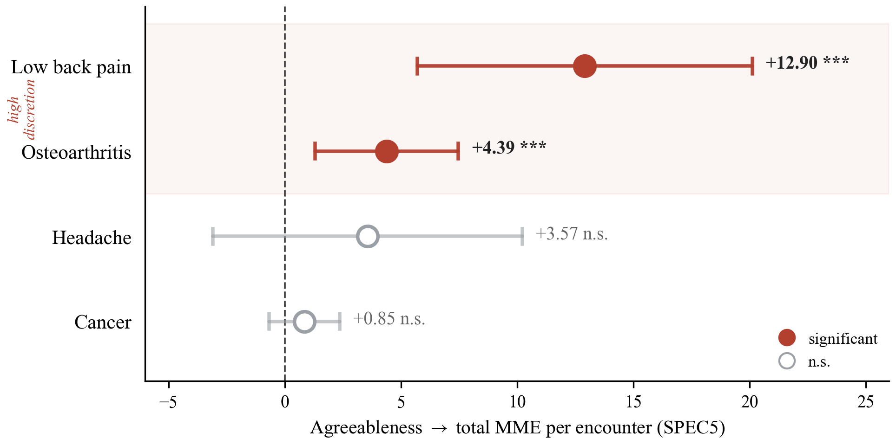
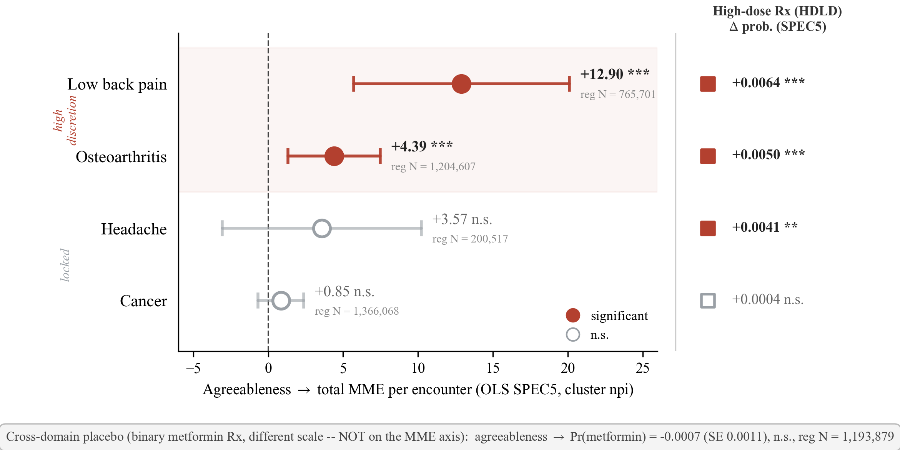

🦴 Spine A paper is a delivery contract, not a writing folder. Pin down where truth lives, how a stage page runs, what its Content and sentences mean, how evidence and Displays enter, how outputs render, and when work may close, so a fresh agent can take one paper from seed to submission from the Board.
🏁 Close when Every Q here is RULED (✅) or PARKED (⏸️), with the decision recorded on its own page, and PHILOSOPHY.md and the stage contracts say what those rulings say. Implementation does not gate this board: a ruled question whose code is unwritten closes here and stays open in its page's Items to Finish.
█████░░░░░░░░░ 15/40 questions settled
/haipipe-paper takes one paper from "why might this exist" to a submitted manuscript. Its unit
is the STAGE: eight of them, each answering exactly one question, each running the same four
phases, each closing at a human gate.
What makes the design hard is that a paper is the downstream consumer of two other layers. It may
not run code and may not read the literature itself; it asks, and the task and discovery layers
answer. So half of this skill's design is about a boundary it must not cross, and the other half
is about the shape of the thing it writes.
The Board is the durable control plane for that work. Sessions are replaceable workers, stage
pages carry their own queues and handoffs, sentence attachments resolve to inspectable evidence,
and generic Display renderers sit outside Paper while Paper retains the meaning of every Display.
This board is where those choices are recorded and argued. Settled questions graduate into
PHILOSOPHY.md and the per-stage contracts; unsettled ones stay here so nobody mistakes a
convenient improvisation for a rule.
Words this board leans on. A STAGE is one lifecycle step with one question and one artifact. DPRC
is its four phases: DRAFT, PROBE, REVISE, CHECK. A GATE is a human yes that closes a stage. The
BANK is the task and discovery layers, which answer questions the paper cannot answer itself. A
PROBE ENTRY binds one paper question by path to one bank answer. VENUE-FREE means a stage survives
retargeting to another journal; VENUE-ALIGNED means it is rewritten.
state: on this board is about the DECISION and nothing else (JL 2026-07-26). The four values
are the board's usual ones and they read: ✅ the question is ruled, 🟡 the direction is ruled but
a named sub-ruling is still open, 🔴 nothing is decided yet, ⏸️ deliberately not deciding. Whether
the code exists is a different fact and it lives in each page's ## Items to Finish, which is
the page's queue. The two were previously merged, so a page sat 🟡 because an implementation was
missing rather than because anything was undecided, and the close condition could never be
reached. Reading the 33 pages' own ## Where we are lines against that split moved 17 of them
from 🟡 to ✅ without a single ruling being made: they had already been decided and were being
reported as open.
Cast: JL decides. CC is Claude Code, doing the work.
QA · where things LIVE ① writes the paper and owns NEITHER channel out of it
QA1 the map: eight folders in four pairs, two channels out
│
├─ what we own
│ QA2 ① the skill set what ships
│ QA3 ② its design board what is argued, and what LEAVES
│
├─ the two channels both are shared skills we do NOT own
│ QA4 ③ the HUMAN channel /haipipe-board
│ QA5 ⑤ the EVIDENCE channel /haipipe-probe
│
├─ what they produce
│ QA6 ⑦ the paper what exists on disk ← QB2d QA8
│ QA7 ⑧ its board what is worked, and why NOTHING leaves
│ QA3 and QA7 are written as opposites on purpose
│
└─ how the HUMAN channel attaches
QA8 the ①/③ seam · who owns which REGION of a shared page
QA9 the ①/③ seam · how work is DRIVEN from a page
④ and ⑥ get no face: they are the design records of skills we do not own.
QB · a STAGE: hand it a page, and a predefined flow runs over it
🎛 THE STAGE what the skill reads to know what to do
QB1 the contract 24 fields · 7 blocks · 3 readers · this map
📄 THE PAGE the thing you hand it
QB2 one markdown file · four regions · four owners
QB2a what SHAPES it a skeleton to fill, or a spec to parse
QB2b what it is CALLED identity ▸ filename, and how many
QB2c a SECOND run a page you have already edited
QB2d what comes OUT md ▸ tex, one way, never back
🔁 THE FLOW the predefined thing that modifies it
QB3 the phase list · always ends `check` · may one be skipped
QB3a DRAFT what it adds, and what it refuses to write
QB3b PROBE what it may do alone
QB3c REVISE changing a sentence already read
QB3d CHECK who says done, and on what evidence
restructured 260726 on JL's model: a skill, a page, a flow. Four faces
that read as interchangeable became QB2a-d, because each describes the
same object from a different angle. The old "how a stage varies" face
dissolved: `runs:` joined QB2b, where the identity fields that decide
how many pages exist already live, and `venue_aligned:` went to QA6,
which owns the stage set.
QC · the SENTENCE, WITH ITS EVIDENCE CARD what the reader READS → sections/
QC0 the sentence unit ──┬──→ QC1 citation card prints the reference
├──→ QC2 value card prints the producing run
├──→ QC3 Display · table card prints the compiled float
└──→ QC4 Display · figure card prints assets + candidates
ROWS ▲ what a MARKER resolves to · COLUMNS ▼ where the sentence is delivered
┌──→ QC5 as LaTeX sections/ appendices/ \input
└──→ QC6 as Word no .bib, no \input, no comment
all four resolve `QA8@boardform`'s one blocked item, and it is now built:
the inline MARKER and the EVIDENCE CARD it opens, under `dialect: paper`
QD · the DISPLAY, as THIS PAPER'S CONSUMER of it what the reader LOOKS AT → displays/
the four things `/haipipe-display`'s spine leaves with the consumer
ONE OBJECT, FOUR ANGLES, in the order the work happens
QD1 The Display as a folder what is inside a unit, and where it lives
QD2 A display someone asked for who may commission, and what it costs
QD3 A display with a caption and a label what the paper WRITES on it
QD4 A display placed in a section where the float lands, and whether the
build reaches it at all
QC cites a display · QD commissions and gates one · /haipipe-display MAKES it.
Cut 8 faces → 4 on 260726: the other seven asked LAYER questions that
`01-haipipe-display-260727` now owns, four of them still 🟡 here while
already ✅ there. None carried a Law, so nothing graduated was lost.
QE · shipping the skill the contract form and the acceptance test
QE1 contract form → QE2 fresh-agent acceptanceFive letters, and three of them are folders. QB is 0-lifecycle/, the machinery that produces
things. QC is sections/ and QD is displays/, both UNNUMBERED per QA6, which are the only two
reader of the finished paper actually meets: sentences, and the displays they point at. QA is the
coordinate system that has to be settled before any of it is placed, and QE is whether a stranger
can run the result.
That cut replaced nine invented-in-order letters (260726). The letter now names the parent, so a
QB number says on sight that the question is a sub-question of the stage, which the old QD2
said nothing about. QB carries eleven faces, which is honest: the machinery IS most of this skill.
Within a letter the order is the order the work happens in, not the order the questions were
asked. QB runs author time then run time, and inside run time it follows the router: resolve the
contract, make the page, walk the phases. So a number is a position in a procedure, and a face
that cannot be placed in that procedure is a face that belongs to a different letter.
① writes the paper and owns NEITHER③ is the human channel, the only way eyes and a click reach the work. ⑤ is④ and ⑥ get no face on purpose: they are the design records ofQA1 and explained by QA3's Law.QB1 is what the skill READS toQB2 is the PAGE you hand it, one markdown file with four owners that neverQB3 is the FLOW, the declared phase list, and its four sub-facesQA6, not here. Restructured on 260726: theQB2b and QA6.sections/. A sentence herechip, which came from UI\citep{key}, a number, \ref{tab:x}. EVIDENCE.chip is the marker, .chipcard is theQA8@boardform: one sentence per source line, a > lane bound.bib entry only a human may write. A value binds to a run, not a │ QC5 ──▶ LaTeX │ QC6 ──▶ Word
────────────────┼────────────────────────┼─────────────────────────
QC1 citation │ \citep{key} + .bib │ ⚠️ no .bib. a field, or
│ + .bst does the rest │ baked text to maintain
QC2 value │ the number, inline │ the number, inline ✅ same
QC3 table │ \input{displays/<u>/ │ ⚠️ must EMBED the rendered
│ float.tex} + \ref │ table. No \input exists.
QC4 figure │ \includegraphics in │ ⚠️ must EMBED the image, and
│ the unit's float │ invent its own numbering
────────────────┼────────────────────────┼─────────────────────────
### §6.1 │ \subsection │ a Heading style
> lanes │ DROPPED │ DROPPED ✅ same
%% {CC-*}: │ survives as a comment │ 🔴 NOWHERE TO PUT ITdisplays/. This group used to try to rule the/haipipe-display got its own board on 2026-07-2701-haipipe-display-260727 now rules, two of them under the same page name, and## Law, so the whole group hadQCQC3 and QC4 ask what a sentence points at and what stateQS4 selects the first cohort; each named Q-Skill-… page carries one skill'sQE2, not here._archive/, so the argument staysWhere does a new rule, file, or page belong? Eight folders exist in four pairs, because every THING has a board that argues its rules: the paper skill, the two shared skills that are its only channels out, and one manuscript. Put something in the wrong one and it either binds nothing, because no runtime reads it, or it becomes wrong for every other paper.
✅ Covered here The six folders in three thing/board pairs, which kind of truth each holds, the only movements allowed between them, and the outside boundary the paper reaches across for evidence.
↪ Covered elsewhere What is inside the skill set is QA2; what is on the skill board is QA3; what a new paper gets is QA6; what is on a paper board is QA7. How a question actually crosses the evidence wall, and what it may cost, is QB3b.
ONE DOOR IN. /haipipe-paper is the only thing a human TYPES,
and it CALLS the two channels. Calling is not owning.
👤 the human types ONE command
│
▼
① /haipipe-paper
resolves the paper · routes · writes ⑦ and ⑧
renders NOTHING · computes NOTHING
│
┌──────────────┴───────────────┐
│ calls │ calls
▼ ▼
③ /haipipe-board ⑤ /haipipe-probe
THE HUMAN CHANNEL THE EVIDENCE CHANNEL
├ build.py ⑧ → board.html ├ organize the stake stripped
├ serve.py push the URL ├ match the bank, read-only
└ write-back a click → ⑧'s md └ dispatch through a clean agent
│ │
▼ ▼
👁 eyes · clicks · a yes tasks/ · discoveries/
│ │
└──── back into ⑧ ──┐ ┌── a QA file, bound BY PATH
▼ ▼
⑦ the paper · ⑧ its board
the human NEVER types /haipipe-board or /haipipe-probe for
paper work. Both stay real doors for what is NOT a paper:
③ renders five design boards, this one included.
── WHEN ① calls ③. three moments, not one ──────────────────────
1 ENTER resolve root → get-or-create → build.py → serve.py
the human is looking at ⑧ BEFORE any work starts
2 AFTER EVERY WRITE TO ⑧ ← the one a naive reading misses
a stage run, a phase worker, a CHECK gate: each ends
with a rebuild, or the human is reading a paper that
no longer exists
3 BEFORE ① ACTS ← the REVERSE direction
a comment or a > lane arrived through serve.py, so ⑧'s
markdown changed under ①. Re-read; never cache.
── the dependency was ALREADY there ─────────────────────────────
create-page.py already calls the Board's stage.py to compose an
S filename. ① could never ship without ③ at the WRITE layer.
This ruling extends it to the READ layer and makes an existing
coupling honest; it does not create a new one.
── and it removes an ASYMMETRY rather than adding one ───────────
⑤ was already dispatched-to: you type /haipipe-paper probe,
never /haipipe-probe, and ① still never computes an answer.
③ alone was typed. That was an accident of history. (JL 260726)
── the four pairs: every THING has a board ────────────────────── ┌───────────────┬─────────────────────────┬──────────────────────────────┐ │ reusable │ ① skills/paper/ │ ② diagrams/01-haipipe- │ │ THE PAPER │ 35 skills · v0.3.2 │ paper-260725/ 33 faces │ │ SKILL │ WHAT SHIPS │ WHAT IS ARGUED ← here │ ├───────────────┼─────────────────────────┼──────────────────────────────┤ │ reusable │ ③ board/ │ ④ diagrams/01-boardform- │ │ THE HUMAN │ haipipe-board/ │ 260722/ 30 faces │ │ CHANNEL │ FIRST-CLASS FAMILY │ READ-ONLY from here │ ├───────────────┼─────────────────────────┼──────────────────────────────┤ │ reusable │ ⑤ probe/ │ ⑥ diagram/260714-probe-qa/ │ │ THE EVIDENCE │ haipipe-probe/ │ a design FOLDER, not a │ │ CHANNEL │ v0.9.9 · 353 lines │ board. The one gap. │ ├───────────────┼─────────────────────────┼──────────────────────────────┤ │ ONE PAPER │ ⑦ Paper-X/ │ ⑧ Paper-X/0-lifecycle/ │ │ │ sections/ 1-probes/ │ 39 S faces · 8 families │ │ │ WHAT IS WRITTEN │ WHAT IS WORKED │ └───────────────┴─────────────────────────┴──────────────────────────────┘ ⑤ and ③ are the same KIND of dependency, and the paper skill says so about both. haipipe-paper-probe: "the model is not this file's, this file is only the paper-side deltas." create-page.py: the same, onto the Board's stage.py. Every phase worker in ① is an adapter.
── the four crossings, and nothing else ─────────────────────────
⒜ ② ──graduates──▶ ① AND ③ ④ ──graduates──▶ ③
a ruling reaches ✅ and its Law is COPIED into the owning skill.
SEVEN of thirteen groups here land in BOTH. → QA3
⒝ ① ──calls──▶ ③, and the two ──together──▶ ⑦ AND ⑧
two skills on ONE markdown file, never the same REGION.
Only ③ writes ⑧ from a click. Only ① writes ⑦.
① is the single ENTRY; ③ owns the render. → QA4 QA8 QA9
⒞ ⑦ ──asks across──▶ THE EVIDENCE WALL, through ⑤
as a STRING with the stake stripped; the answer returns as a
FILE, bound BY PATH. The bank never learns the claim. → QA5
⒟ ✗ FORBIDDEN
① ──▶ ② a runtime skill needing an open Q page
③ ──▶ ② the tool depending on the board that designs it
② ──▶ ④ ⑥ ruling a record this family does not own
② ──▶ ⑦ reading a paper's state off a design board
delete any board and every skill still runs.No canvas attached yet.
The word "paper" names several different things at once, and they sit in two different repositories. There is a reusable skill that ships. There is a design board that argues about that skill. There is one manuscript. And there is the control plane that manuscript is worked from. Each holds a different kind of truth and each has a different lifetime, but all four are called "the paper work" in conversation, so nothing stops a file from landing in the wrong one.
The failures are not hypothetical and they are not symmetric. A rule written into a working folder binds nothing, because no runtime reads it. Working state written into the manual makes the manual wrong for every other paper. A design argument that runtime starts depending on means the skill can no longer be shipped without its own history. And a paper that keeps a copy of the universal contract drifts from it silently, since nothing compares the two.
One of these has already happened here. This face used to say "design Board" in the singular, collapsing the skill's board and a paper's board into one word. They use the same tool, the same face grammar and the same four state: values, so the collapse looked harmless. It was not: the graduation rule, which says a settled ruling leaves the board for the skill, then appeared to apply to a paper's S pages, whose Content must never leave because it IS the paper.
This is the first face on the board because every later ownership question assumes it is answered. QB2b can only say who names a file once it is settled which tree the file is in. QA8 can only draw an ownership line inside a shared page once it is settled which two owners exist. A reader who cannot place a thing cannot rule on it.
① paper skill settled, reusable procedure skills/paper/ ② its board the rulings that produced it diagrams/01-haipipe-paper-260725/ ③ board tool THE HUMAN CHANNEL skills/board/haipipe-board/ ④ its board the rulings that produced IT diagrams/01-boardform-260722/ ⑤ probe layer THE EVIDENCE CHANNEL skills/probe/haipipe-probe/ ⑥ its record a design folder, not a board diagram/260714-probe-qa/ ⑦ paper one manuscript's real content examples/…/papers/Paper-X/ ⑧ its board that paper's lifecycle state Paper-X/0-lifecycle/
Eight, in four pairs, and two things are true at once. Every THING has a board, which is the pairing. And ① writes the paper while owning neither channel out of it, which is the shape (JL 260726).
That second reading is the useful one. A paper has exactly two ways to reach anything outside itself: evidence comes in through ⑤ /haipipe-probe, and a human reaches the work through ③ /haipipe-board. ① owns the substance and neither door. Both doors are shared skills whose models this family depends on and does not own, and the paper skill says so about both of them in its own words: haipipe-paper-probe is "only the paper-side deltas", and create-page.py is the same thing onto the Board's stage.py.
Owning neither door is not the same as being reachable only through them, and conflating the two is what made this face disagree with QA2 for a week. ① is the SINGLE thing a human types (JL 260726). It calls ③ to build and open the board, and it calls ⑤ to ask across the wall, and in both cases it renders nothing and computes nothing itself. Calling is not owning. The test is what happens on failure: when serve.py cannot reach the browser, ① has no fallback renderer of its own to fall back to, because it never had one. It prints the URL and says the push failed.
⑥ is the one asymmetry worth stating: it is a design folder rather than a board, so the evidence channel's rationale cannot be read, commented on or closed the way the other two can.
Calling it "four folders and a tool" was wrong, and the phrasing gave it away (JL 260726): a thing numbered ③ in the same sequence as the others is in the same set. But five was wrong too, because it left ③ as the only thing on the map without a board, while its board, 01-boardform-260722, was already cited by four faces here as the authority for what a board is. Numbering it ④ makes that citation structural instead of an appeal to something off the map.
④ differs from the other five in one respect worth stating: we rule nothing there. This board consults it and never writes it, exactly as QA3's Law says a design board behaves toward anyone who is not its owner. It is on the map because it is the board of a thing already on the map, not because we claim it.
The crossing that carries the most weight is ⒝, because it is the one that produces anything. ① and ③ are two separate skills that write the same markdown file and never contend, because their regions are disjoint: ③ owns the filename, the face shell, the managed contract block and every keystroke a human contributes through the live layer, while ① owns Question, Boundary, Content, Items to Finish and Where we are, and is the only one of the two that generates ⑦. QA8 states that ownership line seam by seam; QA9 states how work leaves a page and returns to it.
The evidence banks are deliberately not numbered among them. tasks/ and discoveries/ sit beside papers/ inside a project, they are owned by /haipipe-task and /haipipe-discovery, and no page of this skill rules anything about their contents. Calling them a fifth folder gives them false parity with the folders we own and breaks the grid. They are the OUTSIDE, and what matters here is the wall and how a question crosses it.
② and ⑧ use the same tool and the same grammar, which makes them look like one thing. They are not.
A design board is a RECORD. Its rulings are supposed to leave: ✅ means the Law is copied into ①, and from then on the skill binds, not the board. Delete ② and the skill still runs.
A paper board is a CONTROL PLANE. Nothing leaves it. A gated S page keeps its Content, because that Content is the paper. Delete ⑧ and ⑦ loses its frontier, its queue and its state.
Same glyph, opposite meaning: ✅ on ② is a ruling made, ✅ on ⑧ is a human gate passed. That difference is argued on its own two pages, QA3 and QA7, written as deliberate opposites.
④ and ⑥ are the design records of skills this family does not own, and QA3's Law says a board is ruled by its owner alone and consulted by everyone else. So they are named on the map, cited constantly, and never given a page here. That is the rule working, not a gap to fill: writing a face about ④ would be this board ruling a board it has no standing over.
③ the human channel 3 faces QA4 the tool · QA8 the region seam
· QA9 the driving seam
⑤ the evidence channel 1 face QA5
The asymmetry is real and it reflects where the rulings are. ③'s contract with ① is heavily ruled here: who names a file, who creates a page, which dependency declaration binds, where state lives, the dialect seam, the queue, the runner. ⑤ owns nearly all of its own contract, and this family rules only which questions a paper raises and how a landed answer is interpreted.
The thing to watch is that the imbalance stays a reflection and does not become a habit. If the evidence channel ever grows a second ruled seam, it earns a second face by the same test as anything else.
a rule that is still argued → a Q face on ② a rule that is decided → ② as a ## Law, then graduate into ① a procedure an agent must follow → ①, in the owning SKILL.md or contract one paper's prose, display, number → ⑦ one paper's status, queue, gate → ⑧ a number or citation from a run → across the wall, bound from ⑦'s 1-probes/
Every THING has a board. ③'s board is ④, read-only from here (JL 260726).
Each holds a different kind of truth, and the two boards are named separately rather than collapsed into one word.
They belong to another skill family and this board rules nothing about their contents, so numbering them among the four was false parity (JL 260726).
Graduation into BOTH skills, the ①＋③ collaboration that produces ⑦ and ⑧, asking across the wall, and the three forbidden directions (260726).
README.md still describes the tree without this distinction. A fresh agent must be able to place a new file without reading this board.
No runtime skill should require an open Q page or infer paper state from ②. This has never been checked.
The eight folders and the four crossings are ruled.
Two corrections landed on 260726, both from real confusion rather than review. The two kinds of board had been one word, which made the graduation rule appear to apply to a paper's S pages. And the evidence banks had been counted as a fifth folder, which put a folder owned by another skill family on the same footing as the four this skill owns.
The single-door half HAS graduated, and on the same day it was ruled. /haipipe-paper now calls ③ at all three moments: haipipe-paper-enter 0.6.1 builds and opens the board on entry and lost its 152-line duplicate text renderer, haipipe-paper-stage 0.8.1 rebuilds after every write and re-reads before every read, and the router's Closing Block carries a deep-linked board URL where a 9-stage strip used to sit.
README.md still carries the older complete-folder description.
The paper family map that should carry this boundary.
The live ⑧ inside one paper instance.
The layer that owns the crossing to the banks.
No discussion yet — add a line under ## Discussion in QA-where-things-live/QA1-eight-folders.md: > JL: …
Eight folders in four pairs, and exactly four crossings between them. Every thing has a board, and that board holds the arguments that produced it.
A settled ruling graduates from the skill board into the OWNING SKILL, which for seven of thirteen groups means both ① and ③, and only then binds. A ruling landed on one half of a pair is a defect.
① and ③ produce ⑦ and ⑧ together, on one file, in disjoint regions: the tool owns the shell and every human keystroke, the paper skill owns the substance and every generated manuscript file. A paper consumes the settled contract and never stores the universal manual. A paper binds a question it cannot answer to a bank answer, by path, across a wall it may not reach through in any other way.
The evidence banks are not a folder of this skill. They are owned elsewhere, and nothing on this board rules their contents.
No runtime skill may require an open Q page, and no paper's state may be inferred from a design board. A design record is never a runtime dependency: delete any board and every skill still runs.
A board is ruled by its owner alone and consulted by everyone else. This board rules ① and, for the contract half, ③. It never rules ④.
/haipipe-paper calls /haipipe-board and /haipipe-probe. The opening diagram showed OWNERSHIP and never showed FLOW, so it was replaced with a call-flow figure: one door in, two channels called, and what comes back. Two blocks added beside it: the three moments ① calls ③ (the middle one, rebuild after every write, is what a naive reading misses), and why this does not break "owns neither channel": the dependency already existed at the write layer via create-page.py, and the ruling removes an asymmetry rather than adding one, because ⑤ was already dispatched-to. Crossing ⒝ now reads ① ──calls──▶ ③. Ruled and implemented the same day; see QA4 for the ruling itself.⑥. Then JL's synthesis reframed the whole map: ① writes the paper and owns NEITHER channel out of it. ③ is the human channel, ⑤ the evidence channel. Renumbered so producers come before product, so crossing ⒝ reads ① ＋ ③ ──▶ ⑦ AND ⑧. 383 glyphs preserved through the swap.What is in the reusable skill package, what runs at each stage, and what does it put into the other folders? This is the one folder written once and used by every paper: 35 skills and 7,406 lines, each of them a promise that some stage worker will follow. The work here is ownership, not layout.
✅ Covered here The layers, the direction of control, the anatomy of one callable skill, what each of the eight stages runs and produces, and what crosses this folder's edges.
↪ Covered elsewhere Which folder this is among the four is QA1; the design board that rules it is QA3; the paper it writes into is QA6 and that paper's board is QA7; the contract form itself is QE1; the Display split is QD1.
one request, one direction, no second orchestrator
② WHICH BOARD GROUP RULES IT · the layer · what it LEAVES BEHIND
ruled by ② user intent
│
▼
QA2 ──────────▶ haipipe-paper/ THE SINGLE DOOR. the only thing a human
QA1 │ types. resolve the paper, CALL ③ to build
QA4 │ and open ⑧, route. WHICH, never HOW.
│ writes NOTHING · renders NOTHING
│ → calls ③ haipipe-board (the human channel)
│ → calls ⑤ haipipe-probe (the evidence channel)
▼
QA6 ──────────▶ 0-enter/ which paper, which round
QA7 │ → ⑦ .paper-console.yaml session state
│ → ⑧ S-Round-<n>-<vYYMMDD>.md
│ and that round's letters beside it
▼
QB1-QB3d ──────▶ 1-lifecycle/ pick ONE S page, load ONE stage contract
QA8 (creation) │ haipipe-paper-stage · index.yml · 8 contracts
QE (the form) │ → ⑧ S-<Family>-<unit>-<slug>.md
│ create-page.py calls the Board's stage.py
▼
QB3-QB3d (phases) ─▶ 2-phase/ the four phases, 13 workers, all on ONE page
QC (sentence) │
QA9 (the runner) │ DRAFT → ⑧ the page's ## Content + its Q-consumer
│ PROBE → ⑦ 1-probes/PPnn_<topic>/QXn_<slug>.md
│ ↳ ACROSS THE WALL, read-only, to
│ tasks/ · discoveries/ → QA/<n>-<slug>.md
│ The answer is never copied in; it is pointed at.
│ REVISE → ⑧ the same page, plus %% why-comments
│ CHECK → ⑧ state: ✅ WRITTEN BY A HUMAN
▼
…continuing DOWN the same chain, the artifact side ──────────
QB2d (the product) ──▶ 3-deliver/ 1-build · 2-audit · 3-polish · 4-ship
QD (renderers) │ → ⑦ sections/*.tex GENERATED from ⑧
│ → ⑦ displays/…/float.tex
│ → ⑦ main.pdf · overleaf · the bundle
▼
QA7 ──────────▶ 4-respond/ → ⑧ the round's S-Round page: what came
│ back, what was decided, what applied
▼
QD ──────────▶ 5-present/ → ⑦ slides.pdf · poster.pdf, from the
ACCEPTED paper
── read the LEFT column and the graduation edge is addressable ──
every layer here is ruled by some group on ②. A Law that reaches ✅
has a named target, so "it is decided" and "it is applied" stop
being the same sentence. QA3 is the only group with no target at
all, because it rules the board itself.
── read the RIGHT column and the placement rule falls out ───────
⑧ gets everything a stage DECIDES or writes as prose
⑦ gets everything GENERATED from those decisions, plus the
evidence pointers
① gets NOTHING. Nothing a paper run produces is written back into
the skill: that direction is graduation, and only ② may travel it.
── which layers are ADAPTERS, and onto what ─────────────────────
1-lifecycle/ create-page.py ──▶ ③ the Board's stage.py
2-phase/ haipipe-paper-probe ──▶ ⑤ "only the paper-side deltas"
every other layer writes ⑦ or ⑧ directly and adapts onto nothing.
consulted, never in the chain of command:
venue/ knowledge packs, read lazily. NEVER lifecycle verbs.
diagram/ design Boards. NEVER runtime contracts.
───────────────── zoom in on any one skill ─────────────────
tier 1 metadata name + description selects the skill, always paid
tier 2 SKILL.md the core loop paid on every invocation
tier 3 references/ loaded ONLY when its branch is taken
scripts/ run without consuming reasoning context
assets/ copied into outputs
✗ never in the invocation path, at any tier:
CHANGELOG.md · feedback/ · migration notes · status reports · design BoardsNo canvas attached yet.
This is one of three folders written once and used by every paper, ③ being the other. Everything in it is a promise: a contract a stage worker will follow, a script that will run, a template that will be filled. Nothing in it is about any particular paper, and the moment something here mentions one, it has stopped being reusable.
The folder is already close to the right architecture, so the useful work is not a directory migration. It is ownership. Several skills still carry routing, craft, rendering, history and state at once, and the front door has grown to 556 lines, which every invocation pays for whether or not it needs them.
What is genuinely missing is the second half of the question above. A reader can see which layers exist and cannot see what a stage RUN actually does: which workers it dispatches, what it writes, where it writes it, and what appears in the paper as a result. That is the part this face now carries, because it is also the map of how ① touches ⑦ and ⑧.
haipipe-paper/ thin front door: resolve paper, open Board, route intent 0-enter/ create or enter a paper and manage dated rounds 1-lifecycle/ stage contracts and the Board-aware stage runner 2-phase/ internal DRAFT, PROBE, REVISE, and CHECK workers 3-deliver/ build, render, audit, compile, export, and ship 4-respond/ rebuttal and revision response 5-present/ slides and posters derived from the accepted paper venue/ lazily consulted knowledge packs, never lifecycle verbs diagram/ design Boards, never runtime contracts
The front door selects context. The stage runner works one S page and dispatches a bounded worker. Workers return results to the same page. Delivery adapters materialize accepted Content into target formats. There is no second orchestrator anywhere in that chain.
The same four phases, dispatched to the same thirteen workers, whichever stage is running.
DRAFT haipipe-paper-draft raises questions, writes nothing it cannot source
├── draft-citation finds assertions owing a source. READ-ONLY.
├── draft-values finds numbers owing a run
└── draft-display finds claims owing a display
PROBE haipipe-paper-probe the ONLY door evidence enters by; crosses the
wall to tasks/ and discoveries/
REVISE haipipe-paper-revise rewrites to venue quality, leaves why-comments
├── revise-place substitutes LANDED answers into placeholders
├── revise-content section → paragraph → weave → sentence
├── revise-humanizer removes AI tells
└── revise-results results prose
CHECK haipipe-paper-check HUMAN GATE. Only a person may pass it.
├── check-evidence
└── proof-checker stage phases writes into ⑧ the paper board generates in ⑦
──────────── ─────────── ───────────────────────────────── ──────────────────
seed D P R C S-Seed-0-seed.md —
resource D P R C S-Work-0-resources.md —
claims D P R C S-Work-1-claims.md —
venue D P C S-Venue-0-venue.md STATUS.md `venue:`
no REVISE (a contract, not prose, so there
is nothing to polish)
pitch D P R C S-Venue-1-pitch.md —
narrative D P R C S-Venue-2-narrative.md —
display D P R C per-unit, blocked on QB2b 4-display.tex
(11 S-Display pages on MISQ) displays/…/
section-edit D P R C S-Main-n · S-Appendix-x sections/*.tex
PER UNIT one page per section
Five of the eight produce nothing in ⑦ at all: their whole product is a page in ⑧. Only display and section-edit generate manuscript files, and both generate them FROM the page, never the other way round.
<skill-name>/ ├── SKILL.md trigger and shortest complete execution procedure ├── references/ detailed contracts and variants, loaded only when needed ├── scripts/ deterministic operations that should not be rewritten ├── assets/ templates or files copied into outputs └── agents/ optional discovery and UI metadata
Metadata selects the skill. SKILL.md explains the core loop and names exactly which conditional reference to read. Scripts and assets do work without consuming routine reasoning context.
Design Boards, changelogs, feedback archives, migration narratives and status reports do not belong in the live invocation path. If history must be retained, keep it outside the callable skill folder. The evidence that this is not theoretical: haipipe-paper/SKILL.md is 556 lines and owns routing, closing UI, comment history, evidence routing and delivery needs at once; haipipe-display-poster/SKILL.md is 854.
Measured 2026-07-26. ver is the skill's own metadata.version; lines is its SKILL.md, which is what every invocation of it pays for.
layer skill ver updated lines
────────────── ─────────────────────────────── ───── ────────── ─────
front door haipipe-paper 0.3.2 2026-07-19 556 ⚠
0-enter haipipe-paper-enter 0.4.1 2026-07-19 570 ⚠
haipipe-paper-round 0.1.0 2026-07-19 168 ⚠ superseded
1-lifecycle haipipe-paper-lifecycle 0.3.1 2026-07-19 422
haipipe-paper-stage 0.6.0 2026-07-25 235
2-phase/draft haipipe-paper-draft 0.5.2 2026-07-19 416
haipipe-paper-draft-citation 0.1.1 2026-07-19 122
haipipe-paper-draft-display 0.1.1 2026-07-19 116
haipipe-paper-draft-values 0.1.1 2026-07-19 116
2-phase/probe haipipe-paper-probe 0.6.1 2026-07-19 219
2-phase/revise haipipe-paper-revise 0.1.6 2026-07-19 158
haipipe-paper-revise-content 0.1.4 2026-07-19 84
haipipe-paper-revise-humanizer 0.2.3 2026-07-07 130
haipipe-paper-revise-place 0.1.0 2026-07-19 111
haipipe-paper-revise-results 0.2.3 2026-07-08 86
2-phase/check haipipe-paper-check 0.3.0 2026-07-19 442
haipipe-paper-check-evidence 0.1.0 2026-07-19 148
haipipe-paper-proof-checker 0.1.2 2026-07-19 369
3-deliver/build haipipe-paper-conform 0.1.1 2026-07-19 81
haipipe-paper-folder 0.4.0 2026-07-14 131
haipipe-paper-restructure 0.1.1 2026-06-04 110
haipipe-paper-scaffold 0.1.1 2026-06-04 120
3-deliver/audit haipipe-paper-claim-audit 0.1.1 2026-05-31 230
haipipe-paper-optimizer 0.1.1 2026-05-31 346
haipipe-paper-reviewer 0.1.1 2026-05-31 148
3-deliver/polish haipipe-paper-polish 0.1.0 2026-07-17 56
3-deliver/ship haipipe-paper-compile 0.1.0 2026-05-31 287
haipipe-paper-diffpdf 0.1.1 2026-07-19 350
haipipe-paper-to-overleaf 0.1.1 2026-07-19 239
3-deliver haipipe-paper-deliver 0.1.0 2026-07-19 163
4-respond haipipe-paper-rebuttal 0.1.1 2026-07-14 310 ⚠
paper-rebuttal 0.1.1 2026-07-14 146 ⚠
rebuttal-response 0.1.0 2026-05-31 171 ⚠
5-present paper-poster 0.2.0 2026-07-24 134
paper-slides 0.2.0 2026-07-24 136
────────────── ─────────────────────────────── ───── ────────── ─────
35 skills 7,406
Four things this roster says that no prose on this page did.
Nothing has reached 1.0. Every skill is 0.x, and eleven are still 0.1.x. That is honest rather than alarming, but it means no part of this folder has ever been declared stable, and QE2's fresh-agent acceptance has never been passed by any of them.
The compaction problem is bigger than the front door. haipipe-paper is 556 lines and haipipe-paper-enter is 570, so the two files a session reads first total 1,126 lines before any actual work is selected. haipipe-paper-check adds 442 and haipipe-paper-draft 416. QA3's progressive-disclosure Law is stated and, by these numbers, not applied anywhere.
4-respond/ has three overlapping rebuttal skills: haipipe-paper-rebuttal (310), paper-rebuttal (146) and rebuttal-response (171). Nothing on this board rules which is the entry, and two of them predate the third. That is the clearest single ownership defect in the folder.
The naming is not uniform. Four skills drop the haipipe- prefix: paper-rebuttal, rebuttal-response, paper-poster, paper-slides. A reader cannot tell from a name whether a skill belongs to this family, which matters because the prefix is how the family is discovered.
This is the ② ──graduates──▶ ① edge, made addressable. Every group on the design board rules some part of this folder, and a ruling that reaches ✅ has to land somewhere concrete or it has not graduated. This is that target list, so nobody has to guess.
board group what it rules in ① state
─────────────────────────── ─────────────────────────────────────── ─────
QA1 six folders README.md · PHILOSOPHY.md ✅
the family map that should carry the boundary and does not yet
QA2 the skill set the tree layout · haipipe-paper/SKILL.md 🟡
THIS page. 556 lines at the front door is its open item.
QA3 the skill board NOTHING in ①, by design 🟡
it rules the board itself; that is what makes ② deletable
QA6 the paper haipipe-paper-folder/SKILL.md 🟡
haipipe-paper-enter/SKILL.md
the scaffold contract. Already changed once today: 3 containers.
QA7 the paper board haipipe-paper-round/SKILL.md <- REWRITE 🟡
haipipe-board's S-family list
the round ruling landed here and the skill still contradicts it
─────────────────────────── ─────────────────────────────────────── ─────
QB1-QB2b adding a stage stages/index.yml . CONTRACT.md . SKILL.md 🟡
the test that admits one, the four files, the two variation flags
QB2a the stage template stages/*/template.md x8 🔴
create-page.py PARSES it; the file says "follow, don't ship"
QB2b-QB2d the page it writes create-page.py . haipipe-board/stage.py 🟡
who names it, what a second run does, what is generated from it
QB3-QB3d the four phases 2-phase/ x4 . ref/08-stage-gate.md 🟡
calling them, then DRAFT, PROBE, REVISE and the gate
QA8 who owns the page create-page.py . haipipe-board/stage.py 🟡
the one-file rule, dependencies, state, creation
QA9 how work is DRIVEN haipipe-paper-stage/SKILL.md (the runner) 🟡
haipipe-board/serve.py (the live layer)
─────────────────────────── ─────────────────────────────────────── ─────
QC the sentence 2-phase/0-draft/draft-{citation,values, 🟡
display}/ . 2-phase/2-revise/revise-place/
stages/5-section-edit/template.md
haipipe-board/src/body.py (the chips)
QD the display display/ (the reusable family) 🟡
1-lifecycle/4-display/ref/
3-deliver/ renderers
QE shipping stages/index.yml . stages/CONTRACT.md 🟡
Three things fall out of reading it as a column.
QA3 is the only group with no target in ①, and that is not an omission. It rules the design board itself, which is exactly why ② can be deleted without breaking anything.
QA4, QA8, QA9, QC and QD each name a file in board/haipipe-board/ or display/, which are not inside this folder at all. Those are the rulings that cross a package boundary, and they are the ones most likely to be half-applied: a Law can graduate into the paper skill and quietly not reach the board tool that implements its other half.
QA7 is the live example of a ruling that landed and has not been carried: the round ruling is written on the board and haipipe-paper-round/SKILL.md still describes the layer it removed. It carries a superseded banner rather than a rewrite, so the gap is visible instead of silent.
② the skill board ──▶ ① IN, and only this way. A ruling reaches ✅ and its
Law is COPIED into a SKILL.md, a stage contract, or
a ref/ file. Nothing here may read the board back.
① ──▶ ⑦ the paper OUT, only through a stage run. A worker writes the
page and any generated manuscript file. No skill
file is ever copied into a paper.
① ──▶ ⑧ the paper board OUT, and this is the one people forget. Creating a
page is `create-page.py`, which selects the stage
and template here, then calls haipipe-board's
`stage.py` for the shell. Board owns the filename,
Paper owns the Content jobs.
① ──▶ the wall NEVER directly. Only the PROBE worker crosses to
tasks/ and discoveries/, and it asks; it does not run.rarely the layer map, the anatomy, the phase list a QA/QB ruling per rule a stage contract's fields a graduated Law per venue a pack under venue/ a new outlet never anything naming one paper that is ⑦ or ⑧
The existing top-level organization remains useful and avoids a migration with no user benefit.
One short SKILL.md points directly to conditional references, scripts, and assets.
The four phases, the thirteen workers, and the per-stage write and generate table (260726, JL's ask).
What comes in from ②, what goes out to ⑦ and ⑧, and that only PROBE crosses the wall.
The graduation edge is addressable: each group names the files a settled Law must land in (JL 260726).
QA4, QA8, QA9, QC and QD each rule a file in haipipe-board/ or display/, outside this folder. Nothing checks that a Law reached both halves.
35 skills, their versions, dates and SKILL.md sizes, measured 260726.
4-respond/ carries three: haipipe-paper-rebuttal, paper-rebuttal, rebuttal-response. Nothing says which one a session calls, and two predate the third.
Four skills drop the haipipe- prefix, which is how the family is discovered.
Move stage craft, comment detail, evidence detail, and output-specific rules to their actual owners. 556 lines paid on every invocation.
A fresh agent should identify the entry, stop conditions, and next owner without reading family history.
Classify every extra file as runtime reference, deterministic script, reusable asset, or design history.
⑦ directlyToday only display and section-edit generate manuscript files, and only from their page. Whether any stage may write to ⑦ without a page is unstated, and a worker with a plausible reason will eventually do it.
A fresh session should move from Board to stage runner to worker to the same page without another orchestrator.
The ownership map, the anatomy, and the per-stage run map are recorded, and on 260726 a large slice of it was finally APPLIED rather than only argued. Sixteen of the 35 skills were rewritten against QA6's layout ruling in one pass, ordered by which held a live binding rather than by how many stale mentions each had: the four 1-build/ skills first (with conform first of those, because it is read-only and once correct it becomes the pass/fail test the other three are written against), then the eight stage contracts, the console, the router and the phase tail. The shared spec 2-phase/REF/paper-folder-anatomy.md went with them, and it mattered most: its prefix table asserted the exact inverse of the delete test, which is why the family had drifted at all.
The front door was applied too. haipipe-paper is now the single thing a human types, and it calls ③ and ⑤ rather than sitting beside them (QA4).
What is still only argued is the ownership cleanup this face opened with: several skills continue to carry routing, craft, rendering, history and state at once.
The two zoom levels, family and folder, were separate faces until 260726, when they merged: both answer "what is inside ①", and splitting them put two of QA's four faces on one quadrant.
Reopened to 🟡 on 260726: the edge map raised a real unruled question, which is whether a stage may write into ⑦ without going through a page.
haipipe-paper/SKILL.mdThe front door, and the largest compaction candidate at 556 lines.
1-lifecycle/haipipe-paper-stage/The runner, stages/index.yml, the eight contracts, and CONTRACT.md.
2-phase/The thirteen phase workers.
3-deliver/The output and shipping family.
No discussion yet — add a line under ## Discussion in QA-where-things-live/QA2-the-skill-set.md: > JL: …
The numbered family spine stays. Each layer owns one responsibility and control flows one way: the front door selects context, the stage runner works one S page, a bounded worker returns to that same page, delivery adapters materialize accepted Content.
venue/ is knowledge consulted lazily and never carries a lifecycle verb. diagram/ holds design Boards and never a runtime contract. Neither is in the chain of command.
Inside one skill: progressive disclosure. Metadata selects, SKILL.md carries the shortest complete procedure and names which conditional reference to read, and everything else loads only when its branch is taken. Design history never sits in the invocation path.
Nothing in this folder names one paper. A rule that mentions a specific manuscript belongs in ⑦ or ⑧, not here.
QA6's layout in one pass, plus the shared anatomy spec and 90 venue templates; the front door became the single door (QA4). The diagram's front-door box now names both dispatches. One correction the pass produced belongs here: measuring per SKILL.md badly understated the work, because haipipe-paper-stage's real debt was in its eight stages/*/stage.md contracts, whose paths RESOLVE AT RUN TIME. A stale path in a contract does not read wrong; it writes to the wrong place.⑦ without going through a page.What belongs on the design board for a skill, and what happens to a question once it is answered? This is the folder you are reading, and it is the easiest of the eight to get wrong, because it looks like documentation and is not: documentation is what a worker follows, and this is the argument that produced it.
✅ Covered here What a design board holds, what leaves it when a question closes, and why nothing may depend on it.
↪ Covered elsewhere The paper board is the opposite object and is QA7; the skill a ruling graduates into is QA2; where any board lives on disk, and its face grammar, are ruled on the boardform board at its QC1@boardform and QA2@boardform.
┌──────────────────────────────────────────────────────────────────┐
│ ② SKILL BOARD skills/diagrams/01-haipipe-paper-260725/ │
│ │
│ Q face the argument, the alternatives that were │
│ ├ Question rejected, the evidence, and the ruling once │
│ ├ Content it is made │
│ ├ Items what is still owed │
│ └ Law ◀───── the ONE part that is meant to LEAVE │
└───────────────────────────┬──────────────────────────────────────┘
│ state: ✅ → copy the Law out
┌────────────────┴────────────────┐
▼ ▼
┌────────────────────────┐ ┌────────────────────────────────┐
│ ① haipipe-paper │ │ ③ haipipe-board │
│ paper family │ │ first-class Board family │
└────────────────────────┘ └────────────────────────────────┘
from here on THIS binds, and for many rulings, SO DOES
not the board THIS. Both halves, or neither.
── which group lands where ────────────────────────────────────────
group → ① haipipe-paper → ③ haipipe-board
────────────────────── ───────────────────────── ─────────────────
QA1 eight folders README · PHILOSOPHY —
QA2 the skill set the tree · front door —
QA3 the skill board — (it rules ② itself) —
QA6 the paper paper-folder · enter —
QA7 the paper board paper-round ← owed the S-family list
QA4 the tool create-page.py the whole package
QA8 who owns a region create-page.py stage.py · serve.py
QA9 driving work haipipe-paper-stage serve.py
QB1-3 adding a stage index.yml · CONTRACT.md —
QB2b-6 the page written create-page.py · stage.py —
QB3-11 the four phases 2-phase/ · ref/08-stage —
QC the sentence draft-* · revise-place src/body.py
5-section-edit/template src/dialect_paper.py
QD the display 1-lifecycle/4-display/ (display/ family)
── the failure this two-headed arrow exists to name ───────────────
SEVEN groups land in ③ as well as ①. A Law applied to one side
only leaves a page and an implementation that disagree, and
nothing detects it. Twice on 260726:
chips SHIPPED in ③, four faces here still called them unbuilt
the round ruling landed HERE, haipipe-paper-round still
described the layer it removed
A ruling that touches both halves is not graduated until it has
landed in both. Applied to one, it is a defect, not partial
success.
── and the face itself does not move ──────────────────────────────
the Law is COPIED, never cut. The face stays as the record of
WHY, which neither skill carries, because a worker reading a
procedure pays for every line of it.
✗ delete this whole folder and BOTH skills still run.
if that is ever untrue, something has been placed wrong.No canvas attached yet.
This is the folder you are reading. It is the easiest of the eight to get wrong, because it looks like documentation and is not: documentation is what a worker follows, and this is the argument that produced it. The failure mode is that it becomes a second manual, drifts from the first, and a fresh agent cannot tell which one binds.
The way through is to keep the reasoning here and copy only the ruling out, so a ## Law graduates into the skill it governs while the argument that produced it stays behind. What we want at the end is a board that could be deleted without breaking anything: if a skill ever needs a Q page to run, something has been filed in the wrong folder.
The argument, not the instruction. A face carries the question in its own words, the alternatives that were considered and rejected, the evidence that decided it, and the ruling as a ## Law once there is one. A worker following a procedure should never need to read it.
When a face reaches ✅, its ## Law is copied into the owning skill: a SKILL.md, a stage contract, or a file under ref/. From that moment the skill binds and the board does not.
The face itself stays. It is the only record of why the rule is what it is, and that is exactly what a skill file must not carry, because a worker reading a procedure pays for every line of it.
state: here means the ruling onlyOn this board the four values are about the DECISION and nothing else: ✅ the question is ruled, 🟡 the direction is ruled but a named sub-ruling is open, 🔴 nothing is decided, ⏸️ deliberately not deciding. Whether the code exists is a different fact and lives in ## Items to Finish.
That was settled on 260726. Before it, a page sat 🟡 because an implementation was missing rather than because anything was undecided, which made the board's close condition unreachable and made 17 already-decided questions read as open.
No skill may import from here, read a Q face at runtime, or require one to exist. Delete this folder and ① still works. The board is where the skill was designed, not part of how it runs.
② ──▶ ① the skill set OUT, and it is the only outward edge that exists.
A ruling reaches ✅, its ## Law is COPIED into a
SKILL.md, a stage contract, or a ref/ file. The
face stays behind as the record of WHY.
② ──▶ ⑦ the paper NOTHING. A paper never reads this folder.
② ──▶ ⑧ the paper board NOTHING, at runtime. The MISQ paper appears on
these pages only as EVIDENCE cited in an argument
("11 of 16 settled faces carry no Law"), which is
a reading, not a dependency.
① ──▶ ② FORBIDDEN. No skill may import, read, or require
a Q page. Delete this folder and ① still runs;
if that is ever untrue, something is placed wrong.
the wall NOT THIS FOLDER'S EDGE. A design board never asks
the banks anything. It argues about the rules for
asking, which is `QB3b`'s subject, not its own.
The asymmetry is the point: one edge out, none in, and everything else forbidden. That is what makes this folder deletable, and being deletable is how you know a design record has not quietly become a runtime dependency.
Q faces hold the argument; the skill holds the instruction.
✅ means the Law is copied into the owning skill file, and the face stays as the record of why.
state: means the ruling, not the codeApplied to all 34 faces on 260726; implementation status lives in Items.
Seven of thirteen groups land in ③ as well as ① (260726).
11 of the 16 ✅ faces carry no ## Law, so nothing can graduate from them. That is the largest gap on this board.
Nothing has ever checked that no runtime skill references a Q page. QA1 owes the same check from the other side.
The record-versus-manual distinction and the graduation rule are ruled and in use. The state: vocabulary was pinned on 260726.
The gap is graduation itself: most settled faces have no ## Law to copy, so the mechanism is ruled and mostly unexercised. The board's own close condition depends on it.
This board's index, close condition, and the state: vocabulary.
The board tool's own board, which rules what a board IS.
One of the graduation targets named in the close condition.
No discussion yet — add a line under ## Discussion in QA-where-things-live/QA3-the-skill-board.md: > JL: …
EVERY thing has a board, and a board holds the argument while the thing holds the instruction. A worker following a procedure never reads a Q face.
There are four such pairs: ①/② the paper skill, ③/④ the board tool, ⑤/⑥ the probe layer, ⑦/⑧ one manuscript. The first two behave alike, as a record whose rulings graduate out. The third is the exception ruled at QA7, because nothing graduates out of a paper board.
When a face reaches ✅, its ## Law is COPIED into the owning skill file and the skill binds from then on. The face stays, as the record of why. A settled face with no ## Law has nothing to graduate and is not finished.
state: on a design board is about the decision only. No runtime skill may import, read, or require a Q page: delete the board and the skill still runs.
board.md's decision-only rule, which says state: is about the DECISION and that implementation does not gate this board. Every open item here is implementation or a test, not an undecided question, so the page was reporting itself as open because code was missing. Flipped with no ruling made.state: pinned to mean the ruling only, and applied to all faces; 17 moved 🟡→✅ without a ruling being made. The graduation diagram now shows BOTH targets, ① and ③, because seven of thirteen groups land in both. Law generalized from one board to every thing/board pair./haipipe-board is not part of /haipipe-paper, and half this board's rulings land in it. What is the relationship, where is its edge, and WHO DOES THE USER TYPE? Two separate skills write the same markdown file to produce a paper and its board, and this face is how they manage that without ever colliding.
✅ Covered here What haipipe-board is to this skill, which of its behaviours this board may rule, the dialect: paper seam, and how a ruling reaches both halves.
↪ Covered elsewhere What a board IS, its face grammar, where it lives on disk, and its live layer are ruled on ④, the board tool's OWN board at diagrams/01-boardform-260722/, 27 faces. ③ and ④ are a thing/board pair exactly as ① and ② are, which is why this face may rule the contract between us and never what a board is. The two boards it renders for us are QA3 and QA7. Who owns a shared page is the QA8 group; how work is driven from a page is QA9. Both are now under this face, as QA8 and QA9.
TWO SKILLS, ONE FILE, TWO PRODUCTS
① haipipe-paper ③ haipipe-board
the SUBSTANCE the SHELL · the RENDER
what a stage decides and writes · the WRITE-BACK
paper family first-class Board family
│ │
└──────────────────┬─────────────────────┘
│ they alternate on ONE markdown file
│ and never write the same REGION
▼
┌──────────────────────────────────────────────────────────────┐
│ ⑧ 0-lifecycle/…/S-<Family>-<unit>-<slug>.md │
│ │
│ ③ owns the filename · the face grammar · the Pages │
│ row · the managed Stage Contract block · │
│ anything a human types into the page │
│ ① owns Question · Boundary · Content · Items to │
│ Finish · Where we are │
└───────────────────────────────┬──────────────────────────────┘
│ ① GENERATES from it, one way
▼
┌──────────────────────────────────────────────────────────────┐
│ ⑦ sections/*.tex · displays/…/float.tex · main.pdf │
└──────────────────────────────────────────────────────────────┘
── STEP 0 · THE DOOR. ruled 260726: ① is the SINGLE entry ────
the user types what actually runs
────────────────────── ───────────────────────────────────
/haipipe-paper enter ──▶ ① resolve the paper root
<paper-path> ① get-or-create when the path is new
└ folder: board.md + ONE Seed page
③ build.py 0-lifecycle/ → board.html
③ serve.py push the URL to the browser
① print ONE line + open needs + the URL
│
▼
the human is LOOKING at ⑧
The user never types /haipipe-board for a paper. It stays a
real door for the five boards that are NOT inside a paper,
this one included: ③ must not become paper-only.
── why this does NOT break "① owns neither channel out" ───────
CALLING IS NOT OWNING.
③ still owns the format, the build, the filename rule, the
html, the write-back. ① renders nothing and never will.
① owns the ENTRY, and dispatches.
It is the SAME relation ① already has with ⑤: a user types
/haipipe-paper probe, never /haipipe-probe, and ① still never
computes an answer. The old shape was ASYMMETRIC — ⑤ was
dispatched-to, ③ was typed — and the asymmetry was an
accident of history, not a design. This removes it.
── who does what, step by step ────────────────────────────────
step ① haipipe-paper ③ haipipe-board
─────────────── ───────────────────────── ──────────────────────────
1 create a page picks the stage and its stage.py new: composes the
template; create-page.py filename, writes the face,
is the public entry adds the Pages row and the
managed contract ──▶ ⑧
2 DRAFT writes ## Content and —
the Q-consumer block
3 render — build.py: md → board.html,
folds the > lanes, resolves
chips against ⑦'s .bib and
1-probes/
4 a human reads — serve.py: a comment, or a new
> lane on a sentence, written
BACK into ⑧'s markdown
5 PROBE asks across the wall and —
records the pointer in ⑧
6 REVISE rewrites ⑧'s Content —
7 sync owns everything else on stage.py sync: refreshes ONLY
the page the managed block
8 CHECK prepares the gate — a HUMAN writes ✅
9 generate 3-deliver reads ⑧'s —
Content ──▶ ⑦
── the two asymmetries that make it work ──────────────────────
only ③ writes ⑧ from a human's click. ① has no UI; every
comment, every sentence lane, every ticked box arrives
through serve.py.
only ① writes ⑦. The tool never touches a manuscript file;
it does not know what LaTeX is.
── the seam ───────────────────────────────────────────────────
a board declares dialect: paper
and only then does ③ resolve \citep{}, {VAL:?} and [Q-X-n]
against ⑦'s .bib and 1-probes/. A board that does not declare
it renders byte-identical and pays nothing. That one line is
the entire paper-specific surface of a generic tool.
── what the single door DELETES ───────────────────────────────
the console's text dashboard is a SECOND renderer of the same
S pages: a golden rule, frontier predicates, a glyph table, a
render skeleton, and the stage strip. ⑧ renders all of it, in
a browser, better, and with the comment lanes the terminal
cannot have.
What a terminal is good at is ONE line of where-we-are, the
open needs, and the URL. The rest of that panel goes.
→ this also answers JL's 260726 question about the stage
strip: with the board open, the strip is a worse copy of
the board's own spine.
── the risk this moves ONTO the critical path ─────────────────
the URL reaches the human over the VS Code IPC socket, :5599.
When that push fails the board does not appear, and after
this ruling that is EVERY paper session rather than an
occasional one.
enter MUST print the URL and say the push failed. A silent
success is indistinguishable from a dead port forward, which
is exactly how a whole session was lost on 260725.
── the two-way gap this face exists to close ──────────────────
260726 chips SHIPPED in ③; four faces here still called
them unbuilt
260726 the round ruling landed HERE; haipipe-paper-round
still described the layer it removed
260726 the venue pin was ruled into S-Venue-0-venue.md
FRONTMATTER by ①. src/parse.py:145 is a CLOSED
whitelist — state|owner|method|session|requires|
style-from|provides|contract-source-hash — so a
`venue:` key is INVISIBLE to ③. The field was
specified in 12 places and would never have parsed.
Caught only by running the skill on a real paper.
three the same day, both directions, none detected by anything
── the rule that falls out of the third one ───────────────────
① MAY NOT INVENT A FACE-GRAMMAR KEY. The frontmatter
whitelist is ③'s, and ④ rules it. When ① needs to record
something on a page, it uses a key that already parses or it
goes to ④ and asks. The venue pin needed neither: it was
already on the page's own `state:` line, as
`✅ PINNED · MISQ 2026`.No canvas attached yet.
The typing question was the one that had never been answered, and the board contradicted itself about it. QA1 drew ③ as a peer the human reaches directly and said ① owns neither channel out. QA2 said ① is a thin front door that RESOLVES THE PAPER, OPENS THE BOARD, and routes. Both could not be true, and at the time this page opened the code answered a third way: haipipe-paper-enter read board.md as a data file and rendered its own text dashboard, so the human had to type the second skill with the paper's 0-lifecycle/ path.
JL ruled it on 260726: ① is the SINGLE source of entry. /haipipe-paper enter <path> builds and opens the paper's board, and ③ is called rather than typed.
The map is four pairs, each a thing and the board that governs it (QA1). This face is the middle row: ③ the tool, whose own board is ④. What the grid alone does not show is that this one first-class family builds the entire right-hand column, its own board included. haipipe-board lives at skills/board/haipipe-board/ and renders Boards across this repo, including this paper family's design and lifecycle Boards.
That earns it a place on the map, and it earns the number by the same test that excluded the evidence banks. We rule nothing about what is inside tasks/, so the banks are a wall rather than a room. We rule a great deal about haipipe-board: who composes an S filename, who creates a page, what ## Items to Finish means, what a > lane binds to, and how a citation chip resolves. Nine faces on this board already rule its behaviour. A thing you rule that much is not outside the map.
③ is not a bare dependency: it is the THING half of its own pair, and ④ is its board. Its rulings graduate into it the same way ②'s graduate into ①. That symmetry is what settles the ownership line below. A rule about board grammar belongs on ④ and would drift if restated here; a rule about the paper contract belongs here and would never be found by someone working on the tool if it were filed there.
QA1 says ① owns neither channel out of the paper. QA2 says ① is a thin front door that resolves the paper, OPENS THE BOARD and routes. Both were on the board at once, and the code answered a third way: haipipe-paper-enter never called haipipe-board at all, so a human who wanted to SEE the paper typed the second skill themselves with the 0-lifecycle/ path by hand.
JL ruled it on 260726. ① is the SINGLE thing a human types. It calls ③ to build and open ⑧, and it calls ⑤ to ask across the wall. Calling is not owning: ③ still owns the format, the build, the filename rule, the html and the write-back, and ① renders nothing.
Two things make that safe rather than a compromise. The dependency was already there, at the write layer: create-page.py calls the Board's stage.py to compose an S filename, so ① could never ship without ③. And the ruling REMOVES an asymmetry rather than adding one, because ⑤ was already dispatched-to. Nobody types /haipipe-probe for paper work; they type /haipipe-paper probe, and ① still never computes an answer. ③ alone was typed, and that was an accident of history.
The failure test is the clearest statement of it: when serve.py cannot reach the browser, ① has no renderer of its own to fall back to, because it never had one. It prints the URL and says the push failed.
The collaboration works because the two skills never contend for the same lines. ③ composes the filename, writes the face shell, maintains the Pages row and the managed Stage Contract block, and is the only path by which anything a human types reaches the page. ① owns the substance: Question, Boundary, Content, Items to Finish, Where we are.
Two asymmetries follow, and both are load-bearing. ① has no interface of its own, so every comment, every sentence lane and every ticked box arrives through serve.py. And ③ never touches a manuscript file; it does not know what LaTeX is, which is why generation into ⑦ is entirely ①'s.
MAY rule the CONTRACT between paper and board
who composes an S filename QB2b, settled
who creates a page QA8, settled
which dependency declaration wins QA8, settled
what a `>` lane under a sentence means for a paper
what a citation, value or display chip resolves against
MAY NOT rule what a board IS, its face grammar, where it lives, how
the live layer works. Those belong to the tool's own
board at diagrams/01-boardform-260722/, and this one
points at them rather than restating them.
The line is ownership, not politeness. A rule about the paper dialect stated only here will not be found by someone working on the tool, and a rule about board grammar stated here will drift from the version that binds.
dialect: paper is the whole paper-specific surface. A board that declares it gets marker resolution at build time; a board that does not is untouched and pays nothing. Keeping the seam to one declared line is what lets a generic tool carry a domain behaviour without becoming domain-specific, and it is why src/dialect_paper.py can be deleted without harming the other five boards.
build.py md → board.html, and the zero-script assertion
stage.py stage new · sync · check · resolve
resolve_filename() is the ONE place an S
filename is composed (QB2b)
serve.py the live layer: comments, sentence write-back,
chat and terminal per question
src/body.py the body grammar, the `>` lanes, the chips
src/dialect_paper.py the seam: .bib and 1-probes/ resolution
create-page.py lives in ①, and calls stage.py. The one place
this family reaches into the tool.It does not, today. That is the open item. A Law that graduates from ② lands in a paper skill file by the map on QA2, and nothing carries it across into ③ or checks that it arrived. Both failures on 2026-07-26 were found by hand, one of them by nearly overwriting the other session's work.
Not a folder beside the four: the tool the whole board column is made of (JL 260726).
dialect: paper, opt-in, deletable, and no other board pays for it.
The contract half, yes; what a board IS, no. Written above as prose and not yet a checkable rule.
Nothing links a graduated Law to the tool-side file that implements its other half, and nothing checks it arrived. Twice on 260726 that gap produced a page and an implementation that disagreed.
Done 260726: the five ownership seams became QA8, the four running-work seams became QA9.
The relationship is real, load-bearing, named, and since 260726 it is also the only way in: ① is the single door and calls ③. haipipe-board now lives as the first-class skills/board/ family, renders both of this family's Boards plus the other repository Boards, and keeps paper-specific behaviour behind one opt-in line.
One half of the seam gained a check on 260726. The dialect: line had a silent failure. A board that writes markers and forgets the two frontmatter lines rendered them as plain text, produced an EMPTY marker report, and looked completely fine, so build.py 0.29.0 now says so. The trigger is the board's own CONTENT rather than its folder name, because a dialect must stay deletable: code spans are stripped first, since a board that MEANS a marker writes it in prose while a board that DISCUSSES the syntax quotes it. Zero false positives across all four real boards; a real paper board with the two lines removed reports 429.
What is still missing is the mechanism connecting the two halves in the other direction. QA2 says which skill file a group's Law lands in; nothing says which tool file, and nothing verifies either. The third gap logged in the Diagram is what that costs: a frontmatter key was specified in 12 places and could never have parsed, and only running the skill on a real paper caught it.
The tool: build.py, stage.py, serve.py, src/ ×9.
Its own board, which owns what a board IS.
1-lifecycle/haipipe-paper-stage/create-page.pyThe one place this family reaches into it.
No discussion yet — add a line under ## Discussion in QA-where-things-live/QA4-the-board-tool.md: > JL: …
① is the SINGLE thing a human types. For a board inside a paper, ③ is CALLED, never typed. /haipipe-board remains its own door for boards that are not inside a paper.
CALLING IS NOT OWNING. ③ owns the format, the build, the filename rule, the html and the write-back; ① owns the entry and dispatches, and renders nothing.
① calls ③ at THREE moments: on ENTER, after EVERY write to ⑧, and before ① acts (because a human's click may have changed the page underneath). A stale board.html is a defect, not an inconvenience.
The URL push may never fail silently. Say it failed, print the URL, and never fall back to file://.
① MAY NOT INVENT A FACE-GRAMMAR KEY. The frontmatter whitelist belongs to ③ and is ruled on ④. When ① needs to record something on a page it uses a key that already parses, or it goes to ④ and asks.
/haipipe-board is a peer, not a part. It belongs to the first-class skills/board/ family, and this family may rule the CONTRACT between them and never what a Board is.
The paper session is the explicit composed-closing case. Direct Board work ends with status.py; when ① calls ③, the one Paper closing block carries the active board: deep link and no second Board strip is appended.
Every paper-specific behaviour in the tool sits behind the single dialect: paper declaration. A board that does not declare it renders identically and pays nothing.
A ruling that touches both halves is not graduated until it has landed in both. Applied to one side only, it produces a page and an implementation that disagree, which is a defect and not a partial success.
③ sessions own the status.py strip, while an ① session emits one Paper block containing the deep Board link; the call does not append two mutually exclusive closing blocksPaper-Personality2Opioid-MISQ2026 instead of reading it, and the venue predicate failed. Yesterday's STATUS.md retirement had moved the venue pin to a venue: frontmatter key; haipipe-board's face grammar is a CLOSED whitelist at src/parse.py:145, so that key is invisible to ③ and was specified in 12 places that could never have parsed. The pin was already on the page's own state: line as ✅ PINNED · MISQ 2026, so the fix needed no new field and no grammar change. Logged as the day's THIRD cross-package gap, and it produced the rule now in the Diagram and the Law: ① may not invent a face-grammar key.dialect: seam's one silent failure closed in build.py 0.29.0. A first attempt matched marker syntax raw and false-positived on two of the four real boards, which discuss the syntax rather than mean it; stripping code fences and inline spans first separates the two cleanly.① is the single source of entry, ③ is a sub-skill it calls. This face carried the contradiction and now carries the ruling, because its Boundary already claimed the contract between the two. The step table had no step 0, which is exactly the seam that was missing. Amended QA1 (the call-flow figure replaced the peer-channel figure), QA2, QA6, QA7. Implemented the same day in haipipe-paper-enter 0.6.0, haipipe-paper-stage 0.8.0 and the router 0.4.0./haipipe-board to be on the map. Rebuilt around the collaboration rather than the tool: two skills, one file, disjoint regions, and the two asymmetries (only ③ writes ⑧ from a click; only ① writes ⑦). Absorbed the five ownership seams and four running-work seams as QA8 and QA9.A paper may not run code and may not read the literature, so where does a question live between being raised and being answered? Every number and every citation in the manuscript arrives through one door, and this face is the door's near side: the file that holds the question, the words that describe it, and the wall it is asked across. Get it wrong and a claim ends up resting on something nobody can trace back.
✅ Covered here Where 1-probes/ sits, what one probe file contains, the vocabulary the whole loop is written in, what is on the far side of the wall and who owns it, and why the answer is pointed at rather than copied.
↪ Covered elsewhere What the LAYER guarantees rather than what a consumer needs from it, its wall, its contract and what a machine enforces, is the probe board, probe-board/: the step order is QB1@probe, what a MATCH may spend is QB3@probe, and where an answer comes to rest is QB6@probe. That board restructured twice on 260726, so face-level links here are the ones that resolved at build time and not a stable contract. What the STAGE declares and consumes, its route, its ceiling and when an answer counts as landed, is QB3b; what the prose says meanwhile is QB3a; how a landed value renders on a sentence is QC2. The probe-file anatomy, the QA state-line contract and the two LAWS belong to ⑤ itself and are not ours to change.
⑦ THE PAPER THE BANK, across the wall
┌──────────────────────────────┐ ┌────────────────────────┐
│ 0-lifecycle/…/S-Main-7.md │ │ examples/Project-*/ │
│ a sentence owes a number │ │ tasks/ 19 grps │
│ {VAL:? …} [Q-Sec6Results-4] │ │ discoveries/ │
│ │ │ │ │
│ ## Q-consumer │ │ owned by /haipipe-task│
│ the STAKE lives here │ │ and /haipipe-discovery│
│ and never crosses │ │ neither knows a paper │
└────────────┼─────────────────┘ │ exists │
▼ │ │
┌──────────────────────────────┐ │ <task-folder>/QA/ │
│ 1-probes/PP03_results-values/│ │ <n>-<slug>.md │
│ QX1_<slug>.md │ │ state: working | │
│ ### q-executor ───────────┼── as a STRING ─┼──▶ answered | superseded│
│ ### q-consumer │ in a prompt, │ │
│ ### bank binding · target: ─┼── BY PATH ────┼──▶ points at that file │
│ ### a-executor ◀──────────┼── the answer │ │
└──────────────────────────────┘ comes back └────────────────────────┘
as a file
the executor wrote
── the four names, and why there are four ─────────────────────────
Q-consumer the question WITH its stake: which claim it settles,
which sentence owes it. Stays in the stage doc.
q-executor the same question with the stake STRIPPED. The only
thing that crosses. General language, no claim ids.
a-executor the answer, copied back into the probe file verbatim
a-consumer the consumer's INTERPRETATION of it, back in the stage
doc. Whether it settles a claim is the paper's business
and never the probe's.
Q-<Stage>-<n> the citation in the prose that names the question
── why the stake is stripped ──────────────────────────────────────
the bank must not know what answer would be convenient. A clean
context IS the wall. Strip the stake and the answer is evidence;
leave it in and it is a request.No canvas attached yet.
The map has three reusable skills, not two. ① writes the paper, ③ renders and runs its boards, and ⑤ /haipipe-probe owns the crossing where evidence enters. It is the same relationship in all three cases: this family depends on a contract it does not own, and rules only its own half.
That is not a design analogy, it is written in the skill. haipipe-paper-probe/SKILL.md says of itself: "THE MODEL IS NOT THIS FILE'S, it is owned by probe/haipipe-probe/SKILL.md. This file is only the paper-side deltas." Exactly as create-page.py is the paper-side delta on the Board's stage.py. Every phase worker in ① is an adapter onto a shared model, and until now only one of those models was on the map.
1-probes/ is ours, and its shape is notThe folder lives inside the paper, we write every file in it, and eighteen of them exist on the MISQ paper. But the SHAPE is ⑤'s: PPNN_<topic>/QXn_<slug>.md, with four sections, ### q-executor, ### q-consumer, ### bank binding, ### a-executor.
Two consequences follow, and both bind.
It is TOPIC-scoped and cross-stage. The folder skill states it: "one cross-stage pool, one file per TOPIC". A probe topic is not owned by one S page, which is exactly why it cannot become one.
It is SHARED with /haipipe-application, which uses the identical 1-probes/PPNN_<topic>/ path for interventions. The location is part of a contract two consumer families depend on, so this board may rule what a paper puts in a probe file and may not rule where the folder is.
The bank binding section names a target: path. The manuscript never contains the bank's file, and the bank never contains the paper's claim. That is what makes a number auditable a year later: the sentence names a question, the question names a QA file, and the QA file names the run.
⑧Rounds moved onto the board and probes should not, and the three reasons are the exact inverse of that case.
rounds probes
gated by a human? yes, a round closes no, the bank answers
shape one unit, one page one TOPIC, many stages
owned by this family alone shared with application
duplicated the board? queue, register, nothing. The lane and
discussion, a stored the chip already surface
latest.md pointer it on the sentence
Moving it would break a path two families bind to, force a cross-stage topic into a single-unit page, and gain nothing, because QC1 and QC2's chips already resolve a probe's state onto the sentence that owes it: 215 of them on the MISQ board.
⑤ owns, and what we own ⑤ /haipipe-probe the probe-file anatomy · the five-step loop ·
v0.9.9 · 353 ln the cost ladder · the QA state-line contract ·
the two LAWS · the checker's FAIL codes
shared by paper AND application
① the paper side haipipe-paper-probe, which says of itself that it
is "only the paper-side deltas"
which questions this paper raises, what stake they
carry, and how a landed answer is interpreted① writes, ③ renders and runs, ⑤ owns the crossing. Each phase worker is a paper-side delta on a model owned elsewhere (JL 260726).
Q-consumer, q-executor, a-executor, a-consumer, bank binding, Q-<Stage>-<n>, and why the stake is stripped.
1-probes/ does not move into ⑧, WITH an expiry testThe boundary is page-versus-file, not working-state-versus-output: probes ARE working state, and they stay outside because a probe file cannot BECOME a page. Its four-section shape is ⑤'s and is shared with /haipipe-application.
EXPIRY: if /haipipe-application ever stops binding 1-probes/, the shared-contract half of this ruling dies and only the weaker page-versus-file argument remains. Re-open it then rather than treating this as permanent (JL 260726).
Topic-scoped, ungated, and shared with /haipipe-application; the inverse of the round case on all three counts.
/haipipe-probe already states the invariant — a Q-consumer id is CONSUMER-LOCAL and
"the ids never collide across consumers" — and section-edit was breaking it, because it
runs: per-unit while spelling one shared Q-Section-<n> for all nine units. So this is
not a new rule; it is the repair of one already written down. The token is
Q-Sec<unit><Slug>-<n>, both halves read off the S page filename
S-<Family>-<unit>-<slug>.md, so an id cannot drift from the page that owns it.
No change to /haipipe-probe: Q-<Stage>-<n> was always right, and the per-unit stage
is what the <Stage> resolves to.
MEASURED on the MISQ paper, and this is why it mattered: Q-Section-1 named three
different questions on three pages, and the resolver takes the FURTHEST-ALONG match, so
a DEFERRED §7 citation question inherited the state of an ANSWERED §6 results entry.
Six chips on S-Main-7 read ok/ready while the page's own records read DEFERRED, and
three on S-Main-4 read ready while its records said no live probe owns them. Renaming
both sides moved all nine to parked/unowned, with zero evidence changed. A shared
consumer id does not merely confuse a reader; it manufactures false greens.
The paper-side deltas, yes; the anatomy and the QA state line, no. Written above as prose and not yet checkable.
⑤'s contract changesTwo consumer families depend on 1-probes/. Nothing says who migrates a paper when the anatomy moves, and QA8's equivalent question for the Board grammar is open for the same reason.
⑤'s rationale lives at diagram/260714-probe-qa/, a design folder rather than a board, so it cannot be read, commented on, or closed the way ② and ④ can.
The layer is implemented, in daily use, and now on the map. Eighteen probe files on the MISQ paper bind to ten QA answers across nineteen task groups, and the chips on QC1 and QC2 resolve their states onto the sentences that owe them.
What is new here is placement, not mechanism: the vocabulary and the wall were live for months and appeared nowhere on this board, so a reader could see QB3b's five steps without ever learning what a q-executor is or why the stake is stripped.
⑤ itself: the anatomy, the loop, the ladder, the QA contract, the two LAWS.
2-phase/1-probe/haipipe-paper-probe/The paper-side deltas, which say so in their own summary.
1-probes/Eighteen live probe files on the MISQ paper.
diagram/260714-probe-qa/⑤'s rationale, as a design folder rather than a board.
No discussion yet — add a line under ## Discussion in QA-where-things-live/QA5-the-probe-layer.md: > JL: …
The probe layer is the third reusable skill this family depends on and does not own. ① writes the paper, ③ renders and runs its boards, ⑤ owns the crossing where evidence enters. In every case the paper side is a delta on a shared model, and this board rules the delta and never the model.
A question crosses the wall as a STRING with its stake stripped, and the answer comes back as a FILE the executor wrote, bound BY PATH. The manuscript never contains the bank's file and the bank never learns the claim, because a clean context IS the wall: strip the stake and the answer is evidence, leave it in and it is a request.
1-probes/ stays where it is, and the line is PAGE versus FILE, not working-state versus output. Probes are working state; so were rounds. Rounds moved into ⑧ because a round can be a page: one round, one gate, one unit. A probe file cannot, because it is topic-scoped across stages and its four-section shape belongs to ⑤ and is shared with /haipipe-application.
The probe layer is therefore VISIBLE from the board without living in it: an S page's Q-consumer names its questions, and the sentence chips resolve their states. That is the outcome moving it would have been trying to buy.
A Q-consumer id is CONSUMER-LOCAL and MUST NOT collide across consumers, so a stage that
runs: per-unit names its unit in its own token: Q-Sec<unit><Slug>-<n>, both halves read off
the S page filename. /haipipe-probe's Q-<Stage>-<n> is unchanged; the per-unit stage is what
<Stage> resolves to. This is not a cosmetic id rule, because the resolver takes the
FURTHEST-ALONG match among the entries claiming an id: a shared id lets a DEFERRED question
inherit an ANSWERED one's state, which is a manufactured green on the exact chip a reader trusts.
This ruling carries an expiry test. If /haipipe-application stops binding 1-probes/, re-open it.
Q-Sec0Abstract-<n>, Q-Sec6Results-<n>) and it went in the same day. Three things had to move that the ruling itself does not mention, and each was a letters-only id regex that silently dropped the new token rather than erroring: dialect_paper.py (2 sites), body.py (4 sites) and check-probe-cards.sh (8 sites). The last one bit during the work: after the rename the shell gate reported ten cite-unowned / value-unowned defects on pages whose brackets were sitting right there in the prose. A scheme change is therefore never only a rename; it is a rename plus every regex that ever hard-coded the old shape, and none of them fail loudly. Fixing that gate also closed _TODO E2: stage_stem() derived section-edit and grepped q-section-edit, which matched nothing, so section-edit had a permanent vacuous green. It now maps to Sec and the gate asserts 12 probe entries and 16 stage pages — surfacing five PP03 entries whose QA files exist but were never harvested into ### a-executor, and two PP05 answers that landed in the bank and were never read back. That work was always owed and nothing could see it.1-probes/, the q-executor vocabulary and the bank were nowhere on the board. Ruled that probes do NOT move into ⑧, with the reason sharpened from purity to page-versus-file, and an expiry test recorded against /haipipe-application.What is in one paper's folder, and how can a reader tell at a glance which parts are the manuscript and which are the machinery that produced it? A mature paper accumulates a board, a probe pool, generated LaTeX, display units, build scripts, archives and a compiled PDF, all in one directory. Without a rule that directory becomes a place where you check three things before daring to delete anything.
✅ Covered here What a paper folder contains, the numbered and unnumbered split, what exists at creation versus later, and what crosses this folder's edges.
↪ Covered elsewhere What is on the board inside it is QA7; how a question leaves it is QA5; markdown versus tex authority is QB2d; who creates a page is QA8; what a display unit contains is QC3 and QD1. What a STAGE is as an object, and what it takes to make one work, is the whole QB group, anchored at QB1; this face owns only which stages exist and which folder each one fills.
A PAPER FOLDER. the NUMBER is the delete test.
● = exists on day 0 ○ = absent until allocated
Paper-X/
│
├─ ✂️ NUMBERED · working machinery ─────────────────────────────────┐
│ │
● │ 0-lifecycle/ ⑧ THE BOARD, and nothing but the board │
│ ● │ board.md · board.html │
│ ● │ 0-seed/ ○ 1-work/ ○ 2-venue/ ○ 3-display/ │
│ ○ │ 4-main/ ○ 5-appendix/ ○ 6-submission/ ○ 7-round/ │
│ ○ │ _archive/ │
│ │ │
● │ 1-probes/ the near side of the wall → ⑤ │
│ ○ │ PPnn_<topic>/QXn_<slug>.md topic-scoped, cross-stage │
│ │ │
○ │ 2-src/ how the deliverable is BUILT, not what it is │
│ │ compile.sh · compile.ps1 · config.yaml · setup.sh │
│ └────────────────────────────────────────────────────────────────┘
│
└─ 📦 UNNUMBERED · THE DELIVERABLE ─────────────────────────────────┐
│
○ <paper>.tex the driver: \\input each section │
○ <paper>.bib HUMAN-ONLY. An agent greps; never writes. │
○ <paper>.pdf the compiled artifact │
○ sections/ GENERATED from ⑧'s 4-main pages. ONE WAY. │
○ appendices/ GENERATED from ⑧'s 5-appendix pages │
○ displays/ one folder per unit. THE ONLY home of an │
│ asset. There is NO top-level figures/. │
○ <venue>.cls · <venue>.bst the venue shell │
│
└─────────────────────────────────────────────────────────────────┘
── the test the numbering encodes ────────────────────────────────
rm -rf 0-* 1-* 2-* and the paper still compiles and submits
── INSIDE ONE DISPLAY UNIT. the delete test, one level down ─────
displays/displayNN-<slug>/
📦 float.tex the \caption + \label the section \inputs
📦 assets/ the promoted render: figure.pdf | table-body.tex
─────────────────────────────────────────────────────────────
✂️ README.md what this display argues, and for which claim
✂️ preview.tex a one-page standalone, to look at it alone
✂️ preview.pdf the build product of that
✂️ source/ REBUILD.md, the script, the query
✂️ candidates/ renders we did not pick
✂️ versions/ renders we picked before
2 of 8 ship. The unit is the ONE place the numbered/unnumbered
split does not reach, because a unit is a folder, not a prefix.
→ the ruling that closes this is in Discussion, not yet made.
── ⚠️ why figures/ was WRONG, and is now gone ────────────────────
It came from the npjDM2025 layout, which predates display units.
On the MISQ paper figures/ holds 5 loose PNGs under ai_generated/
and ZERO \includegraphics in the whole paper points at any of
them. Every real graphic is already inside a unit's assets/.
A second home for the same kind of thing is the exact defect
this face forbids everywhere else.
── WHO WRITES WHAT, and WHICH SKILL THIS RULE CHANGED ────────────
✅ rewritten to this layout on 260726
⬜ still names paths that no longer exist (old-path · STATUS.md)
➖ never names a paper path; nothing here to change
WHAT ON DISK WHO WRITES IT UPDATED?
─────────────────────────────────────────────────────────────
Paper-X/ /haipipe-paper enter ✅ 0.5.0
0-lifecycle/ haipipe-paper-folder ✅ 0.5.0
board.md/html /haipipe-board ③ ➖ CALLED by ①,
never typed (QA4) not typed
S-*.md haipipe-paper-stage ✅ 0.7.0 8 contracts
1-probes/ haipipe-paper-probe ⑤ ✅ 0.7.0
2-src/ haipipe-paper-compile ✅ 0.2.0
sections/ haipipe-paper-revise ✅ 0.2.0
appendices/ haipipe-paper-revise "
displays/ haipipe-paper-stage (the Display stage)
assets/ a task or discovery run ➖ across the wall
haipipe-paper-draft-display ✅ 0.2.0 finds only
<paper>.tex haipipe-paper-scaffold ✅ 0.2.0
<paper>.bib NOBODY. HUMAN-ONLY. ➖ an agent greps
<paper>.pdf haipipe-paper-compile "
<venue>.cls/bst the venue pack ✅ 90 templates
whole tree haipipe-paper-conform ✅ 0.2.0 THE test
haipipe-paper-restructure ✅ 0.2.0 migrates in
haipipe-paper-lifecycle ✅ 0.4.0 the router
haipipe-paper-diffpdf ✅ 0.2.0
THE SPEC ITSELF 2-phase/REF/paper-folder-anatomy.md ✅ rewritten
its old "0- means manuscript source of truth" table said the
OPPOSITE of the delete test. That table is why the family
drifted; it is now the delete-test table.
── WHAT THE FOUR ✅ ARE, and why conform went first ───────────────
conform 0.2.0 the delete test stopped being a convention
the AUDITOR and became block J of check_structure.sh:
resolve every \input · \includegraphics ·
\bibliography a master reaches, assert none
sits behind a number. Block D checks board
purity + one family one folder. 141 → 250 ln.
folder 0.5.0 Board-first and minimal: README, .gitignore,
DAY 0 0-lifecycle/ with board.md + ONE Seed page.
No STATUS.md. No 0-displays/. No empty tree.
scaffold 0.2.0 reframed as THE MANUSCRIPT UPGRADE, not paper
THE UPGRADE creation. Its SIX TEMPLATES were rewritten,
not just its prose: driver, supplementary,
sections-README, wrapper, leaf, compile.sh.
restructure 0.2.0 was migrating papers INTO the shape this rule
THE MIGRATION forbids, which made it the most harmful one
to leave stale. Now inverted, and the delete
test is a THIRD gate beside prose parity and
compile parity.
── conform first was deliberate ──────────────────────────────────
It is READ-ONLY, so it could not break anything, and once it is
correct it is the pass/fail test the other three are written
against. Before it, nothing could tell you a folder was right,
and the old version FAILED a folder that was.
$ conform/scripts/check_structure.sh <paper>
on the MISQ paper today: exit 1 · 56 findings · 18 delete-test
── never created in advance ──────────────────────────────────────
✗ a request file · a Handoff sidecar · a generic section stub
✗ an empty stage tree · a page for a unit nobody has asked for
── the manuscript upgrade, at the Display or section frontier ────
the venue shell, sections/, the .bib, the driver .tex and 2-src/
arrive TOGETHER. A paper that never reaches Display never grows
a LaTeX toolchain.No canvas attached yet.
The rule is the prefix, and it is a test rather than a taste: 0-, 1- and 2- mean working machinery, everything unnumbered is what a journal receives, and rm -rf 0-* 1-* 2-* must leave a paper that still compiles and still submits. A file that breaks the build when deleted has no business carrying a number.
The second rule is that nothing exists before it is needed. A new paper gets a control plane and one runnable page; every other page arrives when its unit is allocated, and the LaTeX toolchain arrives at the Display or section frontier and not before. What we want is a folder where every file present is a file somebody asked for, so an absence is information rather than an oversight.
0-lifecycle/ is the board, 1-probes/ is the evidence layer, 2-src/ is how the deliverable is built rather than what it is. Nothing else earns a number, because a number is a promise that the thing is deletable.
That promise is what the old layout could not make. 0- meant two opposite things at once: 0-lifecycle/ was working state and 0-<paper>.tex was the deliverable itself, so the prefix told a reader nothing, which is the only job a prefix has.
Inside 0-lifecycle/, the folder name IS the S family name: SEVEN families, and eight folders. The mismatch is deliberate and is not yet resolved. Round was ruled a family on 260726 and the board tooling never learned it: FAMILIES in haipipe-board/stage.py:25 is seven names, resolve_filename("Round", …) raises, and the live paper's 7-round/ holds only _archive/ with zero S-Round pages. So the eighth folder exists and its family does not. Before 260726 the folders carried the old STAGE order and the two disagreed badly. Work was split across 1a-resource/ and 1b-claims/, Venue across three, and 5-section-edit/ held Main, Appendix and Submission at once while Submission was also split with 6-submission/. Nine folders, eight families, and not one clean mapping.
A reader can now place a page from its name alone: S-Main-7-results.md is in 4-main/, and nothing else could be.
The eight families are not the eight stages, and the folders are named for the families. Which stage fills which folder, and what each one asks:
STAGE asks ──▶ FAMILY FOLDER
0-seed why might this paper exist? Seed 0 0-seed/
1a-resource does the evidence EXIST, and can it
CARRY a claim? Work 0 1-work/
1b-claims supported, weak, or GAP? Work 1 "
2a-venue which outlet, and what does it demand? Venue 0 2-venue/
2b-pitch what is it selling, in one minute? Venue 1 "
3-narrative how do claims become a manuscript arc? Venue 2 "
4-display what figure or table carries each claim? Display 0 3-display/
5-section-edit does each section's prose do its job? Main <n> 4-main/
Appendix <A> 5-appendix/
──────────────────────────────────────────────────────────────────────────────────
(no stage) Submission 6-submission/
(no stage) ⚠️ RULED a family 260726, NOT in FAMILIES Round 7-round/
resolve_filename("Round", …) raises; 0 live pages
Three stages fill Venue, two fill Work, one fills either Main or Appendix depending on the section, and two families are filled by no stage at all. So the folder tree answers "where do I read this" and says nothing about what produced it. QB2b owns that seam; what a stage IS as an object is QB1.
A stage also declares whether it SURVIVES a change of journal, and that split is a fact about the stage set rather than about any one stage:
── venue_aligned: free | aligned | venue_role ──────────────────
TEST could a different journal change this stage's ANSWER?
venue-FREE survives a retarget untouched
┌──────────────────────────────────────────────┐
│ 0-seed why might this exist │
│ 1a-resource does it exist, does it carry │ THE SCIENCE
│ 1b-claims supported / weak / GAP │
└──────────────────────────────────────────────┘
│
2a-venue ◄── THE PIN, `venue_role`,
│ neither free nor aligned
┌──────────────────────────────────────────────┐
│ 2b-pitch what it sells, to whom │
│ 3-narrative reveal order, section list │ THE TELLING
│ 4-display display budget, conventions │
│ 5-section-edit house style, citation density │
└──────────────────────────────────────────────┘
venue-ALIGNED rewritten on retarget
⚖️ the line falls between what is TRUE and how it is TOLD.
A claim's status does not change because a different editor
reads it. A narrative's ORDER does.
── the case that hurts, and still lands aligned ──────────────────
MISQ ──rejected──▶ another outlet
evidence KEPT every claim, number and probe entry
figures MOSTLY LOST limits and conventions differ
expensive, and still right: a figure is an argument made FOR a
venue, not a fact about the world.
── WHO READS THESE FIELDS, AND HOW THEY FAIL ────────────────────
fields runs · venue_aligned · unit · units · units_from
reader ③ THE EXECUTOR · an agent, reading prose → QB1
fails 🔇 SILENT. display declares `runs: once` over eleven
independently gated units and nothing has ever raised.
to bind ✅ THIS ONE IS CHECKABLE, cheaply: a stage that declares
`units:` must declare `runs: per-unit`. `4-display`
declares the first and not the second, which is the whole
defect, expressible as one assertion.
Evidence is venue-free. A retarget may rewrite how a paper is told and may not reopen what it found. What retargeting concretely does to each aligned stage has never been run end to end, so it is design rather than practice.
The set of stages is OPEN, and deliberately so. Adding one costs a row in stages/index.yml, a folder, and two files: no new skill, no version bump. Compiling, submitting and answering reviewers all sit outside the eight today and none of those exclusions was ever argued in writing, so if one should become a stage the argument is available rather than blocked. Rounds went the other way on 260726: made a family rather than a stage, which is why 7-round/ has pages and no contract.
The folder is also PURE. Every file in it is an S page or the board's own index, never a .tex, an asset or a scratch note. The moment something else lands there the board stops being a control plane and becomes a folder that happens to contain some pages.
① ──▶ ⑦ IN, and only through a stage run. The paper CONSUMES the
settled contract and never stores a copy: no SKILL.md, no
stage contract, no venue pack is ever copied in.
⑧ ──▶ ⑦ IN, by generation. 0-lifecycle/ is INSIDE this folder and is
where the real Content lives. sections/ and appendices/ are
produced FROM those pages. One direction, md to tex, never back.
⑦ ──▶ the wall OUT. 1-probes/ holds one entry per question this paper
cannot answer, bound BY PATH to a QA file in tasks/ or
discoveries/. The paper asks; it never computes.
⑦ ──▶ ② NOTHING. A paper never writes to a design board.
Almost nothing here is authored in place. The prose arrives from ⑧, the numbers and citations across the wall, the LaTeX is generated. What this folder genuinely owns is the SHAPE: which containers exist, and which are allowed to be empty.
.board-refs.bbl is machinery sitting in the unnumbered halfrefs.py writes it into the paper root: the rendered bibliography a citation chip's panel prints, 62 KB on MISQ. It survives rm -rf 0-* 1-* 2-* and breaks nothing when deleted, which by this face's own test means it should carry a number, or live under 2-src/. Dot-prefixed so face discovery skips it, and it should be in the paper's .gitignore either way. Filed 260726 rather than moved, because moving it means changing refs.py and writing a new path into a real paper folder.
A new paper receives no speculative LaTeX, no section stubs, and no page for a unit nobody has asked for.
0-lifecycle/board.md and one Seed page make a new paper runnable immediately.
0- 1- 2- is working machinery, unnumbered is the deliverable, and rm -rf 0-* 1-* 2-* is the test (JL 260726).
Seven S families with a folder each, plus 7-round/ whose family is declared and unimplemented; 40 pages migrated on the MISQ paper with none lost.
Round a family, or rule that it is not oneIt was ruled one on 260726 and FAMILIES in haipipe-board/stage.py:25 still lists seven, so resolve_filename("Round", …) raises and 7-round/ cannot receive a named page. Either add it there and in check-contracts.py:40, or say rounds are a folder with a different naming rule and stop calling them a family.
figures/ from the layoutIt predates display units. On the MISQ paper it holds 5 orphan PNGs that no \includegraphics in the paper points at, while every real graphic already sits in a unit's assets/. A second home for the same thing is the defect this face forbids elsewhere.
PHILOSOPHY.md and the per-stage venue_aligned: field, with venue_role for the pin itself.
Rewrite from scratch, or re-derive while keeping the argument. Different operations; the contracts do not distinguish them.
It should not, by this design. Say so explicitly, because the temptation at a new venue is to re-cut the claims to fit.
2 of a unit's 8 members ship: float.tex and assets/. README.md, preview.tex, preview.pdf, source/, candidates/ and versions/ never do, so displays/ fails the delete test as it stands. See Discussion.
Done 260726. conform 0.2.0 rewritten around the delete test as an executable check (block J) plus board purity (block D), and it now fails the MISQ paper with 56 findings. folder 0.5.0 scaffolds Board-first with one runnable Seed page and creates no STATUS.md. scaffold 0.2.0 reframed as the manuscript upgrade, with its six templates rewritten, not just its prose. restructure 0.2.0 migrates INTO the new shape and gained the delete test as a third non-negotiable gate.
Done 260726, in four phases ordered by BINDING rather than by mention count. ① haipipe-paper-stage 0.7.0: eight stages/*/stage.md contracts, whose artifact:/probes:/units:/output: resolve at run time, so a stale one does not read wrong, it WRITES to the wrong place. ② haipipe-paper-enter 0.5.0, the console. ③ haipipe-paper-lifecycle 0.4.0, the router. ④ the tail: probe 0.7.0, draft-display 0.2.0, diffpdf 0.2.0, compile 0.2.0, revise 0.2.0.
Two things the plan had not counted, both found by measuring directories instead of SKILL.md: 2-phase/REF/paper-folder-anatomy.md, the shared spec every build skill cites, whose prefix table asserted the OPPOSITE rule and is the reason the family drifted; and 90 venue templates carrying one identical stale line.
Adopted 260726 on JL's proposal, with the Gate Ledger landing in each S page's ## Log, one row on the page whose gate it was. That was the only blocker: it is the one part of the file that is history and cannot be re-derived. current_layer/maturity are derived from disk; the venue: pin moved to S-Venue-0-venue.md frontmatter. folder no longer creates the file, conform warns when one exists, restructure migrates its rows out before removing it, and DRIFT was retired with it: it named the gap between a stored frontier and disk, and there is no stored frontier. What replaced it is narrower and real, STALE, an S page whose own state: over-claims about itself.
Done 260726 with restructure 0.2.0. Block J now reads ✓ nothing the deliverable needs sits behind a number, and the test was also run for real on a copy: rm -rf 0-* 1-* 2-* then a four-pass compile produces the PDF. All three gates passed: prose parity byte-identical once path-bearing lines are excluded, compile parity 42 pages to 42 pages, delete test green. 56 findings to 47, and the 18 delete-test failures to zero. What the other 47 are is in Where we are; none of them is this item.
A fresh agent should open its Board and work Seed without adding or guessing another control file.
The layout is ruled, and exactly one folder has been built to it: 0-lifecycle/ on the MISQ paper, eight family folders holding 40 S pages relocated with every name preserved, and all Links and stage contracts repointed and verified.
The rule now also lives somewhere a machine can read it. The four 1-build/ skills were rewritten on 260726, and haipipe-paper-conform 0.2.0 turned the delete test from a convention into a check: block J resolves every \input, \includegraphics and \bibliography target a master reaches and asserts none sits behind a number. Run against the MISQ paper it exits 1 with 56 findings, 18 of them delete-test failures including the driver .tex and the .bib. Before, nothing could tell you whether a paper folder was correct, and conform would have failed a folder that was.
The rest of the family has now been told too. Twelve skills were aligned on 260726, ordered by binding rather than by mention count: the eight stage contracts first, then the console, the router, and the tail. With them went the two things a SKILL.md-only count had missed: 2-phase/REF/paper-folder-anatomy.md, the shared spec every build skill cites, whose prefix table asserted the opposite rule and is the reason the family drifted at all; and 90 venue templates carrying one identical stale line.
And the paper has now been migrated too (260726, JL's go). The MISQ top level is three numbered folders and an unnumbered deliverable: the driver, the .bib and the .pdf lost their prefix; 0-sections/ split into sections/ and appendices/ by what the driver actually reaches; 0-displays/ became displays/; the build pair moved into 2-src/; figures/ and 0-extra/ went to _archive/; the empty 1-board/ is gone; 1-rounds/ moved to 0-lifecycle/7-round/_archive/; and STATUS.md is deleted with all nine of its gate rows on the S pages whose gates they were.
STATUS.md closed on the way, which is why that ruling is now [x]. The Gate Ledger was the only blocker and it landed exactly where this page proposed: seed and the seed re-run on S-Seed-0, pitch on S-Venue-1, claims on S-Work-1, narrative on S-Venue-2, display on S-Display-0, and the three rows belonging to no single page on S-Venue-3 alongside the Restart Note and the display-directory note. The 2026-07-20 > CHECK block travelled with them, intact, annotated as dissolved rather than answered: both horns of its question were about which stored frontier to trust, and there is no longer one.
Forty-seven findings remain and not one is a delete-test failure. They fall in three groups, each owned elsewhere. Four are legacy flat buckets inside displays/, Table/ Figure/ AppendixTable/ AppendixFigure/, which the manuscript still \inputs directly; unitizing them is not a rename, because the bucket file and its unit's float.tex differ in content, so it is a display-stage promotion and it would have broken prose parity here. Twenty are board-purity findings inside 0-lifecycle/, the build products and per-section scaffold folders this page already records as blocked on QB2b. The rest are section-stage: leaf naming, seven orphan leaves nothing \inputs, a numbering gap at 06 to 08, and three wrappers carrying prose.
One thing remains open and this page stays 🟡 until it closes: where a display unit's working half lives. That is the ✂️ item, and the migration made it sharper rather than softer, because displays/ is now unnumbered and therefore inside the deliverable, so the six non-shipping members of every unit ship with it.
3-deliver/1-build/haipipe-paper-conform/scripts/check_structure.shTHE machine test for this face. Blocks A to K; block J is the delete test, block D is board purity and one-family-one-folder. Exit 0 conforms, 1 findings, 2 not a paper folder.
3-deliver/1-build/The other three: haipipe-paper-folder (Board-first minimal scaffold), -scaffold (the manuscript upgrade), -restructure (migrate an existing paper in). All four rewritten 260726.
0-enter/haipipe-paper-enter/SKILL.mdThe entry path that creates and opens the initial board; 9 old-layout mentions, the second-worst.
1-lifecycle/haipipe-paper-lifecycle/SKILL.mdThe router that names paths on the way through; 6 mentions.
The family map, which still describes the older complete-folder shape.
> JL 260726: things like 0, 1, 2 are the things we can delete when we want to submit.
> CC 260726: one case does not fit and I have not resolved it. A display UNIT holds both halves, and the split is 2 of 8: float.tex and assets/ ship; README.md, preview.tex, preview.pdf, source/, candidates/ and versions/ never do. Today they sit in one folder, so the delete test cannot be run on displays/ without losing what a journal needs.
> Three ways out, none ruled: put the working six under displays/<unit>/_work/; or move them to 2-src/displays/<unit>/; or accept the straddle and state that displays/ is the one folder the test does not apply to. The first keeps a unit together and is what I would try first.
> JL 260726: we might not need STATUS.md and not need the status strip any more.
> ONE, the console already stopped reading it. haipipe-paper-enter describes itself as a derive-from-disk dashboard and says so explicitly at its own line 289: a strip glyph is "the strip's artifact-on-disk test, not a frontier claim". The stage strip was designed in the 260622 feedback around "single source of truth = STATUS.md current_layer" with the stated precondition that "a stale current_layer = a lying strip". That design has already been abandoned in place; the file is what is left of it.
> TWO, it is now the third answer to "where is this paper", after the S pages' state: and the disk. QA7 forbids exactly that.
> THREE, the MISQ file is a live demonstration. It disagrees with itself in three directions at once: current_layer: section-edit, a Restart Note saying the frontier reset to 0-seed, and a Gate Ledger showing five stages confirmed. It carries a 12-line CHECK note from 260720 asking a human to rule on its own self-contradiction. That note is not a bug in the file; it is what a stored frontier costs.
> The one thing genuinely NOT derivable is the Gate Ledger: who confirmed which gate, when, and why. History cannot be read off current disk state. It belongs in each S page's ## Log, one row on the page whose gate it was, which is also where a reader is already standing when they want it.
> On the strip I would separate two things. Deleting the stored current_layer it was designed to read: yes, and it already does not read it. Deleting the strip itself: that is a different question about how a reply closes, not about this folder, and it belongs on QA7 or QA2 rather than here.
The NUMBER is the delete test. A 0-, 1- or 2- prefix means working machinery; everything unnumbered is the deliverable. rm -rf 0-* 1-* 2-* must leave a paper that still compiles and still submits, and a file that breaks the build when deleted has no business carrying a number.
Three numbered folders, and only three: 0-lifecycle/ the board, 1-probes/ the evidence layer, 2-src/ how the deliverable is built. Generated prose lands unnumbered, in sections/ and appendices/, because a journal receives it.
displays/ is the ONLY home of an asset, one folder per unit. There is no top-level figures/ and no Figure/ or Table/ bucket: a display is a unit, and its render lives inside it.
Inside 0-lifecycle/, one family one folder, and the folder holds S pages and its own index and nothing else.
A new paper is created Board-first and minimal, and every other page is absent until its unit is allocated. No request file, sidecar, section stub or empty stage tree is created in advance. Manuscript machinery is an upgrade performed at the Display or section frontier, never at creation.
Every stage declares exactly one of venue-free or venue-aligned, decided by whether a different journal could change its answer. The venue stage itself declares venue_role, because it is the stage that picks the venue and is therefore neither. Evidence is venue-free: a retarget may rewrite how a paper is told and may not reopen what it found.
Round was ruled a family on 260726 and FAMILIES in haipipe-board/stage.py:25 was never updated, so resolve_filename("Round", …) raises and the live 7-round/ holds only _archive/. Found while a subagent re-verified QB2b's addressing claims against the code rather than against this page.haipipe-paper-scaffold's compile.sh.tpl was rewritten for 2-src/ but still discovered its master with ls 0-*.tex, so the one script a migrated paper installs could never find that paper's driver: it now takes the unnumbered top-level .tex carrying \documentclass. And the block that does it crashed on macOS, because bash 3.2 mis-parses a case pattern's ) inside a process substitution; it is a plain loop now. Two decisions were deliberately NOT taken here: the flat buckets under displays/ are a content promotion rather than a rename, and the board-purity findings are QB2b's.## Log, which unblocked retiring STATUS.md entirely; that in turn retired DRIFT, which had only ever named the gap between a stored frontier and the disk. And the venue pin moved into S-Venue-0-venue.md frontmatter, so one page owns the venue contract. The 0-seed contract's four-line loopback warning was deleted rather than reworded: it existed to stop a re-run demoting a stored current_layer, and with nothing stored there is nothing to demote.WHO WRITES WHAT gained an UPDATED column with per-skill counts, split into old-path debt and STATUS.md debt, and a second block saying what each of the four rewrites actually was. The measurement moved the priority: haipipe-paper-stage (22 old-path, 12 STATUS.md, across eight run-time stage contracts) is worse than enter, which the earlier SKILL.md-only count had put first.1-build/ skills rewritten against this face, on JL's go. conform 0.2.0 is the one that matters: the delete test stopped being a convention and became block J of check_structure.sh, which resolves every target a master reaches and asserts none sits behind a number. It fails the MISQ paper with 56 findings. folder 0.5.0, scaffold 0.2.0 (six templates rewritten, not just prose) and restructure 0.2.0 followed. conform first was deliberate: it is read-only, so it could not break anything, and once correct it is the pass/fail check the other three are written against.displays/ from figures/. Nothing does, and that was an error in this diagram carried over from the pre-unit npjDM2025 layout: figures/ on the MISQ paper holds 5 orphan PNGs no \includegraphics points at. figures/ deleted from the layout, and the unit expanded to show its real 8 members and which 2 ship. Same turn, JL proposed retiring STATUS.md and the stage strip; the argument and the one blocker are in Discussion.haipipe-paper-folder); measuring found 15 SKILL.md carrying 63 old-layout mentions, all four 1-build/ skills among them, and the MISQ paper's own top level still failing the delete test. Items and Where we are rewritten against those counts.What is on a paper's own board, and how is it not a design board? It uses the same tool, the same face grammar and the same four state values, which makes the two look identical. They are opposites: a design board empties as its rulings graduate out, and a paper board never empties, because its Content IS the paper.
✅ Covered here What a paper board holds, how its state is derived, and why nothing graduates out of it.
↪ Covered elsewhere The design board is the opposite object and is QA3; what else is in the paper folder is QA6; the grain that decides how many S pages a stage gets is QB2b; who creates one is QA8.
⑧ PAPER BOARD Paper-X/0-lifecycle/ 39 S faces on the MISQ paper
S-Seed 0,1 why this paper can exist, and where it sits
↓
S-Work 0,1 the resources and the defensible claims
↓
S-Venue 0..3 outlet · pitch · narrative · the decision register
↓
S-Display 1..N one page per figure or table, each gating alone
↓
┌──┴───────────────────────┐
▼ ▼
S-Main 1..9 S-Appendix 0,A..F
└──────────┬───────────────┘
▼
S-Submission 0..3 reconcile · compile · review · submit
the four VERBS, stable and reused every round
↓
S-Round 1..N ONE page per round (JL 260726), each carrying that
round's discussion, decisions, applied work and gate.
An external review REOPENS the affected Work, Display,
Main or Appendix pages, and the round page records
what came back and what was done about it.
── the frontier is READ, never stored ──────────────────────────
the earliest page above whose gate has not passed, taken from
the pages' own state: lines. A hand-written "current stage"
pointer was tried and began disagreeing with the gate record,
which is why STATUS.md now mirrors this board instead of
deciding it.
── nothing graduates ───────────────────────────────────────────
② a ruling closes and its Law LEAVES for the skill
⑧ a gate passes and the Content STAYS, because it is the paperNo canvas attached yet.
0-lifecycle/ uses the same tool, the same face grammar and the same four state: values as the board you are reading, which makes the two look like one kind of thing. They are opposites, and confusing them produces a specific error: applying the graduation rule and expecting a gated S page to empty into the manuscript. It does not. The page IS the manuscript.
Since 260726 this board is also the paper's FACE, not a file you may optionally open: /haipipe-paper enter builds it and hands over its URL, so the human is looking at ⑧ before any work starts (QA4). That raises the cost of a stale render from an inconvenience to a defect, and it is why every stage run now ends by rebuilding.
The approach is one page per independently gated unit, with state read off the pages rather than stored anywhere else. What we want is a board whose frontier can always be derived and can therefore never disagree with itself, which is exactly what a hand-written pointer to the current stage failed to give us.
Each S face is one concrete, checkable unit of one paper's lifecycle. Its ## Content is the thing that unit exists to produce: the seed, the claim ledger, the visual argument, the reader-facing section. Its ## Items to Finish is that unit's queue. Its state: is where the unit actually is.
Eight named families organize ownership: Seed, Work, Venue, Display, Main, Appendix, Submission, Round. Family order makes the index scannable; the pipeline records the real execution edges.
(JL 260726)
A submission round used to live in ⑦ as 1-rounds/vYYMMDD/{README,discussion,decisions,todo,applied}.md. It moves here, as one S page per round, 0-lifecycle/7-round/S-Round-<n>-<vYYMMDD>.md.
The reason is not tidiness. That folder duplicated four mechanisms this board already owns, and one of them was actively dangerous.
todo.md QA9 already rules that ## Items to Finish IS the queue decisions.md S-Venue-3 is already the decision register discussion.md the board has ## Discussion and anchored comments applied.md that is what a passed gate records latest.md A STORED POINTER TO THE CURRENT ROUND
latest.md is the disease this page's own Law names: the frontier is read, never stored. It would have begun disagreeing with the pages exactly the way STATUS.md's current_layer did.
One page per round, not four. S-Submission 0..3 stay as the four stable verbs, reconcile, compile, review and submit; the round page is where that round's actual history lives and where its gate is. The alternative, four pages per round, was considered and rejected: it would have dissolved S-Submission and cost four pages per round for a distinction, "round 2's compile gates separately from round 1's", that nobody has needed.
The received artifacts follow the page (JL 260726). Reviewer letters, decision letters and the submitted PDF sit beside S-Round-<n>-<vYYMMDD>.md in 0-lifecycle/7-round/, and 1-rounds/ is retired as a top-level container entirely. One round, one place. This is the opposite of the Display split, where the page lives in 0-lifecycle/4-display/ and its assets in 0-displays/, and the difference is deliberate: a display asset is consumed by the manuscript and needs a stable path of its own, while a reviewer letter is read only from its round.
state: here means the gateOn a paper board ✅ means a human passed the gate, not that a question was answered. This is the single most important difference from QA3, where the same glyph means a ruling was made. Only a human may pass a CHECK gate; an unattended worker may prepare it and may not write the approval.
The frontier is the earliest page in pipeline order whose gate has not passed, read from the pages' own state: lines. No face holds it, because a hand-written pointer to the current stage is exactly what started disagreeing with the gate record. STATUS.md mirrors this board and does not decide it.
A design board empties as its rulings leave. A paper board never empties. When an S page passes its gate it keeps everything: the Content is the paper, the gate record is the provenance, and the queue is the history of how it got there.
Delete ② and the skill still runs. Delete ⑧ and the paper loses its frontier, its queue and its state, and the manuscript in ⑦ becomes a folder of files nobody can say anything true about.
① ──▶ ⑧ the skill set IN. The stage runner reads one contract from ①,
works one S page here, and dispatches a bounded
worker that returns to this same page. Creating a
page is create-page.py in ① calling haipipe-board's
stage.py: Board owns the filename and face grammar,
Paper owns the Content jobs.
⑧ ──▶ ⑦ the paper OUT, by generation only. An S page's ## Content IS
the section; 0-sections/*.tex is produced FROM it.
One direction, always: md to tex, never back.
⑧ ──▶ the wall OUT, through the page. A Q-consumer block on an S
page becomes an entry in ⑦'s 1-probes/, and the
landed answer comes back to the sentence that owes
it. The page is where a question is raised and
where its answer is woven in.
⑧ ──▶ ② NOTHING. This board never writes to a design board,
and a design board's rulings reach it only after
they have graduated into ① and a worker follows them.
Every edge here runs through a page. That is the whole design: there is no path by which work reaches the paper without a page recording that it happened, which is what makes the frontier readable and the history real.
Display and Section have many pages because their units gate separately; single-artifact stages have one.
Read off the pipeline from the pages' own state: lines; STATUS.md mirrors.
✅ on a paper board means a human gate passedNot that a question was answered. Only a human may write it.
1-rounds/'s record half duplicated the queue, the register, the discussion layer and a passed gate, and its latest.md was a stored frontier pointer. One S page per round, not four (JL 260726).
0-lifecycle/7-round/, the S-Round family in the Board's family list, and haipipe-paper-round's rewrite: it still OWNS a five-file 1-rounds/ contract with a latest.md, so a worker following it today would recreate exactly what this ruling removed.
⑦Reviewer letters, decision letters and the submitted PDF sit beside the round page in 0-lifecycle/7-round/. 1-rounds/ is retired. haipipe-paper-folder no longer scaffolds it.
This page and QA3 state it. A stage worker reads stage.md, which says nothing about which kind of board it is writing into.
Give a fresh agent 0-lifecycle/ alone and check it can name the frontier and the next action without being told.
Ruled, live, and as of 260726 also EXERCISED. The MISQ paper carries 40 S faces across the eight families, and the derive-from-disk frontier was run end to end against them for the first time: every stage predicate resolves, and the frontier lands on S-Seed-0-seed.md 🟡 (REVISE complete, awaiting human CHECK), which is correct. The board itself builds all 40 pages; the only two .md files it excludes are _-prefixed non-S files, so nothing on that board is invisible.
That run also found the one predicate that did NOT resolve, and it was a defect introduced the same day rather than an old one: the venue pin had been specified as a venue: frontmatter key the board's grammar cannot parse. Corrected to read the venue page's state: line, where the pin already was. See QA4.
This board is now also the paper's FACE rather than a file that may be opened: /haipipe-paper enter builds it and hands over its URL, which is why a stale render became a defect and every stage run ends by rebuilding.
The rule is not written anywhere a stage worker looks. Both statements of it, this page and QA3, sit on a design board that runtime is forbidden to read, which is the gap the open item names.
One S page per independently gated unit is the claim this page rests on, and one of the eight families does not follow it. Display has eleven S pages on the MISQ paper while its stage contract still says runs: once, and the ruling that would reconcile them is QB2b's open "Migrate display to per-unit". So the grain is ruled in general and unruled for Display specifically.
The md-to-tex edge stated above has the same problem one level down: QB2d's "Rule what sync reads" is open, so the direction is ruled and the mechanism is not.
Reopened to 🟡 on 260726 (JL).
0-lifecycle/board.mdA live paper board's index, carrying the derived-frontier ruling in its Topic.
0-lifecycle/S-Venue-3-decisions.mdThe register that holds rulings outliving the stage that raised them.
haipipe-board/SKILL.mdThe S-family grammar this board follows.
No discussion yet — add a line under ## Discussion in QA-where-things-live/QA7-the-paper-board.md: > JL: …
A paper board is a control plane, not a record. Each S face is one independently gated unit; its Content is the thing that unit produces, and that Content is the paper.
✅ means a human passed the gate. Only a human may write it.
The frontier is READ, as the earliest page whose gate has not passed, and is never stored in a second place. Any file that names a current stage mirrors the board and does not decide it.
Nothing graduates out of a paper board. Where a design board empties as its rulings leave, a gated S page keeps everything it has.
A round is a gated unit and therefore a page: one S-Round page per round, carrying that round's discussion, decisions, applied work and gate. S-Submission's four verbs stay stable and are reused. No file outside this board records which round is current.
venue: frontmatter key ruled into existence the same morning that the board's grammar cannot parse; the pin was already on the venue page's state: line. Also on this day the board became the paper's face rather than an optional file, so a stale render is now a defect (QA4).1-rounds/ is retired as a top-level container: the round page and its received artifacts both live in 0-lifecycle/7-round/. One page per round, not four. haipipe-paper-folder now scaffolds three containers, not four; haipipe-paper-round still owns a superseded five-file contract and needs a rewrite.Two skills write one markdown file. Which regions belong to which, and what happens at every seam between them? Five seams were ruled separately and each for its own reason: who may write which section, which dependency declaration binds, where a paper's state lives, who brings a page into being, and how far the board may go in running paper-specific code.
✅ Covered here What each skill may write on a shared page, which declaration is authoritative, where paper state lives, who creates a page, and how far the dialect: paper seam reaches.
↪ Covered elsewhere The collaboration as a whole is QA4; how work is DRIVEN from a page is QA9; what a board is, and its face grammar, belong to the tool's own board at ../01-boardform-260722/.
FIVE SEAMS IN ONE MARKDOWN FILE, EACH RULED FOR A DIFFERENT REASON ┌ S-Main-7-results.md ─────────────────────────────────────────┐ │ # title / state: / owner: ◄ ③ BOARD furniture │ ① who writes │ <!-- haipipe:contract:start --> │ which region │ inherited requirements + GATE STATES ◄ ③ GENERATED, │ │ <!-- haipipe:contract:end --> will be OVERWRITTEN│ │ │ │ ## Question · Boundary ◄ ① PAPER substance │ │ ## Content the stage's actual PRODUCT │ │ ## Items to Finish · Where we are DRAFT and REVISE write│ │ CHECK rules │ │ …the human, anywhere, any time. It is plain markdown, and │ │ that is the whole reason this shape was chosen. │ └──────────────────────────────────────────────────────────────┘
SEAM 2 · WHICH DEPENDENCY DECLARATION BINDS
stage.md read_order: an ORDER · craft · hand-maintained · no power
the page requires: a SET · rendered · carries the upstream's
GATE STATE ◄ only one form can say
"it exists AND has not passed"
SEAM 3 · WHERE PAPER STATE LIVES
✗ STATUS.md current_layer hand-written, disagreed with its own
gate ledger for MONTHS
✅ the frontier is READ the earliest page whose gate has not
passed. Derived, so it cannot disagree
with itself. STATUS.md now MIRRORS.
SEAM 4 · WHO CREATES A PAGE
Paper Stage is the ONLY public creator ──calls──► stage.py new
board owns filename · face grammar · Pages insertion · managed block
paper owns the stage-specific Content jobs
SEAM 5 · HOW FAR THE BOARD MAY GO IN RUNNING PAPER CODE
a dialect holds GRAMMAR + RESOLUTION, never rendering, never writing.
THE LAW IS A TEST: delete src/dialect_paper.py and every board that
does not declare `dialect: paper` renders BYTE-IDENTICAL.
verified 260726 on 01-boardform-260722 138c274a ──► 138c274a ✅
(this board declares a dialect of its OWN now, so the test
moved to one that does not)
WHY ONE FILE AND NOT TWO
the alternative was an adapter, tried and rejected: a rendering that
can silently disagree with its source, and a comment layer with
nothing to write back to. One file removed both, and created these
five seams in their place.No canvas attached yet.
QA4 draws the collaboration: ① owns the substance, ③ owns the shell, the render and the write-back, and they never contend for the same lines. This face is that ownership line in detail, seam by seam, because each seam was ruled separately and each was ruled for a different reason.
Five seams exist: who may write which section, which of two dependency declarations binds, where a paper's own state lives, who brings a page into being, and how far the board may go in running paper-specific code.
The alternative was an adapter: the paper skill writes its own format, the board reads and renders it. It was tried and rejected, because an adapter means a rendering that can silently disagree with its source, and a comment layer that cannot write back to anything a human edits. One file removes both.
/haipipe-paper the page's SUBSTANCE
Question · Boundary · Content · Items to Finish · Where we are
written by DRAFT and REVISE, ruled at CHECK
/haipipe-board the page's FURNITURE and the machine-managed block
the section grammar, the state vocabulary,
the Stage Contract between its sentinel comments
the human anything, at any time; the file is plain markdown and that
is the reason it was chosen
The Stage Contract block is generated and will be overwritten. Everything else is authored and must never be. That rule exists in the code and in a comment inside the block; it is not in the paper skill's contracts at all, which is exactly where an agent writing a stage would look for it.
QB3b, 260726: it is this same ownership question asked about one sectionContent is not the Board's description of a stage, its inherited contract, its queue, or its status. It is the thing that stage exists to produce, such as the paper seed, claim ledger, pitch, narrative, visual argument, or reader-facing section.
Stage Contract inherited requirements, venue rules, writing style Content this stage's actual product Items to Finish work still owed before the gate Where we are settled corrections and present state
Different stages produce different things. For Section, Content is the section itself. For Display, Content is the visual argument, candidate judgment, caption job, and stable unit meaning. Rendered assets and source files are linked artifacts, not a replacement for Content.
The one-file decision is implemented and has held. The ownership line is understood by whoever is working and written down nowhere a stage worker reads.
stage.md read_order: optional craft: which material DRAFT opens first
not a dependency graph
the page requires: optional dependency declaration
rendered by sync into a Stage Contract that names
each source, its GATE STATE, and what it provides
The section-edit contract's old inputs: included z-structure, a dangling architecture path. That stale entry has now been removed rather than copied into the dependency graph.
Meanwhile requires: carries something inputs: cannot: the upstream page's gate state at the moment of rendering. A stage can therefore see that its input exists AND has not passed its gate, which is a different and more useful fact than a path.
A reading list is an ORDER, and requires: is a set. "Open the venue blueprint before the claims ledger" is craft guidance that a dependency graph does not express. If inputs: dies, that ordering has to survive somewhere.
Settled and implemented. The two contracts that carried inputs: now use read_order:; the known dangling z-structure entry is gone. A page may leave requires: blank without inventing a dependency.
STATUS.md disagreed with itself. Its restart note and its gate ledger pointed at different frontiers, and an embedded check block recorded that current_layer had been left untouched because the contradiction needed a human ruling. A whole board face existed for months to resolve which of two fields in one file was true.
The frontier is READ, not stored: it is the earliest page in the pipeline whose gate has not passed, and every page carries its own state:. STATUS.md mirrors the board rather than deciding it. A hand-written pointer to the current stage is exactly what started disagreeing with the gate record, so it stopped being written.
That ruling was made on one paper. The skill still describes STATUS.md as the machine state each stage updates, so a stage worker following its contract would keep writing a field that no longer decides anything. Either the skill adopts the ruling, or the paper is out of step with its own skill.
Ruled on one paper, unadopted by the skill. The two are currently in a state where following the contract would undo the ruling.
DRAFT copies the stage template and fills it: the disciplinary content,
the section's jobs, the placeholder grammar, the Q-consumer block
stage.py new writes the face: title, state, owner, requires/style-from/provides,
the managed Stage Contract, and a generic Content stub
They compose different things. DRAFT knows the stage's craft and the venue's expectations; stage.py new knows the board's grammar and the dependency graph. A page needs both, and today whichever runs second either overwrites or sits beside the first.
The intended answer is on record: a new page's Content should be composed at creation from four layers, the board shell for layout, the stage template for base subsections and gates, the venue template for reader expectations and length, and the previous stages' contracts for accepted inputs and open requirements. Resolution order is stage, then venue, then contracts. That is written down and nothing implements it: stage.py new still writes a generic stub.
So the real question is not who creates the page, but who performs that composition, and with which of the two skills' knowledge.
QB3c, 2607261. stage template the disciplinary jobs and gate 2. venue blueprint section order, reader expectation, length, and style 3. Stage Contracts accepted upstream requirements and explicit dependencies 4. page authoring materialize resolved direct headings in ## Content
The creator does not keep recomputing the page on every render. The composed headings become authored Content and change only through normal revision, while managed Stage Contract text may refresh independently without overwriting Content.
Template lookup follows the same one-resolver rule as everything else: the stage registry identifies the stage template, the pinned venue page is the first venue source, and the venue playbook is only a fallback or a deeper source behind the pinned contract.
The creator and composition owner are ruled. A Seed page now passes an end-to-end Board smoke test from one command and is idempotent. The remaining acceptance test is a venue-aligned section page, which needs the later venue-template composition slice.
The Diagram lays out the three. B is the one that deserves an argument rather than a dismissal: it buys clean ownership and sells the single property that makes a chip trustworthy, which is that the board can assert what came out of a dialect. Every invariant the board enforces (no chip inside a code span, no evidence that vanishes when scripts are stripped, no marker rewritten in a discussion lane) is enforceable only because the board owns the rewriting step.
With exactly one dialect in existence, a plugin ABI is a cost with no buyer. The trigger for revisiting is named rather than left to taste: a SECOND dialect.
build.py guards the import behind the declaration and catches ImportError, so a missing dialect degrades to plain text rather than crashing. Verified 260726 by moving the module aside and rebuilding both boards.
Stating it as a delete-test rather than a principle is what catches the real failure. Nobody is going to move dialect_paper.py into body.py; what will happen is one paper-shaped if inside a generic function, and that breaks the hash.
(state, label, tooltip); body.py decides what a chip is.Ruled and enforced for the one dialect that exists. The rule is verified but not automated, and it is not written anywhere a future dialect author would look. Both gaps are items above, and neither blocks the remaining QC and QD slices.
Since 260726 the design board declares dialect: paper against _fixture, a small synthetic paper inside its own folder, so the QC faces show live chips instead of describing them. The dialect seam became self-demonstrating, and the board became its own regression test: every chip state the design defines is reachable here, including the broken ones.
Turning it on was measured first, not assumed: every marker already written on this board sits inside a fence or backticks, so the collateral was exactly zero chips and only the new examples render.
One consequence, stated rather than discovered later: the delete-test needs a board that declares NO dialect, and this board is no longer one. It runs against 01-boardform-260722.
The stage artifact and the board page are the same markdown; no adapter exists.
The S page is one file, but its sections have distinct owners and jobs.
A fresh worker should know what belongs in Content before it writes.
Migration must preserve the substantive artifact while relocating only misplaced material.
The Content heading alone should accurately name what the reader finds below it.
A stage worker reads stage.md, not the board's source. If the rule that the managed block is regenerated lives only in the board's code, a worker will eventually hand-edit it.
The section shape rule changed on 2026-07-25 and nine pages were re-levelled by hand. Decide whether a grammar change is a migration the board runs, or a duty the paper skill inherits.
requires: on the page, with inputs: deleted; or inputs: kept and repointed, with a stated reason for the duplication.
The sequence DRAFT opens things in is real craft. Say where it lives.
Whichever survives, this check should pass and today does not.
Read off the pipeline from the pages' own state: lines; STATUS.md mirrors.
Adopt it in the skill, or state that the MISQ paper is an exception and say what makes it one.
STATUS.md is still FORMaturity, round state and the human gate ledger may still belong to it. Frontier does not. Draw that line rather than leaving the file half-authoritative.
One entry point. The other becomes a consumer of what it produced.
It needs the stage template and the venue template, which are the paper skill's, and the board grammar, which is not. Say which side reaches across.
Stage, venue, upstream contracts, and page ownership have an explicit order.
State what happens when stage craft, venue form, and upstream requirements disagree.
A new section page that is board-valid AND carries its stage's real subsection jobs, from a single command.
It must be Board-valid and carry the right section jobs without manual restructuring.
Shape A, inside the board, with the boundary stated rather than assumed.
Guarded import in build.py, plus the byte-identical delete-test.
It was run by hand. It should run as an assertion or a small check, or it decays into a claim.
SKILL.md says nothing about dialects, so the second one will be written by copying the first and its constraints will travel only by imitation.
Name the condition, most likely a second dialect, so the choice is not re-argued from scratch each time.
Merged 260726 from 5 faces that each ruled one seam of the same joint (JL). Every division, item and Law below is the original's, unchanged; only the framing above is new.
stages/*/stage.mdWhere the ownership line should be stated.
haipipe-board/src/stage_contract.pyThe only writer of the managed block.
stages/5-section-edit/stage.mdFour of five inputs archived.
0-lifecycle/5-section-edit/6-results/S-Main-7-results.mdThe same dependencies, generated, with gate states.
The frontier and maturity axes.
0-lifecycle/board.mdCarries the ruling in its Topic and Pipeline.
stages/*/template.mdThe disciplinary half of what a new page needs.
haipipe-board/stage.pyThe board half, currently writing a generic stub.
haipipe-paper-stage/create-page.pyThe public composition path; Board shell first, selected stage scaffold second.
haipipe-board/src/dialect_paper.pyThe only paper-aware module in the Board.
haipipe-board/build.pyThe guarded import and the declaration check.
haipipe-board/src/body.pyThe mechanism half: cite_chips() and the code-span guard.
No discussion yet — add a line under ## Discussion in QA-where-things-live/QA8-owning-the-shared-page.md: > JL: …
Two declarations of the same dependency. Dependencies are optional. When a page declares requires:, that field is the authoritative dependency graph. A stage may declare optional read_order: to preserve writing craft; it states sequence only and cannot create a dependency.
Who creates a page. Paper Stage is the only public creator. It selects the paper stage and its template, then calls the Board's stage.py new as a shell primitive. Board owns filename, face grammar, Pages insertion, and the optional managed Stage Contract; Paper owns stage-specific Content jobs. The first slice composes Board shell + stage template. Venue-template and prior-contract composition remain later work for venue-aligned per-unit pages.
The board runs paper code: where is that boundary. - Dialect code may hold grammar and resolution. Rendering, invariants and file writing stay with the Board. - A dialect is DELETABLE: the board must build without it, and boards that do not declare it must render byte-identical. - A dialect is opted into by a declaration on the board, never by detection.
①/③ joint. Every division, item and Law is the original's. Seam labels were renumbered to SEAM n after a board-wide glyph sweep collided them with the folder numbers.Where does a person see, start, steer and resume paper work, and what does a worker read when it gets there? The Board is the control plane and a coding session is an ephemeral worker, so everything a worker needs has to be ON the page, and everything it produces has to come back to the same page.
✅ Covered here The Board as control plane, the executable queue, where a completed item's handoff lives, and the page-first runner.
↪ Covered elsewhere Who may write which region is QA8; the collaboration as a whole is QA4. The live layer's mechanism, one session per question, the drawer, the terminal and in-page locking, is ruled on the tool's own board at ../01-boardform-260722/ (QD1-QD3, QE4 THERE, not here).
THE PAGE IS DURABLE. THE SESSION IS NOT.
SEAM 1 · THE CONTROL PLANE
┌ DURABLE — on disk, survives everything ────────────────────┐
│ the S page: context · Content · queue · comments · gate · │
│ state · completed handoffs │
└────────────────┬───────────────────────────────────────────┘
│ "Work this item" / "Work this queue"
┌ EPHEMERAL — may disappear mid-sentence ────▼───────────────┐
│ Claude Code / Codex ──► worker sub-agent │
│ works ONE bounded item a narrow packet ──► evidence │
└────────────────┬───────────────────────────────────────────┘
│ progress · blockers · results · handoff
▼ back to THE SAME PAGE
THE TEST: kill the session mid-item. A NEW worker reads the page and
resumes. Nothing important was ever only in a terminal transcript.
② ## Items to Finish IS THE QUEUE
- [ ] I4 · Rebuild the primary regression columns
phase: revise kind: display-render
from: S-Main-7 · P2.S3 ◄ the sentence that asked
request / acceptance / status / owner / blocked-by / handoff
ready ─► claimed ─► done blocked names its dependency
it lives HERE and not in a tracker: a queue in another system is a
second copy of the truth, which is exactly seam 3's failure.
SEAM 3 · THE RESULT LIVES ON THE ITEM THAT ASKED FOR IT
✗ request.md + HANDOFF.md + report.md a SECOND queue that drifts
✅ handoff: artifact · preview · verification · consumer
evidence still lives in its BANK-owned QA file. The handoff POINTS,
never copies.
SEAM 4 · THE RUNNER IS PAGE-FIRST
work --page <S-face> [--item I4] and nothing else
it DERIVES stage · phase · dependencies · worker · stop condition
stops at: 🧠 a human decision 💸 spend authorization
⚠️ unresolved dependency ⚠️ failed verification
🚪 the CHECK gate
DPRC stays the safety model and stops being the user's remote
control: phases become QUEUE SEMANTICS, not vocabulary a person
has to hold in their head.
WHAT THIS FACE DOES NOT DECIDE
one session per question · the drawer · the real CLI · locking
⤷ all ruled on the BOARDFORM board at QD1-QD3 and QE4.No canvas attached yet.
QA8 settles who may write which region. This face is the other half: given a page, how work actually leaves it and comes back. The Board is the control plane and a coding session is an ephemeral worker, so everything a session needs must be ON the page, and everything it produces must return to the same page.
Four questions follow from that one stance: what the control plane is, what the queue is, where a finished item's result lives, and what the runner does when the Board hands it an item.
BOARD / S page durable: context, Content, queue, comments, gate, state Claude Code / Codex ephemeral: works one bounded item and may disappear worker sub-agent ephemeral: receives a narrow task packet and returns evidence
Work starts from Work this item or Work this queue on an S page.
Progress, blockers, results, and handoffs return to that same page.
The CLI may remain as an internal recovery surface, but the user should not need to monitor it.
The architectural direction is accepted.
The Board currently renders the state but does not yet drive the page-first worker loop.
- [ ] I4 · Rebuild the primary regression columns
phase: revise
kind: display-render
from: S-Main-7 · P2.S3
request: Use the binary exposure as primary.
acceptance: Prose, caption, columns, estimand, and labels agree.
status: ready
owner: --
blocked-by: --
handoff: --ready can be claimed.
claimed has one current owner.
blocked names the unresolved dependency.
done requires verification and a checked box.
One worker owns one S page at a time.
Different S pages may run in parallel because they do not edit the same queue or Content.
The queue location and candidate schema are selected.
Claim recovery and the exact minimal field set remain open.
A request for display04 goes directly into S-Display-4.
The worker updates the same Display unit and closes the item on that page.
The requesting Section keeps the stable display_id.
A not-yet-allocated Display begins as one item on the Display stage page.
When accepted, the creator makes S-Display-N, moves the item verbatim into it, and removes it from the unallocated queue.
The new S page is the Display, not a request sidecar.
handoff: artifact: live output path preview: inspectable rendering verification: what was checked consumer: page or adapter that uses it next
The no-sidecar ruling is explicit.
Current paper skills still contain _DISPLAY_REQUEST.md routes and have not been migrated.
work --page <S-face-path> [--item <local-id>]
resolve page and explicit stage key load stages/index.yml and only that stage contract read requires, style-from, Content, queue, comments, and state select and claim one allowed item dispatch the worker declared for its kind verify the returned result update Content, item handoff, Where we are, state, and Board continue only when the user asked to work the queue
Stop at a human decision, spend authorization, unresolved dependency, CHECK gate, or failed verification.
DPRC remains a safety model, but phases become queue semantics rather than the user's remote-control language.
The loop is designed and recorded.
The live stage skill remains stage-first and has not been compacted around this entry.
The durable working state lives on pages rather than in session memory.
Work this item and Work this queue need exact stop and refresh behavior.
Claimed owner, blocker, result, verification, and handoff must be visible on the page.
A fresh session should continue a page without reading the previous transcript.
No second task list is created beside the page.
Keep enough structure for recovery without turning Markdown into a verbose database.
A dead session must not leave an item permanently claimed or allow two page writers.
Verify ready, blocked, and human-decision items stop and resume correctly.
_DISPLAY_REQUEST.mdExisting Display work goes to its owning page and new work starts on the Display stage page.
The originating item carries its own result and downstream pointer.
It must remain readable Markdown and support more than Display work.
Stop skills from generating request sidecars or writing completed work only to chat.
The Board provides a page and optional item, not a sequence of internal phase commands.
The runner must not infer execution logic from filenames, Pages order, or Board family.
The root runner knows the loop, not the craft of every stage.
Test one Section edit, one existing Display revision, and one evidence-bearing request.
Merged 260726 from 4 faces that each ruled one seam of the same joint (JL). Every division, item and Law below is the original's, unchanged; only the framing above is new.
The durable interaction surface.
haipipe-paper-stage/The execution engine behind an S page.
haipipe-board/ref/q-template.mdThe current Items to Finish grammar.
haipipe-paper-stage/SKILL.mdThe future queue loop.
stages/4-display/stage.mdStill declares the retired inbox.
haipipe-paper-draft-display/SKILL.mdStill files Display request rows.
The runner to narrow.
stages/index.ymlThe stage registry.
stages/*/stage.mdThe permitted worker routes and stop conditions.
No discussion yet — add a line under ## Discussion in QA-where-things-live/QA9-driving-work-from-a-page.md: > JL: …
The Board is the control plane. A person sees, starts, steers and resumes paper work from a page. A CLI may remain an internal execution mechanism or a recovery path, and never the front door.
## Items to Finish is the queue. The page's item list IS the executable queue; no second queue file is created anywhere. A queue held outside the page is a second copy of the truth and will disagree with it.
A completed item's handoff stays on that item. The result of finishing a queue item is recorded on the item that asked for it. No _DISPLAY_REQUEST.md, no handoff sidecar, no per-change request file.
The runner is page-first. haipipe-paper-stage is invoked with a page and an item, resolves the one stage contract that page needs, dispatches a bounded worker, and returns the result to that same page. A session is ephemeral; everything it needed was on the page, and everything it produced goes back there.
## Law was empty after the merge, which a cold-read review caught: a face about how work runs, on a board whose close condition is that Laws graduate, had nothing to graduate. Written from its four seams.What is a stage, considered on its own? Not which stages this skill happens to have, and not why the lifecycle is cut where it is cut: those belong to QA6, which owns what a paper contains. This face is about the OBJECT. One stage, drawn whole, so that every other face in this group can be read as a ruling about one of its parts.
✅ Covered here What a stage is made of, which of the three readers consumes each block, where every part lives on disk, the one-way chain from contract to PDF, and which face of this group rules each link in it.
↪ Covered elsewhere WHICH stages this skill has, what each one asks, and what sits outside them is QA6. Every block in the diagram names its own face.
ONE STAGE, WHOLE. Every part names the face that rules it.
There is no stage object in the code: a stage IS this frontmatter.
┌──────────────────────────────────────────────────────────────────┐
│ IDENTITY key · order · title │
│ one_line THE one question it answers │
├──────────────────────────────────────────────────────────────────┤
│ BOARD board_family · board_unit · board_slug → QB2b │
│ which S page it writes, and who names it │
│ ⚠️ the folder is named for the FAMILY, not the stage │
├──────────────────────────────────────────────────────────────────┤
│ EXECUTION phases a LIST, always ending `check` → QB3 │
│ gates · runs · needs_paper │
│ probe_depth the spending ceiling → QB3b │
├──────────────────────────────────────────────────────────────────┤
│ PRODUCT template the shape DRAFT fills → QB2a │
│ artifact the S page, and it IS the paper → QB2d │
│ output generated, one way, never back → QB2d │
│ sections · formatting │
├──────────────────────────────────────────────────────────────────┤
│ EVIDENCE probes · q_id_pattern · q_anchor → QB3b │
├──────────────────────────────────────────────────────────────────┤
│ GRAPH upstream · downstream · handoff │
│ ⚠️ ADVISORY. The binding dependency is the S page's │
│ own `requires:`, which carries live gate state. │
├──────────────────────────────────────────────────────────────────┤
│ CLOSING done_criteria · closed_when · exit_when → QB3d │
├──────────────────────────────────────────────────────────────────┤
│ conditional runs · unit · units · units_from → QB2b │
│ venue_aligned | venue_role → QB2b │
│ artifact_fallback · blocked_on → QB2b │
└──────────────────────────────────────────────────────────────────┘
the same object, in the order it is USED, and that IS this group:
DECLARED ▸ QB1 the fields
QB2b how it varies · QB2a its template
ADDRESSED ▸ QB2b which page · QB2c the second run
QB2d what it writes vs what is generated
RUN ▸ QB3 the phase list
└ QB3a DRAFT · QB3b PROBE · QB3c REVISE · QB3d CHECK
── WHO READS IT: three readers, and only two are programs ────────
┌─────────────────┬───────────────────────────┬───────────────────┐
│ ① THE ROUTER │ stages/index.yml │ 5 fields │
│ which stage │ key order dir triggers │ EVERY invocation │
│ is meant │ migrated │ fails 🔊 LOUD │
├─────────────────┼───────────────────────────┼───────────────────┤
│ ② THE CREATOR │ create-page.py │ 8 of the 24 │
│ make its page │ key title one_line │ once per page │
│ │ board_family board_unit │ fails 🔊 LOUD │
│ │ template artifact │ │
│ │ q_id_pattern │ │
│ │ + board_slug │ 3 more, OUTSIDE │
│ │ venue_contract │ the required 24 │
│ │ fallback_template │ │
├─────────────────┼───────────────────────────┼───────────────────┤
│ ③ THE EXECUTOR │ an AGENT reading the │ 16 fields │
│ do the work │ contract as prose │ every phase │
│ │ everything else │ fails 🔇 SILENT │
└─────────────────┴───────────────────────────┴───────────────────┘
── and every measured defect is in ③ ─────────────────────────────
a `runs:` that does not match the shape of the work
22 of 31 declared paths resolving to nothing
3 of 8 templates pointing a drafter at `artifact_fallback:`
rather than at `artifact:` (2 more are correct, 3 have no such line)
10 done_criteria with no machine check, on the stage that has them
36 stage-specific fields in use where CONTRACT.md still says 43
⚠️ not one defect in ① or ②. Those REFUSE a malformed contract:
no template, an artifact outside the lifecycle directory, a
non-literal family. The refusals are the design working.
── declaring a stage: four files, and nothing else ───────────────
1 stages/index.yml + ONE ROW, read on EVERY invocation
2 stages/<order>-<key>/ + ONE FOLDER
3 stage.md the 24 fields above
4 template.md the shape DRAFT fills → QB2a
✅ no new skill · no version bump · no router edit
📍 the whole procedure is SKILL.md:230, and it names 2 of the 4.
WHERE THE PARTS LIVE ON DISK, AND WHAT FLOWS BETWEEN THEM.
Four homes, and exactly one direction through them.
① THE SKILL · reusable, ships, never mentions a paper ────────────
skills/paper/1-lifecycle/haipipe-paper-stage/
SKILL.md the router: resolve ▸ create ▸ walk phases
stages/index.yml reader ① reads THIS, on every invocation
stages/CONTRACT.md the 24 fields, measured across all eight
stages/section-kinds.yml which section kinds exist, per outlet
stages/<order>-<key>/
stage.md ◀ THE CONTRACT. the stage IS this file.
template.md ◀ the GENERIC template, and see below
create-page.py reader ②
check-contracts.py resolves every declared path
② THE VENUE PACK · reusable, CONSULTED, never in the chain ───────
skills/paper/venue/ 504 files · 245 md · 254 pdf
playbook-<family>/<VENUE>/
taste.md
<VENUE>-<kind>/template.md ◀ the VENUE template
<VENUE>-<kind>/style.md the deep dive, reference only
examples/*.pdf real published papers
📌 a git submodule, PINNED BY COMMIT on the venue S page, with
the drift diff recorded there when the pin moves.
── SO A TEMPLATE HAS TWO SOURCES, AND AN ORDER ──────────────────
the venue pack has a template for this (venue, kind)
──▶ USE IT · authoritative
no pack template, or a pack-less venue (grant · patent · NEJM)
──▶ FALL BACK to
stages/5-section-edit/template.md
⚠️ and the order is NOT re-run per section. The VENUE stage
resolves every path ONCE and writes them onto the S page:
"### Section Styles (RESOLVED here -- downstream reads
these rows, never re-derives)"
a template path is therefore EVIDENCE ON A PAGE, not a
lookup, which is why a stale pin is visible. → QB2a
⑧ THE BOARD · one paper's control plane ─────────────────────────
Paper-X/0-lifecycle/<family folder>/
S-<Family>-<unit>-<slug>.md ◀ THE RESULT. every stage
writes exactly one of these.
## Content the prose. THIS IS THE PAPER. → QB2d
state: the gate → QB3d
## Log the Gate Ledger → QB3d
requires: the BINDING dependency, not `upstream:`
board.md · board.html built by ③ /haipipe-board → QB2b
⑦ THE DELIVERABLE · the same paper, unnumbered ──────────────────
Paper-X/
sections/*.tex GENERATED from the 4-main pages → QB2d
appendices/*.tex GENERATED from the 5-appendix pages
displays/<unit>/ float.tex + assets/
<paper>.tex <paper>.bib <paper>.pdf
<venue>.cls <venue>.bst ◀ copied out of the venue pack
── THE ONE-WAY CHAIN, END TO END ────────────────────────────────
stage.md ──┐
template ──┼─▶ DRAFT ─▶ S page ─▶ sections/ ─▶ <paper>.tex ─▶ .pdf
venue pack ┘ ## Content *.tex
▲ ▲ ▲ ▲
QB2a QB3a QB2c QB3 ⚠️ NO PROGRAM compile
QB3b QB3c DOES THIS STEP
QB3d
⛔ nothing reads back. Not tex ▸ md. Not pdf ▸ anything.
⚠️ and the md ▸ tex step has NO SCRIPT anywhere in the family.
An AGENT writes the .tex. That is exactly why QB2d's round-trip
parity test has never been run: there is no generator to diff
against, only a rule.
── AND WORD? IT DOES NOT EXIST ──────────────────────────────────
no pandoc, no python-docx, no converter in any `.py` or `.sh`
in the whole family. Word is a PROPOSED projection on `QC6`, and the many-consumer rule is `QC3@display`
and nothing more. Its adapter diagram is a design, not a
shipped path, and the same is true of HTML except for the
board's own rendering.
APPLYING THE READER MODEL TO ALL TEN FACES. Three shapes fall out,
and the third one was not visible until they were laid side by side.
🔊 LOUD, whole block · a program reads it end to end
QB2b board_family · board_unit · board_slug · artifact
refuses a missing family, a non-literal family, an artifact
outside the lifecycle dir, two faces resolving one unit.
⇒ and QB2b is the ONLY face in the group that reached ✅.
Loud enforcement is not incidental there; it is the cause.
⚡ SPLIT · the PATH is loud, the CONTENT is silent
QB2a `template:` resolves or raises · the file's prose does not
QB2d `artifact:` resolves or raises · `output:` describes a step
nothing performs
⇒ this is the shape that produced the three misdirected `Fill` lines.
The path resolved, so nothing raised, while the content told
a drafter to write into a filename retired months ago.
🔇 SILENT · reader ③, an agent reading prose
QB2b runs · venue_aligned · unit · units · units_from
QB3 phases · gates
QB3a q_anchor · q_id_pattern · the placeholder grammar
QB3b probe_depth
QB3d gates · done_criteria · closed_when · exit_when
⚖️ and QB3d is the one where silent is mostly CORRECT: 66 of its
73 criteria are judgments and should stay judgments. There
the answer is "a human at a named moment", and CHECK already
is that moment.
⛔ NO FIELD AT ALL · nothing to read, so nothing to enforce
QB2c the second run
QB3c REVISE's `place`-first and why-comment rules
⇒ THE FINDING. These are the two faces whose rules are scattered
across six files and three worker contracts respectively, and
that is not a coincidence. A behaviour with no field has
nowhere to be declared, so it gets patched wherever somebody
was burned, and each patch is invisible to the next author.
Give it a field first; the checker is the easy part.
── and FOUR of the ten are cheaply checkable TODAY ───────────────
QB2b a stage declaring `units:` must declare `runs: per-unit`
QB3 one `[PHASE]` line in the S page's `## Log` per declared
phase, or a logged skip verdict. Evidence already produced.
QB3a `\\cite{TOADD}` or `{VAL:?}` with no `[Q-…]` beside it.
One regex. The grammar was designed to be greppable.
QB3c every `%% {CC-<tag>}` names a DECLARED revise worker.
NOT one comment per change: `-place/SKILL.md:94` exempts a
pure `TOADD → \citep{key}` swap, so a per-change count
would fail on every correct run. This one already fails:
17 comments under six tags, three of which name DRAFT
finders, and `place` has left zero.
⚠️ none of the four is written. Each is one assertion.No canvas attached yet.
A stage is not an object anywhere in the code. Nothing constructs one. A router reads a small index, loads exactly one file, and acts on its fields, so a stage IS its stage.md frontmatter: twenty-four required fields in seven blocks, plus a conditional set. That is worth saying plainly because it decides what a ruling on this board means. Settling a grain question is a change to runs:. Settling a spending ceiling is a change to probe_depth:. A face here that cannot name the field it would change has not finished its work.
Making one work is therefore a concrete question about those fields, and specifically about who reads each one. There are exactly three readers. The ROUTER picks which stage is meant. The CREATOR makes its page. The EXECUTOR does the work. Only the first two are programs: stages/index.yml gives the router five fields, and create-page.py reads eleven contract fields, of which eight belong to the required twenty-four. The other sixteen required fields are read by an agent, as prose.
That asymmetry is the whole of this face, because it is where a stage half-works. A field a program reads fails loudly, at run time, in front of somebody. A field an agent reads fails silently, and the symptom arrives later as prose nobody can trace back. Every defect measured across the live contracts sits in the silent group and not one sits in the loud one: a runs: that does not match the shape of the work, twenty-two declared paths resolving to nothing, five templates naming a retired filename, ten done-criteria with no machine check, a stage-specific field census in CONTRACT.md that no longer reproduces.
This is the first face of the group because every other one rules a part of the object drawn here. QB2b can only say which page a stage writes once it is settled that the BOARD block is what addresses it. QB3 can only ask whether a phase may be skipped once phases: is known to be a list rather than a type. A reader who cannot see the stage whole cannot tell which face they want.
Nothing in the code constructs a stage. stages/index.yml is read on every invocation, including ones that turn out to be about something else, so it holds only what is needed to RESOLVE which stage is meant. The chosen stage.md is loaded only then, and it holds everything else. That difference in read rate is the entire constraint on what may live where, and it is why the index has stayed readable while the contracts grew to twenty-four required fields and forty-three stage-specific ones.
The practical consequence is that this group argues about fields rather than about ideas. Every face below names the block it would change, and a face that cannot has not finished.
① and ② are programs, so their fields are load-bearing in the ordinary sense: get one wrong and something raises. create-page.py refuses a contract with no template, refuses an artifact that does not name a lifecycle directory, and refuses a board_family that is not a literal.
③ is an agent reading prose and it has no refusal at all. A wrong probe_depth does not raise; it changes what gets commissioned. A wrong runs does not raise; it produces a gate nobody can answer. A done_criteria list that cannot be checked does not raise; it produces a gate somebody passes anyway. So sixteen twenty-fourths of every contract is enforced by attention, and attention is exactly what a lifecycle of unattended phases is trying not to spend.
It means closing the gap for the silent sixteen, and there are only three ways to close it. Move the field to a program, which is what check-contracts.py did for every declared path. Move it to a human at a moment they are already looking, which is what done_criteria does at CHECK. Or delete it, which is what happened to log: and inputs:.
A field that is none of those three is decoration that looks like a contract, and decoration is worse than absence, because a reader trusts it.
Automation is not the answer to all of it, and that should be said plainly. Two of the seven blocks will never be programs: done_criteria is mostly judgments and mostly should be. The answer there is honesty about which fields bind, not more checking.
upstream, downstream and handoff describe which stages feed this one and what it passes on. None of them binds. The authoritative dependency is the S page's own requires:, because that one carries the upstream page's live gate state and cannot go stale.
So the GRAPH block is orientation for a person, sitting in the same frontmatter, in the same syntax, as the fields that decide behaviour. Nothing in the file's shape tells a reader which is which, and a reader has no reason to guess correctly. This is the sharpest instance of the general problem and the cheapest one to fix.
a new lifecycle step → index.yml row + folder + 2 files
a new thing the stage PRODUCES → PRODUCT block → QB2a QB2d
a new thing it must ASK for → EVIDENCE block → QB3b
a new condition for being DONE → CLOSING block → QB3d
a new way it VARIES per paper/venue → the conditional block → QB2b
a path that cannot resolve yet → `blocked_on: <Q page>` beside it
a fact only a human needs → the craft prose BELOW the
frontmatter, never a fieldstages/CONTRACT.md names 24 required fields in 7 blocks, and all eight stage.md files carry all 24, checked field by field. check-contracts.py's REQUIRED list is the same 24, so the document and the checker cannot disagree.
One stages/index.yml row, one stages/<order>-<key>/ folder, its stage.md, its template.md. No new skill, no version bump, no router edit.
check-contracts.py resolves them all; 22 of 31 were dead the first time it ran. The eight contracts declare 28 such paths today, and exactly one carries blocked_on:, at 4-display/stage.md:30.
Done 260726 across QB2b-QB3d. Four shapes: loud whole-block (QB2b only), split path-loud content-silent (QB2a, QB2d), silent (QB2b, QB3, QB3a, QB3b, QB3d), and no field at all (QB2c, QB3c).
260727, read off create-page.py: it reads 11 contract fields over 10 values.get() call sites, not 7. Eight are in the required 24 (key title one_line board_family board_unit template artifact q_id_pattern); board_slug, venue_contract and fallback_template sit outside it. The silent share is therefore 16 of 24, not 17.
QB2c and QB3c · the field a field-less behaviour needsThe finding stays here, because it came out of laying the ten faces side by side: a behaviour with no field has nowhere to be declared. The ruling is theirs. Neither the re-run nor REVISE's why-comment rule appears among the 71 distinct top-level frontmatter keys the eight contracts use, and QB2c already offers Ⓐ-Ⓓ for the first while QB3c asks whether place-first belongs in the contract at all.
The 16 are order phases gates probe_depth runs needs_paper sections formatting probes q_anchor upstream downstream handoff done_criteria closed_when exit_when. Each must end up checked by a program, read by a human at a named moment, or deleted. Two live ways to get there: rule all 16 one at a time, or rule the three GRAPH fields below and declare the remaining 13 craft prose by default. order: is the free one: it is copied from the stages/index.yml row and nothing reads it out of stage.md.
upstream, downstream and handoff do not bind, stages/CONTRACT.md already says so in prose, and all eight contracts still carry them in the same syntax as the fields that decide behaviour. The decision is made, so write it 24 times: one inline comment beside each of the three fields in each of the eight stage.md files.
CONTRACT.mdIt says "Forty-three such fields are in use today across the eight contracts". Counting top-level frontmatter keys gives 71 distinct, of which 36 are neither in the required 24 nor in the conditional block. Either state the counting rule or fix the number, because the measurement argument this whole face rests on currently fails to reproduce on its own headline figure.
QB2b, QB3, QB3a and QB3c each own one unwritten one-line assertion. What none of them can own is where it RUNS: check-contracts.py reads contract form and declared paths only, and the whole paper family holds 2 .py and 5 .sh files, none of which reads an S page's ## Log or greps a placeholder. Name the host before four faces each invent their own. Note where the evidence actually is: log: and its _LOG_<stage>.md were retired 2026-07-26 and no live paper ever carried one, so a phase entry lands in the owning S page's ## Log per ref/08-stage-gate.md:86-93. Where CONTRACT-FORM checking lives is QE1's open ruling, not this one.
Four files, seven blocks, three readers, in one place. Today it is SKILL.md:230, one line that names a folder and an index row and never mentions stage.md or template.md, plus a field list in stages/CONTRACT.md that never states the procedure.
Author stages/9-<key>/stage.md and its template.md from stages/CONTRACT.md and SKILL.md:230 only, run check-contracts.py, and count what it rejects. This tests the CONTRACT; QE2 tests running an existing stage and QB2a tests the template alone, so the three do not overlap.
The object is measured rather than inferred, and the loud half is in good shape. The router and the creator both refuse malformed contracts, and every declared path now either resolves or carries blocked_on: with a reason.
The silent half is the work, and it is what the rest of this group is for. Seventeen of twenty-four required fields are read by an agent as prose, every measured defect sits among them, and two of the three blocks involved will never become programs. So the remaining question is not how to check more; it is how to stop an advisory field from looking binding.
stages/CONTRACT.mdThe required core, measured across all eight, plus the conditional and retired fields.
stages/index.ymlReader ①. Its header states why it must stay small: it is read on every invocation.
haipipe-paper-stage/create-page.pyReader ②. Eleven contract fields over ten values.get() call sites, and seventeen raise SystemExit refusals.
haipipe-paper-stage/check-contracts.pyThe one thing that has moved a field out of the silent group.
haipipe-paper-stage/SKILL.mdLine 230 is the entire current declaration procedure, and it names one folder and one index row rather than four files.
stages/section-kinds.ymlThe closed set of section kinds, measured per outlet; what section_kind: may be.
The second template source: 504 files, playbook-<family>/<VENUE>/<VENUE>-<kind>/template.md. A pinned submodule, consulted and never in the chain of command.
0-lifecycle/2-venue/S-Venue-0-venue.mdWhere the venue resolution is STORED, in the Section Styles table, alongside the pack's pinned commit and its drift diff.
> CC 260727: the sixteen silent fields do not need sixteen rulings, and I would not spend them that way. Three of the sixteen are the GRAPH block, which the Law already declares advisory, so ruling those three closes the sharpest instance and costs one inline comment repeated 24 times. My recommendation is to rule GRAPH now and declare the remaining thirteen craft prose by default, with the burden on any future author who wants one to BIND.
> The cost is honest: "craft prose by default" means probe_depth, runs and needs_paper stay unenforced even though a wrong value in any of the three changes what a run spends or produces. That is thirteen fields a reader will keep trusting. The alternative, sixteen separate rulings, is more correct and will not finish, and an unfinished census is what produced the 43-versus-36 mismatch in the queue above.
> One of the sixteen is already being argued on its own face: QB3b applies this face's Law to probe_depth and asks whether a field all eight contracts set to the identical 0 is decoration. If JL rules that one, the field-by-field route stops being hypothetical and the two threads should be answered together.
> CC 260727: gate_mode is not a field. It appears zero times in skills/paper/ and skills/board/, and the two files that were said to disagree about it now agree: 1-lifecycle/ref/08-stage-gate.md:10 says mode is an invocation or session choice, "it is not Board frontmatter", recorded in the owning S page's ## Log, and 2-phase/3-check/haipipe-paper-check/SKILL.md:85 says the same thing and cites the first as owner. I removed it from this face's defect list. QB3d still carries the stale claim in its opening, its ## Where we are, and an open item, and I am not editing that face; it needs a pass, and its state: may improve when it gets one.
> The cost of leaving it: whoever reads QB3d next will go looking for a field that does not exist, which is exactly the cost this face's Law says a decorative field imposes.
A stage is not an object. It IS its stage.md frontmatter: twenty-four required fields in seven blocks, plus a conditional set. A ruling on this board is a change to a named field, and a face that cannot name the field it would change has not finished its work.
Every field answers to a named reader. The ROUTER reads stages/index.yml on every invocation, so that file holds only what is needed to CHOOSE. The CREATOR reads eleven contract fields to make the page, eight of them from the required twenty-four. The EXECUTOR reads the remaining sixteen, as prose, and cannot refuse anything.
A field must be checked by a program, read by a human at a named moment, or deleted. A field that is none of the three is decoration that looks like a contract, and a reader will trust it.
upstream, downstream and handoff are craft orientation and do not bind. The authoritative dependency is the S page's own requires:, because it carries the upstream page's live gate state and cannot go stale.
Declaring a stage costs four files and nothing else: one row in stages/index.yml, one folder at stages/<order>-<key>/, its stage.md, its template.md. No new skill, no version bump, no router edit.
A declared path that cannot resolve carries blocked_on: <Q page> with the reason. A dangling path with no blocked_on is a defect, and nothing may report it as green.
create-page.py reads eleven contract fields over ten values.get() call sites, not seven: the seven named here missed q_id_pattern, which is in the required twenty-four, and board_slug, venue_contract and fallback_template, which are not. Eight of the twenty-four are therefore read by a program and sixteen by an agent, so the Question, the reader table, the Content and the Law all moved from 7/17 to 8/16. Three further repairs. gate_mode left the defect list, because it is not a field anywhere in skills/paper/ or skills/board/ and its two supposed homes now say the same thing. The declaration procedure is SKILL.md:230, not :193. And the defect that replaced gate_mode is a real one found while counting: stages/CONTRACT.md claims forty-three stage-specific fields where the eight contracts carry thirty-six. The Items queue was then regrounded on counts read off disk (28 declared paths with one blocked_on:, 71 distinct top-level frontmatter keys, 8 stage.md files, 2 .py and 5 .sh files in the family), the aggregate assertion item was narrowed to the one thing no sibling can own, which is where those assertions would RUN, and the field-for-a-field-less-behaviour item became a pointer to QB2c and QB3c, which already carry that ruling with its options.QB3 assertion would count [PHASE] lines in _LOG. There is no _LOG. The log: field was retired 2026-07-26 precisely because it declared _LOG_<stage>.md on all eight stages and no live paper ever carried one, per stages/CONTRACT.md:114 and ref/04-lifecycle-map.md:107, and the phase entry has always landed in the owning S page's ## Log, per ref/08-stage-gate.md:86-93. Both mentions on this face now name the S page. This one is worth recording rather than quietly fixing, because it is the exact failure the Law describes from the other direction: an assertion written against the retired wording would have grepped a file that does not exist, reported nothing, and passed. QB3 was corrected in the same pass; QB3b still names _LOG as the destination in two prose lines and is not this face's to edit.Fill line defect is 3 of 8, not 5: 1a-resource and 2a-venue were already repaired and match their artifact:, while 0-seed, 1b-claims and 2b-pitch point at their own artifact_fallback:, which is a real file for a paper predating the S-face restructure and the wrong target for a new page. So none is dangling and three are misdirected, which is a smaller and more precise defect than this face had claimed. The silent-field count also settled at sixteen rather than seventeen, because create-page.py reads q_id_pattern and that field is inside the required 24.%% {CC-*}: comment per changed region. The shipped rule is NON-TRIVIAL changes only, and 2-phase/2-revise/haipipe-paper-revise-place/SKILL.md:94 exempts a pure TOADD to \citep{key} swap outright, so a per-change count would fail on every correct place run. The assertion that does hold is that every %% {CC-<tag>} names a declared revise worker, and it already fails on the live paper. gate_mode was also removed from the defect list earlier in the same pass: the field does not exist.QA1's style around 24 fields, 7 blocks and 3 readers, which produced the finding that create-page.py reads exactly seven fields while an agent reads seventeen, and that every measured defect sits in the seventeen. JL then corrected the SCOPE: which stages this skill has, what each asks, and what sits outside them are QA6's, not this group's. The eight-question table, the resource-versus-claims example and the outside-the-eight list left this face; what stayed is the object, and the map of which face rules each of its parts.QB2d had been making.QB2c and QB3c, have NO contract field at all, and those are exactly the two whose rules are scattered across six files and three worker contracts. A behaviour with no field has nowhere to be declared. It also surfaced four assertions that are cheap today and unwritten.You hand the skill a stage page and it modifies that page. So before anything else in this group can be settled, the page has to be understood as an object: what it is, where each part of it came from, and who is allowed to write where. It is one markdown file, and four different things have a claim on it. That sounds like a recipe for collision and is not, because of a design decision that is easy to miss.
✅ Covered here What a stage page is, its four regions and their owners, why the contracts layer instead of competing, and the seams where they can still disagree.
↪ Covered elsewhere What the contract declares is QB1; the four sub-questions are QB2a to QB2d; the flow that modifies the page is QB3; the board's own face grammar and the ①/③ ownership line are QA8; what a line inside a division may be is QC0 to QC4.
📄 A STAGE PAGE. one markdown file · four regions · four owners.
┌──────────────────────────────────────────────────────────────┐
│ state: · owner: · method: · requires: · style-from: │
│ provides: · contract-source-hash: ③ THE BOARD, at create │
├──────────────────────────────────────────────────────────────┤
│ ## Question · ## Boundary ③ shell · ① fills │
├──────────────────────────────────────────────────────────────┤
│ ## Stage Contract 🔒 MACHINE-MANAGED · DO NOT TOUCH │
│ ### Required Inputs ◀ generated from `requires:` │
│ ### Writing Style ◀ generated from `style-from:` │
│ sha256 over its SOURCES, never itself · stage.py sync │
│ "build.py never edits Markdown" │
├──────────────────────────────────────────────────────────────┤
│ ## Content ① THE PHASES WRITE HERE │
│ ### <division> ◀ from the STAGE TEMPLATE's Setext section │
│ (job line) ◀ from that section's <!-- RULE --> │
│ the prose ◀ at 🅲's sentence formats │
├──────────────────────────────────────────────────────────────┤
│ ## Items to Finish ① THE PHASES WRITE HERE │
│ - [ ] 🔎 Q-<Stage>-<n> one per hole DRAFT could not fill │
├──────────────────────────────────────────────────────────────┤
│ ## Where we are · ## Files ① │
└──────────────────────────────────────────────────────────────┘
── WHY FOUR CLAIMS DO NOT COLLIDE ───────────────────────────────
because each is compiled in at a DIFFERENT MOMENT:
③ board template ──▶ stage.py new
the SHELL: which `##` sections exist
│
① stage template ──▶ create-page.py :: template_divisions()
a Setext `-----` section ──▶ `### division`
its `<!-- RULE -->` ──▶ the job line
│ → QB2a
①③ style-from: ──▶ stage.py :: render_block()
a Writing Style block generated FROM
another page, sha256-digested
│
▼
🅲 the sentence layer ▶ what a LINE inside a division may be
→ QC0 QC1 QC2 QC3 QC4
⇒ the stage template is NOT a file a phase opens and copies.
It was already turned into this page's skeleton before any
phase ran. That is why nothing has to arbitrate.
⚖️ the same disjoint-region discipline QA8 states between ① and
③, applied one level down, inside a single file.
── THE FOUR QUESTIONS ABOUT THIS OBJECT ─────────────────────────
QB2a what SHAPES it skeleton to fill, or spec to parse
QB2b what it is CALLED identity ▸ filename, and HOW MANY
pages exist (`runs:`)
QB2c a SECOND run what happens to a page you edited
QB2d what comes OUT md ▸ tex, one way, never back
── WHERE THE FOUR CAN STILL DISAGREE ────────────────────────────
⚠️ ONE SENTENCE PER LINE is declared THREE TIMES: every stage's
`formatting: line_breaks:`, QC0, and the Board's own
`ref/writing-rules.md:35`, which is the one that BINDS the
rendering. Three homes for one rule is how three drift apart.
⚠️ the MANAGED BLOCK's digest covers its SOURCES, never itself,
so nothing detects a hand-edit and nothing tells a writer it
is off limits. The next `stage.py sync` reverts it in silence.
⚠️ PARAGRAPH COUNTS have three claimants: the venue Structural
Blueprint (BINDING), the stage template, and `style-from:`.
Only section-edit's contract states an order.
── WHO READS THIS, AND HOW IT FAILS ─────────────────────────────
fields template · sections · formatting, plus the page's own
`requires:` and `style-from:`
reader ② THE CREATOR lays the regions fails 🔊 LOUD
③ THE EXECUTOR writes inside them fails 🔇 SILENT
→ QB1
to bind the region boundary is the checkable part: RE-RENDER
`## Stage Contract` and compare bytes. The stored
sha256 cannot do it, because it hashes the SOURCES.
Anything that drifted was written by something that
should not have been writing there.
⛔ and the frontmatter is a CLOSED whitelist, not a free map:
src/parse.py:145 keeps state owner method session requires
style-from provides contract-source-hash. Any other key is
dropped in silence, which is why CONTRACT.md had to rule out
a `venue:` key on the page that pins the venue.No canvas attached yet.
The four are the BOARD, which supplies the shell and a machine-managed block; the STAGE TEMPLATE, which supplies the divisions inside ## Content and the job line under each; the PAPER SKILL, which writes the prose and the queue; and the SENTENCE LAYER, which decides what a line inside a division may look like. They never contend because each writes at a different moment and into a different region: stage.py new lays the shell, create-page.py compiles the stage template into ### divisions, and only then does a phase worker write prose. By the time anything is drafted there is one file with one grammar.
This face is the anchor for four questions that are all about this same object, and are otherwise easy to mistake for each other. What SHAPES the page is QB2a. What it is CALLED, and how many of it exist, is QB2b. What a SECOND run does to it is QB2c. What is generated OUT of it is QB2d.
What is unsettled sits at the seams rather than in the middle. One rule is declared twice, in a stage's formatting: and again by QC0. One region is machine-managed and sha256-digested, and nothing tells a writer to stay out of it. And when the venue's Structural Blueprint, the stage template and the page's own style_from: all describe one paragraph, only a single stage's contract says which wins.
No two of the four ever write the same bytes, and that is a consequence of ordering rather than of etiquette. The board writes the shell first, the creator compiles the stage template into divisions second, and a phase writes prose third. Each step finds the previous step's output already in place and adds only what is missing.
The compilation is the part that becomes invisible afterwards. create-page.py reads the stage's template.md, finds every Setext ----- heading, emits it as a ### division under ## Content, and takes the first `` in that section as the division's job line, truncated at 220 characters. Afterwards the page shows no sign that a template was involved, which is why a reader can mistake the divisions for something a phase invented.
## Stage Contract is generated by stage.py from the page's own requires: and style-from:, and is refreshed by stage.py sync. build.py never edits markdown, so nothing rewrites it during a build. Anything written there gets no error and is lost at the next sync, which makes it the quietest failure mode on the page and the one most worth a check.
The sha256 that sits on the block is not that check, and it is easy to assume otherwise. contract_digest() in src/stage_contract.py hashes the pages named by requires: and style-from: and says so in one line of its own docstring: hash only the sources, never the destination page. So the digest detects a source that has MOVED ON, which is what stage.py check reports, and it is blind by construction to a hand-edit inside the block it is printed on.
QB2a to QB2d were four separate faces until 260726 and read as interchangeable, because each opened by describing the same file from a different angle. Naming the object once, here, lets each of them ask only its own question: what shapes it, what it is called, what a re-run does, what comes out.
Shell at stage.py new, divisions at create-page.py, prose in a phase. Each writes a different region at a different moment, and the layering is live rather than proposed: 40 S pages on the MISQ paper, 39 of them carrying a generated ## Stage Contract block.
style-from: ranks against the venue blueprintThree sources describe one paragraph and only one stage says anything about order. 5-section-edit/stage.md:76 declares the Structural Blueprint BINDING and its lines 184-186 say the blueprint wins on numbers; the stage template carries its own <K> paragraphs and <n> sentences · ~<m> words slots; and style-from: generates a Writing Style block on 32 of the 40 live MISQ pages. Two options: blueprint then template then style-from, as a page-level rule; or style-from second, because it is generated from a page a human pinned while a template is a generic skeleton.
One sentence per line has three homes, not two: formatting: line_breaks: in all eight stage contracts, QC0 (state ✅ SETTLED, "the approach is one sentence per source line"), and haipipe-board/ref/writing-rules.md:35, which is the one the renderer actually depends on. Name that third one as the owner and make the other two cite it.
## Stage Contract exists on 39 of the 40 live MISQ S pages, is regenerated by stage.py sync, and no phase contract under paper/2-phase/ names it. The one line that says so today is printed INSIDE the generated block, at stage.py:142, so it is only visible to someone already reading what they should not be editing.
The existing digest cannot do this. src/stage_contract.py's contract_digest() hashes only the pages named by requires: and style-from:, and its docstring says so: never the destination page. So stage.py check reports a stale SOURCE and is blind to a hand-edit. The assertion is to re-render the block for each page and compare bytes, over 39 pages that already exist.
haipipe-board/src/parse.py:145 accepts exactly state owner method session requires style-from provides contract-source-hash and drops everything else in silence. stages/CONTRACT.md already had to rule out a venue: key for this reason. This face draws the frontmatter as one region of the page and never says the set of legal keys is fixed.
stage.py syncThe acceptance test for the protected region. Copy one of the 39 pages, write a line inside the block, sync, and confirm the line is gone and nothing warned. The reversion is stated in stage.py:142 and has never been watched happen.
The layering works and is in daily use on the MISQ paper, which carries 40 S pages, 39 of them with a generated ## Stage Contract. A stage is called, the page already exists with its shell and its divisions, and the phases fill them; nobody has had to arbitrate, because the four owners never touch the same bytes. The one page without a managed block is S-Seed-0-seed.md, and that is correct: seed has no upstream, so it declares no requires: and no style-from:, and the generator has nothing to render.
What is open is all at the seams. One rule has two homes, one region is protected only by nobody having tried to write in it, and one precedence order is stated on a single stage's contract rather than for the page.
stage.py new writes the shell; render_block() generates the managed ## Stage Contract from requires: and style-from:. Line 142 is the only place that says the block may not be hand-edited.
Where the digest rule actually lives. contract_digest() hashes the SOURCE pages and never the destination, and contract_status() is what turns that into the one warning stage.py check prints.
Line 145 is the closed frontmatter whitelist. A key outside it is dropped without a word.
haipipe-paper-stage/create-page.pytemplate_divisions(): where a stage template becomes this page's Content divisions and job lines, with compact_rule() truncating each job line at 220 characters.
stages/5-section-edit/stage.mdThe one contract that states a precedence when the blueprint and the pack disagree: line 76 declares the blueprint BINDING, lines 89-91 make a pack row REFERENCE ONLY, and lines 184-186 say the blueprint wins on numbers.
> CC 260727: the paragraph-count precedence is worth JL's ruling now rather than later, because it is the only one of this face's seams that a wrong answer makes VISIBLE in the manuscript. My recommendation is blueprint, then style-from:, then the stage template, in that order, and to state it on this face rather than on 5-section-edit. The reason to put style-from: above the template is that it is generated from a page a human pinned and can be traced back to it, while a template is a generic skeleton nobody signed.
> The cost is that it changes the order 5-section-edit/stage.md already implies, where the blueprint is BINDING and everything else is undifferentiated reference, so that contract needs an edit rather than just a citation. The cheaper option is to lift section-edit's two-level order (blueprint BINDING, everything else reference) to the page and leave style-from: unranked, which settles nothing about the 32 pages that carry a generated Writing Style block and will be asked again the first time one of them disagrees with a blueprint.
A stage page is one markdown file with four owners, and they never contend because each writes at a different moment and into a different region: the Board lays the shell, the creator compiles the stage template into ## Content divisions, the phases write prose and the queue, and the sentence layer governs what a line inside a division may be.
## Stage Contract is machine-managed. It is generated by stage.py from the page's own requires: and style_from:, it carries a sha256 digest, and nothing else may write there.
The stage template is not a file a phase opens and copies. It is compiled into the page before any phase runs, and survives inside it as division titles and job lines.
style-from: on the page, not style_from:; the underscore form is only the parsed dict, so every diagram and prose mention here was spelling a key that no page carries. The sha256 on ## Stage Contract does NOT protect the block: src/stage_contract.py's contract_digest() hashes the pages named by requires: and style-from: and its docstring says never the destination page, so stage.py check catches a moved source and is blind by construction to a hand-edit. That makes the digest item sharper rather than redundant, because the check it asks for is a re-render and byte compare, and it can run today over the 39 live pages that carry a block. One sentence per line turned out to have three homes, not two, the third and binding one being haipipe-board/ref/writing-rules.md:35. And a fifth thing the page owns surfaced while reading src/parse.py: the frontmatter is a closed whitelist of eight keys, so a writer who invents one gets silence, which is the same failure mode as writing in the managed block and had no item. The precedence question was rewritten from a 📐 into a 🧠 with its two options named, because the third claimant's rank is genuinely unruled and 5-section-edit decides only that the blueprint beats the pack.QB1), the page (QB2) and the flow (QB3). The four-region ownership map and the layering argument moved here out of QB3a, where they had been written as if they were DRAFT's business; DRAFT now points here and keeps only what it itself adds and refuses.What is template.md, and who reads it? Eight of them exist, 754 lines in total, and no page on this board has ever described one. That silence is expensive, because the file is read twice by two different things that believe two different stories about it, and only one of those stories is written down anywhere.
✅ Covered here What template.md is, both things that read it, and what the contract's template: sections: and formatting: fields mean.
↪ Covered elsewhere What the contract declares is QB1; how the page gets created and named is QB2b; what a re-run does to a page already filled is QB2c; what DRAFT does with the shape is QB3a; what a ` becomes once the prose is real is QC0`.
📄 stages/<order>-<key>/template.md is read TWICE, by two readers
who have been told different things about it.
── READER 1 · create-page.py, at PAGE-CREATION time ──────────────
template_divisions(path) THREE BRANCHES, tried in order
│
├─① BOARD form :107 the file has `## Content` +
│ `## Items to Finish` + `## Where we are`. Its `### `
│ headings ARE the divisions; Q-consumer is SYNTHESIZED
│ from a `Q-<X>-<n>` string in the Items block.
│ ▸ 1 template: 4-display. ZERO Setext underlines.
│
├─② SETEXT form :122 the `-{3,}` underline scan.
│ ▸ 6 templates.
│
└─③ ATX form :138 `## ` headings before the Setext
`Q-consumer` marker, MERGED into ②'s result. The code
comment names the cases: "Narrative, Resource, and
section templates deliberately use ATX `##`".
▸ 3-narrative has 1 underline and lives here.
│
▼
## Content
### <Title>
(job line = that RULE, whitespace-collapsed, cut at 220 chars)
## Items to Finish
(a BOARD-form template's OWN Items block, copied whole, with
`q_id_pattern`'s id substituted · board_template_items() :174)
⛔ zero divisions from all three ──▶ SystemExit: "no logical
stage divisions found in template" :170
⛔ no Q-consumer division ──▶ SystemExit: "stage
template has no Q-consumer division" :361
✅ all 103 templates satisfy both today.
⚠️ a template with no Setext section does NOT abort: 4-display
has none and parses through branch ①.
── READER 2 · the DRAFT agent, at RUN time ───────────────────────
"TEMPLATE (follow, don't ship)"
replace every <…>
follow then DELETE every <!-- RULE: … -->
delete the top line too
⚠️ under THIS story the RULE is guidance that disappears.
Under reader 1's story the same RULE is the division's
permanent job line. Same comment, two fates.
── what the CONTRACT says about it ───────────────────────────────
template: the filename ✅ used by reader 1
sections: the artifact's parts, top to bottom
formatting: title_rule "=====" · section_rule "-----"
line_breaks · headings · comments
⚠️ the parser HARDCODES -{3,} at :127 :130 :144
and never reads section_rule. Two copies of one
rule, and the copy in the contract is WRONG on
4-display, which declares it (stage.md:106) with
zero Setext underlines in its template.
── AND THERE ARE TWO SOURCES, NOT ONE ────────────────────────────
the eight `stages/*/template.md` are not the only templates.
`5-section-edit` declares template: <resolved per (venue, kind)>
venue pack HAS a template for this (venue, kind)
venue/playbook-<family>/<VENUE>/<VENUE>-<kind>/template.md
──▶ USE IT · AUTHORITATIVE
no pack template, or a pack-less venue (grant · patent · NEJM)
──▶ FALL BACK to stages/5-section-edit/template.md
whose own header calls itself the fallback, not the
default. `fallback_template:` names it explicitly.
⚠️ the resolution is NOT re-run per section. The VENUE stage
resolves every path ONCE and writes the rows onto the S page:
"Section Styles (RESOLVED here -- downstream reads
these rows, never re-derives)"
so section-edit READS a path; it never resolves one.
resolve_template() :202 splits each row on `·` and takes the
`template:` field. A pipe table would not parse.
⚠️ 2a-venue/template.md:36 still heads that block "downstream
reads this TABLE", while 2a-venue/stage.md:126 says one
RECORD LINE per kind. The parser sides with stage.md.
📌 the pack is a pinned submodule, and the S page records the
pin plus the drift diff when it moves. A template path is
therefore evidence on a page rather than a lookup.
➡️ which means whatever is ruled below applies to 8 + 95 = 103
template.md files, not 8. (venue/ holds 504 files: 245 md,
254 pdf; only 95 of the md are templates.) The venue 95 were
written against the same "follow, don't ship" story, are read
by the same parser, and all 95 carry a Q-consumer division.
── what is on disk RIGHT NOW ─────────────────────────────────────
by FORM, and where each header points the drafter.
① BOARD form · a whole S page to COPY
4-display "Copy this file to 3-display/
S-Display-<N>-<slug>.md" ✅
⚠️ AHEAD of its own contract, whose artifact
still says 4-display.md → QB2b
② SETEXT form · the `-{3,}` scan
0-seed Fill 0-lifecycle/0-seed/0-seed.md ⚠️
1b-claims Fill 0-lifecycle/1-work/1b-claims.md ⚠️
2b-pitch Fill 0-lifecycle/2-venue/2b-pitch.md ⚠️
1a-resource Fill …/1-work/S-Work-0-resources.md ✅
2a-venue Fill …/2-venue/S-Venue-0-venue.md ✅
5-section-edit "copies it to 4-main/{section}.md" ⚠️
③ ATX form
3-narrative (no Fill line)
THREE are stale, not five. 1a-resource and 2a-venue now name
their contract's `artifact:` byte for byte. And the three that
remain each name that stage's own `artifact_fallback:`, so they
point at a REAL file on an unmigrated paper; nothing resolves
to nothing. That is why they are cheap and why they survived.
── WHO READS THESE FIELDS, AND HOW THEY FAIL ────────────────────
⚠️ THIS FACE IS SPLIT, and the split IS the bug.
the template PATH `template:`
reader ② THE CREATOR · create-page.py → QB1
fails 🔊 LOUD, and there are SEVEN refusals, not three:
:189 no template · :193 dynamic needs --section-kind ·
:197 venue page absent · :213 no Section Styles record
for this kind · :232 template not found · :170 no
logical divisions · :361 no Q-consumer division.
the template CONTENT everything inside the file
reader ③ THE EXECUTOR · a drafting agent
fails 🔇 SILENT.
⇒ that is EXACTLY why three `Fill` lines survived a restructure:
the PATH resolved, so nothing raised, while the CONTENT told
the drafter to write into a filename retired months ago.
to bind extend the parse that already fails loud: assert the
header's declared target matches the contract's
`artifact:`. One line, in the reader that already exists.No canvas attached yet.
Seven of the eight open with a variant of "TEMPLATE (follow, don't ship)": a skeleton whose <…> slots get replaced and whose ` comments are guidance to follow then delete. That is the story an agent reads. But create-page.py does not copy the file at all. It PARSES it, and it parses THREE different forms of it, in a fixed order: a whole S page whose ### headings under ## Content become the divisions, a Setext file whose -{3,} underlines do, or an ATX file whose ## headings do. Each division's job line is the first ` in that section, compacted to 220 characters. Under that story the underlines are load-bearing syntax and the RULE comments are machine input.
Both stories are true today, neither file says so, and the eighth template has quietly resolved the argument in one direction: 4-display/template.md is a whole S page with its own state: and its own ## Items to Finish, meant to be copied. So the two stories are not competing readings of one file. They are two shapes of file, both on disk, both accepted, with nothing declaring which a new template should use. The consequences are also on disk: three of the eight templates instruct the drafter to fill their own artifact_fallback: rather than their artifact:, and formatting: declares section_rule: "-----" on the one contract whose template contains no Setext underline at all. What we want is one story, stated in the file, so that changing a template has a predictable effect on both readers.
The file believes it is a skeleton. The creator treats it as a spec. Neither is wrong on its own and the combination has no owner, so a change made for one reader lands on the other unannounced: retitle a section for readability and you have renamed a Content division on every page that stage will ever create; drop a RULE comment as obvious and you have replaced a job line with the fallback string Complete the <Title> stage output.
The cost is not hypothetical. It is why the stale Fill lines survived the S-face restructure: nothing about the parse path touches that line, so nothing failed, and the only reader who suffers is the drafting agent, which is the reader with no error channel.
4-display/template.md is not a skeleton with slots. It is a complete S page carrying its own state:, owner:, method:, requires: and style-from: lines, its own four ### divisions, and its own ## Items to Finish scaffold. Its header says to copy it. The parser has a branch for exactly that shape, tried before the other two, and it also lifts that Items block onto the new page verbatim with q_id_pattern's id substituted in.
So the template does not supply two things (divisions plus job lines). It supplies four: the division titles, the job line under each, the Q-consumer division, and, in board form, the whole queue. QB2 states the first two, and stating half of what a compilation step does is how a reader forms a wrong model of it.
The division titles and their job lines are the artifact's SHAPE, and the shape is what a stage guarantees regardless of who runs it. The <…> slots and the prose guidance are DRAFTING HELP, and help can be as long as it likes. The 220-character truncation is the seam between them: it only makes sense if the RULE's first sentence is the job and the rest is help, and no template has been written knowing that.
Which FORM a new template should be written in. Three are accepted, their precedence lives in a code comment, and no contract field records which form a given template uses.
And whether sections: in the contract and the divisions in the template must agree, and which one wins if they do not. Today both exist, check-contracts.py requires sections: to be present, the parser reads only the template, and nothing compares them.
Fill lines already repaired1a-resource/template.md:1 names S-Work-0-resources.md and 2a-venue/template.md:1 names S-Venue-0-venue.md, each matching its contract's artifact: exactly. The headline count on this face is 3, not 5.
A: a spec create-page.py parses, one form only, with drafting help inside RULE comments and the file saying so. B: a whole S page the drafter copies, which 4-display/template.md already is, with the divisions declared in the contract's sections: and the parse branches deleted. C: all three forms stay and every template's header names its own. The parser accepts all three today (create-page.py:107 board, :122 Setext, :138 ATX merged into Setext) and nothing outside that function's comment says which a new template should use.
Fill lines0-seed/template.md:1, 1b-claims/template.md:1 and 2b-pitch/template.md:1 each point the drafter at that stage's artifact_fallback: instead of its artifact:. Blocked on nothing; it is still the cheapest item here.
section_rule or make the parser read itSeven contracts declare formatting: section_rule: "-----" and no reader reads it; create-page.py hardcodes -{3,} at :127, :130 and :144. It is not merely a duplicate: 4-display/stage.md:106 declares the Setext rule while 4-display/template.md contains zero Setext underlines, so the field is actively wrong on one of eight.
create-page.py:170 raises on zero divisions and :361 raises on a missing Q-consumer, and neither refusal is exercised until somebody creates a page. Run template_divisions() over all 103 templates (8 stage, 95 venue) and require at least one division plus a Q-consumer in each. All 103 pass today; the check locks that in before a ninth template arrives.
board_template_items() at create-page.py:174-182 copies a board-form template's whole ## Items to Finish block onto the new page with q_id_pattern's id substituted. This face and QB2's Law both describe the template as supplying divisions and job lines only, which is two of the four things it supplies.
compact_rule() at create-page.py:71-76 collapses whitespace, strips a leading RULE:, cuts at the last space before 220 and appends an ellipsis. Either a job line is the RULE's first sentence and the rest is help, or the truncation is arbitrary. Say which, in the header of each template.
2a-venue/template.md:36 heads the block "downstream reads this table" while 2a-venue/stage.md:126 says one record line per kind and resolve_template() at create-page.py:202-211 splits each row on ·. JL banned pipe tables in stage docs, so the word invites the one shape the parser cannot read.
sections: and the template's divisions must agreeBoth declare the artifact's parts. sections: is required by check-contracts.py:35 and compared to nothing; create-page.py reads only the template. Nothing says which wins.
The acceptance test for this face: write only stages/9-<key>/template.md plus its stage.md, run create-page.py <key> <paper-root>, and check the divisions, the job lines, the Items scaffold and the Q-consumer without opening create-page.py.
Eight stage templates and 95 venue templates exist and are in daily use, and the mechanism works: all 103 parse, all 103 carry a Q-consumer division, and pages get created with the right divisions and job lines. Nothing here is broken in a way that fails loudly, which is exactly why it has gone undescribed for so long.
Nothing is ruled. This face is 🔴 because the central question, what the file IS, has never been asked. Measuring it on 260727 made the question harder rather than easier: there are three accepted forms rather than two competing readings of one form, and 4-display/template.md has already answered it in the "copy a whole page" direction without any ruling.
stages/*/template.mdEight templates, 754 lines, 46 to 140 lines each. One board form (4-display, zero Setext underlines), six Setext, one ATX (3-narrative).
haipipe-paper-stage/create-page.pytemplate_divisions() :89-171 (three branches), compact_rule() :71-76, board_template_items() :174-182, resolve_template() :185-232.
stages/CONTRACT.mdDeclares template:, sections: and formatting: as required fields, and says nothing about how they interact or which form a template may take.
stages/2a-venue/template.mdLine 36 heads the Section Styles block; the source of the "table" versus "record line" drift.
95 template.md files under playbook-<family>/<VENUE>/<VENUE>-<kind>/, out of 504 files (245 md, 254 pdf). All 95 carry a Q-consumer division.
> CC 260726: I would rule A. The parse path is the one with an error channel, so it is the one that will stay honest; a skeleton nobody parses drifts silently, which is precisely what the five stale Fill lines are. Under A the template header changes from "follow, don't ship" to something like "this file's ----- sections BECOME the page's Content divisions; the first sentence of each RULE becomes its job line; everything after that is help for the drafter."
> The cost of A is that a template stops being freely editable prose, and that cost is real. It is also the cost we are already paying without having agreed to it.
> CC 260727: measuring the parser changed which option is cheap, so the 260726 recommendation above needs a correction rather than a repeat. There are three accepted forms, not one, and the newest template (4-display, written 260726) is the one that is furthest from A: it is a complete S page with its own frontmatter and its own queue, i.e. it is option B, shipped without a ruling. A now means converting or grandfathering 7 stage templates plus 95 venue templates onto one form; B means the opposite conversion, on 102 files, and losing the board_template_items() path that 4-display depends on.
> So my recommendation moves to C, with one condition: each template header declares its form in a fixed first line, and check-contracts.py asserts the declared form matches what template_divisions() actually used. C is normally the weak answer, but here the three forms are not an accident to be tidied away; the board form exists because a per-unit stage wants to hand the drafter a whole page, and the Setext form exists because a single-artifact stage wants to hand it a shape. The cost of C is that the parse function stays three branches long forever, and a reader of any one template still cannot tell which branch will claim it. Declaring the form is what buys that back, and it is one line per file.
_None yet. This face is 🔴 and its first item is the ruling that would produce one._
create-page.py and the 103 files on disk, and six of this face's numbers were wrong. template_divisions() has THREE branches, not one: a board form matched first (## Content plus ## Items to Finish, one template, 4-display, which carries zero Setext underlines), the Setext scan, and an ATX pass merged into it, and the code comment naming the ATX cases is the only place that order is written. So the claim that a template with no Setext section aborts page creation was false, and the error string is "no logical stage divisions found in template", not "no Setext". The stale Fill count is 3, not 5: 1a-resource and 2a-venue were repaired and now match their artifact: exactly, and the three that remain name their own artifact_fallback:, which is a real file. The venue template count is 95, not 245 (245 is every md under venue/), so the ruling governs 103 files, not 253. The stage templates total 754 lines, not 730. Two verified facts were missing rather than wrong: create-page.py:361 refuses any template with no Q-consumer division, which all 103 satisfy, and board_template_items() copies a board-form template's whole queue onto the new page, so a template supplies four things and this face described two. The section_rule defect got sharper on measurement: 4-display/stage.md:106 declares ----- for a template that has none. Question, Diagram, Content, Where we are and Files corrected; the ruling item rewritten around the three forms, and the 260726 recommendation superseded in Discussion rather than edited.template.md, though five faces referenced one in passing under ## Files. Reading create-page.py to write this face is what surfaced the parse story, the five stale Fill lines, and the duplicated section_rule.5-section-edit resolves its template per (venue, section_kind) out of the pinned venue pack and falls back to the generic one, so the ruling on this face governs 253 template files rather than 8.A stage writes pages onto the board inside the paper, and three things have to be decided before it can: how many, which one, and what each is called. The naming half is settled and has teeth. The grain half, runs:, was ruled on 260726 and arrived here when its own face dissolved, because the identity fields that decide how many pages exist already lived on this page. The addressing half turns out to be more open than anyone noticed, because QA6's one-family-one-folder ruling made the board's folders follow the S FAMILY, and the family list is not the stage list.
✅ Covered here How many pages a stage writes, which page each addresses, which side owns the filename, and what a contract stores instead of one.
↪ Covered elsewhere What the folders are is QA6; what a family means on the board is QA7; what shapes the page once it exists is QB2a; what happens when the page already exists is QB2c; what goes into it is QB2d.
🏷 A NAME IS OWNED BY WHOEVER MAKES IT
BEFORE, both sides held one THE RULING
┌ stage.md ──────────────┐ ┌ stage.md ──────────────┐
│ board_family: Venue │ stable │ board_family: Venue │
│ board_unit: "2" │ stable │ board_unit: "2" │
│ board_slug: narrative│ stable │ board_slug: narrative│
│ board_face: │ └───────────┬────────────┘
│ S-Venue-2-narrative ⚠️│ literal │ resolve
└────────────────────────┘ ┌───────────▼─────────────┐
│ haipipe-board/stage.py │
a rename on the board side │ resolve_filename() │
silently invalidated the copy │ S-<Family>-<unit>-<slug>│
└─────────────────────────┘
── the evidence: two contracts broke on ONE day ──────────────────
3-narrative moved FAMILY one-line move, board side
4-display split into ELEVEN one-line move, board side
a wrong path fails at RUN time, not at edit time.
⚠️ ─────────────── AND THE HALF NOBODY RULED ─────────────────── ⚠️
QA6 made the folders follow the FAMILY. The family list is not
the stage list, in BOTH directions.
STAGE ──▶ FAMILY / unit FOLDER (QA6)
0-seed Seed 0 0-lifecycle/0-seed/
1a-resource ─┐ Work 0 ─┐
1b-claims ─┴──▶ Work 1 ─┴─ 1-work/
2a-venue ─┐ Venue 0 ─┐
2b-pitch │ Venue 1 │
3-narrative ─┴──▶ Venue 2 ─┴─ 2-venue/
4-display Display 0 3-display/
5-section-edit ─┬──▶ Main <n> ─── 4-main/
└──▶ Appendix <A> ─── 5-appendix/
───────────────────── ────────────────────────────────────
(NO STAGE) Submission 6-submission/ ⚠️
(NOT A FAMILY) Round ⛔ 7-round/ ⚠️
3 stages ──▶ 1 family (Venue)
1 stage ──▶ 2 families (section-edit, decided per section)
1 family ──▶ NO stage: Submission, and it has 4 live pages
⛔ AND ROUND IS NOT A FAMILY, in either program.
FAMILIES = (Seed Work Venue Display Main Appendix
Submission) haipipe-board/stage.py:25
check-contracts.py:40
resolve_filename("Round", …) raises "family must be one of".
The MISQ board.md has no `### S-Round` group, and 7-round/
holds only _archive/ (the old 1-rounds/). QA6:192 lists it
as the eighth family. The board and the code disagree.
❓ so "one stage, one artifact" and "one family, one folder"
are two true sentences about different taxonomies, and the
second one is what the folders are actually named after.
── how the address is resolved TODAY ─────────────────────────────
create-page.py
directory = dirname(artifact) with "0-lifecycle/" stripped
family = board_family.title() "Main or Appendix,
unit = board_unit.upper() according to
section_kind" ⚠️
slug = --slug OR board_slug OR key :295
⛔ a dynamic family FAILS the resolver: "dynamic stage requires
--family" :284, and a unit with a space fails at :286.
section-edit must be told, per run, which family it is
writing into. That is correct and it is undocumented.
⚠️ AND THE SLUG DOES NOT FAIL. It falls back to `key`, silently.
It is the ONE field in this block with no refusal, and
4-display is the one contract that has no `board_slug`, so
the fallback takes key=display and composes
S-Display-0-display.md, while the live page is
S-Display-0-design.md. Off by one word, silently.
── the one address that still dangles ────────────────────────────
4-display artifact: 0-lifecycle/3-display/4-display.md
⚠️ not an S-face name at all, and declared
`blocked_on: QB2b`. Its family folder is right and
its filename is pre-restructure. The file it names
is archived at 3-display/_archive/4-display.md;
the live brain is S-Display-0-design.md.
⚠️ and 4-display/template.md:2 ALREADY says to copy
to S-Display-<N>-<slug>.md, so on this one point
the template is ahead of the contract. → QB2a
── AND `blocked_on:` SUPPRESSES MORE THAN ITS OWN PATH ───────────
check-contracts.py:101
if runs == "once":
if "blocked_on" in f: ──▶ NOTE, and the branch ENDS
elif no board_slug: ──▶ problem
else: compose + compare artifact filename
⇒ one line meant to excuse ONE unresolvable path also silences
the board_slug requirement and the filename-agreement check.
That is exactly why 4-display's MISSING `board_slug` has never
been reported by anything. Six of eight contracts carry the
field; 5-section-edit correctly omits it (CONTRACT.md:89: the
slug is per unit when `runs: per-unit`); 4-display omits it
with `runs: once`, which is a defect wearing a note.
── AND HOW MANY PAGES: `runs:` decides that, by the same gate ───
once | per-unit ───────────────────────────────────────
TEST could a human APPROVE one unit and REJECT another?
BEFORE one artifact for 4-display
┌──────────────────────────────────────────────────┐
│ gate: "is the display stage done?" │
│ display01 … display02 … display03 … ×11 │
│ different statuses · different source data · │
│ different blockers │
│ 13-record checklist ──▶ NEVER CLOSED ⚠️ │
└──────────────────────────────────────────────────┘
AFTER one page per asset
┌────────────┐┌────────────┐┌────────────┐
│ display01 ││ display02 ││ display04 │ …
│ gate: ✅ ││ gate: ⏳ ││ gate: ✅ │
└────────────┘└────────────┘└────────────┘
each question answerable in ONE sentence
per-unit 4-display ⚠️ still declares `once`
5-section-edit ✅ already true
once 0-seed · 1a-resource · 1b-claims ·
2a-venue · 2b-pitch · 3-narrative
⚠️ the rule is NOT "everything is per-unit". It is "per-unit
where the WORK is per-unit", and the gate is the test.
📍 ON DISK the AFTER picture already exists: 3-display/ holds
12 pages, S-Display-0-design plus S-Display-1 through -11.
So the split shipped, the brain became a page (0-design),
and only the CONTRACT was left behind.
── and the grain is ALREADY half-checked ──────────────────────
check-contracts.py:101 runs: once ⇒ board_slug, and the
artifact filename must equal
resolve_filename(family,unit,slug)
:114 runs: per-unit ⇒ unit + units_from
CONTRACT.md:89-91 states both, in words
⛔ but `units:` is in neither REQUIRED nor any reader, so
4-display naming its units with `runs: once` passes.
THAT direction is the one assertion still missing.
── the cost this ruling accepts, stated fairly ───────────────────
a literal path is greppable and needs nothing to follow. Remove
it and a reader of stage.md, including an agent that has run
nothing, cannot see which page is meant. For a file whose whole
purpose is to be READ BEFORE ACTING that is a real loss. We took
it anyway, because a silent wrong path is worse than an indirect
right one.
── WHO READS THESE FIELDS, AND HOW THEY FAIL ────────────────────
fields board_family · board_unit · board_slug · artifact
reader ② THE CREATOR · create-page.py → QB1
fails 🔊 LOUD on three of the four, and this is still the
only face in the group whose block a program reads end
to end. It refuses a missing family, a non-literal
family, a family outside FAMILIES, an artifact outside
the lifecycle directory, and two faces resolving one
unit.
⚠️ ONE EXCEPTION, found 260727: `board_slug` has no refusal in
create-page.py, only a silent fallback to `key` (:295). The
loud check for it lives in check-contracts.py:104, and
`blocked_on:` short-circuits past it three lines earlier.
⇒ which is why the naming half of this face reached ✅ and stayed
there. Loud enforcement is not a coincidence here; it is the
cause, and the one field with no refusal is the one field
that turned out to be missing.
to bind the REOPENED half has no field at all. "a family with no
stage" is an ABSENCE, and nothing can read an absence.
It becomes checkable only by diffing `index.yml`'s
families against FAMILIES and against the folders in
`0-lifecycle/`. That diff is what would have caught
Round, which is a folder no resolver can name.No canvas attached yet.
Naming first. A contract used to hold both a stable identity and a literal filename, and the literal copy went wrong silently. Two contracts broke on a single day from renames that were one-line moves on the board side: narrative moved family, display was split into eleven. Neither rename was wrong; both left this skill holding a stale name it does not own, and a wrong path fails when somebody runs the stage, not when they save the file. So a contract now declares board_family + board_unit + board_slug, and haipipe-board/stage.py composes S-<Family>-<unit>-<slug>.md.
Addressing second, and this is the open half. Board tooling knows seven families and eight stages write into six of them, so the mapping is not one to one in either direction. Three stages write into Venue. Two write into Work. Section-edit writes into Main or Appendix depending on the section, so one stage spans two families. Submission is a family with four pages and no stage. And Round, which QA6 lists as an eighth family, is not a family that either program accepts. "One stage, one artifact" and "one family, one folder" are both true and they are not the same statement, and the difference between them is where every remaining open item on this page lives.
This page holds two halves because the code holds them in one field group. runs: does not only say how many pages a stage writes; it decides WHICH identity fields the stage must carry. check-contracts.py branches on it: under runs: once a stage owes a board_slug and its artifact: filename must equal what resolve_filename() composes, and under runs: per-unit it owes unit and units_from instead, while its slug becomes a per-unit fact rather than a per-stage one. CONTRACT.md:89-91 states the same pairing in words.
So there is no seam to weld here. Asking how many pages exist and asking what each is called are two readings of one block, and a stage that gets the grain wrong cannot get the name right: 4-display declares once, therefore owes a slug, has none, and its artifact: names a file that was archived when the split shipped. One wrong field, three visible symptoms.
A skill that stores another skill's filenames inherits every rename that skill makes, and inherits it silently. Neither the narrative move nor the display split was a mistake, and both produced breakage in a third place, which is the signature of ownership sitting in the wrong file. board_family: Venue and board_unit: "2" are true regardless of what the file ends up called, and the board's tooling already turns a family and a unit into a filename, because that is what creates the page.
A STAGE is a unit of running: one question, one gate, one contract, one router row. A FAMILY is a unit of reading: where a page sits on the board so a person can find it. Those are different jobs and they were never going to line up, which is fine. What is not fine is that only one of them names the folders, so the folder tree answers "where do I read this" and says nothing about "what produced it".
The family with no stage is the sharp end, and it is one family, not two. Submission holds four pages (S-Submission-0-reconcile through -3-submit), is a real member of FAMILIES, and is written by nothing in stages/index.yml. So either the lifecycle is not the only thing that writes to the board, or Submission is a stage that was never declared.
Round is a different problem wearing the same coat. QA6 records it as an eighth family made deliberately, but neither program agrees: FAMILIES has seven names, resolve_filename() refuses anything else, the MISQ board.md lists no S-Round group, and 7-round/ currently holds only the archived 1-rounds/. So Round is a folder with no naming rule and no pages, which is not the same as a family with no stage, and merging the two cases is what hid that.
Papers that predate the S-face restructure carry their stage file under the old name. Each repointed contract declares artifact_fallback: for as long as any live paper is in that state, and a run must say which of the two it used. A deliberate exception with an expiry, not a second naming rule.
Family plus unit plus slug, with resolution in board tooling.
The pattern lives once, at haipipe-board/stage.py:219-237, so two implementations cannot disagree.
board_face from every contractGone from all eight; the only surviving mention anywhere under skills/paper/ is haipipe-paper-stage/CHANGELOG.md:93, as history.
artifact_fallback: on the six repointed contracts (4-display and 5-section-edit have none), with the rule that a run says which it used.
Per-unit exactly when units gate independently; one artifact otherwise.
Seed, resource, claims, venue, pitch and narrative are single-artifact by the same test, so it reads as a decision rather than as an omission.
check-contracts.py:101-113 asserts runs: once implies a board_slug and an artifact: filename equal to resolve_filename(); :114-117 asserts runs: per-unit implies unit and units_from; CONTRACT.md:89-91 states both in words. Found 260727, and it means the remaining gap is one direction, not the whole rule.
4-display: add board_slug: design, move artifact:One contract, two lines, and they must land together because check-contracts.py:108 composes the filename FROM the slug and compares it to artifact:. Today stage.md:8-9 gives family and unit with no slug, and :29 names 0-lifecycle/3-display/4-display.md, which is archived at 3-display/_archive/4-display.md; the live brain is S-Display-0-design.md. This is the item every other blocked_on: QB2b waits on.
blocked_on: so it stops hiding assertionscheck-contracts.py:102-103 turns the entire filename branch into a note whenever blocked_on: is present, so 4-display's missing board_slug and its wrong artifact: filename are both suppressed by a field that was meant to excuse one unresolvable path. It should excuse the named path and nothing else.
Round is a family at allFAMILIES at haipipe-board/stage.py:25 and check-contracts.py:40 both list seven names without Round, so resolve_filename("Round", …) raises; the MISQ board.md has no S-Round group and 7-round/ holds only _archive/. QA6:192 lists Round as the eighth family. Either add it to both tuples or stop calling it a family.
5-section-edit has the full set: runs: per-unit, unit: section, units_from: pointing at the narrative page, and a board_family resolved per section. 4-display/stage.md:25 still says runs: once while :39 declares units: displays/displayNN-<slug>/, so it names its units and does not iterate them. Twelve pages already exist in 3-display/ (S-Display-0-design plus -1 through -11), so what is missing is only unit:, units_from:, and an artifact pattern rather than a path.
units: implies runs: per-unitOne line beside check-contracts.py:114. units: is in neither REQUIRED (:31-39) nor any reader, so 4-display declaring units under runs: once passes every check today. This is the one direction of the grain rule that no program holds.
Submission is a real family with four pages on disk (S-Submission-0-reconcile through -3-submit) and no row in stages/index.yml. Either the lifecycle is not the only writer to the board, or Submission is an undeclared stage. Round is not a second instance of this; it is the item above.
create-page.py:283-286 refuses a board_family containing " or " and a board_unit containing a space, demanding --family and --unit per run. Correct behaviour, stated in two error strings and nowhere else, and 5-section-edit is the only stage it applies to.
Naming is implemented on both sides. board_face is gone from all eight contracts, create-page.py shells out to the Board primitive, and resolve_filename() is the single home of the pattern. The accepted cost is real and visible: reading a contract no longer tells you the filename, and nothing has gone wrong because of it.
One thing did go wrong, and it was found on 260727 rather than ruled: six of the eight contracts carry board_slug. 5-section-edit omits it correctly, because a per-unit stage's slug is a per-unit fact. 4-display omits it while declaring runs: once, which check-contracts.py:104 exists to catch and never reports, because blocked_on: short-circuits the branch three lines earlier. So the naming half is settled as a RULING and has one contract out of compliance with it.
Addressing is where this page reopened. QA6's one-family-one-folder ruling landed on 260726 and made the board's folders follow the family, and nothing since has said what that means for a stage. Submission is a family with pages and no stage, section-edit is one stage with two families, Round is a folder that no resolver can name, and the dynamic-family case is documented only in the error string that refuses it.
stages/*/stage.mdAll eight carry board_family and board_unit, none carries board_face. Six carry board_slug: 4-display and 5-section-edit do not.
haipipe-paper-stage/create-page.pyResolves the contract, strips 0-lifecycle/ off artifact: for the directory, and calls the Board's naming primitive. Refuses a non-literal family (:283) and a spaced unit (:286); falls back silently to key for the slug (:295).
haipipe-board/stage.pyresolve_filename(family, unit, slug) at :219-237 and the resolve verb: the one home of the rule. FAMILIES at :25 is the closed set of seven.
haipipe-paper-stage/check-contracts.py:101-117, where runs: decides which identity fields are owed, and :102-103, where blocked_on: suppresses all of it.
stages/4-display/stage.mdThe one contract with a pre-restructure artifact: (:29), no board_slug, and units: under runs: once.
stages/4-display/template.mdLine 2 already names the S-face target the contract does not.
> CC 260727: the two family items are one judgment with two faces, and it is JL's. FAMILIES is a closed tuple of seven in two programs; a family is therefore whatever those tuples say, and everything else on the board is a folder. Under that reading Submission is a family with no stage, which is legal and means the lifecycle is not the only writer to the board, and Round is simply not a family, so 7-round/ is a folder holding an archive and QA6:192 is the thing that is wrong.
> My recommendation: keep FAMILIES at seven and stop calling Round a family. Its cost is that when rounds do get pages, they cannot be S faces, so they get no state:, no gate, no requires: and no place in the board's ## Pages grouping, which is most of what makes a lifecycle page useful. The alternative, adding "Round" to both tuples, costs one line in each and immediately owes an answer to "what writes an S-Round-<n> page", since no stage does. That is the same unanswered question as Submission, which is why I would settle Submission first and let Round follow it rather than deciding Round on its own.
A Paper stage declares the stable identity, board_family + board_unit + board_slug. Board tooling owns the literal S-<Family>-<unit>-<slug>.md filename and resolves or creates it from that identity. No stage contract stores a filename, and no layer repeats the pattern; anything that needs a name calls stage.py.
A declared path that cannot be resolved carries blocked_on: <Q page> with the reason. A dangling path with no blocked_on is a defect, and nothing may report it as green.
The unit follows the human gate, not the folder called a stage. A stage is per-unit exactly when one unit can be approved while another is rejected. By this rule Display and Section Edit are per-unit; Seed, Resource, Claims, Venue, Pitch and Narrative are single-output.
A stage repointed onto a new layout declares artifact_fallback: for as long as any live paper predates that layout, and a run says which of the two it used.
runs: half was welded to the naming half rather than left glued beside it, and measuring the eight contracts to do that turned up the defect the halves were hiding between them. runs: decides WHICH identity fields a stage owes (check-contracts.py:101-117, CONTRACT.md:89-91), so the count and the name are one block read two ways, and a new Content section says so first. Three claims on this page were wrong. Six of eight contracts carry board_slug, not eight: 5-section-edit omits it correctly because a per-unit slug is per unit, and 4-display omits it while declaring runs: once, which is a defect. Nothing reports that defect because blocked_on: at check-contracts.py:102 short-circuits the whole filename branch, including the board_slug requirement and the filename-agreement assertion, so one field meant to excuse one path silences three checks. And Round is not a family: FAMILIES is seven names in both haipipe-board/stage.py:25 and check-contracts.py:40, resolve_filename refuses anything else, the MISQ board has no S-Round group, and 7-round/ holds only the archived 1-rounds/, so "two families with no stage" was one family (Submission, four pages) plus a folder with no naming rule. Also corrected: board_slug is the one field in this block with no loud refusal in create-page.py, which falls back to key at :295, so the face's "🔊 LOUD end to end" claim needed an exception, and the display split is 12 pages on disk rather than an intention. One item deleted as already true: "State the stage-to-family mapping somewhere" claimed nothing on either board says the two lists differ, while QA6:191-192 and this face's own Diagram both say it. One [x] added for the half of the grain check that already exists._archive/QB10-who-names-files.md, which was ✅ and had teeth. Reopened to 🟡 the same day: QA6 ruled one family one folder, which made the board's folders follow the S family, and measuring the eight contracts showed the family list and the stage list differ in both directions. Three stages write Venue, section-edit writes Main or Appendix per section, and Submission and Round are families no stage writes at all. The naming half stays settled; the addressing half was never asked.QA6, which had moved well past this group. This is where most of the misalignment landed, and it reopened the face: see the Log entry above.Every stage will be run more than once. A venue change re-runs pitch, a returned probe answer re-runs revise, a reviewer round reopens whole families, and a re-walk after new evidence is the normal case rather than the exception. So the most consequential question about a stage is not what its first run produces. It is what its second run does to the page a human has already read, argued with, and commented on.
✅ Covered here What a re-run does to an existing page, what is protected, and who decides.
↪ Covered elsewhere Who created the page is QB2b; what the phases write is QB3a to QB3d; who may pass the gate a second time is QB3d; ownership of regions on a shared page is QA8.
🔁 THE SECOND RUN. eight rules exist. none of them is general.
re-measured 260727: two were missing, one had moved, four line
numbers had drifted.
① create-page.py :: existing_face() def :249 · called :290
globs S-<Family>-<unit>-*.md, skipping `_`/`.` folders
found ──▶ print the path and RETURN. ✅ safe, and silent:
it neither creates nor warns nor compares
>1 ──▶ SystemExit "more than one face resolves"
② ref/09-stage-illuminate.md:25
RE-WALK: "surface what is ALREADY there and ask keep / change
/ reframe? ... Do NOT silently overwrite prior choices"
📍 IT MOVED, AND IT WAS PROMOTED. This began as the
2026-06-22 feedback note; that file is gone from the tree
and the rule now sits in a ref doc that `08-stage-gate.md`
points at twice (:35, :224). No phase worker opens it.
③ stages/5-section-edit/template.md:92, and again at :95
"<!-- Yours. Agents never overwrite below this line. -->"
📍 1 of 8 stage templates AND 95 of 95 venue templates, which
is the AUTHORITATIVE template source when one exists.
⛔ and it reaches NO page. `template_divisions()` emits
division titles plus the first `<!-- RULE -->` and nothing
else, so all 96 copies are compiled out: `## My Notes &
Feedback` is on 0 of the 40 live MISQ S pages and in 5
archived flat files under `0-lifecycle/4-main/_archive/`.
④ ref/08-stage-gate.md:21
restart ──▶ the named phase re-runs READING the
`> REVIEWER:` comments
✅ the closest thing to a general rule, and it is about
REVIEWER comments only. :26 adds that a human may REOPEN
any agent-approved gate, and that reopening resets that
stage's ledger row.
⑤ haipipe-paper-rebuttal/SKILL.md:223
"update checkbox state in place rather than regenerating"
⑥ stages/5-section-edit/stage.md:272
"a second backward-fill would overwrite authored prose with
a build product"
⑦ stages/5-section-edit/stage.md:301 ◀ FOUND 260727
"preserve every existing > USER: comment EXACTLY where it was"
📍 was :267 the same morning. FIFTH line-number drift in this
inventory, and the argument against fixing this with another
line-keyed rule in another file.
⑧ 2-phase/REF/prose-quality.md:34 ◀ FOUND 260727
"Never compress, summarize, translate, or replace `> USER:`
or `%% Comments: {USER}` lines. Keep them exactly as written"
✅ and ⑧ IS where a phase writes: every REVISE worker is
required to read it (haipipe-paper-revise/SKILL.md:56).
⇒ ⑦ and ⑧ ARE the protection this face was asking for. They
are also the two that cannot fire. See the token split.
── THE TOKEN SPLIT, which is why ⑦ and ⑧ protect nothing ─────────
the two rules say > USER:
the live pages say > JL: 47 lines, 8 of 40 MISQ S pages
> USER: on any live S page 0 occurrences
(re-counted 260727 pm: 45 lines / 7 pages the same morning, so
the protected thing is GROWING while the rule cannot see it)
2-phase/USAGE.md:53 rules `> USER:` canonical and `> JL:` a
tolerated alias WHEN READING
board SKILL.md:475 forbids deleting a `> JL:` line
ref/writing-rules.md:54 "only added to ... do not erase"
⇒ one line, two names, and neither side can enforce the other.
A grep for either string finds half the evidence, and the
rule that runs on every REVISE is keyed to the half that is
not there.
── what is actually at risk on an S page ─────────────────────────
> JL: … a human comment. 🔒 NEVER deleted (board law)
state: a value a human set at a gate
## Where we are written after that gate, about that gate
## Content prose a human edited by hand
## Items checkboxes a human ticked
## Log the GATE LEDGER now lives here (QA6, 260726):
who confirmed which gate, when, and why.
🔒 the one thing on the page that cannot be
re-derived from disk if it is overwritten.
⚠️ only ⑦ and ⑧ name any of these, they name the comment line
alone, and they name it by the wrong string. `state:`,
`## Where we are`, a ticked box and the GATE row are named
by nothing at all, and all eight rules predate the Ledger's
arrival on the page.
── QA6 made this SHARPER, not softer, on 260726 ──────────────────
STATUS.md was retired, so a stale stored frontier can no longer
lie about a re-run. Good. But `DRIFT` went with it and was
replaced by `STALE`: an S page whose own `state:` OVER-CLAIMS
about itself. That is precisely what a bad second run produces,
and it is now the named failure with no rule to prevent it.
── the fork ──────────────────────────────────────────────────────
Ⓐ REFUSE a second run stops and reports. A human must
say what to reopen. Safest, and slowest.
Ⓑ DIFF-AND-ASK compute what would change, show it, then ask.
② has been the written rule since it graduated
into a ref doc, and it was never built.
Ⓒ PROTECTED REGIONS the page declares what an agent may
rewrite; everything else is frozen. ③ is this
idea, drawn by hand, in 96 templates, and
compiled out of every page.
Ⓓ APPEND-ONLY a re-run never edits; it writes a new revision
beside the old and the human merges.
── the case that already went wrong ──────────────────────────────
MISQ seed: the re-run gate at S-Seed-0-seed.md:189 records
"Approved by an AGENT STANDING IN for the human", and :169
says so again. The re-run was the occasion; the missing rule
was the cause. → QB3d
📍 HALF of it is now answered. The frontier half (a re-run of an
early stage demoting a later paper) was dissolved by
CONTRACT.md:170: with no stored frontier, re-running an early
stage records its gate and changes nothing else. The gate
ACTOR half is still open, and it is still an open item on
that page (:157).
── WHO READS THIS, AND HOW IT FAILS ─────────────────────────────
fields ⛔ NONE. There is no contract field for a re-run.
reader ③, and mostly not through the contract. ① is code and
executes. ⑥ and ⑦ sit in the section-edit contract,
which a section-edit run does read. ⑧ is required
reading for every REVISE worker. ② ③ ④ ⑤ are opened by
nothing in the run path.
fails 🔇 SILENT, and now in two ways. Four of the eight cannot
fail, because nothing in the run path reads them. Of
the two that are read AND are about a human comment,
neither can fire: ⑦ and ⑧ are keyed to `> USER:` and
every line they would protect says `> JL:`.
⇒ THIS is why eight rules exist. A behaviour with no field has
nowhere to be declared, so it gets patched wherever somebody
was burned, and each patch is invisible to the next author.
to bind it needs a FIELD before it can need a checker. Whichever
way the fork below is ruled, the answer lands as one
declaration: a page-level protected region, or a
stage-level `on_rerun:`. Ⓒ is the only option that puts
it on the PAGE, where a human is already looking.No canvas attached yet.
There is no general answer. There are eight specific ones, scattered across seven files, in five different shapes, and the count grew by two when they were re-measured against disk on 260727: page creation silently returns the existing page and writes nothing; the illuminate reference tells a re-walk to surface what is already there and ask keep-or-change rather than overwrite silently; one stage template and all ninety-five venue templates carry a hand-drawn line below which agents may not write; the gate reference says a restart re-runs a phase while READING the reviewer comments; the rebuttal skill says update checkboxes in place; section-edit tells a backfill to preserve every > USER: comment exactly where it was, and warns four lines later that a second backward fill would overwrite authored prose with a build product; and the shared prose reference forbids compressing, translating or replacing a > USER: line. Every one of them is sensible. The last of them is read by every REVISE worker, so this is not, as it was written, a set of rules that never reaches the place a phase writes. It is worse than that: the two rules that do protect a human comment name a token that appears on no live page.
The reason there are eight is structural, and it is the thing to fix first. A stage declares itself in twenty-four contract fields and NOT ONE of them is about a re-run. A behaviour with no field has nowhere to be declared, so it gets patched wherever somebody was burned, and each patch is invisible to the next author who gets burned somewhere else. QB3c is the only other face in this group with the same shape, and its rules are likewise scattered, across three worker contracts. So the ruling below is not really a choice of behaviour. It is a choice of what to declare, and the checker is the easy part afterwards.
What is at risk is specific and is the most expensive content on the board: a > JL: comment, a state: a human set, a ## Where we are written after a gate, and prose somebody edited by hand. Two rules in the stage path already try to protect the first of those, and both of them name > USER:. On the MISQ paper there are forty-five human comment lines across seven of the forty S pages, every one of them reads > JL:, and > USER: appears on none of them. 2-phase/USAGE.md:53 is the sentence that makes that legal: it rules > USER: canonical and > JL: a tolerated alias when reading. So the protection rule and the thing it protects do not share a string, and neither the board's law nor the paper layer's rule can enforce the other.
create-page.py is not the answerPage creation is correctly idempotent: it finds the existing face and returns it. That is exactly right for creation and says nothing about the run. The phases execute afterwards and write into whatever create-page.py handed back, so the safe half of the path is the half that was never in danger, and the dangerous half has no rule at all.
Each of the eight is a local patch on the place where somebody was burned. That is how they should have started. The problem now is that a worker reading its own contract sees at most two of them, so the protection a page gets depends on which stage happens to be running rather than on what the page contains. Section-edit tells a backfill to preserve comments and warns against a second backfill; seed says nothing at all; and the one general-sounding rule, ④, is about reviewer comments during a restart, which is a narrower case than it sounds.
The template guard is the sharpest instance, because it is the most widely written and the least effective. Ninety-six template files carry it, one stage template and every venue template, and create-page.py compiles none of them onto a page: template_divisions() emits division titles and the first `` and drops the rest. So the guard is stated ninety-six times and reaches zero live pages.
A > JL: line is never deleted. That is a standing law of the board (board SKILL.md:475, ref/writing-rules.md:54), it applies to every page regardless of who is writing, and it is the exact shape the stage path is missing. The stage path has already tried to import it twice, at 5-section-edit/stage.md:267 and 2-phase/REF/prose-quality.md:34, and both times wrote > USER: instead, which is the canonical actor id for the paper phase layer (2-phase/USAGE.md:53). Forty-five human comment lines on the MISQ pages say > JL: and none says > USER:, so the imported rule guards a string that is not there. Whatever is ruled here has to close that gap first, because a protection scheme that cannot name what it protects is not a second scheme, it is a null one.
Done 260727. Eight rules, not six: stages/5-section-edit/stage.md:267 and 2-phase/REF/prose-quality.md:34 were missing from the inventory, and both are the human-comment protection this face was asking for. The 2026-06-22 feedback note no longer exists anywhere in the tree; its rule was promoted into ref/09-stage-illuminate.md:25. Four of the six cited line numbers had drifted.
Ruled 260727: Ⓒ protected regions, with Ⓑ as the behaviour for everything outside them, declared as on_rerun: diff-and-ask in all eight stage.md contracts and specified once in stages/CONTRACT.md under "The second run". Both halves of the two-decision shape are answered: the behaviour is Ⓑ, which had been the written rule in ref/09-stage-illuminate.md:25 and never built, and the declaration is a stage field rather than a page marker, because the page-marker version already exists in 96 files and reaches 0 pages.
Ⓐ was rejected: it would stop the venue-change cascade from ever running unattended, which is most of the value of the lifecycle. Ⓓ was rejected: it doubles the page count.
Done 260727. Both now match the LANE SHAPE > <ACTOR>: rather than one id: 2-phase/REF/prose-quality.md, which every REVISE worker must read, and 5-section-edit/stage.md's backfill step. Neither of the 47 > JL: lines was touched, which was the point: rewriting them to > USER: would have made one name true everywhere by performing the single edit board SKILL.md:475 exists to forbid.
Done 260727, in the ruling itself. Five things are named and protected, not one: any > <ACTOR>: lane, state:, ## Where we are, a ticked box in ## Items to Finish, and a GATE row in ## Log. The last is called out as the only item on the page that cannot be re-derived from disk if a run overwrites it (ref/08-stage-gate.md:205).
Resolved 260727 as NEITHER, which the item did not offer. Protection now keys to constructs that are already on every page, so no marker has to survive template compilation for the rule to hold, and the hand-drawn line in 96 files is superseded rather than implemented or deleted. Deleting it from 96 files is cosmetic and can happen whenever those files are next touched; carrying it onto pages would have added a marker whose only job the ruling already does.
create-page.py and the checker to enforce itThe ruling is declared and specified; nothing verifies it. Two mechanical pieces: a re-run must diff before writing, and one assertion that no run has changed a protected construct. on_rerun: now exists in all eight contracts, so the checker has a field to read, which is what it never had.
haipipe-paper-enter/SKILL.md:259 already rules that ✅ with no approval receipt is STALE, and nothing asserts it. The evidence is on disk: 40 S pages, each with a state: line and a ## Log. S-Seed-0-seed.md:189 is the row this catches, because its actor is an agent, and a bad second run is exactly how a green page acquires one.
Seven files hold the eight: create-page.py, ref/09-stage-illuminate.md, stages/5-section-edit/template.md (plus 95 venue copies), ref/08-stage-gate.md, haipipe-paper-rebuttal/SKILL.md, stages/5-section-edit/stage.md (two of them), 2-phase/REF/prose-quality.md. A local rule that survives the ruling is a local rule that will contradict it later.
0-lifecycle/4-main/S-Main-2-introduction.md carries 19 > JL: lines, the most on the paper. Re-run section-edit on it and read what survived. Nobody knows today, which is the finding.
Ruled and declared 260727. on_rerun: diff-and-ask is in all eight stage.md contracts, the rule is specified once in stages/CONTRACT.md under "The second run", and the two preservation rules now match the lane shape > <ACTOR>: instead of the one id that was never on a page.
BEFORE AFTER
8 rules · 7 files · 5 shapes 1 field · 8 contracts · 1 spec
0 contract fields for a re-run on_rerun:, and the checker has
something to read for the first time
protection keyed to `> USER:` keyed to `> <ACTOR>:`
0 of 47 live comment lines 47 of 47
1 construct named (the comment) 5 named, incl. the GATE row
⚠️ Declared is not enforced, and that distinction is the whole remaining risk. Nothing yet computes a diff before writing, and nothing asserts that a run left the five protected constructs alone. Until that lands, this ruling is a rule an agent is asked to obey rather than a step something performs, which is the same shape QC5 names for its own missing generator. It is the open item above, and by this board's own close rule an unwritten checker does not hold the ruling open.
One re-run has already produced a real defect: a MISQ seed gate recorded as passed by an agent standing in for the human. The rule now forbids it, and nothing yet catches it. That half is QB3d's, and the specific row is still an open item on S-Seed-0-seed.md:157.
haipipe-paper-stage/create-page.pyexisting_face() at line 249, called at 290: get-or-create at the page level, silent on everything after. template_divisions() at 89 is what drops the template's guard comment.
stages/5-section-edit/stage.mdLine 267 preserves > USER: comments; line 272 forbids a second backward fill. The two closest things to the rule this face wants, four lines apart, in one stage's contract.
2-phase/REF/prose-quality.mdLine 34, "never compress, summarize, translate, or replace > USER:" lines. Required reading for every REVISE worker, and the only one of the eight that runs on every revise.
2-phase/USAGE.mdLine 53, the ruling that makes > USER: canonical and > JL: a tolerated alias when reading. The sentence the token split rests on.
stages/5-section-edit/template.mdLine 92 and again at 95, the hand-drawn protected region; the same line is in all 95 venue templates, and none of the 96 reaches a page.
1-lifecycle/ref/08-stage-gate.mdLine 21, restart semantics, scoped to > REVIEWER: comments; line 26, a human may reopen an agent-approved gate; line 205, the Gate Ledger's home on the page.
1-lifecycle/ref/09-stage-illuminate.mdLine 25, the RE-WALK step: surface what is there, ask keep or change, do not silently overwrite. Where the retired 2026-06-22 feedback note's rule graduated to.
0-lifecycle/0-seed/S-Seed-0-seed.mdLine 189, the gate row that names an agent as the approving actor, and line 157, the item asking JL to confirm or reject it.
> CC 260726: I would rule Ⓒ, with Ⓑ as its behaviour. Protected regions is the only option that scales to eleven display pages and forty section pages, because it puts the rule on the PAGE, where a human can see it, rather than in eight worker contracts where only the worker sees it. Ⓐ is safe and would stop the venue-change cascade from ever running unattended, which is most of the value of the lifecycle. Ⓓ doubles the page count.
> The reason to decide it soon rather than well: every one of the six local rules is currently correct, and each new stage adds a seventh.
> CC 260727: one judgment is open that the fork does not contain, and it blocks every option in the fork. The token fix has two shapes and they cost differently. Teaching both rules to match > USER: or > JL: is two string edits and leaves two names for one thing, which is how output: and generated: ended up naming one law on QB2d. Rewriting the 45 > JL: lines on the MISQ pages to > USER: makes one name true everywhere, and it does so by editing human comment lines, which is the single edit board SKILL.md:475 exists to forbid. I recommend the first, and would spend the tidiness on the checker instead: one assertion that reports either token. The cost of the first is that the vocabulary stays double, so every future check has to remember both.
A stage declares what its second run does, in one field, on_rerun:, whose only currently legal value is diff-and-ask. The absence of that field is what produced eight scattered patches in seven files, so the field is the ruling and the behaviour is the easy half.
A re-run does two things, and both are binding.
Any > <ACTOR>: comment lane, state:, ## Where we are, a ticked box in ## Items to Finish, and a GATE row in ## Log. The GATE row is the one thing on the page that cannot be re-derived from disk if it is overwritten.
Compute what would change, show it, then ask keep or change or reframe. Never overwrite silently.
Protection keys to the LANE SHAPE, > <ACTOR>:, and never to one actor id. This is the operative half, because both previous attempts failed on exactly that point: they guarded > USER:, and every human comment line on the paper says > JL:. Matching the shape closes the gap without editing a single human comment line, which is the one edit the board's own law forbids.
A local re-run rule that survives this ruling will contradict it later, so it is removed rather than left. The hand-drawn `` is superseded rather than implemented: protection now names constructs that are already on the page, so no marker has to survive template compilation for the rule to hold.
stages/5-section-edit/stage.md:267 tells a backfill to preserve every > USER: comment exactly where it was, and 2-phase/REF/prose-quality.md:34 forbids compressing, translating or replacing one. Those two ARE the protection this face has been asking for, and the second is required reading for every REVISE worker, so "none of them is where the phase workers actually write" was false. What is actually broken is narrower and worse: both rules name > USER:, all 45 human comment lines across 7 of the 40 MISQ S pages read > JL:, > USER: appears on none of them, and 2-phase/USAGE.md:53 makes the mismatch legal by calling > JL: a tolerated alias. Second correction: the 2026-06-22 feedback note does not exist anywhere in the tree, and its rule WAS promoted, into ref/09-stage-illuminate.md:25, so "never promoted to a contract or a worker" was false too. Third: the hand-drawn guard is in all 95 venue templates as well as 1 of 8 stage templates, and create-page.py :: template_divisions() compiles all 96 copies out, which is why ## My Notes & Feedback sits on 0 of the 40 live S pages and in 5 archived flat files. Four cited line numbers had drifted (template 89 to 92, gate 19 to 21, section-edit 270 to 272, and the missing note). Verified unchanged: no re-run field in stages/CONTRACT.md, the Gate Ledger's move onto each S page's ## Log, and STATUS.md's retirement with DRIFT replaced by STALE. Also verified that half the MISQ seed defect is now answered: CONTRACT.md:170 dissolves the frontier half, and only the gate-actor half is still live.260727 pm · RULED, on JL's "just do as what you want first" after asking for the explanation. Ⓒ protected regions with Ⓑ diff-and-ask for everything outside them, declared as on_rerun: in all eight stage.md contracts and specified once in stages/CONTRACT.md. The recommendation had stood in Discussion since 260726 and the two rejections still hold: Ⓐ would stop the venue-change cascade from running unattended, which is most of the value of the lifecycle, and Ⓓ doubles the page count. One thing changed from that recommendation: it wanted the declaration ON the page, and the page-marker version already exists in 96 files and reaches 0 pages, so the declaration went into the field instead and the PROTECTION was keyed to constructs the page already carries. That gets Ⓒ's benefit, a rule about what the page holds rather than about which worker is running, without depending on a marker that template compilation drops. The token split was closed by matching the lane shape rather than by rewriting 47 human comment lines, which would have fixed one law by breaking a stricter one.
260727 pm · JL asked for a fuller explanation of this face, so every load-bearing count was re-verified a second time the same day, and two had already moved. The > JL: lines went 45 to 47 and the pages carrying them 7 to 8, so the thing the rule cannot see is growing faster than the inventory describing it. And rule ⑦ moved from stage.md:267 to :301, the fifth line-number drift recorded here. That second one is an argument about the ANSWER, not only the bookkeeping: an inventory keyed to file-and-line cannot stay true, so whatever is ruled must not be a sixth line-keyed rule in a seventh file. It supports Ⓒ, which puts the declaration on the page. Verified unchanged: > USER: on 0 of the 40 live S pages, prose-quality.md:34 word for word, the guard in 96 template files and on 0 live pages, and stages/CONTRACT.md still carrying no re-run field (its one hit at :170 is prose about the frontier, not a field).
state:": it is folded into "Name what an S page protects beyond comments", which names state: outright, and ref/08-stage-gate.md:26 already rules that a human may reopen an agent-approved gate and that reopening resets the ledger row, so what was left of it was the central ruling's option Ⓐ under another name. Two items added that name something already on disk: the token repair, and one assertion that every green page carries a human GATE row, which haipipe-paper-enter/SKILL.md:259 already declares as the STALE condition and nothing checks.QA6, which had moved well past this group. STATUS.md is retired, so a stale stored frontier can no longer lie about a re-run; DRIFT went with it and was replaced by STALE, an S page whose own state: over-claims, which is exactly what a bad second run produces. The Gate Ledger also moved onto the page, adding the one thing on it that cannot be re-derived.A stage produces a page on the board and, downstream, the manuscript carries LaTeX that says the same things. Which of those two is the paper? The answer has to be one of them, because the moment both are writable there are two manuscripts, only one of them is being reviewed, and the human editing either one cannot tell which they are looking at. That is the oldest failure in this system and it is not a subtle one: whichever copy somebody edits, the other is silently wrong from that instant.
✅ Covered here What a stage authors, what is generated from it, the direction, and the stages whose output is not prose.
↪ Covered elsewhere What the page is called is QB2b; what a re-run does to it is QB2c; the sentence-level shape an extractor relies on is QC0; HOW a page becomes LaTeX is QC5 and how it becomes Word is QC6.
➡️ ONE DIRECTION, AND ONLY ONE
S page ## Content THE PAPER: authored, reviewed, gated
│
│ sync ✅ .md ──▶ .tex
▼ ⛔ .tex ──▶ .md NEVER
sections/*.tex A BUILD PRODUCT
── why it is not negotiable ──────────────────────────────────────
two writable copies of one prose is the oldest failure here.
Whichever one a human edits, the other is silently wrong, and
the human cannot tell which one they are reading.
── what an extractor reads ───────────────────────────────────────
↪ NOT HERE. The `### §6.1` / `#### P1.` / `> lane` grammar and
what each becomes is `QC0` and `QC5`. This face rules the
DIRECTION; the sentence layer rules the mechanism.
── the open edge: the stages whose product is not a section ──────
5-section-edit .md ──▶ .tex ✅ exact here
4-display generated: 4-display.tex ✅ COVERED, and it
compiled: 4-display.pdf says so itself:
"rebuilt wholesale by sync; hand-editing is a
defect". The computed ASSET is QD6's, not this
face's.
2b-pitch 2b-pitch.tex 173 lines ⛔ NO FIELD
3-narrative 3-narrative.tex 211 lines ⛔ NO FIELD
measured 260727 on the MISQ paper: both sit in 0-lifecycle/
2-venue/ beside their S pages, both last written 2026-07-18
against pages last written 2026-07-26. 384 lines of .tex that
no contract names and nothing declares stale.
── the rule IS a contract field, under THREE NAMES on TWO stages ─
5-section-edit:53 output: sections/*.tex
# GENERATED from the .md by sync;
# NEVER hand-authored
4-display:36 generated: 0-lifecycle/3-display/4-display.tex
4-display:37 compiled: 0-lifecycle/3-display/4-display.pdf
✅ those comments ARE this face's Law, declared where a machine
reads it. `output:` is the only `output:` in the eight, which
is literally true and hid the other two declarations of the
same rule for a day.
⚠️ one law, three field names, and `stages/CONTRACT.md` lists
them as unrelated stage-specific fields.
📍 `sections/` is UNNUMBERED now (QA6's delete test), so a
generated file ships and its source does not. The direction
and the delete test agree, which is why both survive.
── the state it is in right now ──────────────────────────────────
the rule declared on two stages, with the reason
the mechanism ↪ NOT HERE. There is no generator, and what an
extraction step would have to do is `QC5`.
⚠️ so the direction is a DISCIPLINE, not a build step, and
nothing on this face can be diffed. What CAN be checked here
is not the content of a .tex but whether it has a source at
all, and the measurement below says two of them do not.
── AND IT IS ALREADY BROKEN ON DISK (measured 260727) ───────────
the master .tex \inputs 9 section wrappers + 6 appendix ones
all 15 pair to an S page in 4-main/ or 5-appendix/ ✅
the two .tex files it does NOT \input are exactly the two with
no S page anywhere:
appendices/B_robustness_tables.tex 7 lines, 1 \input
appendices/D_extended_literature_review.tex 38 lines of
authored prose: \section + 4 \subsection + \citep keys.
Its heading and every distinctive sentence in it appear on
no S page in 0-lifecycle/, so no board check has ever
resolved a single line of it
⇒ that is the two-manuscript failure this face's Law forbids,
sitting in the repository. The pairing holds exactly where the
master compiles and breaks exactly where it does not.
── WHO READS THESE FIELDS, AND HOW THEY FAIL ────────────────────
⚠️ SPLIT, like QB2a, and for the same reason.
artifact: reader ② THE CREATOR fails 🔊 LOUD → QB1
the page must resolve, and it does.
output: reader ③ THE EXECUTOR fails 🔇 SILENT
generated: reader ③ THE EXECUTOR fails 🔇 SILENT
and doubly so: nothing performs the step, so the
fields describe a discipline, and two of the eight
stages that need one declare no field at all.
⇒ the direction is a LAW with a loud half and an unexecuted half,
which is exactly how a discipline decays without anyone noticing.
to bind `conform`'s check_structure.sh already walks BOTH trees:
section G checks the `sections/` naming grammar and its
numbering gaps, and the pass at :199 counts how many
times each `.tex` is `\input`. Add one assertion: every
wrapper `.tex` resolves to an S page in `4-main/` or
`5-appendix/`, and every such page has a wrapper. That
catches drift in both directions with no generator, and
run today it fails on the two files above.No canvas attached yet.
The rule is that the .md is the paper and the .tex is a build product, generated in one direction and never read back. Prose authored into a .tex sits outside the record a human reviews, so sync will either overwrite it or silently keep it, and both of those are defects. Section-edit's own contract already warns that a second backward fill would overwrite authored prose with a build product.
What keeps it from being settled is no longer the mechanism. How a page becomes a .tex, what an extractor reads, and what happens when a coauthor edits the output are the sentence layer's questions, and they moved to QC5 and QC6 on 260726. What stays here is the part that is about a STAGE rather than about a section, and measuring it on 260727 moved both halves. The rule is declared on two stages, not one, under three different field names. And it is unstated for pitch and narrative, each of which has a standalone .tex sitting beside its S page on the MISQ paper that no field on either contract names. The sharper finding is that the rule is not merely unstated there: it is already broken in appendices/, where thirty-eight lines of authored prose live in a .tex that has no S page at all.
Nothing here is against LaTeX. The rule is about how many places a sentence can be authored, and the answer has to be one. A .tex that is generated is a projection and is safe to delete and rebuild; a .tex that somebody typed into is a second manuscript wearing the same name.
One consequence of that belongs here and the rest does not. What the direction requires of an extractor is that it be mechanical rather than interpretive, because an extractor that decides what a heading probably meant is writing prose nobody reviewed. What that extraction actually reads, drops and wires is QC5's to rule, and is not restated here.
The coauthor who edits the .tex or the Word file and sends it back is QC6's ruling, for the reason QC6 gives: the edit is not hypothetical in the abstract, it is what happens when you hand somebody a Word file, so it settles where that file is made.
Section-edit produces prose and the rule fits it perfectly. Display fits it too, and says so on its own contract: generated: and compiled: name its .tex and its .pdf, and the comment beside them reads "rebuilt wholesale by sync; hand-editing is a defect". Its computed asset is a different question and it is QD6's.
The two stages the rule does not reach are pitch and narrative. Each has produced a standalone .tex that lives beside its S page and is declared by nothing: 173 lines and 211 lines on the MISQ paper, both last written eight days before the pages they came from. That is not a rule about prose stages misapplied to non-prose ones, which is how this face had it. It is two stages that generate a document and declare no output at all, so nothing on disk says which of the two files is authored.
appendices/D_extended_literature_review.tex is thirty-eight lines of authored prose with a \section, four \subsections and its own citations, and no S page anywhere in 0-lifecycle/ carries its heading or any sentence in it. appendices/B_robustness_tables.tex is the same failure at seven lines: a \section, one paragraph, and an \input of a leaf whose only reference is that line, so the leaf is unreachable too. Neither wrapper is \input by the master, so neither is compiled, and both are invisible to every check that starts from a page.
That is the two-manuscript failure in its literal form: prose that exists only as a build product. It also settles the argument about whether this face's rule is theoretical. The rule is stated, the reason is stated, and the repository contains two counterexamples to it that nobody had looked for.
QC5 · rule what sync reads · there is no generator · round-trip one sectionThree items left this page 260726 when JL opened the delivery columns. They are extraction and generation questions, which is what QC5 owns; this face keeps the authority ruling, which is which of the two files is the paper.
QC6 · rule the external editA coauthor edits the .tex or the Word file. The ruling belongs where the Word file is made, because that is the only reason the edit happens.
stages/5-section-edit/stage.md:53: output: sections/*.tex # GENERATED from the .md by sync; NEVER hand-authored. Measured 260727: the same law is also declared at 4-display/stage.md:36-37 as generated: and compiled:, so it is on two of the eight stages, not one.
.tex meansappendices/D_extended_literature_review.tex is 38 lines of prose that exists only as a build product, which this face's Law forbids and the repository already contains; appendices/B_robustness_tables.tex is the same at 7 lines. Three answers: write the missing S page and regenerate, delete the file as abandoned, or declare that appendices/ may carry hand-authored material and give up the direction for that folder. Nothing on disk says which, and both files are uncompiled, so the choice is free today and irreversible once somebody wants the text back.
.tex resolves to an S pageMeasured 260727: the MISQ master \inputs 9 section wrappers and 6 appendix wrappers and all 15 pair to a page in 0-lifecycle/4-main/ or 5-appendix/; the two .tex files it does not \input are exactly the two with no page. conform/scripts/check_structure.sh already walks both trees (section G, and the \input-count pass at line 199), so this is one added assertion to an existing script, and it fails today.
.tex0-lifecycle/2-venue/2b-pitch.tex (173 lines, standalone \documentclass) and 3-narrative.tex (211 lines) sit beside S-Venue-1-pitch.md and S-Venue-2-narrative.md, both written 2026-07-18 against pages written 2026-07-26. Neither stages/2b-pitch/stage.md nor stages/3-narrative/stage.md declares any output field, so 384 lines of .tex are governed by nothing.
output: at 5-section-edit/stage.md:53, generated: and compiled: at 4-display/stage.md:36-37. One law, three names, listed in stages/CONTRACT.md as unrelated stage-specific fields. Pick one and record it there, or the next stage that generates something invents a fourth.
The rule holds and is stated with its reason, on two contracts under three field names. It is unexecuted, because nothing performs the step; that is QC5's to close and is not restated here.
What changed on 260727 is that "respected in practice on the MISQ paper" turned out to be true of everything the master compiles and false of everything it does not. Fifteen wrappers pair to a page. Two .tex files do not, and one of them is thirty-eight lines of prose with no page anywhere. So this face's state is not "a rule awaiting a mechanism"; it is a rule with two known violations and no check that would have found them.
The two stages the rule does not reach are pitch and narrative, each with an undeclared standalone .tex beside its page. Display is covered and says so itself.
stages/5-section-edit/stage.mdLine 53 carries the law as output:, with the reason in the comment beside it.
stages/4-display/stage.mdLines 36 and 37, generated: and compiled:. The second stage that declares the direction, under two other names.
stages/2b-pitch/stage.md · stages/3-narrative/stage.mdThe two contracts with no output field, whose pages each have a standalone .tex beside them.
appendices/D_extended_literature_review.tex · appendices/B_robustness_tables.texThe two counterexamples: prose in a .tex with no S page, and neither one \input by the master.
3-deliver/1-build/haipipe-paper-conform/scripts/check_structure.shAlready walks sections/, appendices/ and 0-lifecycle/. Where the pairing assertion goes.
> CC 260727: on the orphan, I recommend writing the S page rather than deleting the file, and the two files should not get the same answer. D_extended_literature_review.tex is thirty-eight lines of real review prose with its own citations; deleting it costs nothing today and costs a rewrite the first time a reviewer asks for an extended literature treatment. The cost of the page is also real and worth naming: an S-Appendix-<letter> page is a gate, and this paper already carries forty S pages of which sixteen report an unconfirmed or blocked gate, so adding one adds a thing to confirm. B_robustness_tables.tex is seven lines and one \input, duplicating a letter B_validation_details.tex already owns, so it is the cheap opposite case and should probably just go. If you want one answer for both, delete both and accept that the review text is gone.
The .md is the paper. The .tex is a build product, generated from it in one direction, and nothing reads back. A compiled artifact may never become the source of a claim, because at that moment two manuscripts exist and only one of them is reviewed.
A delivered .tex with no S page behind it is not a build product, it is a second manuscript, whatever its filename says.
Extraction is mechanical, not interpretive: an extractor that decides what a heading meant is a second author. That is a constraint the direction imposes on the extraction ruling; the ruling itself is QC5's.
output: at 5-section-edit/stage.md:53, and generated: plus compiled: at 4-display/stage.md:36-37, whose comment already reads "rebuilt wholesale by sync; hand-editing is a defect". So output: is the only output: and not the only declaration, and display is the covered stage rather than an uncovered one; its computed asset is QD6's. What is uncovered is pitch AND narrative: 0-lifecycle/2-venue/2b-pitch.tex (173 lines) and 3-narrative.tex (211 lines) are standalone documents beside their S pages, written 2026-07-18 against pages written 2026-07-26, and no field on either contract names them. Second, and this is the finding, the Law is already broken on disk. The MISQ master \inputs 9 section wrappers and 6 appendix wrappers and all 15 pair to an S page; the two .tex files it does not \input are exactly the two with no page, and appendices/D_extended_literature_review.tex is 38 lines of authored prose whose heading and sentences appear nowhere in 0-lifecycle/. That turned an abstract "restate the rule" item into a ruling over named files, and it makes the pairing assertion the cheapest useful thing on this face: check_structure.sh already walks both trees and would fail today.QC5 and QC6 own. The missing-generator block left the Diagram and ## Where we are, which now point at QC5; the coauthor-edits-the-output paragraph left ## Content, which now points at QC6 with QC6's own reason; and the Law's extraction sentence is kept as a constraint the direction imposes but hands the ruling to QC5. Deleted the display half of "restate the rule for non-prose artifacts": 4-display already declares generated: and compiled:, so that half was asking for something the contract does. What was left of the item is the pitch-and-narrative gap, which is now its own item with line counts and dates.QC5/QC6 for converting a stage page's Content into the sections, appendices, displays and a paper-xxx.docx. Routed here instead of opened: this face already owns the direction and the missing generator, QD7 owns the several projections, QD4 owns the adapters, and QA6 ⑦ owns where the generated files land on disk. Splitting the same open items across a third group would have made four faces answer one question. Nothing about the question is new; what is missing is that this face's items are still open._archive/QB9-artifact-and-tex.md and retitled to the fork it actually turns on: what a stage AUTHORS versus what is merely generated. The format-projection half moved out to QD7, where Word and HTML already live.QA6, which had moved well past this group. output: sections/*.tex in the section-edit contract IS this face's Law declared where a machine reads it, and it is the only output: in the eight. sections/ is unnumbered under the delete test, so the generation direction and the delete test agree.QB1: the claim here had been that the generator's input path was stale. There is no generator. No script in the family turns a page into a section, so md-to-tex is a discipline an agent follows, and the round-trip test has nothing to diff against.QC5/QC6 completed on this side. The pointers had been added while the four originals stayed open, so each item sat in two queues at once; the originals are gone and the pointers remain. What is left here is the stage-level half: the DIRECTION law, which governs all eight stages, and the one gap it does not cover, the two stages whose product is not prose. The mechanism (extraction, the missing generator, the round trip, the external edit) belongs to the sentence layer and is no longer restated here.A stage does not do its own work. It declares a list of phases and dispatches each one to a separate worker skill, in order, and that list is the whole of what "running a stage" means. So two things decide the behaviour of every stage in the system: what is in the list, and whether anything may be left out of a run.
✅ Covered here How the phase list is declared and dispatched, and what a legal skip is.
↪ Covered elsewhere Each phase's own rules are QB3a to QB3d; what a re-run does to the page is QB2c; what admits a stage in the first place is QB1.
🔁 phases: IS A LIST, NOT A TYPE.
┌ stage.md ─────────────────────────────────────────────┐
│ phases: [draft, probe, revise, check] │
│ gates: [check] │
└──────────────────────┬────────────────────────────────┘
│ the router walks the list IN ORDER
┌────────────────────┼────────────────────┬───────────┐
▼ ▼ ▼ ▼
Skill(haipipe- Skill(…-probe) Skill(…-revise) Skill(…-check)
paper-draft)
→ QB3a → QB3b → QB3c → QB3d
⚠️ a phase executed INLINE, rather than through its Skill(),
did not run. There is no "I did that part myself".
── what the eight actually declare ───────────────────────────────
0-seed [draft, probe, revise, check]
1a-resource [draft, probe, revise, check]
1b-claims [draft, probe, revise, check]
2a-venue [draft, probe, check] ◄── no REVISE
2b-pitch [draft, probe, revise, check]
3-narrative [draft, probe, revise, check]
4-display [draft, probe, revise, check]
5-section-edit [draft, probe, revise, check]
✅ INVARIANT: the list always ENDS with `check`, and
`CONTRACT.md:29` states that as the field's ONLY constraint.
✅ 2a-venue omits revise BY DECISION, and it is said 3x:
`CONTRACT.md:29` · router SKILL.md Step 4 "never pad a
list to four" · `2a-venue/stage.md:13-21`, nine lines of
comment: venue produces a CONTRACT, not prose.
❓ what is missing is a TEST, not a ruling. venue states its
OWN reason; nothing tells the NEXT author when it applies.
── TWO ways to skip, and they are NOT the same thing ─────────────
① DECLARED the contract omits the phase from `phases:`
visible before the run · reviewable · permanent
this is what 2a-venue does
② RUN-TIME the phase is in the list and is not executed
legal ONLY as an explicit logged verdict:
one reply line with the reason
`[PROBE] skipped -- <reason>` in the S page's
`## Log` ◄── NOT a `_LOG_<stage>.md`: that
sidecar was RETIRED 2026-07-26 and no live
paper ever carried one
`--` on the phase line of the closing block
"the draft looks fine" is a verdict to RECORD,
never a licence to say nothing.
📍 default: a NEW artifact runs all four. Skip is for
RE-ENTRIES and minor edits, which hands the question
straight to QB2c.
── the failure that produced the announce rule ───────────────────
a live seed run silently skipped PROBE and REVISE and drifted
into CHECK. The user found the missing phase by accident.
⚠️ the rule now says: announce every boundary, one reply line
+ a `[PHASE]` entry in the S page's `## Log` + the phase
line moves 🔥. ref/08-stage-gate.md:84-93
📖 WHO CITES IT: the ROUTER does, by name, at its Step 3, and
so does CHECK (twice). draft · probe · revise cite it
NOWHERE, and all three write their `[PHASE]` entry anyway
(draft:246 · probe:121 · revise:25). The rule is not
homeless; three of its four obligors have no pointer to it.
── per-unit changes what "the list" means ────────────────────────
runs: per-unit ──▶ the WHOLE list runs once PER UNIT (→ QB2b)
the ROUTER says that much out loud at Step 4. What it does NOT
say is that a SKIP is then per unit too, and 5-section-edit is
the only `runs: per-unit` contract, so it meets this first.
── WHO READS THESE FIELDS, AND HOW THEY FAIL ────────────────────
fields phases · gates
reader ③ THE EXECUTOR · an agent walks the list → QB1
fails 🔇 SILENT, and it has: a live seed run skipped PROBE and
REVISE and drifted into CHECK, and the person running it
found the missing phase by accident afterwards.
to bind ✅ the announce rule ALREADY makes this checkable after
the fact, and nobody has taken the last step. Every
phase writes a `[PHASE]` line into the S page's
`## Log`, so "one entry per declared phase, or a
logged skip verdict" is an assertion. `checks.sh`
already OPENS that `## Log` under `--stage-page`.
The evidence is produced and nothing reads it.No canvas attached yet.
Both are more open than they look. phases: reads like a type and is a list, and one stage already proves it: 2a-venue declares [draft, probe, check] with no revise at all. That shape is legal, and it was decided rather than forgotten: stages/CONTRACT.md:29 makes ends-with-check the field's only constraint, the router says "never pad a list to four", and venue's own contract spends nine lines of comment on why a stage that produces a contract rather than prose has nothing for REVISE to polish. What is missing is not the ruling but a test: venue states its own reason, and nothing tells the next contract author when that reason applies to them. And there are two entirely different ways to skip a phase, one at declaration time and one at run time, separated by exactly one sentence in one reference file and nowhere a contract author is sent to look.
The run-time one has already caused real damage. A live seed run silently skipped PROBE and REVISE and drifted into CHECK, and the person running it discovered the missing phase by accident afterwards. The rule written in response is the right one, that a skip must be an explicit logged verdict rather than a silence. It lives in a reference file that the stage router cites by name, and that three of the four phase workers it binds cite nowhere.
There is no code path in which a stage does work. It resolves a contract, creates or finds its page, and walks phases:, dispatching each name to its own skill. Everything else on this board about stages is a statement about one of those four workers or about the fields the router read on the way in.
That is why "a phase executed inline did not run" is a real rule and not pedantry. A phase has a worker because the worker has its own contract, its own limits, and in PROBE's case its own clean context. Doing the work in the stage's context is not a shortcut past the dispatch; it is a shortcut past the limit.
A declared skip is a design decision, visible in the contract before anything runs, reviewable by whoever reads it. A run-time skip is a judgment made mid-flight about this particular artifact. They deserve different treatment and currently share a word. Exactly one sentence separates them, at ref/08-stage-gate.md:93: a phase absent from phases: is also -- on the phase line, but is "omitted by contract rather than skipped at runtime". That sentence is in a file a contract author is never sent to, which is the whole of the problem; venue's own comment block shows that when an author does think about it, the decision gets written down properly.
The run-time rule is already good: announce the boundary, log the verdict, mark the phase line. Its weakness is reach rather than homelessness. The router that walks the list cites ref/08-stage-gate.md by name at its Step 3, naming the Phase Transition Contract specifically, and the CHECK worker cites it twice. DRAFT, PROBE and REVISE cite it nowhere, and each writes its own [PHASE] entry regardless, which means the rule is being obeyed by convergence rather than by contract.
For a per-unit stage the phase list runs once per unit, and the router says that much out loud at its Step 4. What follows from it and is nowhere stated is that both kinds of skip become per-unit too: a section that needs no probe, a display asset already revised. 5-section-edit is the only contract that declares runs: per-unit, so it is the stage where this comes up first.
checkRe-checked all eight stages/*/stage.md on 260727: eight phases: lists, eight ending with check, eight gates: [check]. stages/CONTRACT.md:29 states ends-with-check as the field's only constraint.
ref/08-stage-gate.md:91-93, Phase Transition Contract rule 2: one reply line with the reason, [PROBE] skipped -- <reason> in the S page's ## Log, and -- on the phase line.
Ruled in three places, so the 🧠 this face carried was already answered on disk: stages/CONTRACT.md:29, the router's Step 4 ("phases: is a LIST, not a type ... never pad a list to four"), and stages/2a-venue/stage.md:13-21, nine lines of comment saying venue produces a contract rather than prose.
[PHASE] line per declared phaseIn 2-phase/3-check/haipipe-paper-check/checks.sh, which already takes --stage-page <file>, reads that S page's ## Log, and ❌-fails a [REVISE] entry carrying no workers: line. Extend it: read phases: from the stage's stage.md, require one [PHASE] entry per declared name or a [PHASE] skipped -- <reason>. This is the assertion that would have caught the silent seed run.
haipipe-paper-draft, -probe and -revise SKILL.md contain zero references to ref/08-stage-gate.md, though each writes its own [PHASE] entry (draft:246, probe:121, revise:25). The router (haipipe-paper-stage/SKILL.md:69) and CHECK (haipipe-paper-check/SKILL.md:87,292) already cite it, so this is three missing pointers, not a homeless rule.
ref/08-stage-gate.md:93 already draws the line in one sentence: a phase absent from phases: is "omitted by contract rather than skipped at runtime". Put that distinction on stages/CONTRACT.md:29, next to the phases: field a contract author is actually reading, and give the declared kind its own word.
The router's Step 4 says the whole list runs once per unit; nothing extends that to a skip. stages/5-section-edit/stage.md:29 is the only runs: per-unit contract, so it meets this first.
The dispatch works and is uniform across all eight stages. The invariant holds: every list ends with check, and every stage declares its gates the same way it declares its phases.
What is open is no longer a ruling. Re-checking this face on 260727 found the short-list question already answered in three files, so what remains is one mechanical assertion nobody has written, three worker skills with no pointer to the rule that binds them, and two decisions that are made but recorded where a contract author will not meet them.
haipipe-paper-stage/SKILL.mdStep 4: drive the declared phases, each through its own Skill() dispatch.
stages/2a-venue/stage.mdThe one contract that declares three phases instead of four.
1-lifecycle/ref/08-stage-gate.mdThe announce-every-boundary rule and the no-silent-skips rule, and the seed run that caused them.
> CC 260727: this face's one 🧠 turned out to be already ruled on disk, in three places, so after this pass nothing on it is undecided and everything left is write-down, check, or pointer work. Under the board's own state: contract that reads ✅ RULED, not 🟡. I did not touch the line, because closing a face is JL's act and because there is a real cost to closing it: four open items sit in this queue, one of them the mechanical assertion that would have caught the silent seed run, and a ✅ face gets read less often than a 🟡 one.
> My recommendation is to close it and pay that cost, because the alternative is worse. Leaving 🟡 on a question whose answer is already written in three files is exactly the merge of decision and implementation that board.md unmerged on 260726.
A stage does not do work; it walks its declared phases: in order and dispatches each to its own worker skill. A phase executed inline did not run.
phases: is a list, not a type, and it always ends with check. gates: is declared the same way, and defaults to [check].
No silent skips. A phase may be skipped at run time only by an explicit logged verdict: one reply line with the reason, a [PHASE] skipped -- <reason> entry in the owning S page's ## Log, and -- on the phase line. "The draft looks fine" is a verdict to record, never a licence to say nothing.
_LOG, and _LOG_<stage>.md was RETIRED on 2026-07-26 (stages/CONTRACT.md:114, ref/04-lifecycle-map.md:107, which records that no live paper ever carried one). The rule has always meant the owning S page's ## Log, which is what ref/08-stage-gate.md:86-93 actually says. Corrected in the Diagram, the Content, the Law and the queue, and it matters beyond tidiness: a checker written against the page as it stood would have grepped a file that does not exist. SECOND, "cited by no worker contract" was false in two directions. The stage router, which is the thing that walks the list, cites ref/08-stage-gate.md by name at its Step 3 and names the Phase Transition Contract specifically; CHECK cites it twice. Only DRAFT, PROBE and REVISE cite it nowhere, and all three write their [PHASE] entry anyway, so the rule is being obeyed by convergence rather than by contract. The 🔧 item was narrowed from moving a homeless rule to adding three missing pointers. THIRD, "nothing says whether a short list is legal" was false: stages/CONTRACT.md:29 makes ends-with-check the only constraint, the router says "never pad a list to four", and 2a-venue/stage.md:13-21 spends nine lines of comment on its own reason. The 🧠 became an [x], and what survives is the narrower and much cheaper gap: venue states its own rationale and no file states a test the next contract author could apply. The same correction reached the per-unit item, where the router does say the list runs per unit and only the skip half is unwritten.2-phase/3-check/haipipe-paper-check/checks.sh already accepts --stage-page <file>, already opens that S page's ## Log, and already ❌-fails a [REVISE] entry with no workers: line. Requiring one [PHASE] entry per declared phase is an extension of a hook that exists rather than a new checker, which is what makes this the cheapest unwritten check in the group._archive/QB2-four-phases.md, which explained what the four phases are. The live question is how they are CALLED and whether one may be left out, which is the thing that has actually gone wrong. Tabulating all eight contracts is what surfaced 2a-venue's three-phase list.[PHASE] line per declared phase, or a logged skip verdict.DRAFT is the first phase of the flow, and it runs on a page it did not shape. The shell, the ## Content divisions and the job line under each were already in place before it was called, and what a line inside a division may look like is the sentence layer's rule, not its own. QB2 owns that object. This face owns the narrow, sharp thing DRAFT contributes on top of it.
✅ Covered here What a draft must satisfy, which contract owns which region of the page, what DRAFT refuses to write, and the marked hole it writes instead.
↪ Covered elsewhere The board's shell and the ownership line inside a shared page are QA8; what a template IS is QB2a; the sentence formats are QC0 to QC4 and their delivery is QC5/QC6; where the raised question goes next is QB3b; who discharges the placeholder is QB3c.
✍️ DRAFT DOES NOT CREATE A FILE. It fills regions of one that exists.
── THE PAGE THIS WRITES INTO ─────────────────────────────────────
↪ NOT HERE. One markdown file, four regions, four owners, and
the reason they never collide, is `QB2`. DRAFT writes in two
of those regions and must not touch the machine-managed one.
## Content the divisions, already placed
## Items to Finish one `- [ ] 🔎 Q-<Stage>-<n>` per hole
Everything below is what DRAFT ITSELF adds.
── WHAT DRAFT ITSELF ADDS, AND WHAT IT REFUSES ──────────────────
MAY WRITE real prose, one sentence per source line
\citep{key} ONLY if the key already greps in .bib
a Q-consumer record in ## Items to Finish
MUST REFUSE a bibtex entry the .bib is HUMAN-ONLY 🔒
a number it did not read from a landed answer
a citation key it has not verified
an answer to its own question
▼ each becomes a MARKED HOLE instead
\cite{TOADD} [Q-Section-4]
{VAL:? what is owed} [Q-Section-4]
╰─ the marker ─╯ ╰─ who owes it ─╯
side by side. NEVER fused.
🔍 THREE finders report holes. TWO of them hold no pen:
draft-citation READ-ONLY · "It does NOT WRITE, anywhere"
draft-values READ-ONLY · same line, same words
draft-display ⚠️ NOT read-only. It declares Write + Edit
and FILES a DR row; the hub scopes that pen
to its own display inbox and nowhere else.
finding a hole and filling one are different jobs on purpose.
── THE TWO STATES THE GRAMMAR CANNOT SEE ────────────────────────
⚠️ \cite{TOADD} with NO bracket beside it
a hole no question will ever fill. THREE files call it a
defect in prose; nothing EXECUTABLE detects it.
⚠️ a bare numeral typed straight into prose
invisible by construction: nothing to hang a marker on. → QC2
── WHO READS THESE FIELDS, AND HOW THEY FAIL ────────────────────
fields template · sections · formatting · q_anchor ·
q_id_pattern, plus the page's `requires:`/`style_from:`
reader ③ THE EXECUTOR · a drafting agent → QB1
fails 🔇 SILENT, and this is the phase where silence costs
most: an unbracketed `\cite{TOADD}` looks exactly like
a hole that will be filled.
to bind ✅ the CHEAPEST bind in the group: `\cite{TOADD}` or
`{VAL:?}` with no `[Q-…]` beside it is one regex. The
grammar was designed to be greppable and nothing greps it.
⚠️ the one case no checker reaches is a gap that cannot be phrased
as a question. It has no marker, so there is nothing to match.
The one sanctioned exit for it is buried inside the review
subagent's prompt (`SKILL.md:234-235`): the hole "is
explicitly declined in the S page's `## Log`". No normative
rule in the hub says that, so nothing makes a drafter do it.No canvas attached yet.
That contribution is prose plus a marked hole. \citep{key} only when the key already greps in the .bib; \cite{TOADD} [Q-Section-4] when it does not; {VAL:? what is owed} [Q-Section-4] for a number; and one - [ ] 🔎 Q-<Stage>-<n> record in ## Items to Finish for each. DRAFT is where a paper is most likely to acquire a lie, because a drafter that stops at every gap produces nothing while a drafter that fills them produces prose that reads finished and rests on a number nobody checked. The grammar exists to make the honest path the cheap one.
What is unresolved is the two cases the grammar cannot see. A \cite{TOADD} written with no bracket beside it is worse than an empty sentence: a hole no question will ever fill, and nothing executable detects one, though three separate files say in prose that it is a defect. And a gap the drafter cannot even phrase as an answerable question has no marker in the prose at all, which makes it the case most likely to become a quiet assertion. There is one sanctioned exit for it, and its location is the tell: the words "explicitly declined in the S page's ## Log" appear only inside the text of a prompt the drafter hands to its review subagent, and in no rule the drafter itself is bound by.
The shell, the divisions and the sentence formats were all in place before DRAFT was called (QB2). What DRAFT contributes is prose at the sentence layer's formats and a marked hole wherever it cannot source a claim. It writes in ## Content and ## Items to Finish and nowhere else, and in particular never in the machine-managed ## Stage Contract.
The phase is judged on whether every hole is marked and owned, not on how few holes there are. A section that raises nine questions and asserts nothing it cannot source has done its job; a section that raises none and quietly states a coefficient has not, and it looks better while being worse. That is why the rule has to be structural rather than cultural: writing a placeholder is faster than fabricating a citation.
DRAFT stops at the record. It writes - [ ] 🔎 Q-<Stage>-<n> in ## Items to Finish and never opens a file under 1-probes/. Authoring a ### q-executor, choosing a route, judging the bank or setting a target is PROBE's work, and has been since 2026-07-20.
DRAFT runs without a human because it cannot spend and cannot assert. Those two limits are what make it safe to leave alone, and the same two limits make its output incomplete by design.
2-phase/0-draft/haipipe-paper-draft/SKILL.md:32-33: grep the paper's .bib first, \citep{key} only for a key that greps, and "a key that does not grep is invented".
\cite{TOADD} [Q-<Stage>-<n>] and {VAL:? <what>} [Q-<Stage>-<n>], marker and bracket beside each other and never fused. SKILL.md:32 calls an unbracketed one a defect.
1-probes/SKILL.md:37 (⛔) and :162 (FORBIDDEN): it raises - [ ] 🔎 Q-<Stage>-<n> records in the S page's ## Items to Finish and stops. Moved to PROBE 2026-07-20.
SKILL.md:241-242: at most 2 rounds, and a third-round residual goes into ## Items to Finish for CHECK rather than being hidden. The 📐 this face carried, asking for a number, was asking for something already written.
Corrected here 260727. draft-citation and draft-values each say "It does NOT WRITE, anywhere" at their line 27; haipipe-paper-draft-display declares allowed-tools: Bash, Read, Write, Edit, Grep, Glob and files a DR row, with SKILL.md:189-190 scoping that pen to its display inbox.
QB2 · the four regions · the layering · the three seams where they disagree[Q-…] bracketOne regex over a grammar built to be greppable, and it has three prose homes and zero executable ones: haipipe-paper-draft/SKILL.md:32 ("a placeholder with no bracket is a defect"), :209-210 ("Verify mechanically that every \cite{TOADD} and {VAL:?} has a [Q-<Stage>-<n>] owner"), and ref/08-stage-gate.md:199, the section-edit exit criterion. Land it in 2-phase/3-check/haipipe-paper-check/checks.sh, which already takes --md <file> for a stage doc or a section .md and today greps those files for bibtex leakage only.
Two live options. (a) Promote the escape hatch that already exists in the text of the review-subagent prompt at SKILL.md:234-235, "explicitly declined in the S page's ## Log", into a rule the hub itself is bound by; cheap and already half-written, but it hands the drafter a sanctioned way to write nothing, and a decline is invisible to any regex over the prose. (b) Require a coarse Q-consumer record even when the gap can only be phrased vaguely; nothing goes unowned and the existing bracket check covers it, at the price of a queue carrying questions PROBE cannot route.
The grammar is implemented and in daily use on the MISQ paper. A stage calls DRAFT, DRAFT writes prose into ## Content and one - [ ] 🔎 Q-<Stage>-<n> record per hole into ## Items to Finish, and every claim it cannot source leaves a typed placeholder carrying the id of the question that will settle it. The refusals hold too: no bibtex, no unverified key, no number it did not read from a landed answer, and no answer to its own question. The self-review that runs before handoff has a real bound rather than a disposition, at most two rounds, with a third-round residual handed to CHECK instead of being quietly dropped.
Two things about the lanes are worth stating precisely, because this face got them wrong until 260727. Of the three finders, two hold no pen at all and one does: draft-display can write, and what it may write is a DR row in its own display inbox, never the manuscript, the S page or 1-probes/. The hub remains the single writer of everything a reader will see.
One ruling is genuinely live, and it is the gap that cannot be phrased as an answerable question. Every check this face proposes works over markers in the prose, and that case has no marker to work over, which is why it is the last place a silent assertion can still get in.
2-phase/0-draft/haipipe-paper-draft/SKILL.mdThe phase worker, and the single writer of everything this phase produces. Step 1 reads the stage's stage.md AND its template.md, and :76 says plainly that the skill carries no templates of its own. The placeholder grammar and the refusal are stated at :32-33, the questions are raised at :196, and the self-review's two-round bound is at :241-242.
2-phase/0-draft/haipipe-paper-draft-citation/SKILL.mdThe citation finder. READ-ONLY: :27 is the line, "It does NOT WRITE, anywhere".
2-phase/0-draft/haipipe-paper-draft-values/SKILL.mdThe value finder. READ-ONLY at its own :27, in the same words, and it never re-derives a number.
2-phase/0-draft/haipipe-paper-draft-display/SKILL.mdThe one lane that holds a pen. Its allowed-tools carries Write and Edit, and it files a DR row; the hub scopes that pen to the display inbox at haipipe-paper-draft/SKILL.md:189-190.
1-lifecycle/ref/08-stage-gate.md:199, where the bracket rule reappears as an exit criterion: every \cite{TOADD} / {VAL:?} carries its [Q-<Stage>-<n>]. One of the three prose homes the unwritten regex would replace.
> CC 260727: on the unphraseable gap I would rule (b), require a record even when the question is vague, and I want to be clear about what it costs because the cost is the reason (a) is tempting. (b) puts unanswerable questions into a queue PROBE has to look at and cannot route, and at probe_depth: 0 it can only mark them DEFERRED, so the queue grows with items nobody can close. That is a real tax on the phase this board most wants to keep cheap.
> I would still pay it, on one argument: option (a) is the only path in this whole grammar that lets a drafter discharge an obligation by writing prose in a ## Log rather than a marker in the sentence, and every check on this face works over the prose. A decline is invisible to the regex the 🔍 item above describes, so (a) would create the one hole the cheapest check in the group cannot see, which is precisely the failure this face was written about.
DRAFT does not create a file. It fills named regions of a page whose shell came from the Board, whose Content divisions were compiled from the stage's template at creation time, and whose sentences must satisfy the sentence layer's formats.
DRAFT writes prose and QUESTIONS. It never writes a fact it cannot source: not a bibtex entry, not a number, not a citation key it has not verified, and never an answer to its own question. The .bib is human-only; an agent greps it and never writes it.
Every unsourceable assertion becomes a marked hole with a named question beside it, and one - [ ] 🔎 Q-<Stage>-<n> record in ## Items to Finish. The marker and the bracket sit side by side and are never fused, because a placeholder with no question is a hole nothing will ever fill.
DRAFT never touches 1-probes/. Raising the question is this phase; planning and running it is PROBE's.
2-phase/0-draft/, and the placeholder grammar held exactly as written: marker and bracket side by side, never fused, one - [ ] 🔎 Q-<Stage>-<n> record per hole in the S page's ## Items to Finish, and 1-probes/ untouched, all of it at haipipe-paper-draft/SKILL.md:32-37, :162 and :196. Two claims did not hold. The finders are not three read-only lanes: draft-citation and draft-values both say "It does NOT WRITE, anywhere", while haipipe-paper-draft-display declares Write and Edit in its allowed-tools and files a DR row, with the hub scoping that pen to its display inbox at :189-190. Calling all three read-only obscured the one lane that can change a file, so the Diagram now reads two-plus-one and the queue records the correction. The other was the 📐 asking the self-review for a number: :241-242 already gives one, at most 2 rounds, and already says what happens when it does not converge, the third-round residual going into ## Items to Finish for CHECK. That item was asking for something written before it was raised, so it closed as [x] rather than being carried.SKILL.md:32, :209-210, and ref/08-stage-gate.md:199 as the section-edit exit criterion) and zero times in anything that runs; 2-phase/3-check/haipipe-paper-check/checks.sh already takes --md <file> for a stage doc or a section and greps it for bibtex leakage only, which makes it the place a second regex belongs. The 🧠 also gained the thing it was missing, which is a pair of named options rather than an open question: reading SKILL.md:234-235 showed that an escape hatch for the unphraseable gap already exists, "explicitly declined in the S page's ## Log", written inside the text of the prompt the drafter hands its review subagent and in no rule the drafter itself obeys. That is now option (a), against requiring a coarse record as (b), and the recommendation sits in ## Discussion with its cost.Same pass, on the coordinator's go: the three regions the 260726 split left behind were cut, because a face that reproduces its anchor's paragraphs reports its anchor's open items as its own. ## Where we are had been QB2's two paragraphs with four words changed and now states DRAFT's own position: the grammar is implemented and in daily use, the refusals hold, the self-review has a bound rather than a disposition, two lanes hold no pen and one does, and the single live ruling is the unphraseable gap. ## Files lost create-page.py, board/haipipe-board/stage.py and stages/5-section-edit/stage.md, all three of which support only QB2's layering argument and are listed there, and gained what a reader of DRAFT actually needs: the hub with the line numbers for the grammar, the raise and the two-round bound, the two read-only finders with the "does NOT WRITE, anywhere" line in each, the one lane whose allowed-tools carries Write, and ref/08-stage-gate.md:199, where the bracket rule reappears as an exit criterion. ## Law lost its second paragraph, the four-region layering, which was QB2's Law restated; paragraph 1 already points there and carries it. The queue item that had tracked this work came out with it, since the record belongs in this entry rather than in a queue nobody has to act on.
create-page.py and board/haipipe-board/stage.py for this rewrite showed WHY those three never collide, each being compiled in at a different moment, and turned up a fourth constraint nothing had named: ## Stage Contract is a sha256-digested machine-managed region, and a drafter that writes there loses the edit silently at the next sync.PROBE is the only phase that may bring a fact into a paper, and it runs without a human watching. Those two sentences are only compatible because of one number: probe_depth, the ceiling on what PROBE may commission, which defaults to 0 and at 0 means it may harvest answers that already exist and may commission nothing. A phase that cannot spend does not need a gate in front of it. Raise that number and three unattended phases need gates again.
✅ Covered here What the STAGE declares and consumes: probes:, probe_depth:, the Q-consumer block, the one-route rule, and when an answer counts as interpreted.
↪ Covered elsewhere The five-step loop, the stake split and the bank's own ladder belong to /haipipe-probe, which this family does not own: see QA5 and ../01-probe-qa-260726/. What DRAFT raised is QB3a; what REVISE does with a landed answer is QB3c.
🔬 PROBE the ONE door a fact enters by, unattended
── WHAT MAKES UNATTENDED SAFE: one number ────────────────────────
probe_depth: the ceiling on what PROBE may dispatch
one integer, 0..3, and 0 is the default
depth(bank) ≤ ceiling ──▶ DISPATCH
depth(bank) > ceiling ──▶ DEFER, and the entry must DECLARE
`deferred: depth-<n> · <reason>`.
NEVER a silent drop.
↪ THE RUNGS ARE NOT OURS. What depth 1, 2 and 3 mean is the
bank's ladder, and the bank documents FIVE cost rungs against
these FOUR depths with no map between them: `QB3@probe`. This
face restates neither, because restating a ladder somebody
else has not finished reconciling is how two copies drift.
📍 verified 260727: all eight contracts declare `probe_depth: 0`,
each quoting the same dispatch rule beside it.
── THE ARGUMENT IN ONE LINE ──────────────────────────────────────
a phase that cannot SPEND does not need a human in front of it.
That is the ONLY reason DRAFT · PROBE · REVISE run unattended
and the human is spent once, at CHECK. → QB3d
Raise the ceiling and you have re-opened three gates.
⚠️ and a FOURTH, inside PROBE itself. The shared loop puts a
human APPROVE gate between ② MATCH and ③ DISPATCH
(`QB1@probe`). At depth 0 step ③ is never reached, so that
gate never fires: it is UNREACHABLE, not absent. The first
paper to raise the ceiling meets a gate mid-phase that no
paper face has ever mentioned.
── THE ONE ROUTE, AND WHY LABELS DO NOT OPEN A SECOND ────────────
a stage's evidence need
│
▼ Skill("haipipe-paper-probe") ⬅ THE ONLY EXIT
│ five steps in one fixed order, owned by `QB1@probe`
▼
Agent(haipipe-task-orchestrator-agent)
Agent(haipipe-discovery-orchestrator-agent)
⛔ a stage NEVER dispatches an agent for evidence, general-purpose
included, and NO scope label creates an exception:
"audit" · "re-verify" · "quick check" are evidence work.
⛔ a stage never reads project evidence inline: not discoveries/,
not task results, not legacy probes/. It knows what is MISSING
from its own draft; the agent's anchored return is its only
evidence window.
⛔ evidence scope is PROJECT-LOCAL. Cross-project reuse is a USER
decision (JL 2026-07-05), never an agent's.
── THE FAILURE THAT WROTE THAT RULE ──────────────────────────────
an elicited AUDIT scope had no named route, so the stage
hand-rolled a general-purpose web auditor:
18 redundant verifications of entries already VERIFIED
results with NO landing path
⚠️ nothing was fabricated. The cost was pure waste, and the
next one may not be.
── WHAT DEFERRAL COSTS, AND WHY IT IS STILL RIGHT ────────────────
a deferred question leaves a placeholder in the prose and an
open item on the page. That is VISIBLE DEBT, which is the point:
visible debt ⏸ parked, a human decides whether to spend
the alternative an agent quietly deciding a paper's
evidence budget
live on MISQ: 11 parked values, each naming the depth that
would release it.
── THE WEAKEST LINK IS THE LAST STEP ─────────────────────────────
an answer that LANDS and is never woven back leaves the paper
carrying a placeholder and a CLOSED probe at the same time.
measured on MISQ 260726: 13 values and 3 citations in exactly
that state.
── WHO READS THESE FIELDS, AND HOW THEY FAIL ────────────────────
probes: reader ③, but `check-probe-cards.sh` reads the
directory it names, so the SHAPE is enforced
🔊 LOUD-ish, and it is a `done_criteria` line on
seven of the eight contracts.
probe_depth: reader ③ THE EXECUTOR fails 🔇 SILENT
a ceiling nothing enforces is a suggestion, and
this one is the single number the unattended
design rests on. → QB1
to bind a raise is a SPENDING decision and should leave the same
kind of trace a gate does. Today it is a command-line
flag that vanishes. Make `--depth N` write a line into
the owning S page's `## Log`, where the gate row already
is, and a raise becomes as auditable as a gate without
becoming one.
⚠️ not a `_LOG_<stage>.md`. The `log:` field was retired
2026-07-26 and no live paper ever carried the sidecar
it declared (`stages/CONTRACT.md:114`). The S page's
`## Log` is the only history there is.No canvas attached yet.
So the question is where the boundary of "alone" sits, and it has two edges. One is cost: what may be dispatched, who may raise the ceiling, and how a raise is recorded, which today is a command-line flag and nothing else. The other is route: PROBE is the only exit for evidence work, and the temptation is not to break that rule outright but to relabel around it, because "audit" and "re-verify" and "quick check" do not sound like evidence.
That relabelling has already happened. A live run elicited an AUDIT scope, found no named route for it, and hand-rolled a general-purpose web auditor: eighteen redundant verifications of ledger entries already marked VERIFIED, producing results with no landing path. The rule that came out of it is the right one and is stated in a reference file, which is the same location problem the announce rule has.
Everything else about unattended phases follows from probe_depth. It is the reason DRAFT, PROBE and REVISE need no gates, the reason the human's attention is spent once, and the reason a stage can be re-run without a person watching. It is also one integer in a frontmatter block, raised today by a command-line flag, with no record of who raised it or why. A raise is a spending decision and should be as visible as a gate.
The rule is that all evidence work leaves through the probe worker. What makes it fragile is that the tempting cases never announce themselves as evidence: an audit, a re-verification, a quick sanity check. Each sounds procedural. Each is a fact entering the paper by a route with no record, which is exactly what the one-door design exists to prevent, and the audit incident is the proof that the pressure is real rather than theoretical.
The loop's last step is the one done by hand and it is where the whole thing leaks. Marking a probe closed and leaving the placeholder standing produces a paper that is simultaneously answered and unanswered, and both records look correct in isolation. Thirteen values and three citations are in that state on the MISQ paper right now.
Verified 260727: probe_depth: 0 in all eight stages/*/stage.md, each quoting the dispatch rule beside it.
1-lifecycle/ref/08-stage-gate.md:95: the worker plus collector chain is the only exit, and "audit", "re-verify" and "quick check" take the same door.
2-phase/1-probe/haipipe-paper-probe/SKILL.md:120: "NEVER raise the ceiling on your own initiative. --depth is the human act that authorizes spend." haipipe-paper-stage/SKILL.md:146 says the same and calls it the act the removed DRAFT gate used to be.
Five of five state: deferred entries in the MISQ 1-probes/ carry their deferred: depth-<n> · <reason> line, which is the rule check-probe-cards.sh enforces.
QB3@probe · the 0-3 rung labels, and the five-rung cost ladder they do not map ontoQB1@probe · the five-step loop, which this face had listed with its step numbers scrambledQC1@probe · what a bank REFUSAL is. Already ruled in the shared layer: probe/haipipe-probe/SKILL.md:342 declares failed for "the executor REFUSED", and concern for a doubt no bank route can close.ref/08-stage-gate.md:95 holds it, and the three phases that run unattended cite that file NOWHERE: haipipe-paper-draft, haipipe-paper-probe and haipipe-paper-revise contain no reference to it. CHECK cites it twice (haipipe-paper-check/SKILL.md:87, :292) and the stage router once as a filename in a reference list (haipipe-paper-stage/SKILL.md:69). So the file is cited by the phase that has a human in front of it and by none of the three that do not.
Who may raise is settled; the RECORD is not. probe --depth N is a flag that vanishes with the session, so no paper can be read back to find out what it was allowed to spend. One line into the owning S page's ## Log, beside the gate row, makes a raise as auditable as a gate without making it a gate. Not a _LOG_<stage>.md: log: was retired 2026-07-26 and the sidecar it declared never existed on any live paper (stages/CONTRACT.md:114).
Two live options. Either no stage ever may, so the field is a constant and upward drift is closed by rule; or name the stage that may and the test it must pass. All eight declare 0, which is why the question has never had to be answered.
The PROBE half is already mechanical: check-probe-cards.sh FAILs qa-answered-empty and an answered target whose ### a-executor is still empty. The prose half is not. Nothing connects a closed entry to the [Q-…] bracket still standing in the sentence it was raised for.
It cites 11 parked values and 13 values plus 3 citations answered-with-placeholder. On disk 1-probes/ holds 15 entries (5 answered, 5 deferred, 3 read, 2 commissioned) and sections/ carries 56 {VAL:?} and 89 \cite{TOADD}. No rule reproduces 11, 13 or 3.
2-phase/1-probe/haipipe-paper-probe/CHANGELOG.md:367 records the incident and its fix verbatim, and nothing else does. The "18 redundant verifications" and "no landing path" appear nowhere on disk, and an unsourced count is the wrong kind of example on the face that argues for one door.
The ceiling is implemented and honoured; the two venue questions on the MISQ paper sit deferred at depth 0 exactly as designed, which is the ladder working rather than failing. Eleven values are parked, each naming the depth that would release it.
The route rule holds now and has been broken once. The last step of the loop is done by hand and is where the leak is: sixteen items on MISQ are answered and still carry their placeholder.
stages/*/stage.mdprobe_depth: and probes:; the ladder quoted in each contract.
2-phase/1-probe/haipipe-paper-probe/The worker that owns the loop; the only exit for evidence work.
1-lifecycle/ref/08-stage-gate.mdThe one-route rule, the project-local rule, and the audit incident that produced both.
The shared layer. The loop, the stake split and the QA state contract live there, not here.
> CC 260727: probe_depth may not deserve to be a contract field, and QB1's own Law is what raises the doubt. All eight contracts declare the identical constant 0, nothing reads the field to refuse anything, and the thing that actually binds a run is the invocation's --depth, which the worker takes as the HIGHER of the two (haipipe-paper-probe/SKILL.md:93). By QB1's test, a field that no program checks, that no human consults at a named moment, and that has never differed between stages is decoration. Two options. Keep it, on the argument that a per-stage ceiling is where a future stage would say it needs a different default, and that the number is the whole safety argument so it should be visible in the contract that carries it. Or delete it and let 0 be the invocation default, so the only ceiling is the one a human passes. My recommendation is KEEP, and the cost of keeping is exactly the item above: until a raise writes a line into the owning S page's ## Log, the field advertises a spending discipline that leaves no evidence it was ever honoured, which is the same shape as the advisory upstream: block QB1 complains about. The cost of deleting is that the eight contracts stop documenting the ceiling at all, and a reader would have to learn it from a worker's SKILL.md.
Evidence enters a paper at PROBE and nowhere else. A stage never dispatches an agent for evidence work, general-purpose included, and no scope label creates an exception: an audit, a re-verification and a quick check are all evidence work and take the same door.
A stage never reads project evidence inline. It knows what is missing from its own draft; the agent's anchored return is the paper side's only evidence window. Evidence scope is project-local, and cross-project reuse is a user decision.
probe_depth is the ceiling on what PROBE may dispatch and it defaults to 0. Dispatch when the bank's depth is at or below the ceiling; otherwise DEFER with a forward pointer recorded, never a silent drop. A phase that cannot spend does not need a human in front of it, and that is the only reason three of the four phases run unattended.
skills/paper/ and finished the cut the 260726 rewrite had started. probe_depth: 0 confirmed in all eight contracts. Two mechanisms still owned by the shared layer left the Diagram: the 0-3 rung LABELS, now a pointer to QB3@probe, which is where the finding that the bank documents five cost rungs against four depths with no map between them already lives; and the five-step loop, which this face had printed as ①organize ②match ⑦dispatch ⑧point ③interpret, three of the five numbers wrong against QB1@probe's ③ DISPATCH ④ POINT ⑤ INTERPRET. Reading QB1@probe for that correction surfaced something no paper face had said: the shared loop puts a human APPROVE gate between ② MATCH and ③ DISPATCH, and at depth 0 step ③ is never reached, so the gate is unreachable rather than absent. That is a stronger version of this face's own argument and it is now in the Diagram. Two items closed as already true rather than open: who may raise the ceiling is stated outright at haipipe-paper-probe/SKILL.md:120, so the open half narrowed to the raise's TRACE; and bank refusal is already a declared state, failed at probe/haipipe-probe/SKILL.md:342, so that item became a pointer. One item became [x] with a number: all five deferred entries on the live paper carry their depth reason. Two counts could not be reproduced and are now items rather than silent prose, the "18 redundant verifications" (nowhere on disk; the CHANGELOG records the incident and the fix, not a count) and the 11/13/3 placeholder tallies (1-probes/ holds 15 entries and sections/ 56 {VAL:?} plus 89 \cite{TOADD}). Two later corrections from the main session, both verified here before applying. The --depth trace was retargeted off _LOG onto the owning S page's ## Log: log: was retired 2026-07-26 and stages/CONTRACT.md:114 records that the _LOG_<stage>.md it declared on all eight stages never existed on any live paper, so the suggestion had been pointing at a file that cannot be written. Putting the spend line beside the gate row is also the better answer, since a reader looking for what a stage was allowed to do now finds the authorisation and the approval in one place. And the one-route item stopped overclaiming: the file IS cited, twice by CHECK (haipipe-paper-check/SKILL.md:87, :292) and once by the router, and the sharp fact is that draft, probe and revise cite it nowhere. The three phases that run without a human are the three that do not reference the rule they are bound by, which is a better statement of the gap than "the workers do not read it"._archive/QB4-probe-loop.md and _archive/QB5-cost-ladder.md, both of which taught mechanisms that /haipipe-probe owns and that ../01-probe-qa-260726/ already has faces for. Under QA1's Law this face keeps only the paper's half: what the stage declares, what it may spend, which route it must take, and when an answer counts as landed.REVISE is the only phase that rewrites prose a person has already read, and it does it without asking. That makes it the phase most likely to be distrusted, and distrust here is expensive in a specific way: if a reader cannot see what an agent altered, the only safe response is to re-read everything, and at that point the phase has cost more than it saved.
✅ Covered here The four revise workers, why place runs first, what may be discharged, and why the phase is unattended.
↪ Covered elsewhere The placeholder grammar it discharges is QB3a; where the answer came from is QB3b; the human who reads its comments is QB3d; whether a stage may omit this phase is QB3.
♻️ REVISE runs UNATTENDED
1 place ◀── RUNS FIRST, and this is not a preference
│
│ for every placeholder whose answer HAS LANDED:
│ \cite{TOADD} [Q-X-n] ──▶ \citep{realkey}
│ {VAL:? …} [Q-X-n] ──▶ the number
│ a done DR row ──▶ \input + \ref
│
│ for every one that has NOT:
│ LEAVE IT, and FLAG it.
│
│ never verifies · never searches · never invents
▼
2 content section → paragraph → weave → sentence
│ the ¶-to-¶ arc, hinges, rhythm
▼
3 humanizer removes AI tells; keeps evidence-tied claims
▼
4 results results prose specifically
every worker leaves %% {CC-place}: why this changed
on every NON-TRIVIAL %% {CC-content}: …
change %% {CC-humanizer}: …
│
▼
CHECK reads the COMMENTS, not the diff → QB3d
⚠️ NON-TRIVIAL is the shipped word, and this face used to say
"every change". `place` says outright that a pure
`TOADD → \citep{key}` swap needs NO comment
(`-place/SKILL.md:94`); the chain, `content` and its own
checklist all say "non-trivial". So the comment count is
NOT the edit count, and any check built on N-for-N fails on
correct runs. Corrected 260727.
── WHY `place` MUST BE FIRST ─────────────────────────────────────
if a prose worker runs first it rewrites the sentence AROUND
the placeholder, and the substitution then lands in a sentence
nobody wrote deliberately. Worse, a rewritten sentence may no
longer contain the bracket at all, and the answer has nowhere
to go.
── THE ONE FAILURE THIS PHASE MUST NEVER HAVE ────────────────────
discharging a bracket whose answer has NOT landed.
that turns a visible hole into an invisible claim, which is the
exact defect the whole placeholder grammar exists to prevent.
── THE WHY-COMMENT IS THE INTERFACE ──────────────────────────────
%% {CC-place}: substituted \citep{kim2019} for TOADD;
answer landed in PP03/QX2, verified 260726
%% {CC-content}: split the ¶; the second claim had no hinge
%% {CC-humanizer}: "it is important to note that" removed
without these a human at CHECK must diff prose against prose
and reconstruct intent. With them the phase's whole output
reads as a LIST OF DECISIONS. A worker that makes a JUDGMENT
and does not comment it is a defect. A worker that swaps a
verified key into its own placeholder is not.
📍 what is actually on disk, MISQ 260727: 17 comments in 2 of
14 `sections/*.tex`, under SIX tag names.
CC-content 10 │ CC-cite 1
CC-display 2 │ CC-humanizer 1
CC-results 2 │ CC-values 1
`place` has left ZERO anywhere in the paper, and `display`,
`cite` and `values` name DRAFT finders, not revise workers.
`appendices/` adds a seventh, `CC-appB-discriminant-v0709`.
The tag set was never declared, so it drifted.
── THE OPEN CASE ─────────────────────────────────────────────────
the landed answer CONTRADICTS its own sentence.
the value came back different in KIND, not just in value
`place` substitutes it and stops
the sentence around it may now be FALSE
❓ REVISE's problem, or a reopened DRAFT? Nothing says.
── one stage skips this phase entirely ───────────────────────────
2a-venue declares [draft, probe, check]. → QB3
it produces a recommendation, not prose. Probably right,
and stated nowhere.
── WHO READS THIS, AND HOW IT FAILS ─────────────────────────────
fields ⛔ NONE. Like QB2c, this phase has no contract field.
`place`-runs-first and the `%%` why-comment rule live in
three worker `SKILL.md` files, not in `stage.md`.
reader ③ THE EXECUTOR, at one remove: the stage never sees
these rules, only the worker it dispatches to. → QB1
fails 🔇 SILENT. If a worker stops commenting, the symptom
surfaces at CHECK as a human who cannot tell what
changed, which reads like the human's problem.
to bind ⚡ PARTLY BOUND ALREADY, and this face had said nothing
checks it. `checks.sh --stage-page` asserts the newest
`[REVISE]` entry in the owning S page's `## Log` carries
a `workers:` line, at ❌ FAIL tier, and
`5-section-edit/stage.md:158` declares it as a
`done_criteria`. So REVISE's PROVENANCE is mechanical:
proof the four workers were dispatched rather than the
prose hand-edited inline. Its COMMENTS are not.
✅ and the cheap unwritten check is a TAG check, never a
count: every `%% {CC-<tag>}` must name a declared revise
worker. One grep, both sides already on disk, and it
FAILS TODAY on 4 of the 17 comments in `sections/`.No canvas attached yet.
It is also the phase that discharges placeholders, which is where it can do real damage. Substituting a value whose answer has not actually landed turns a visible hole into an invisible claim, and that single failure would defeat the entire placeholder grammar. It is the reason the chain has a fixed order: place runs first, before any prose worker touches the sentence, because a rewritten sentence may no longer contain the bracket the answer needs.
What is unresolved is the case where the answer arrives and disagrees with its own sentence. Today place substitutes the number and stops. If the answer came back different in kind rather than merely different in value, the sentence around it may now be false, and nothing says whether repairing that is REVISE's job or a reopened DRAFT.
Underneath both of those sits a structural fact worth naming before either is ruled. None of this phase's discipline is a contract field. place-runs-first and the %% why-comment rule live in three worker SKILL.md files, so a stage contract says only the word revise in a list and nothing about what that word obliges. QB2c is the only other face in this group shaped that way, and its rules are likewise scattered, across six files. A behaviour with no field has nowhere to be declared, which is why the enforcement questions below have stayed open: they are being asked of something that was never written down in the place a stage is defined.
REVISE changes prose without asking, which sounds like the least safe thing in the lifecycle and is not. It cannot spend, it cannot fetch and it cannot assert: everything it writes either came from a landed answer or is a rephrasing of what was already there. The one gate in the stage sits after it, where a human reads the accumulated why-comments in a single pass.
Gating REVISE would double the human's cost per stage and catch nothing CHECK does not catch, because nothing REVISE does is irreversible or unlogged. That is the whole argument, and it depends entirely on the comments actually being written.
A bracket whose answer has not landed stays exactly as it is and gets flagged. place is explicitly forbidden from verifying, searching or inventing: it is a substitution worker, and everything it substitutes must already exist somewhere it can read. The forbidding matters more than it sounds, because a worker that is allowed to check would eventually be allowed to conclude.
The why-comment convention is stated in four worker contracts, and what is checked is the dispatch rather than the comment: checks.sh --stage-page FAILs a newest [REVISE] entry with no workers: line, which proves the four workers ran and says nothing about whether they explained themselves. The shipped rule is also narrower than it sounds. It asks for a comment on every NON-TRIVIAL change, and place states outright that a pure TOADD to \citep{key} swap needs none, so the comments can never be counted against the edits. If a worker stops commenting on the changes that do need it, the failure is silent and the symptom appears at the gate as a human who cannot tell what changed, which reads like the human's problem rather than the worker's.
AI prose is not fixed by deleting adjectives alone. The recurring defects are defensive repetition, formulaic framing, inflated importance, and a sentence that jumps from observation to conclusion without the connecting warrant. revise-content owns the paragraph's argument and hinge; revise-humanizer owns the sentence's language. Neither may repair a missing warrant by inventing evidence.
The language pass begins with the writing contract, not a generic "sound human" prompt. The section's venue template.md supplies its paragraph move, style.md supplies section-specific constraints and anti-patterns, and the pack-wide style-profile.md supplies the paper's voice. The paper-local S-Venue-0 then adapts that contract to its contribution and causal boundary. Exemplars teach the shape of a move, never wording to reuse.
Every proposed wording change must pass four gates: preserve meaning, scope, causal strength, numbers, citations, displays, and defined terms; retain the paragraph's venue job; improve clarity by removing clutter or repairing a buried predicate without replacing technical language; and remove AI tells without deleting legitimate hedging, passive voice, authorial we, or evidence-bound qualification. SciWrite supplies the clarity checks, while evidence and numeric integrity remain CHECK responsibilities.
The default remains direct REVISE with %% {CC-*} why-comments. When the author explicitly requests original-preserving review, REVISE switches to candidate-diff mode: it leaves source prose and TeX unchanged, and attaches one full > Note: candidate beneath the source sentence. The diff uses ~~removed~~ and **inserted**, followed by a verified model label and date. The Board renders the first as a deletion line and the second in bold. A candidate is not an applied revision and cannot close REVISE.
place · content · humanizer · results under 2-phase/2-revise/, dispatched by the haipipe-paper-revise chain (SKILL.md:43-46, :90).
place runs first, and the order is called bindinghaipipe-paper-revise/SKILL.md:91: substituting after the prose workers would re-open sentences they had already finished, so the shipped text would never have been reviewed in its final form.
place leaves and flags every placeholder whose answer has not landed, and never verifies, searches or invents.
checks.sh --stage-page FAILs a newest [REVISE] entry with no workers: line, and 5-section-edit/stage.md:158 declares it as a done_criteria. The check this face called nonexistent covers dispatch; it does not cover comments.
The language worker now resolves venue style before editing and applies meaning, venue-fit, clarity, and human-voice gates. It preserves evidence-bound hedging, passive voice, authorial we, numbers, citations, and technical terms.
Original prose stays intact; one adjacent > Note: carries a complete ~~removed~~ / **inserted** candidate plus model/date. The Board renders the diff, and candidate Notes never sync to TeX.
QB1 · whether this phase's discipline earns a contract field. QB1 owns that ruling for both fieldless faces, QB2c and this one, and states it as one item rather than two.Four shipped contracts say non-trivial, and -place/SKILL.md:94 says a pure TOADD to \citep{key} swap needs no comment. This face's Law said every change, which makes the phase look defective exactly when it is behaving correctly, and made the check below unwritable.
{CC-*} tagsNo list of legal tags exists anywhere, which is why sections/ carries display, cite and values alongside content, results and humanizer, and appendices/ carries appB-discriminant. The four workers are already decided; the vocabulary just needs writing down beside them, and the check below cannot be written first.
%% {CC-<tag>} names a declared revise workerOne grep, both sides on disk, and it fails today. sections/*.tex holds 17 comments under six tags: content 10, display 2, results 2, cite 1, humanizer 1, values 1. Three of the six name DRAFT finders rather than revise workers, so 4 of 17 comments claim a worker that does not exist, and place has left none anywhere in the paper.
Today place substitutes and stops. Two options: REVISE repairs the surrounding sentence, which lets a substitution worker rewrite a claim; or the contradiction reopens DRAFT, which costs a phase and keeps the repair with whoever wrote the claim. Nothing says which.
workers: check against a real REVISE entryIt has never fired. 0-lifecycle/ on the MISQ paper holds zero [REVISE] entries, so checks.sh --stage-page reports "REVISE proof skipped" on every page it is pointed at. A check that has never seen its input is not yet evidence.
sections/04_personality_extraction.tex is the only real test on disk: 13 of the paper's 17 comments are in that one file. Can a human accept or reject each change without opening the previous version?
The four workers exist, the chain order is implemented with place first, and the why-comment convention is used on the MISQ paper. The language worker now resolves venue style before clarity and anti-AI edits, rather than treating academic prose as a generic paraphrase problem.
Candidate-diff mode has been exercised on the MISQ Abstract and Introduction. Its deletion and addition markup renders in the Board, but does not enter TeX. Two gaps remain about trust rather than mechanism: nothing checks that an edit carried a comment, and nothing says what happens when a landed answer makes its own sentence wrong.
2-phase/2-revise/haipipe-paper-revise/The chain that dispatches the four, in order.
2-phase/2-revise/haipipe-paper-revise-place/The substitution worker that runs first and refuses to do anything else.
2-phase/2-revise/haipipe-paper-revise-content/Section, paragraph, weave, sentence; its siblings are -humanizer and -results.
2-phase/2-revise/haipipe-paper-revise-humanizer/ref/venue-sciwrite.mdThe four language gates and the candidate-diff grammar.
venue/playbook-utd-is/The per-section template.md and style.md, plus the pack-wide style-profile.md and MISQ taste signals.
> CC 260727: the comment rule's threshold is a real fork, and this face had been asserting the wrong side of it without noticing. The shipped word is NON-TRIVIAL, which leaves what deserves a comment to the worker's judgment. The alternative is EVERY change, mechanically, including each TOADD to \citep{key} swap. Option A, keep "non-trivial": costs the family any arithmetic check forever, so the only mechanical handles are the workers: provenance line and the tag on each comment, and a worker that quietly decides its judgment calls were trivial is undetectable. Option B, "every change": buys the N-for-N assertion this face had already written down as though it were true, and costs the human at CHECK real reading, because a section discharging twenty placeholders would open with twenty comments that say nothing a reader could not see. My recommendation is A, keep "non-trivial", and bind the TAG instead of the count: the tag check is one grep, it already fails on 4 of 17 comments, and it catches the failure that actually happened on disk, which is not a missing comment but a comment attributed to a worker that does not exist. Option B would be the right answer only if CHECK's cost were free, and the whole reason three phases run unattended is that it is not.
REVISE runs unattended because it cannot spend, cannot fetch and cannot assert. Everything it writes is either a landed answer or a rephrasing of what was already there.
place runs FIRST. It substitutes only placeholders whose answers have landed, leaves and flags every other, and never verifies, searches or invents. Discharging a bracket whose answer has not landed turns a visible hole into an invisible claim, and is the one defect this phase must never have.
Every worker leaves a %% why-comment for every NON-TRIVIAL change. The human at CHECK reads the comments, not the diff; a judgment made without a comment is a defect, and a self-evident substitution is not. place names the exemption outright: a pure \cite{TOADD} to \citep{key} swap needs no comment. So the comment count is never the edit count, and REVISE's mechanical handle is the workers: provenance line plus the tag on each comment, not an arithmetic identity.
Language quality is venue-first and meaning-preserving. A generic de-AI pass may remove clutter, inflated framing, formulaic transitions, empty intensifiers, and buried predicates. It may not change a claim, its scope or causal strength, a defined term, a number, a citation, a display reference, or evidence-tied hedging. The writer reads the section template and style before changing its sentences; SciWrite gives the clarity test and the humanizer protects scholarly voice.
Default REVISE applies accepted prose directly and leaves why-comments. An explicit author request for original-preserving review selects candidate-diff mode instead: leave the sentence and TeX untouched, then attach one complete > Note: line using ~~removed~~ and **inserted** with a verified model/date suffix. That Note is review evidence only, not an applied revision.
haipipe-paper-revise/SKILL.md:21 and :99, -content/SKILL.md:37 and its own checklist at :74 all say NON-TRIVIAL, and -place/SKILL.md:94 goes further, stating that a pure TOADD to \citep{key} swap needs no comment. The Law, the Diagram and the Content paragraph said otherwise, so the N-regions-to-N-comments assertion this face had promoted the day before was unwritable: it would fail on every correct place run. It is deleted and replaced by the check the contracts do support, that every %% {CC-<tag>} must name a declared revise worker. Reading the MISQ paper for that gave the check its teeth before anyone writes it: sections/*.tex holds 17 comments under SIX tag names, and display, cite and values name DRAFT-phase finders rather than revise workers, so 4 of 17 already point at a worker that does not exist, place has left none at all, and appendices/ adds a seventh free-form tag. The tag set had never been declared, which is why it drifted, so declaring it is now the item that unblocks the check. Second, "enforced nowhere" was also wrong: checks.sh --stage-page already asserts at FAIL tier that the newest [REVISE] entry in the owning S page's ## Log carries a workers: line, and 5-section-edit declares that as a done_criteria. So REVISE's dispatch is bound and only its comments are loose. That check has nonetheless never fired, because the MISQ 0-lifecycle/ carries zero [REVISE] entries, which is now a 🧪 item. The contract-field ruling was handed to QB1, which already owns it for both fieldless faces and was tracking the same decision twice.template.md and style.md, the shared style-profile.md, SciWrite's clarity checks, and the humanizer's preservation rules are now one four-gate protocol. The author-selected candidate-diff exception was implemented and tested on Main 0 and Main 1: source prose stays unchanged; the Board displays ~~deleted~~ and **added**; TeX is not synced. A fresh-context agent followed the new grammar and refused a fragment-only candidate or TeX sync._archive/QB7-revise.md and retitled to the fork rather than the phase name. The live question is the permission, not the procedure: this is the only phase that rewrites prose a person has already read.QB2c: none of this phase's discipline is a contract field, so the enforcement questions have been asked of something never written down where a stage is defined. The why-comment check was also promoted from "enforced nowhere" to a concrete assertion, since the diff and the comments are both already on disk.A gate is the moment a stage becomes done, and the design spends the human's attention there and nowhere else, once per stage, on a finished thing rather than on a stream of approvals. Everything upstream is unattended because nothing upstream can spend. So CHECK carries the entire weight of the design's safety, and two things about it are less settled than they look: who is allowed to say yes, and what they are supposed to be reading when they do.
✅ Covered here Who may pass a gate, what the gate reads, and where a stage goes when it fails.
↪ Covered elsewhere Why the earlier phases need no gate is QB3b; the why-comments a gate reads are QB3c; what a re-run does to a page that already passed is QB2c; how a page's state is displayed is QA9.
🚦 CHECK. the human's attention, spent ONCE, on a finished thing.
DRAFT ──▶ PROBE ──▶ REVISE ──▶ CHECK
╰──────── unattended ───────╯ 🧠 one yes
✅ safe upstream ONLY because probe_depth caps spending → QB3b
remove that ceiling and all three need gates again.
── WHO MAY SAY YES: two sanctioned modes ─────────────────────────
MODE: copilot | autopilot default copilot
📍 AND IT IS NOT A FIELD. `gate_mode` is a name this board
invented; the string appears in NO shipped skill. Mode is an
invocation/session choice, and the two files that describe it
AGREE, on the substance and nearly on the wording:
ref/08-stage-gate.md:10 "an invocation/session choice
(copilot | autopilot, default
copilot); it is not Board
frontmatter. Record the selected
mode and approval actor in the
owning S page's ## Log."
haipipe-paper-check:87 the same, and names :10 as owner.
This face used to read :10 as saying FRONTMATTER, which is
the opposite of its text, and reported the pair as two homes
in conflict. There is one home, the S page's `## Log`, and no
field to place anywhere. Corrected 260727.
🧑 copilot the human reads the exit-criteria report, adds
`> JL:` comments, and confirms / restarts / accepts
🤖 autopilot a FRESH-CONTEXT reviewer subagent reads the artifact
+ the report, leaves `> REVIEWER:` comments, returns
approve ──▶ advance
restart-from-<PHASE> ──▶ that phase re-runs,
READING the comments
· the LEDGER records the agent as actor
· HUMAN-ONLY items (bibtex 🔒) are never silently
passed: marked DEFERRED into a human queue
· the human may REOPEN any agent-approved gate,
which resets that stage's ledger row
── THE GAP IS NOT THE MODE, AND NO LONGER THE RECORD EITHER ──────
QA6 260726 ✅ the Gate Ledger moved OUT of STATUS.md and
INTO each S page's `## Log`, one row on the
page whose gate it was. History cannot be read
off disk state, so it needed a home.
✅ POPULATED. Nine `GATE ·` rows on six live MISQ S pages,
each page's `## Log` also carrying its migration note:
S-Seed-0-seed seed (JL) + the seed RE-RUN (agent)
S-Venue-1-pitch pitch (JL)
S-Work-1-claims claims (JL)
S-Venue-2-narrative narrative (JL)
S-Display-0-design display (JL)
S-Venue-3-decisions 3 rows for gates never passed
✅ AND `state:` DOES DISTINGUISH THEM, which this face had said
it could not. The one agent-approved page reads
state: 🟡 REVISE complete, awaiting human CHECK
while the four human-gated pages read `✅ GATED <date>`.
An agent's yes advances the work and does NOT turn the page
✅, which is the safeguard stated as a consequence rather
than as a rule anybody wrote.
⬜ THE SHAPE is what did not land. ref/08-stage-gate.md:207
documents a five-column table
| Stage | Approved | Actor | Date | Notes |
and not one of the nine rows uses it. All nine are prose:
GATE · <stage> · confirmed <date> by <actor>. <notes>
Nothing reconciles the two and nothing checks either, so the
actor is recoverable only by a person reading a sentence.
── ON WHAT EVIDENCE: what the gate actually reads ────────────────
done_criteria machine mixed
0-seed 6 1 -
1a-resource 9 1 -
1b-claims 8 1 -
2a-venue 10 0 - ◄── none at all
2b-pitch 13 1 -
3-narrative 9 1 -
4-display 9 1 -
5-section-edit 9 1 1
──────────────────────────────────────────────
TOTAL 73 7 1
the 7 are all the SAME line: `check-probe-cards.sh … exits 0`
(2b-pitch words it without naming the script, same assertion).
the MIXED one is 5-section-edit's
"grep -c '<tpl' {section}.md = 0; structure overview matches
the paragraph blocks"
half a shell command and half a judgment, in one criterion.
This face had counted it as prose and reported 7 of 73; the
honest split is 7 mechanical, 1 mixed, 65 judgment. Recounted
260727 against all eight contracts; the 73 and the 10 hold.
so 65 of 73 are JUDGMENTS IN PROSE. That is not a defect: most
of them should be judgments. It does mean the gate is a reading
task, and that no face has ever said so.
── AND WHERE IT GOES WHEN IT FAILS ───────────────────────────────
exit_when: every one of the eight declares a BACKWARD exit
0-seed not viable ──▶ drop the paper
1b-claims claim unsupported, no route
3-narrative arc weak ──▶ pitch / claims
4-display display cannot support claim
5-section-edit writing exposes missing evidence ──▶ claims
⚠️ CHECK is the only place a stage can take one, and no page on
this board has ever mentioned the field.
── WHO READS THESE FIELDS, AND HOW THEY FAIL ────────────────────
fields gates · done_criteria · closed_when · exit_when
reader ③ THE EXECUTOR, and then a HUMAN → QB1
fails 🔇 SILENT
⚖️ AND THIS IS THE ONE FACE WHERE THAT IS MOSTLY CORRECT.
65 of 73 done_criteria are judgments and should stay
judgments. "Move it to a program" is the wrong answer here;
"move it to a human at a named moment" is the right one, and
CHECK already IS that named moment.
⇒ so this block is not under-enforced. It is under-DESCRIBED:
the three fields have never been explained anywhere a reader
of this board would find them, which is what this face fixes.
to bind the 7 mechanical criteria show the shape of the
remainder: `check-probe-cards.sh … exits 0` on seven of
eight. `2a-venue` has ten criteria and no such line, and
that ONE gap is worth closing, not the other 65.
✅ and its cheapest fix is already in its own list:
"every `<!-- RULE -->` comment deleted from the
filled S-Venue-0-venue.md" is one grep, and
`checks.sh` does not grep `<!-- RULE -->` at all.No canvas attached yet.
On who: an agent CAN say yes, and this is sanctioned rather than a loophole. autopilot mode puts a fresh-context reviewer subagent in the human's place; it returns approve or restart-from-a-named-phase, human-only items are marked DEFERRED into a queue rather than passed, and the gate row records the agent as the actor. The mode is not a field and never was: copilot | autopilot is an invocation choice, and the two files that describe it say so in the same words. QA6 then improved the RECORD on 260726 by retiring STATUS.md and moving the Ledger into each S page's own ## Log, and that move has landed: nine GATE · rows now sit on six live S pages of the MISQ paper, and the one gate an agent approved is visibly distinguished from the four a human passed. What did not land is the row's SHAPE. The protocol documents a five-column table and not one of the nine rows uses it, so the record exists and cannot be read by anything but a person.
On evidence: every contract declares done_criteria, and across the eight there are 73 of them, of which 7 are wholly checkable by a machine and one more is half mechanical and half judgment. The remaining 65 are judgments in prose, and most of them should be. Every contract also declares closed_when and exit_when, the second being the stage's backward exit when the work fails. No page on this board has ever owned any of the three, so what a gate reads has been defined eight times and described zero.
Autopilot is not a hole somebody left open. It uses a fresh context so the approver is not the author, it refuses to pass human-only items, it records the actor, and it lets a human reopen anything it approved. Each of those is the right decision, and the two files that describe the mode agree about all of it: ref/08-stage-gate.md:10 calls copilot | autopilot an invocation choice, says outright that it is not Board frontmatter, and puts the selected mode and the approval actor in the owning S page's ## Log; haipipe-paper-check/SKILL.md:87 says the same and names the first as owner. There is no gate_mode field. The string exists in no shipped skill, and a face that reports a field's two homes is reporting on something that was never there.
The record of who approved was given a much better home and has moved into it. QA6 retired STATUS.md on 260726 and put the Gate Ledger into each S page's ## Log, one row on the page whose gate it was, on the argument that history is the one thing that cannot be re-derived from disk. That is now true on the live paper: nine GATE · rows across six S pages, and every one of those pages carries its own migration note in the same ## Log. The safeguard reads better than the design promised, too. The single gate an agent approved sits on a page whose state: says 🟡 REVISE complete, awaiting human CHECK, while the four pages a human gated say ✅ GATED <date>, so an agent's yes moves the work forward without ever presenting itself as the human's.
What is loose is the row's shape. The protocol documents | Stage | Approved | Actor | Date | Notes | and all nine live rows are prose sentences beginning GATE · <stage> · confirmed <date> by <actor>. Nothing reconciles them, nothing checks either, and the prose form is the one that matches the no-pipe-table rule that 2a-venue's own done_criteria enforces two files away. So the ledger is readable by a person and by nothing else, and the next paper will copy whichever row it happens to look at.
Sixty-five prose criteria across eight stages is a real workload, and it is the workload the design is buying with everything upstream: three unattended phases exist so that this reading happens once, on something finished, with the REVISE why-comments beside it. That trade is the core of the design and it is stated on QB3c from REVISE's side and nowhere from CHECK's.
The seven mechanical criteria are worth naming as the shape of the answer rather than the answer: check-probe-cards.sh <paper_root> --stage <key> exits 0 appears in seven of the eight contracts, 5-section-edit adds an eighth that is half shell command and half judgment in one line, and 2a-venue has none of any kind.
exit_when is how a stage says the work failed backwards: the arc does not hold, the claim cannot be supported, the writing exposed missing evidence. It is declared in all eight contracts, it can only be taken at CHECK, and it has never appeared on this board. A lifecycle with no described failure exit reads as though stages only ever succeed.
gates: [check] in all eight contracts, verified 260727; closed_when and exit_when are likewise 8 of 8.
ref/08-stage-gate.md:14-28: fresh context, human-only items marked DEFERRED rather than passed, the actor recorded, and the human may reopen any agent-approved gate, which resets that row.
QA6 260726: out of STATUS.md, into each S page's ## Log, one row on the page whose gate it was. It was the only part of that file that is history and cannot be re-derived, and it was the last blocker to retiring the file.
Nine GATE · rows on six live MISQ S pages: seed plus the agent-approved seed re-run on S-Seed-0-seed, pitch, claims, narrative, display, and three never-passed rows on S-Venue-3-decisions. Each of those pages also carries its 260726 · gate row migrated here note. This face had said no live page carried one.
The one agent-approved page reads state: 🟡 REVISE complete, awaiting human CHECK; the four human-gated pages read state: ✅ GATED <date>. This face had said the two look identical on the surface people read.
ref/08-stage-gate.md:207 documents | Stage | Approved | Actor | Date | Notes |; all nine live rows are prose sentences instead. Two options: adopt the prose row as the spec, which is what nine rows already do and what the no-pipe-table rule in 2a-venue's own done_criteria would prefer; or keep the table and migrate the nine. Until one wins, nothing can read the ledger and nothing can check it.
Both files require the selected mode AND the approval actor in the ## Log. Nine rows exist, the actor is in all nine, and the mode is named in only one, in prose, on the seed re-run ("unattended run; the default is copilot"). One grep over six files, once the shape above is ruled.
done_criteria, closed_when and exit_whenDeclared 8 times each, described nowhere. Say what a criterion is allowed to be, which of the three the gate consults, and that 65 of the 73 are judgments on purpose rather than by neglect.
exit_when is the only way a stage says the work failed, it is declared in all eight contracts, it can fire only at this gate, and it has never appeared on any page of this board.
2a-venue its one mechanical criterionIt is the only stage with no wholly mechanical line, and the cheapest one is already in its own list: "every ` comment deleted from the filled S-Venue-0-venue.md" is a single grep, and checks.sh does not grep ` at all.
sections/ carries 89 \cite{TOADD} and 56 {VAL:?} today. Two options: any survivor at CHECK is a blocking defect; or it is accepted debt, allowed only while its owing [Q-…] bracket sits beside it and the page records the ceiling that would release it. Judged case by case now, which is how 89 accumulated.
One gate per stage is implemented and honoured, and both approval modes work as documented. The safety argument holds: nothing before CHECK can spend, so nothing before CHECK needs a person.
The record moved to the right place on 260726 and has arrived. QA6 retired STATUS.md and put the Gate Ledger in each S page's ## Log; nine GATE · rows now sit on six live S pages, and the one gate an agent approved is distinguishable from the four a human passed without opening the Log at all, because that page's state: still says it is awaiting human CHECK. There is no gate_mode field to have two homes: the mode is an invocation choice, and the two files that describe it agree.
Two things are genuinely open, and both are about form rather than mechanism. The ledger row has one shape documented and a different one used nine times, so nothing can read it. And the three fields that define what a gate READS have never been described anywhere a reader of this board would find them.
1-lifecycle/ref/08-stage-gate.mdThe gate protocol, both modes, and the no-silent-skips rule.
stages/*/stage.mdgates:, done_criteria, closed_when, exit_when.
0-lifecycle/0-seed/S-Seed-0-seed.mdThe MISQ page carrying the agent-approved seed gate.
> CC 260727: the ledger row's shape needs JL, because the two candidates are each backed by something that already binds. ref/08-stage-gate.md:207 documents a five-column pipe table. Nine live rows are prose sentences, and the no-pipe-table rule that 2a-venue's own done_criteria enforces is on the prose side. Option A, adopt the prose row: costs nothing to migrate because it is what the pages already do, and it keeps the ledger consistent with every other hand-edited region on an S page; it costs a checker, because "confirmed 2026-06-23 by JL" is a sentence a grep can find but not parse into an actor, so the mode-and-actor assertion would have to match a fixed prefix rather than read a column. Option B, keep the table: buys a parseable row immediately, and costs nine migrations plus a standing exception to the no-pipe-table convention inside the one region where history accumulates. My recommendation is A with a fixed prefix, GATE · <stage> · <verdict> <date> by <actor> · mode <copilot|autopilot>, which is greppable on all five values while staying a sentence. The cost of A that I would not hide is that it makes the ledger a convention rather than a structure, so the checker only catches a row that was written carelessly, never one that was never written.
A stage closes at exactly one gate, at CHECK, and the human's attention is spent there and nowhere else. The phases before it run unattended only because none of them can spend; that is the whole safety argument, and raising probe_depth reopens all three.
CHECK is never implicit. Entering it means presenting the exit-criteria report and the approval ask. Feedback arriving early does not become a gate because somebody responded to it.
An agent may stand in for the human only in the declared autopilot mode, in a fresh context, and it may never pass a human-only item: those are marked DEFERRED and accumulate in a human queue. The ledger records the actor. A human may reopen any agent-approved gate, which resets that stage's ledger row.
skills/paper/ and the live MISQ paper, and three of them were wrong in the same direction: this face was reporting a design as unfinished that had finished while it was being written. First, there is no gate_mode field. grep -rn gate_mode skills/paper skills/board returns nothing, checked twice, so the "two declared homes that disagree" was a report about a field that does not exist. What the two files actually say now, read directly: ref/08-stage-gate.md:10-12 calls copilot | autopilot an invocation/session choice, states outright that it is NOT Board frontmatter, and puts the selected mode and approval actor in the owning S page's ## Log; haipipe-paper-check/SKILL.md:87-89 says the same and names the first as owner. They agree. The earlier reading had :10 saying FRONTMATTER, which is the opposite of its text. The copilot/autopilot distinction itself is entirely real and survives the field's absence, because it was never a field: it is a choice made at invocation and recorded after the fact. Second, the Gate Ledger is populated. Nine GATE · rows sit on six live S pages, and each of those pages carries its own migration note, so the claim that only _archive/QA1-frontier.md mentioned one was stale by a day. Third, state: does distinguish an agent's yes from a human's: S-Seed-0-seed.md carries the one agent-approved row and reads 🟡 REVISE complete, awaiting human CHECK, while the four human-gated pages read ✅ GATED <date>. That is the safeguard working, and this face had it as a gap. What replaced all three is a narrower gap that is genuinely open: :207 documents a five-column ledger table and all nine rows are prose, so the record is readable by a person and by nothing else, and the prose form is the one the no-pipe-table rule prefers. Recounting done_criteria confirmed 73 and confirmed 2a-venue at ten with none, and corrected the mechanical count from 7 to "7 wholly mechanical, 1 mixed, 65 judgment": 5-section-edit declares grep -c '<tpl' {section}.md = 0; structure overview matches the paragraph blocks as one criterion, half shell command and half judgment. The 65 stay judgments, deliberately, and nothing here proposes automating them; the one automation item is 2a-venue's single missing line, whose cheapest form is already sitting in its own criteria list as a ` grep that checks.sh` does not run._archive/QB8-what-is-a-gate.md, which asked what a gate is and treated the agent stand-in as an unprevented loophole. Reading ref/08-stage-gate.md corrected that: the stand-in is a documented mode with real safeguards. The live gap is narrower and worse, that the board's state: cannot show which mode passed a gate. The done_criteria / closed_when / exit_when block was added here because it had no owner on the board at all.QA6, which had moved well past this group. The Gate Ledger moved out of STATUS.md and into each S page's ## Log, which is the right home and is empty on every live page; gate_mode came out of the same retirement with two declared locations that disagree.What must be defined about a sentence before a stage can write or revise it reliably? A sentence carries its own evidence boundary and also lives among siblings inside a paragraph, and everything attached to it is bound by simple adjacency rather than new syntax.
✅ Covered here Sentence identity, paragraph membership, sentence job, sibling-aware revision, and the adjacency rule every attachment type depends on.
↪ Covered elsewhere What hangs on a sentence is one face per type: a citation is QC1, a value is QC2, a table is QC3, a figure is QC4. The rendering mechanism they all share belongs to the Board at QA9 on the boardform board. The page's two-level Content structure is QA8.
ONE SENTENCE, ONE SOURCE LINE, AND WHAT BINDS TO IT
#### P0. one paragraph, all four attachment types
(the paragraph's JOB — scaffolding, dropped on sync)
┌──────────────────────────────────────────────────────────┐
│ S3 Whether either mechanism holds … \cite{TOADD} │
│ [Q-Seed-1] │
│ S4 … exceed the CDC high-risk level of 90 MME per day │ ◄ the sentence
│ (+0.0009, p < 0.001) [Q-Section-7] │
│ > Value: is_high_mme_daily · run=v0618 · verified │ ◄ ADJACENCY
│ S5 … are presented in \ref{tab:descriptives}. │ binds it here
│ > Display: display05 · kind=table · state=rendered │ and not to S5
└──────────────────────────────────────────────────────────┘
WHERE ALL OF THAT LIVES, IN THIS BOARD FOLDER
01-haipipe-paper-260725/
│
├─ board.md dialect: paper · paper-root: _fixture ◄ THE WIRING.
│ two lines; everything below follows from them
│
├─ QC0-sentence-unit.md ## Content ◄ THE PROSE. all six sentences
├─ QC1-sentence-citation.md ## Content ◄ S1 S2 S3 only
├─ QC2-sentence-value.md ## Content ◄ S4 only
├─ QC3-…-display-table.md ## Content ◄ S5 only
├─ QC4-…-display-figure.md ## Content ◄ S6 only
│ no page points at a file for its own text
│
└─ _fixture/ ◄ EVERYTHING A MARKER RESOLVES TO. never prose.
│
├─ misq-slice.bib 6 REAL entries, copied, never written
│ graziano1996perceiving ◄ S1 \citep{} → ✅ ok
│ thielmann2020personality ◄ S2 \citep{} → ✅ ok
│ graziano1997agreeableness · ozer2006personality · luo2025mapping
│ stock2002survey the key QC1's broken example SHOULD say
│ ⚠️ stock2005testing is ABSENT, exactly as it is absent on the paper,
│ which is what makes QC1's broken example a real defect and not a prop
├─ misq.bst that paper's own style
├─ .board-refs.bbl GENERATED by refs.py; what a panel PRINTS
│
├─ 1-probes/ ◄ every [Q-…] bracket resolves here
│ ├─ PP01_seed-feasibility/QX1_novelty.md
│ │ q-consumer Q-Seed-1 · state: read ◄ S3 \cite{TOADD} → ⏳ owed
│ └─ PP03_results-values/
│ ├─ QX5_binary-exposure-flags.md
│ │ q-consumer Q-Section-7 · state: answered ◄ S4 → ✅ ok
│ │ ### a-executor holds +0.0045 · +0.0009 · the digits CHECKED
│ └─ QX1_opioid-reg-estimates.md
│ Q-Section-3 · Q-Section-5 · Q-Section-6
│
└─ displays/ 📦 UNNUMBERED per QA6 ⑦ ◄ every displayNN
│ and every \ref{tab:|fig:} lands here
├─ display05-descriptives/
│ ├─ float.tex \label{tab:descriptives} ◄ S5 → ✅ ok
│ ├─ assets/table-body.tex the ROWS the panel prints
│ └─ source/REBUILD.md
└─ display02-discretion-gradient/
├─ float.tex \label{fig:discretion-gradient} ◄ S6 → ✦ ready
├─ assets/figure.png LIVE, what the manuscript compiles
└─ candidates/C-enriched.png WAITING, and why that evidence is amber
✅ MISQ HAS BEEN MIGRATED, so the fixture and the paper now agree
It went through haipipe-paper-restructure on 260726: displays/ and
sections/, unnumbered, the layout QA6 ⑦ ruled. This fixture already
used that layout, because a board should teach its own ruling.
The resolver takes either: displays/ first, 0-displays/ as fallback.
Measured 260726, identical marker counts under both. The fallback now
serves only un-migrated papers, and keeping it is the point: before
it, the resolver knew ONLY 0-displays/, so a conformed paper's \ref{}
fell through to the "a \label that is not a display unit" branch and
rendered GREEN. Every display reference on a migrated paper read as
fine. That is the silent false-green this group exists to prevent,
and it would have fired on MISQ the moment it was migrated.
TO MAKE A NEW STATE SHOWABLE
copy the REAL thing that already produces it out of the paper:
a bibtex entry, a probe entry, a display folder. Never write one.
Same human-only boundary QC1 states; it is the only reason a colour
here means what it means on the paper.
TWO BOUNDARIES, AND A WORKER MUST HOLD BOTH
sentence what THIS sentence claims, does, supports
sibling how it follows S1 and prepares S3
edit only the sentence ──► grammar fine, PROGRESSION broken
edit only the paragraph ──► which claim changed becomes invisible
ADJACENCY IS THE BINDING, AND IT HAS ALREADY BITTEN
a `>` line directly under a sentence attaches to THAT sentence
(blank lines tolerated).
⚠️ on MISQ a lane sat after a PARAGRAPH while its prose said
"the sentence above". It silently bound to the wrong sentence
and had to be moved.
the rule that follows: a PAGE-level concern has no sentence to
attach to. It false-attaches to whatever precedes it, and belongs
in Items to Finish instead.
WHY THE FOUR TYPES NEEDED NO NEW SYNTAX
QC1 citation · QC2 value · QC3 table · QC4 figure
all four ride this one rule. That is why they are four faces of
one mechanism rather than four mechanisms.No canvas attached yet.
A sentence has its own job and evidence boundary, but it also lives among sibling sentences inside a paragraph. Editing only the local sentence can preserve grammar while breaking paragraph progression, and editing only the paragraph can hide which claim or attachment changed.
The approach is one sentence per source line, with anything attached to it bound by simple adjacency. What we want is to be able to hang a citation, a number, a display or a review thread on a sentence without inventing new syntax, so existing files gain the behaviour the moment they are rebuilt.
The paragraph is written HERE, in this page's own Content. It is not a pointer at another file. The sentences below are the page, the markers in them are real markers, and every marker on them resolved at build time against _fixture/, which holds the .bib, the .bst, the display folders and the probe entries they are checked against.
QC1 to QC4 each carry their own sentences out of this paragraph, labelled by position, so the four type pages are four readings of one paragraph rather than four unrelated examples.
What the author types. One sentence per source line, > lanes directly under the sentence they belong to:
#### P0. one paragraph, all four attachment types
S1 The accommodation hypothesis predicts that perceived-agreeable physicians
prescribe more opioids ... \citep{graziano1996perceiving}.
S2 The norm-adherence hypothesis predicts the opposite ... \citep{thielmann2020personality}.
S3 Whether either mechanism holds for prescribing specifically has not been
tested against independent clinical behavior \cite{TOADD} [Q-Seed-1].
S4 Physicians flagged as high-agreeableness are more likely to write a high-dose
or long-duration prescription (+0.0045, p = 0.007) and to exceed the CDC
high-risk level of 90 MME per day (+0.0009, p < 0.001) [Q-Section-7].
> Value: is_high_mme_daily · probe=1-probes/PP03_results-values/QX5_binary-exposure-flags.md
· run=v0618 · state=verified
S5 Operationalization details and descriptive statistics for all variables are
presented in \ref{tab:descriptives}.
> Display: display05 · target=S-Display-5 · kind=table · state=rendered
S6 The association concentrates in the cohorts where the physician has
prescribing latitude and flattens where opioids are protocolized
(\ref{fig:discretion-gradient}).
> Display: display02 · target=S-Display-2 · kind=figure · state=candidate-C · promoted=noThe accommodation hypothesis predicts that perceived-agreeable physicians prescribe more opioids. Their interpersonal orientation leads them to accommodate patient preferences, particularly when clinical guidelines leave discretion .
The norm-adherence hypothesis predicts the opposite: agreeable physicians, motivated by prosocial concern, adhere more carefully to prescribing guidelines and resist patient pressure that could lead to harm .
Whether either mechanism holds for prescribing specifically has not been tested against independent clinical behavior .
Physicians flagged as high-agreeableness are more likely to write a high-dose or long-duration prescription (+, p = ) and to exceed the CDC high-risk level of MME per day (+, p < 0.001) .
⚑ 1_fixture/1-probes/PP03_results-values/QX5_binary-exposure-flags.md · run=v0618 · state=verifiedOperationalization details and descriptive statistics for all variables are presented in .
⚑ 1The association concentrates in the cohorts where the physician has prescribing latitude and flattens where opioids are protocolized ().
⚑ 1The paragraph is ASSEMBLED, and saying so is the point. No paragraph in the MISQ manuscript carries all four types, because citations cluster in theory and values and displays cluster in results. Four of the six sentences are verbatim; the two that are not are marked, and neither invents evidence.
sections/03_theoretical_framework.tex:9 and :11, which are also the prose of that paper's S-Main-4-theory.md P2. Both keys are in its .bib, so both markers are green.
That paper carries no \cite{TOADD} on this point today. It is here because owed is a first-class citation state and a page that never shows one cannot teach it. The bracket is not decorative: Q-Seed-1 is a real question on that paper, held by _fixture/1-probes/PP01_seed-feasibility/QX1_novelty.md, and its own state: read is why this marker is amber and not green. The clause it carries is that paper's own wording of the gap the question guards.
S-Main-6-results.md P2.S2 on that paper. Every digit is checked against QX5's ### a-executor, copied whole into _fixture.
sections/05-3_control_variables.tex:59 writes Table~\ref{tab:descriptives}. A stage page writes prose, not LaTeX spacing, so the ~ is dropped and the \ref{} kept, which is one of the three forms the resolver accepts.
\ref{fig:discretion-gradient} appears in NO section of that paper. The figure exists, is rendered, has a candidate waiting, and is cited by nobody: one of the nine uncited displays the audit found. So this sentence is the one that unit is waiting for, rather than one lifted from it.
ONE paragraph, FOUR kinds of thing hanging off it, ONE join key
\citep{graziano1996perceiving} ends in a .bib entry a HUMAN writes QC1
\cite{TOADD} [Q-Seed-1] owed; no key exists yet QC1
+0.0009 checked against the RUN QC2
\ref{tab:descriptives} rows in the panel; checkable on sight QC3
\ref{fig:discretion-gradient} two pictures; NOT checkable QC4
[Q-Section-7] · [Q-Seed-1] the ONE pointer they share
> lane bound by ADJACENCY, not by an id
Three things are visible only when they sit together.
The types are not symmetric. Two settled citations and one that is owed, because the question behind it is still only read and a human has yet to write the bibtex entry; three numbers that resolve to real recorded figures; a table that is settled; a figure that is amber because a candidate is genuinely waiting on that paper today. Four types, four different reasons a sentence is or is not finished, and no two of them are cleared by the same kind of work.
One bracket serves all of them. [Q-Section-7] owes the numbers and [Q-Seed-1] owes the citation, and the two resolve through the same code path against the same 1-probes/ tree. Neither is value grammar nor citation grammar. Reading the four pages separately, each type looks like it invented its own pointer; here it is plainly one.
Adjacency is doing the binding, and you can see it fail. Each > lane sits under its own sentence. Move the > Value: lane one line down and it binds to the table sentence instead, silently, with no error, which is what happened once on this paper. That failure has no home on any type page because it is not a property of any type. It is a property of the UNIT, which is this page.
One rule, and it is what makes the sentences above real rather than decorative (JL 260726).
PROSE lives on the PAGE the sentence, the marker, the > lane
written in this file's ## Content
EVIDENCE lives in _fixture/ what a marker RESOLVES AGAINST
never prose, never a paragraph
board.md declares dialect: paper and paper-root: _fixture. That is the whole wiring: at build time the resolver indexes _fixture/ exactly as it indexes a real paper folder, and then every marker on every face of this board is checked against it. There is no simulation layer and no stub. The same code path, the same file layout, the same failure modes.
A CITATION \citep{graziano1996perceiving}
greps _fixture/misq-slice.bib 6 real entries
renders through _fixture/misq.bst that paper's own style
caches to _fixture/.board-refs.bbl written by refs.py
→ the panel prints the reference the way the manuscript will print it
AN OWED CITATION \cite{TOADD} [Q-Seed-1]
the bracket resolves in
_fixture/1-probes/PP01_seed-feasibility/QX1_novelty.md
its `state: read` is why the marker is `owed` and not `ready`
A NUMBER +0.0009 in a sentence carrying [Q-Section-7]
checked against _fixture/1-probes/PP03_results-values/QX5_*.md
its ### a-executor, digit by digit
A DISPLAY \ref{tab:descriptives} · \ref{fig:discretion-gradient}
\label greps _fixture/displays/displayNN-<slug>/float.tex
the panel shows assets/ and candidates/, the real files
Six entries in the .bib is deliberate: only the keys these examples cite. Adding a key means copying the REAL entry out of that paper's bibliography, never writing one, which is the same human-only boundary QC1 states. To make a new citation state showable, copy in the entry (or the probe entry) that already produces it; do not invent one to make a colour appear.
Two things still stand between this paragraph and a paragraph of the manuscript itself. \ref{fig:discretion-gradient} has to be written into a real section, which is owed work on that paper. And \cite{TOADD} has to become a key, which only a human may do, and which stays owed until Q-Seed-1 moves past read.
Two different things get called assets on this page, and they behave in opposite ways. One is INLINED into board.html at build time; the other is REFERENCED, and the browser fetches it from disk through serve.py. That is why the page stays under 400 KB of text while showing 240 KB of pictures: the pictures load only when a panel opens.
① THE BOARD TOOL'S OWN assets/ INLINED into every board.html
57.4 KB board.css chip, panel and preview styling
76.2 KB board.js comment layer, drawer, live bits
haipipe-board/assets/
Never fetched from disk by the browser. This is what keeps a board
ONE self-contained file that still reads with the network off.
② THIS BOARD'S FIXTURE REFERENCED, fetched over serve.py
84.4 KB displays/display02-discretion-gradient/assets/figure.png
157.4 KB displays/display02-discretion-gradient/candidates/C-enriched.png
4.0 KB displays/display05-descriptives/assets/table-body.tex
147.1 KB displays/display05-descriptives/preview.pdf ◄ the FLOAT,
65.3 KB displays/display02-discretion-gradient/preview.pdf compiled
33.3 KB misq.bst · 2.2 KB misq-slice.bib
1.8 KB .board-refs.bbl ◄ GENERATED
+ 3 probe entries, 2 float.tex, 3 READMEs 364 KB total
_fixture/
③ WRITTEN INTO A PAPER FOLDER the only file this tooling writes there
62.0 KB .board-refs.bbl
Paper-Personality2Opioid-MISQ2026/
Only one of these is GENERATED, and it is the same file in ② and ③. refs.py synthesizes an .aux citing every key the board uses, runs bibtex with the paper's own .bst, and caches the result as .board-refs.bbl. That is what a citation panel prints under AS IT WILL PRINT: not a description of the reference, the reference, set by the style the manuscript compiles with. Dot-prefixed so face discovery skips it, and worth adding to the paper's .gitignore.
Nothing else is written into a paper. Every other path above is read-only, which is the same boundary as the .bib: the tooling may index a paper and report on it, and it may not author into it.
One prose sentence occupies one Markdown source line.
A #### heading identifies the paragraph.
An optional job line states what that paragraph must accomplish.
sentence boundary what this sentence claims, does, and supports sibling boundary how it follows the prior sentence and prepares the next one
A > line directly under a sentence attaches to that sentence, with blank lines tolerated between them.
That rule is what makes the four attachment faces possible: none of them needs new syntax, because the paper dialect already writes evidence directly beneath the sentence it belongs to.
It also has a failure mode that has already bitten once on the MISQ paper: a lane that sat after a paragraph, while its prose said "the sentence above", silently attached to the wrong sentence and had to be moved.
A page-level concern has no sentence to attach to, false-attaches to whatever precedes it, and belongs in Items to Finish instead.
A worker changing one sentence reads the whole owning paragraph and the adjacent paragraph jobs.
It checks both the sentence's local truth and the paragraph's sequence after the edit.
The Board can attach apparatus by adjacency and render one sentence row.
The MISQ paper board renders 20 typed lanes across 52 sentence drawers, and the two failure modes above were found by doing it rather than by reasoning about it.
QC0 carries all six sentences; QC1-QC4 carry only their own, labelled by position, so no sentence is written twice anywhere. The five full copies this replaced had already drifted: this page's own composite named one question id while its explanation two screens down named a different one, beside a coefficient that appeared nowhere else on the board.
displays/, unnumbered, per the delete test. Renaming it found the real defect: dialect_paper.py had 0-displays hardcoded in six places, so on a restructured paper the id markers went unowned and, worse, the \ref{} chips went GREEN through the not-a-display-unit branch. The resolver now takes both, verified by building the same fixture under each name.
The paragraph reaches ok, ready and owed. Four states have no example asset anywhere, so the pages that name them can only describe them: broken (a \ref{} matching no \label), unver (a number matching nothing in the run), amb (one number matching two recorded figures), and stale (an asset older than its source/). Each needs a real file in _fixture before its page can show rather than tell. stale is no longer one of them: 8 markers on the MISQ board report STALE today, display02-discretion-gradient among them, whose source_data.csv was re-run after its .png, so that paper is compiling an old figure. What is still owed for stale is a FIXTURE, not an example. Measured 260727, and it raised a question this page does not own: a stale unit currently renders under the broken class, so "the asset is old" and "it points at nothing" look identical. QC4's worst-state-wins may well cover that; it has not been ruled.
Decide whether claim, transition, evidence, interpretation, limitation, and signpost need explicit labels or remain inferred.
State the minimum context a sentence worker must read before and after its target.
Verify local edits preserve the paragraph job and narrative progression.
The source-line rule and the adjacency binding exist in the Board and are in daily use on the MISQ paper board. The sibling-aware writing and revision contract is not yet part of the paper stage skill.
The paragraph at the top of Content is the one QC1 to QC4 also read, out of one file. Eleven markers resolve in it at build time: 2 citations ok, 1 owed, 3 numbers ok, 1 bracket ok, a table ok on both its names, a figure ready on both of its. Every one of those states comes from the fixture's own files rather than from anything typed on this page, so a change in the resolver shows up here as a colour change.
haipipe-board/ref/board-form.mdThe sentence-row, adjacency and paragraph grammar.
stages/5-section-edit/The writing contract that should use it.
_fixture/Everything a marker on this board resolves against: misq-slice.bib, misq.bst, .board-refs.bbl, displays/, 1-probes/. Evidence only; no prose lives here.
haipipe-board/refs.pyThe only thing here that WRITES into a paper folder: .board-refs.bbl, the rendered bibliography a citation panel prints.
Snapshot of the rendered "What the reader gets" paragraph and its evidence markers.
> JL 260726: for the values, displays, figures, I cannot click them to show the results as well.
.fig in board.css was written for markdown images, and it also matched every figure PANEL, because a figure panel's class list is chipcard disp fig <state>. Its display:block beat the UA rule that hides a closed popover, so five full-width panels rendered permanently in normal flow, invisible against the background, lying across the page and swallowing every click in the band they covered. Fixed by scoping that rule to img.fig, plus an explicit .chipcard:not(:popover-open){display:none} so no future class collision can resurrect a ghost.<summary> for consuming the click and added a script handler to force the panel open. The A/B killed it: with the handler chips inside a summary opened, and with the handler removed they opened too. The instrument was the problem — element.click() skips hit-testing, so it reported success on chips a real mouse could never reach. Asking document.elementFromPoint what is actually on top at each chip's own centre found 11 of 11 unreachable and named the covering element in one line. The handler was reverted; the chip needs no script at all.QC0, 11 of 11 chips reachable by a real mouse, 11 of 11 opening, 11 of 11 panels landing inside the viewport, zero ghost panels. On the MISQ board's first slide, 25 of 25 on all four counts.One prose sentence occupies one Markdown source line. A #### heading identifies the paragraph, and an optional job line states what that paragraph must accomplish.
Adjacency is the binding. A > line directly under a sentence attaches to THAT sentence, with blank lines tolerated between them, and no new syntax is introduced for any attachment type. Two consequences are not optional: a lane that drifts away from its sentence silently attaches to the wrong one, and a page-level concern has no sentence to attach to at all and belongs in ## Items to Finish.
A worker changing one sentence reads the whole owning paragraph and the adjacent paragraph jobs, and checks both the sentence's local truth and the paragraph's sequence after the edit.
Facing a person, it is EVIDENCE (JL 260727). chip is a UI-component word, borrowed from design systems, and it names the box rather than the thing the author needs: nobody writing a paper thinks in chips. It stays a CSS class, where the short form is the right form, and no reader ever meets it: 0 of the 527 title= strings on the MISQ board contain it.
Two words carry it, because EVIDENCE is a mass noun and will not count. A MARKER is what the author types and is countable, so it is what a report counts: "eleven markers resolve." EVIDENCE is what the marker resolves against and what the panel shows, so it is what a sentence has: "the evidence on that sentence." Both are already this family's words, in the Laws above and in board.md's ⑤ the EVIDENCE channel, so neither owes a definition under writing-rules.md's no-coined-words rule. A > Value: lane is where the author RECORDS evidence; the inline marker is where the build REPORTS on it. Same subject, two surfaces.
QC-the-sentence-what-hangs-on-it -> QC-the-sentence-with-evidence-card, with the group heading, the intro and the Pipeline block rewritten around the card; 7 cross-board link lines repointed (01-boardform-260722 x5, 01-probe-qa-260726 x1, haipipe-paper-to-word x1) and all three boards rebuilt at 0 error. The name change finishes the vocabulary this page ruled the day before: a MARKER is what the author types and is countable, EVIDENCE is what it resolves against and is a mass noun, and the EVIDENCE CARD is the panel the marker opens. All three were already the family's words, and the renderer already carried the split, .chip for the marker and .chipcard for the card.The ten values a marker's state can take, each in the words the build itself puts in the panel. Written down because writing-rules.md allows a term only if it is a source word or is defined here, and these ten were defined nowhere on this group.
okThe marker resolved: the key is in the .bib, the number matched the run, the \ref{} found its \label.
owedThe question exists and the bank has not answered it yet.
readySomething landed and the manuscript has not caught up, whether what landed is a probe answer or a rendered figure (QC4).
parkedDeferred on purpose against a cost ceiling, not forgotten.
brokenA \ref{} matching no \label. It compiles to ??.
unownedNo question claims it: a \cite{TOADD} with no [Q-…], or a bracket no probe entry declares.
unverA number matching nothing in the run. Not by itself wrong, because a derived figure or a chosen threshold will never appear; it means the number was NOT checked.
ambOne prose number matching two different recorded figures, so the run behind it cannot be identified from the prose alone.
staleAn asset older than its source/, so the manuscript is compiling the old one. Computed from mtimes, never declared (QC3).
candidateRetired into ready when QC4 was built: the same fact in two vocabularies.
chip came from UI design systems and named the box, not the thing an author needs; measured, it reaches no reader at all (0 of 527 title= strings), so the only place a person met it was these seven pages describing themselves. EVIDENCE will not count, being a mass noun, so MARKER carries the countable half. Both were already in this family's Laws, which is why the switch owes no new definition. Eight on-stage prose uses rewritten on this page; code references, > JL: / > CC: lanes and ## Log history left alone, because rewording a comment is forbidden and history is not restated. QC1-QC6 still carry ~180 uses. Same visit added the ## Glossary this group never had: ten state values, no definition anywhere, which is exactly what writing-rules.md forbids.fig/assets/qc0-reader-gets.png and registered it under Files.board.css. Every chip carried a kind emoji in ::before and a state glyph in ::after, so QC0's eleven-chip paragraph carried twenty-two decorations before a word of prose; both are gone and colour alone says the state. The first attempt at the fade used opacity on the whole chip, which dimmed the TEXT as well, and that was the wrong axis: the text is the content and the box is the decoration, so only the box gives ground. Now the fill sits at 6%, the border at 14% and the text at 100%, and hover deepens the fill without ever touching the text. broken and unowned keep a heavier box on purpose, because a defect that sinks into the prose is a defect nobody acts on. The glyph was the third copy of the state anyway: the title= names it in words and the panel repeats it in its header.preview.pdf rather than assets/figure.pdf: it is float.tex COMPILED STANDALONE, so it carries the caption, the notes and the numbering set by the paper's own class, which assets/ never does. It leads the panel on the same terms as a citation's .bbl: show the thing as the manuscript will set it. All 10 MISQ units already had one. A preview older than the asset it previews is labelled rather than hidden.🔎 Scholar search, last and with its own glyph because everything above it is an identifier and a query is not; on this paper 195 of 216 entries had no clickable pointer before it. The dead chips were a CSS class collision: .fig, meant for markdown images, also matched every figure panel (chipcard disp fig <state>) and its display:block un-hid the closed popover, so five invisible full-width panels lay over the page eating clicks. Scoped to img.fig, with .chipcard:not(:popover-open){display:none} as a guard. My first diagnosis blamed <summary> and added a script handler; the A/B showed the handler changed nothing and it was reverted, so the chip is script-free again. Verified in headless Chrome 150: 11/11 on QC0 and 25/25 on the MISQ board's first slide, reachable, opening, and landing on screen.displays/, sections/) and the resolver still had 0-displays hardcoded in six places. Proved it by renaming the fixture and rebuilding: four id chips went unowned and both \ref{} chips went GREEN through the "a \label that is not a display unit" branch, which is the silent false-green QC3 and QC4 exist to prevent. Paper now resolves displays/ first and falls back to 0-displays/; the fixture moved to the ruled name. Still open on QA6's side: .board-refs.bbl is machinery sitting in the unnumbered half.## Content: QC0 carries the whole paragraph, QC1-QC4 carry only their own sentences from it, labelled by position. The rule that came out of it is the one on QC0: PROSE lives on the page, EVIDENCE lives in _fixture/ (.bib, .bst, 0-displays/, 1-probes/), and _fixture/ never holds a paragraph. Same visit fixed the panel: without position-area support the base .chipcard had no max-height, so a two-image figure panel grew past the viewport and spilled over the page.When a sentence rests on a source, what does the prose carry, what does the lane carry, and what does the reader see? A citation is the one attachment type an agent may never complete on its own, because the key comes from a bibtex entry only a human may write. Everything else about this type follows from that.
✅ Covered here The citation marker in prose, the > Citation: lane, chip states, the panel a chip opens, and the human-only boundary.
↪ Covered elsewhere The sentence itself is QC0; the rendering mechanism is QA9; the placeholder grammar shared with values is QB3a; how a key becomes LaTeX or Word is QD7.
[1/2] ONE CITATION, END TO END, AND THE FOUR SKILLS IT CROSSES
① the sentence is written `5-section-edit/` (the stage)
"…discretion rises when guidelines are ambiguous \cite{TOADD} [Q-Section-1]"
the marker is LEGITIMATE here. The sentence may ship in this state.
│
② PROBE asks the bank `haipipe-paper-probe`
writes 1-probes/PP04_discussion-citations/QX1_situational-strength.md
### q-consumer Q-Section-1 ← the bracket, claimed
### bank binding route: discovery · target: …/QA/1-….md
│
⑦ the bank answers discovery / task layer
### a-executor the reference, with identifiers
state: answered │ read │ commissioned │ planned │ deferred
│
⑧ a HUMAN writes the .bib entry ⛔ NO AGENT MAY DO THIS STEP
the one hard stop in the chain, and the reason ⑦ can sit for weeks
│
③ REVISE places the key `haipipe-paper-revise-place`
\cite{TOADD} [Q-Section-1] ──► \citep{meyer2010review}
│
④ the board resolves and shows state `dialect_paper.py` (build time)
Steps ① to ③ are the paper skill's. Step ④ is the board's, and it only WATCHES: it
never writes a marker, a probe entry, or a .bib line. That split is QA8.
[2/2] WHAT THE READER GETS, AND WHERE THE SOURCE ACTUALLY IS
\citep{Doyle2013PatientExperience}
│ resolved at BUILD time, never at page load
▼
┌ 📚 Doyle2013PatientExperience ┐ ✅ ok the chip, a real <button>
└───────────────────────────────┘
│ click · native <div popover> · still no script
▼
┌────────────────────────────────────────────────────────────┐
│ CITE · OK Doyle2013PatientExperience │
│ Doyle et al. · 2013 · A systematic review of evidence … │
│ ──────────────────────────────────────────────────────────│
│ 📄 …MISQ2026.bib:1620 where the key is DEFINED │
│ 🔗 doi 10.1136/bmjopen-2012-001570 where the SOURCE is │
│ 🔗 bmjopen.bmj.com/content/3/1/e001570 │
│ ┌────────────────────────────────────────────────────────┐ │
│ │ @article{Doyle2013PatientExperience, │ │
│ │ author = {Catherine Doyle and Laura Lennox and …}, │ │ the entry
│ │ journal = {BMJ Open}, year = {2013}, … │ │ as written
│ └────────────────────────────────────────────────────────┘ │
└────────────────────────────────────────────────────────────┘
a broken key answers the other question instead:
┌────────────────────────────────────────────────────────────┐
│ CITE · BROKEN stock2005testing ⚠️ │
│ NOT IN .bib — does not resolve and will compile to [?] │
│ keys that DO resolve, nearest first: stock2002survey │
└────────────────────────────────────────────────────────────┘
WHERE THIS PAGE'S EVIDENCE LIVES IN THE BOARD FOLDER
the prose QC1-sentence-citation.md ## Content (S1 S2 S3)
the keys _fixture/misq-slice.bib 6 real entries, copied
the style _fixture/misq.bst that paper's own
what prints _fixture/.board-refs.bbl GENERATED by refs.py
the bracket _fixture/1-probes/PP01_seed-feasibility/QX1_novelty.md
q-consumer Q-Seed-1 · state: read → the chip is owed
⚠️ stock2005testing is ABSENT from the .bib, exactly as on the paperNo canvas attached yet.
A citation is the one attachment type an agent may never complete on its own. The key comes from a .bib entry that only a human writes, so the sentence has to be able to stand in a legitimate, visible, unfinished state for as long as that takes. Everything else about this type follows from that constraint.
The approach is a stable key in the prose, provenance in the lane beneath it, and a chip that shows the state of both. What we want is that an owed citation is loudly visible rather than silently missing, and that no agent can ever close the gap by writing a bibtex entry itself.
in the sentence \citep{key} the key EXISTS in the paper's .bib
\cite{TOADD} [Q-Section-n] no key yet; the bracket names the
question that will produce one
under it > Citation: key · source=bibliography · state=verified
> Citation: <reference> · doi=… · bib hits=0 · owed by [Q-Seed-1]
Marker and bracket sit side by side and are never fused. A placeholder with no bracket is a hole no question will ever fill.
QC0QC0 carries one paragraph with all four attachment types. These are its first three sentences, the citation-bearing ones, written here and chipped by the same resolver against _fixture/misq-slice.bib:
The accommodation hypothesis predicts that perceived-agreeable physicians prescribe more opioids. Their interpersonal orientation leads them to accommodate patient preferences, particularly when clinical guidelines leave discretion .
The norm-adherence hypothesis predicts the opposite: agreeable physicians, motivated by prosocial concern, adhere more carefully to prescribing guidelines and resist patient pressure that could lead to harm .
Whether either mechanism holds for prescribing specifically has not been tested against independent clinical behavior .
Two are ok: the key greps in the .bib. The third is owed, and the bracket beside it says why. Click any of them and the panel prints the reference as misq.bst will actually set it, links the .bib line, and offers the doi.
The paragraph's other three sentences are the sibling pages': S4 the numbers is QC2, S5 the table is QC3, S6 the figure is QC4.
\citep{stock2005testing} sits in appendices/D_iv_analysis.tex on this paper today and resolves to nothing, so it will compile to [?]:
The first-stage F falls below the Stock-Yogo critical value .
Nothing in the source distinguishes it from the two green ones above. Its panel names the key that DOES resolve, stock2002survey, which is the same key a human already identified by hand and wrote into S-Appendix-0-control.md without the tex ever being changed.
The panel's link row goes from strongest pointer to weakest, and the last one is a search rather than an identifier.
📄 misq-slice.bib:25 WHERE IT IS DEFINED. the file and the line
🔗 doi 10.1037/… THE WORK. resolves to exactly one thing
🔗 arXiv:2510.03997 THE WORK, preprint
🔗 example.org/paper whatever url the entry declared
🔎 Scholar A SEARCH. can be wrong, and says so with its
own glyph rather than borrowing the 🔗
The query is the title in quotes plus the first author's surname, and deliberately no year: a preprint and its published version disagree by one, and the year is the field most likely to exclude the very result you wanted.
It earns its place on a count. Of the 216 entries in this paper's .bib, 21 carry a doi, an arXiv id or a url. The other 195 had no clickable pointer at all until this row existed, so for nine entries in ten the panel could show you the reference and give you no way to go and read it. A search that might be wrong beats nothing to click, as long as the glyph does not claim otherwise.
It is offered only where there IS an entry. An owed chip's panel points at the question that will produce a key, not at a work, so searching from it would be searching for something nobody has named yet.
An agent may grep the .bib and may report that a key is missing. It may not write a bibtex entry.
This is not a style preference, it is the rule that keeps fabricated references out of the manuscript, and it is why \cite{TOADD} is a first-class state rather than an error.
On the MISQ paper this is live: three > Citation: lanes carry a reference, a doi, a .bib hit count of zero, and the owed [Q-Seed-1] bracket, waiting on a human.
✅ ok \citep{key} and the key greps in the .bib
✦ ready \cite{TOADD} whose [Q-…] question has ANSWERED; a human still
has to write the bibtex entry, which is why this is not ok
⏳ owed \cite{TOADD} beside a [Q-…] still in flight
⚠️ broken \citep{key} but the key does not grep: a real defect, never silent
❓ unowned a placeholder with no bracket, or a bracket no probe declares"Link to the source" turned out to be two different questions, and the panel answers both (JL 260726).
📄 the DEFINITION 0-Personality-Opioid-MISQ2026.bib:1620
which file, which line. Answers "does this key exist"
and "who wrote this entry" without a grep.
🔗 the SOURCE doi 10.1136/bmjopen-2012-001570 · bmjopen.bmj.com/…
the actual work, off-site. From the entry's own
doi / eprint / url fields, in that order.
📋 the ENTRY the raw bibtex, as written
answers "is this the right paper" in the panel itself.
A .bib line has no anchor a browser can jump to, so the line number is printed rather than linked into. That is a deliberate stop, not an oversight: making it jumpable would mean the board serving a rendered view of the .bib, and the .bib is human territory.
On the MISQ paper 21 of 216 entries carry a doi, eprint, or url, so most panels show the definition and the entry and no off-site link. That is a property of the bibliography, not of the panel.
When a key does not resolve, saying so is only half an answer. The panel also lists the keys that DO resolve, nearest first, matched on the author run rather than on plain string distance: stock2005testing against stock2002survey scores about 0.6 and falls off a default fuzzy cutoff, which is exactly the case that matters. Bibtex keys are author-year-word, so the author run is the strong signal.
It suggests and never substitutes. Choosing the key is a claim about what the sentence rests on, and that is the human's.
title= is the floorThe trap is doing this in JavaScript. The board asserts that stripping every script block leaves the substance intact, so evidence resolved at page load would vanish under that test.
tier 0 NO script title="Meisenberg et al. · 2018 · Assessment of opioid
prescribing practices · JAMA network open"
a NATIVE browser tooltip. Hover already works.
tier 1 CSS only the chip's icon and colour carry the STATE
tier 1b native HTML CLICK the chip, an anchored panel opens beside it
<button popovertarget> + <div popover>. Still no script.
tier 2 script may upgrade it further, may never be the only copyA tooltip lives in an ATTRIBUTE. The build's assertion counts "chars of body surviving with JS stripped", and an attribute is not body, so the record was passing that test on a technicality: strip the scripts and the evidence was technically still in the file, but not in anything the check measured or a reader could search or print.
Moving the record into a <div popover> makes it real body text. The page grew by 42k on the MISQ board, and that growth IS the evidence finally being counted.
title= stays underneath, unchanged. The panel is the upgrade, never the only copy, which is the same rule tier 2 was always held to.
The index is built once per build by src/dialect_paper.py, which a board opts into by declaring dialect: paper and paper-root: in its own header. A board that does not declare it never pays for any of this, and haipipe-board learns nothing about papers unless asked.
A page that DISCUSSES placeholders writes \cite{TOADD} in backticks. Chipping that turns documentation into a false defect report, which it did on the first run: five of the reported holes were prose about holes. The rewriter now skips anything inside a code span or inside a tag's attributes.
The same trap has a second floor, and the first version fell through it. A human writing
> JL: I think you should use \citep{xxx}
> CC (REVISE 07-10): Mafi 2013 is the open decision -> add \citep{mafi...}
is ASKING for a citation, not making one. Both got chipped broken, and both were reported as this page's headline finding on 260726. They were the only two, so the page claimed a payoff it had not earned.
Backticks are optional in a comment and nobody will remember them, so the rule is now structural: a DISCUSSION lane (> JL:, > CC:, and ## Comments) never chips. A TYPED evidence lane (> Citation:, > Value:, > Display:) still does, because those are claims about the sentence and their state is the whole point.
A chip exists only where the board RENDERS text, and the board renders its faces. sections/*.tex is the actual manuscript and is reached only when a face embeds it. So the one genuinely broken key in this paper, \citep{stock2005testing} in appendices/D_iv_analysis.tex:30, was invisible while two false positives sat on the board wearing its colour.
dialect_paper.audit() now walks the .tex directly and build.py prints what it finds, labelled as NOT rendered here. That is deliberately a build warning and not a chip: pretending the board covers the manuscript would be the same mistake in a new place.
unowned is conflating three different things, measured on 4-main 260726Auditing the 11 unowned citations on 0-lifecycle/4-main found only 3 real holes. The state means "no bracket", and this paper records ownership two other ways the resolver cannot see.
S-Main-5 ×3 · GENUINELY unowned. Perceived-trait validity, the human-benchmark validation design, and self-report social-desirability. One literature question would own all three.
S-Main-6 ×6 · ANSWERED AND HUMAN-BLOCKED, not holes. The page carries its own ### Citations to resolve block: all five machine-verified in PP09, each with a resolved source and DOI, waiting only on a human to copy the bibtex. That is ready in substance, rendering unowned, because the ownership is written in PROSE instead of in a bracket.
S-Main-4 ×2 · FALSE POSITIVES. Both are prose SAYING there are none: "\cite{TOADD} count = 0" and "no \cite{TOADD}". The detector chips a page talking ABOUT the marker as though it carried one, which is the same class as the discussion-lane bug fixed earlier the same day.
CONFIRMED A SECOND TIME on S-Main-8 260727, independently: of its 5 \cite{TOADD} hits only 2 are citation slots. The other 3 are the literal token quoted inside record prose (a Q-consumer block stating a rule, and two deferral records). Two pages, two different authors, same failure: a page that WRITES ABOUT the marker gets chipped as though it CARRIED one. That makes it a detector defect rather than a paper-authoring habit.
AND A FOURTH MEANING, found 260727: S-Main-6's five citations are owned by PP09, which is NOT under 1-probes/ at all. That folder holds PP01 to PP05; the receipt sits at _archive/0-lifecycle/5-section-edit/5-empirical/_PROBE/PP09_methods-citations.md and its DOI transcription in a second archive path. So the owning probe exists, is answered, and is invisible to the resolver AND to check-probe-cards.sh, both of which look only at the live tree. An archived owner reads exactly like no owner.
CONFIRMED ON A SECOND SECTION the same day: S-Main-5's three unowned citations have real gathering too, in _archive/260719-sidecars/.../PP10_s4-citation-gaps.md and PP12_...md, with Crossref-verified DOIs. The live 1-probes/ holds PP01 to PP05 and none of them serves §4. So this is not one section's filing accident; the probe pool was archived out from under two sections' prose.
The ruling this needs: prose is not a join key, so a page that owns a citation must carry the bracket, and the resolver must not start parsing English to find owners. The detector half (stop chipping a marker named inside prose about markers) is board-side and unblocked.
Citation identity does not depend on output syntax or citation style.
Agents grep, report, and leave \cite{TOADD} standing; the MISQ paper carries three such lanes today.
Shipped 260726. src/dialect_paper.py indexes the paper's .bib at build time; body.py's cite_chips() rewrites every marker into a chip carrying its state as a class and its record as a native title=. One quarter of QA9's blocked inline-marker item is now closed.
Live on the MISQ board: 125 resolved, 7 owed, 3 ready, 12 unowned. The one real broken key, stock2005testing, is in appendices/D_iv_analysis.tex:30 and is reported by build.py because no face renders that file.
Discussion lanes (> JL:, > CC:, ## Comments) opt out; typed evidence lanes still chip. This removed 2 false broken and 19 other false chips.
dialect_paper.audit() walks the paper's .tex and build.py prints what no chip can show, labelled as not rendered here.
Native popover, no script, title= kept underneath. JL 260726.
Which fields a citation card shows, and what a broken key shows instead. The panel currently prints the resolver's tooltip lines verbatim, which is a placeholder for a real schema, not a schema.
Three pointers: the .bib file and line where the key is DEFINED, the doi / eprint / url where the SOURCE is, and the raw entry as written. JL 260726: "where we link to the source?"
A broken key lists its nearest real neighbours, matched on the author run. It suggests and never substitutes.
## Files maps each step of the diagram to its owning skill. JL 260726: a QC page should say what it governs.
ok today means only that the key greps. Nothing records whether the SOURCE supports the sentence.
Live on the MISQ paper board. The counts below are after the discussion-lane and Log-lane fixes, and they are LOWER than the ones this page carried earlier because those were partly false: a lane where a person ASKS for a citation is not a citation, and a Log line quoting a marker is not making the claim.
ON THE BOARD, in rendered face text
✅ ok 121 the key resolves in the .bib
✦ ready 3 \cite{TOADD} whose question is ANSWERED: the source is
recorded, the sentence has not been rewritten
⏳ owed 7 \cite{TOADD} beside a [Q-…] still in flight
❓ unowned 11 \cite{TOADD} with NO bracket: nothing will ever fill it
⚠️ broken 0
IN THE .tex THE BOARD DOES NOT RENDER, reported by build.py
⚠️ broken 1 \citep{stock2005testing} appendices/D_iv_analysis.tex:30
❓ unowned 8 across 04_personality_extraction and 05_data_variables
The one real broken key had been found by hand before and written into S-Appendix-0-control.md:397, which names stock2002survey as the key that does resolve. It is still in the tex. That is the argument for the chip in one line: a note in a stage page does not mark the manuscript.
Nothing has been fixed. The .bib is human-only, so the broken key is JL's call, and the 20 unowned placeholders need either a question or a source. What this page delivers is that all of them are now visible, and that none of what is visible is invented.
Two states remain unbuilt and both are named in Items: no chip yet distinguishes a citation whose key resolves but whose CLAIM was never checked, and the > Citation: lane's own verification state is not read.
QA9's chip renderer26-07-26CCQA9 on the boardform board owns the MECHANISM: the fold, the badge, the drawer, the tint, the click-to-add.
Its one unbuilt item, inline-marker chips, is blocked on four rulings, and this face is the citation one: what the chip means, what states it has, and what resolves it, which here is a .bib key that only a human may write.
The mechanism cannot be built against a guess, so that item stays open until all four of QC1 to QC4 say what to render.
The skills this ruling binds (JL 260726: a QC page should name what it governs, not only what it decides). Each step of Diagram [1/2] has an owner, and a rule made here is a rule those skills must follow.
① Writes the sentence, and may leave \cite{TOADD} [Q-…] standing. The state this page defines as legitimate is the one this stage is allowed to ship.
② Opens the probe entry and claims the bracket under ### q-consumer. The bracket grammar ruled here is what it must write, or the chip cannot resolve.
③ Substitutes a landed key into the prose. It may only run after a human has written the .bib entry, which is the human-only rule enforced at the one place that would otherwise break it.
Rewrites sentences around a placed citation; must not fuse marker and bracket.
④ Resolves and reports. Never writes. Owned by /haipipe-board, boundary ruled in QA8.
0-lifecycle/0-seed/S-Seed-0-seed.mdThe three live owed-citation lanes on the MISQ paper.
1-probes/The probe entries that claim the brackets.
sections/The manuscript itself, which no face renders and build.py therefore audits.
> JL 260726: could you also add the google scholar search link of it?
owed chip, because that panel points at the question that will produce a key rather than at a work. And it never writes anything: it is a URL built from fields the .bib already has, which keeps it on the safe side of the human-only boundary this page states.A marker resolves at BUILD time, never at page load. Every chip carries its state as a class and its record both as a native title= and inside a native popover panel, so both work with no script at all and a script may only enrich what is already there.
Evidence belongs in BODY TEXT, not in an attribute. An attribute survives the strip-the-scripts check without being readable, searchable or printable, which passes the test while missing its point. The panel is the record; title= is the fallback.
A marker inside a DISCUSSION lane is a person asking for evidence, not supplying it, and is never chipped. Typed evidence lanes are the opposite and always are.
A checker reports what it can see and says what it cannot. The board renders faces, so a defect in an unrendered .tex is printed as a build warning rather than left to a clean-looking page.
dialect: paper is opt-in and declared by the board that wants it. Board tooling does not assume a paper, and a board that says nothing gets no chips and pays no cost.
A rewriter never touches a marker inside a code span or a tag attribute. Prose about a placeholder is documentation, not a defect.
board.css. Every chip carried a kind emoji in ::before and a state glyph in ::after, so QC0's eleven-chip paragraph carried twenty-two decorations before a word of prose; both are gone and colour alone says the state. The first attempt at the fade used opacity on the whole chip, which dimmed the TEXT as well, and that was the wrong axis: the text is the content and the box is the decoration, so only the box gives ground. Now the fill sits at 6%, the border at 14% and the text at 100%, and hover deepens the fill without ever touching the text. broken and unowned keep a heavier box on purpose, because a defect that sinks into the prose is a defect nobody acts on. The glyph was the third copy of the state anyway: the title= names it in words and the panel repeats it in its header.preview.pdf rather than assets/figure.pdf: it is float.tex COMPILED STANDALONE, so it carries the caption, the notes and the numbering set by the paper's own class, which assets/ never does. It leads the panel on the same terms as a citation's .bbl: show the thing as the manuscript will set it. All 10 MISQ units already had one. A preview older than the asset it previews is labelled rather than hidden.🔎 Scholar search, last and with its own glyph because everything above it is an identifier and a query is not; on this paper 195 of 216 entries had no clickable pointer before it. The dead chips were a CSS class collision: .fig, meant for markdown images, also matched every figure panel (chipcard disp fig <state>) and its display:block un-hid the closed popover, so five invisible full-width panels lay over the page eating clicks. Scoped to img.fig, with .chipcard:not(:popover-open){display:none} as a guard. My first diagnosis blamed <summary> and added a script handler; the A/B showed the handler changed nothing and it was reverted, so the chip is script-free again. Verified in headless Chrome 150: 11/11 on QC0 and 25/25 on the MISQ board's first slide, reachable, opening, and landing on screen.displays/, sections/) and the resolver still had 0-displays hardcoded in six places. Proved it by renaming the fixture and rebuilding: four id chips went unowned and both \ref{} chips went GREEN through the "a \label that is not a display unit" branch, which is the silent false-green QC3 and QC4 exist to prevent. Paper now resolves displays/ first and falls back to 0-displays/; the fixture moved to the ruled name. Still open on QA6's side: .board-refs.bbl is machinery sitting in the unnumbered half.## Content: QC0 carries the whole paragraph, QC1-QC4 carry only their own sentences from it, labelled by position. The rule that came out of it is the one on QC0: PROSE lives on the page, EVIDENCE lives in _fixture/ (.bib, .bst, 0-displays/, 1-probes/), and _fixture/ never holds a paragraph. Same visit fixed the panel: without position-area support the base .chipcard had no max-height, so a two-image figure panel grew past the viewport and spilled over the page..bib file and line, the entry's own doi / eprint / url, and the raw bibtex. The .bib line is printed rather than linked into, because jumping to it would mean the board rendering a view of the bibliography, and that is human territory. Broken keys gained nearest-neighbour suggestions after the default fuzzy cutoff missed stock2005testing -> stock2002survey, which is the one case that mattered.\cite{TOADD} a state rather than an error.broken keys it called "the payoff" were prose inside > JL: and > CC: discussion lanes, asking for citations rather than making them; discussion lanes now opt out, which also removed 19 other false chips. And the one real broken key was never on the board at all, because it lives in appendices/D_iv_analysis.tex and no face embeds that file; build.py now audits the .tex and prints it. Net: the detector went from 2 false positives and 1 miss, to 0 and 0.popover, no script. The argument that settled it was not comfort: a title= is an attribute, so the record was passing the survive-with-JS-stripped assertion without being counted by it. The page grew 42k, which is that evidence becoming real body text.src/dialect_paper.py (bib index + resolver), body.py cite_chips() with the code-span guard, .chip styles in board.css, dialect:/paper-root: parsed in parse.py, wired in build.py. Live on the MISQ board: 135 ok, 10 owed, 20 unowned, 2 broken. Two build bugs found and fixed on the way: a CSS comment containing a literal script tag broke the zero-script assertion, and the first version chipped inside backticks.QC2's bracket resolver landed and this page consumed it without a change of its own. The owed bucket split 10 into 7 owed and 3 ready. Recorded here because it is the first evidence that the four attachment types share a resolver rather than four parallel ones: building the second slice improved the first.When a sentence states a number, where does that number come from and how does the reader check it? A value has the shortest path to a retraction of any attachment: a coefficient that silently changed after a re-run is a false claim in a published paper, so the binding is to the RUN, never to a file that can be overwritten.
✅ Covered here The value marker in prose, the > Value: lane, chip states, the panel a chip opens, and staleness against the producing run.
↪ Covered elsewhere The sentence itself is QC0; the rendering mechanism is QA9; how a question reaches the bank and comes back is QB3b; the placeholder grammar is QB3a.
A VALUE BINDS TO A RUN, NOT TO A FILE. THE PATH IS REUSED.
the sentence …at a mean absolute error of {VAL:? the deployed
model's MAE} [Q-Section-4]
╰─ what is WANTED ─╯ ╰─ who owes it ─╯
│
│ ONE resolver, shared with QC1
▼
1-probes/PP03_results-values/QX1_opioid-reg-estimates.md
### q-consumer Q-Section-4 ◄ the bracket, claimed
### bank binding route: task · target: tasks/Z01/QA/1-….md
### a-executor coef 12.90242, SE 3.676822, p 4.50e-04, N 765,701
│
under the sentence ▼
> Value: main-beta · source=tasks/…/source_data.csv
· run=<run id> · state=verified
╰── the RUN, because the same path holds a different
number tomorrow ──╯
CHIP STATES, ORDERED BY DISTANCE FROM THE PROSE
✦ ready the probe LANDED and the sentence still says {VAL:?}
nobody's fault, and still costs the paper something
⏳ owed read / commissioned / planned — nothing to weave yet
⏸ parked DEFERRED on purpose at a cost ceiling, not forgotten
⚠️ broken the probe claims answered and a-executor is EMPTY
❓ unowned no bracket, or a bracket no probe entry declares
LIVE ON MISQ, 260726 ✦13 ⏸11 ❓1
THE STATE THAT HAS NO CHIP, AND IT IS THE WORST ONE ⚠️
a bare numeral typed straight into prose.
no marker ──► no chip ──► no colour ──► invisible.
Indistinguishable from a correct one until someone tries to
reproduce it. Every other state on this page is now visible;
this one is invisible BY CONSTRUCTION.
WHERE THIS PAGE'S EVIDENCE LIVES IN THE BOARD FOLDER
the prose QC2-sentence-value.md ## Content (S4)
the bracket _fixture/1-probes/PP03_results-values/QX5_binary-exposure-flags.md
q-consumer Q-Section-7 · state: answered
the digits the same file's ### a-executor
+0.0045 · +0.0009 · the figures each chip is checked against
the chain probe → bank QA file → run folder, opened by the panelNo canvas attached yet.
A value is the attachment type with the shortest path to a retraction. A citation that is wrong is embarrassing; a coefficient that silently changed after a re-run is a false claim in a published paper. So the binding here is not to a source document but to a RUN, and the state that matters is whether the prose still matches the run it came from.
The approach is to bind a number to the RUN that produced it rather than to a file path, since paths get reused and runs do not. What we want is a manuscript where a coefficient that changed after a re-run is detectable, instead of a claim that was true once and nobody noticed stopped being true.
in the sentence the real number, once it has landed
{VAL:? what the number is} [Q-Section-n] before it lands
under it > Value: main-beta · source=tasks/C04/.../source_data.csv
· run=<run id> · state=verified
The {VAL:?} marker carries a description of what is wanted, not a guess at it. Never invent a number to avoid a placeholder.
QC0QC0 carries one paragraph with all four attachment types. This is its fourth sentence, the one that measures something, written here and checked against _fixture/1-probes/PP03_results-values/QX5_binary-exposure-flags.md:
Physicians flagged as high-agreeableness are more likely to write a high-dose or long-duration prescription (+, p = ) and to exceed the CDC high-risk level of MME per day (+, p < 0.001) .
⚑ 1_fixture/1-probes/PP03_results-values/QX5_binary-exposure-flags.md · run=v0618 · state=verified+0.0045, 90 and +0.0009 are each green because each appears in the run behind [Q-Section-7], which is the fourth chip. Click any of them and the panel opens the probe entry, the bank's answer and the run folder. p = 0.007 and p < 0.001 are deliberately NOT chipped: a number after a comparison is a bound, not a measurement.
The paragraph's other sentences are the sibling pages': S1 to S3 the citations are QC1, S5 the table is QC3, S6 the figure is QC4.
One digit changed in that fourth sentence, nothing else:
Physicians flagged as high-agreeableness are more likely to exceed the CDC high-risk level of MME per day (+, p < 0.001) .
+0.0019 renders grey and dotted, unver. Note what that does and does not claim: the chip cannot call it WRONG, because an unmatched figure may equally be derived. What it does is make the difference visible between +0.0009, which matched a recorded figure, and +0.0019, which matched nothing, in a sentence where the prose showed no difference at all.
A paper stage may not compute. The number arrives through PROBE, from a task or discovery answer, and the lane records which one.
That is why the lane names a run and not just a file: the same path can hold a different number tomorrow.
Building this slice turned up the thing that actually matters here. [Q-Section-4] is not part of the value marker and not part of the citation marker. It is the paper's ONE pointer from a sentence to the question that owes it, and it resolves in exactly one place:
prose {VAL:? the deployed model's MAE} [Q-Section-4]
\cite{TOADD} [Q-Section-4]
│ same bracket, one resolver
▼
1-probes/PPnn_*/QXn_*.md
### q-consumer the sentences this entry serves, by bracket id
### bank binding route · bank · target · state
### a-executor the harvested answer, or empty
So the resolver was built once, on the bracket, and both QC1 and QC2 consume it. Three citation chips that yesterday could only say "owed" now say the answer landed.
Two decorations are in live use for the q-consumer bullet (* **Q-Section-2** — … in PP03, - Q-Section-1 (§7.2): … in PP04), so the resolver reads the ID and ignores the bullet. Tightening that grammar is not worth a migration.
answered is checked, never believedA probe entry may carry state: answered while its ### a-executor block is empty. From the prose side that reads as done and is not, so the chip verifies the block before it agrees. read is the honest name for that condition when the entry admits it: the bank answers, and nothing has been harvested into the entry yet.
Ordered by distance from the prose, which is the only ordering a writer cares about.
✦ ready the answering probe LANDED and the sentence still says {VAL:?}
not an error and not fine: work sitting on the table
⏳ owed the probe is read / commissioned / planned, nothing to weave yet
⏸ parked the probe is DEFERRED on purpose at a cost ceiling, not forgotten
⚠️ broken the probe claims answered and its a-executor block is empty
❓ unowned no [Q-…] bracket at all, or a bracket no probe entry declares
ready earns its own colour because it is the only state that is nobody's fault and still costs the paper something: the evidence exists and the manuscript has not caught up.
The first build had the emphasis backwards, and JL caught it on S-Main-7 (260726):
before …(odds ratio 1.21, p < 0.001) [Q-Section-2]
▔▔▔▔▔▔▔▔▔▔▔ the pointer was loud
after …(odds ratio 1.21, p < 0.001) [Q-Section-2]
▔▔▔▔ ▔▔▔▔▔ the FIGURE is loud
A reader checks the number. The bracket is still there and still clickable, demoted to a quiet trailing marker, because it remains the binding. This closes the "unbound number" item in the only way that was ever going to work: a bare numeral gets no marker of its own, but a numeral in a sentence that ALREADY names its question can be chipped by inheriting that binding.
JL 260726: "include the Probe folder, and the task folder for each value". A number chip's panel now carries every hop between the sentence and the run:
⑧ the sentence …(odds ratio 1.21, p < 0.001) [Q-Section-2]
⑦ probe 1-probes/PP03_results-values/QX5_binary-exposure-flags.md
the paper's binding: which question, and its state
② answer tasks/Z01_Display_PhyTraitOpioid/QA/4-binary-exposure-flags.md
the bank's harvested answer
① run tasks/Z01_Display_PhyTraitOpioid/
where it was actually computed
This is the provenance chain now ruled at QD1@display and QB2@display applied to a value rather than a display, and it makes the number the entry point to its own audit. Each link is offered only if the path really exists: a link that 404s is worse than no link, because it looks like provenance.
The target: a probe records is written relative to the PROJECT, not the paper, so the bank root is found by walking up for the folder that actually holds tasks/ or discoveries/ rather than assuming a depth.
An ambiguous number links EVERY probe involved, so both candidate runs are one click apart and the reader can settle it.
Not that it looks like a number. That it appears in the run the sentence points at.
✓ ok one recorded figure rounds to it. The tooltip names the figure
and quotes the line it came from.
⁉ amb TWO OR MORE DIFFERENT recorded figures round to it, so the prose
cannot identify which run it came from
? unver no recorded figure rounds to it. NOT an error: a derived
percentage or a chosen threshold will never appear in a run
❓ unowned the sentence's bracket names a question no probe declares, so
nothing can check any of its numbers
Matching is numeric and precision-aware rather than string equality, because the prose rounds: 1.21 has to match a recorded 1.21494, so the recorded figure is rounded to the prose's own decimals before comparing.
Two things are deliberately NOT checked. A number after a comparison is a bound, not a measurement: p < 0.001 never claimed the figure equals a thousandth, and checking it found every recorded p-value below one and called the sentence ambiguous. And the tooltip says whether a match came from the probe's ### a-executor block or from its question text, because a threshold the question named is weaker evidence than a figure the run returned.
unver is deliberately quiet, with no alarm colour. Asserting a defect on every unmatched number would make the feature worthless within a day, because most sentences carry at least one derived or definitional figure. Only a MATCH is an assertion; everything else says it was not checked.
amb came out of a bug worth keepingThe first version returned the FIRST recorded figure that matched. On JL's own sentence it reported 1.21 MATCHES the run (recorded as 1.20879), which is the lower bound of a 95% CI on the CONTINUOUS exposure. The sentence means 1.21494, the odds ratio on the BINARY exposure. The number in the prose is right; the provenance the chip asserted was wrong, which is precisely the failure this page exists to prevent, committed by the thing built to prevent it.
So a match is now collected over DISTINCT values rather than occurrences. One value is a match. Two different values are an ambiguity, and both are named. That 1.21 is ambiguous is not a false positive: the same probe folder carries a recorded contradiction about which trait form that logit used, and a reader cannot tell from the sentence alone.
The rendered value, its unit, the source path, the producing run, and the verification state.
{VAL:?} written INSIDE prose about markers is chipped as a placeholderMeasured on S-Main-4 260727. That page's only {VAL:?} hit is the token quoted in the sentence "{VAL:?} count = 0", which is prose REPORTING that there are none. It carries no bracket, so it renders as a hole, and there is no number for any probe entry to carry.
Same defect as the one filed on QC1, on the other marker: the detector cannot tell a marker that is USED from a marker that is NAMED. Three confirmations now across two pages and both marker types, so the fix belongs in the resolver, not in an authoring rule. A fenced span already opts out; prose does not.
Identity is the run, not the path, because the path is reused.
{VAL:? …} renders as a chip resolved against 1-probes/, with ready split out from owed. Half of QA9's blocked inline-marker item, since the bracket resolver it needed also upgraded QC1.
[Q-…] bracket once, for every marker typeOne resolver in dialect_paper.Paper.question(); citation, value and bare brackets all read it.
State exactly what makes a value stale, and whether a stale value blocks the section's gate or only flags it. The chip has no stale state yet because nothing records WHEN a number was woven in against when its run last executed.
Numerals in a sentence that names its question are chipped and checked against the answering run. JL 260726: "make the value to be highlighted, instead of the Q-Section-xxx". 65 on the MISQ board.
probe entry, bank QA answer, and the run folder, each linked only when the path exists. JL 260726.
A prose number that rounds to two different recorded figures is reported as ambiguous with both named, not silently matched to whichever was found first.
Still invisible, and deliberately: chipping every numeral on the board would make the signal worthless. A sentence stating a measured figure with no question attached is the real defect, and detecting it needs a way to tell a measurement from a section number.
Q-Resource-1, Q-Resource-2, Q-Resource-3, Q-Venue-1 are promised by 9 brackets and declared by no probe entry. Either open the entries or drop the brackets.
The value chip is built and live on the MISQ board. Measured there, 258 chips resolve at build time:
🔢 value ✦ ready 13 ⏸ parked 11 ❓ unowned 1 📚 citation ✅ ok 121 ✦ ready 3 ⏳ owed 7 ❓ unowned 11 ⚠️ broken 0 🎯 bracket ✅ ok 10 ⏳ owed 3 ❓ unowned 9 🔢 number ✓ ok 33 ⁉ amb 4 ? unver 10 ❓ unowned 6 🖼 display ✅ ok 11 ✦ ready 2 ⚠️ broken 3
The citation row is lower than the one this page carried earlier, and the two broken are gone, because > JL:/> CC: lanes and ## Log narration stopped being read as claims. Nothing was fixed to make that happen; the detector stopped counting people talking about citations as citations.
The 13 ready values are the finding: thirteen sentences still say {VAL:?} while the answering probe entry already carries the number in its ### a-executor. That is weaving work, not probing work, and nothing on the page said so before today.
Numbers are now chipped and checked against the run behind them. 65 on the MISQ board:
✓ ok 33 a recorded figure rounds to it ⁉ amb 4 it rounds to two or more DIFFERENT recorded figures ? unver 10 nothing recorded rounds to it; derived or definitional ❓ unowned 6 its bracket names a question no probe entry declares
The 4 ambiguous ones are the finding. They are not wrong numbers; they are numbers whose provenance the prose cannot pin down, and one of them was reported as a confident match by the first version of this checker.
Two gaps remain: staleness still has no recorded timestamp to compare against, and a measured figure in a sentence with no bracket at all is still invisible, now by choice rather than by accident.
QA9's chip renderer26-07-26CCQA9 on the boardform board owns the MECHANISM: the fold, the badge, the drawer, the tint, the click-to-add.
Its one unbuilt item, inline-marker chips, is blocked on four rulings, and this face is the value one: what the chip means, what states it has, and what resolves it, which here is a number bound to the run that produced it.
The mechanism cannot be built against a guess, so that item stays open until all four of QC1 to QC4 say what to render.
The skills this ruling binds. A rule made here is a rule these must follow, and each now cites this face by id so the pair is greppable in both directions.
Writes the [Q-X-n] bracket under ### q-consumer. The id it spells and the id in the prose are the same string or the sentence reports unowned.
Substitutes a landed number into the prose and discharges its bracket. It may not compute one: a paper stage does not compute, which is this face's first law.
May ship {VAL:? …} standing. The state this page defines as legitimate is the one that stage is allowed to leave behind.
haipipe-board/src/dialect_paper.pyResolves and reports; never writes. Boundary ruled in QA8.
1-probes/Where the answering run is recorded.
haipipe-board/src/dialect_paper.pyThe resolver: the .bib index, the probe index, and question().
The worker that substitutes a landed answer into the prose.
No discussion yet — add a line under ## Discussion in QC-the-sentence-with-evidence-card/QC2-sentence-value.md: > JL: …
[Q-…] sits BESIDE \cite{TOADD} or {VAL:? …}, never fused into it, and one resolver serves every marker type.state: is a claim, not a fact. answered is honoured only when its ### a-executor block is non-empty; otherwise the chip reports the contradiction.ready into owed hides the cheapest work in the paper.board.css. Every chip carried a kind emoji in ::before and a state glyph in ::after, so QC0's eleven-chip paragraph carried twenty-two decorations before a word of prose; both are gone and colour alone says the state. The first attempt at the fade used opacity on the whole chip, which dimmed the TEXT as well, and that was the wrong axis: the text is the content and the box is the decoration, so only the box gives ground. Now the fill sits at 6%, the border at 14% and the text at 100%, and hover deepens the fill without ever touching the text. broken and unowned keep a heavier box on purpose, because a defect that sinks into the prose is a defect nobody acts on. The glyph was the third copy of the state anyway: the title= names it in words and the panel repeats it in its header.preview.pdf rather than assets/figure.pdf: it is float.tex COMPILED STANDALONE, so it carries the caption, the notes and the numbering set by the paper's own class, which assets/ never does. It leads the panel on the same terms as a citation's .bbl: show the thing as the manuscript will set it. All 10 MISQ units already had one. A preview older than the asset it previews is labelled rather than hidden.🔎 Scholar search, last and with its own glyph because everything above it is an identifier and a query is not; on this paper 195 of 216 entries had no clickable pointer before it. The dead chips were a CSS class collision: .fig, meant for markdown images, also matched every figure panel (chipcard disp fig <state>) and its display:block un-hid the closed popover, so five invisible full-width panels lay over the page eating clicks. Scoped to img.fig, with .chipcard:not(:popover-open){display:none} as a guard. My first diagnosis blamed <summary> and added a script handler; the A/B showed the handler changed nothing and it was reverted, so the chip is script-free again. Verified in headless Chrome 150: 11/11 on QC0 and 25/25 on the MISQ board's first slide, reachable, opening, and landing on screen.displays/, sections/) and the resolver still had 0-displays hardcoded in six places. Proved it by renaming the fixture and rebuilding: four id chips went unowned and both \ref{} chips went GREEN through the "a \label that is not a display unit" branch, which is the silent false-green QC3 and QC4 exist to prevent. Paper now resolves displays/ first and falls back to 0-displays/; the fixture moved to the ruled name. Still open on QA6's side: .board-refs.bbl is machinery sitting in the unnumbered half.## Content: QC0 carries the whole paragraph, QC1-QC4 carry only their own sentences from it, labelled by position. The rule that came out of it is the one on QC0: PROSE lives on the page, EVIDENCE lives in _fixture/ (.bib, .bst, 0-displays/, 1-probes/), and _fixture/ never holds a paragraph. Same visit fixed the panel: without position-area support the base .chipcard had no max-height, so a two-image figure panel grew past the viewport and spilled over the page.QD6's chain applied to a value. Two refinements came out of reading the result: p < 0.001 was being flagged ambiguous, which is wrong because an inequality is a bound and not a measurement; and a match now says whether it came from the answer block or from the question text, since a threshold the question named is weaker evidence than a figure the run returned. Ambiguous count fell 6 to 4.S-Main-7: "could you make the value to be highlighted, instead of the Q-Section-xxx". Numbers in a bracketed sentence are now chips checked against the answering run, and .qref was demoted to a quiet marker. Shipping it immediately produced the bug it exists to prevent: 1.21 was reported as matching 1.20879, a CI bound on the wrong exposure, because the checker took the first hit. Distinct-value collection and an amb state replaced it.[Q-…] resolver shipped. Building it changed the ruling: the bracket was going to be re-parsed per marker type, and it is one thing, so it resolves in one place. Four bracket ids turned out to be claimed by no probe entry at all, which no marker could previously show.When a sentence sends the reader to a table, what does it point at, and what has to be true for that pointer to hold? A table is two things with two owners: the task layer computes the numbers, the paper frames them, and the sentence points at neither half directly.
✅ Covered here The table reference in prose, the > Display: lane for a table, chip states, and what the panel shows.
↪ Covered elsewhere The sentence itself is QC0; the rendering mechanism is QA9 on the boardform board; a figure is QC4 and differs more than it looks; who owns rendering is QD1; the render contract is QD2; hand-typing numbers into a .tex is a defect ruled at the display stage.
A TABLE IS TWO THINGS WITH TWO OWNERS, AND THE SENTENCE
POINTS AT NEITHER HALF
the sentence …the effect concentrates in low-back pain
(Table~\ref{display08})
│ a STABLE ID, never a filename
▼
┌ display08 ─ the UNIT ─────────────────────────────────────┐
│ │
│ TASK layer owns PAPER owns │
│ source_data.csv which rows and columns the │
│ + provenance argument needs │
│ the numbers venue formatting │
│ the caption │
│ \label / \ref wiring │
└───────────────────────────────────────────────────────────┘
under the sentence
> Display: display08 · target=S-Display-8 · kind=table
· state=rendered
WHY THE ID AND NOT THE FILE
the id survives a re-render, a candidate promotion, a citation
style and an output format. So the numbers can be RE-RUN without
touching a word of prose. A Section never names
table3-main-results.tex.
CHIP STATES
✅ rendered the unit exists and its source data is current
⏳ requested a row exists for it; nothing built
⚠️ stale built, but the source data has been RE-RUN since
⚠️ orphan the sentence names an id no unit owns
THE DEFECT THIS EXISTS TO PREVENT
hand-typing a number into the unit's .tex. It looks identical
and it has cut the link back to the run that produced it.
WHY A TABLE IS NOT A FIGURE (and QC4 is a separate face)
the panel shows the ROWS, not a thumbnail of them: a table's evidence
IS its numbers, so the reader can check the claim on sight.
WHERE THIS PAGE'S EVIDENCE LIVES IN THE BOARD FOLDER
the prose QC3-sentence-display-table.md ## Content (S5)
the unit _fixture/displays/display05-descriptives/
float.tex \label{tab:descriptives} ← what \ref{} greps
assets/table-body.tex the ROWS the panel prints
source/REBUILD.md no source_data.csv here, so no staleness to showNo canvas attached yet.
A table is two things with two owners. The numbers are computed by the task layer and land as source_data.csv with provenance. The framing, which rows and columns the argument needs, the venue formatting, and the caption, belongs to the paper. A sentence points at the unit, not at either half, which is what lets the numbers be re-run without touching a word of prose.
The approach is to point at a stable display id and keep the two halves with their owners: the task layer computes the numbers, the paper frames them. What we want is to be able to re-run the analysis and rebuild the table without touching a word of prose, and to have any hand-typed number stand out as the defect it is.
in the sentence a stable display id, projected as \ref{} in LaTeX
under it > Display: display08 · target=S-Display-8 · kind=table
· state=rendered
The id survives a new rendering, a candidate promotion, a citation style, and an output format. A Section refers to display08, never to table3-main-results.tex or a candidate filename.
QC0QC0 carries one paragraph with all four attachment types. This is its fifth sentence, the one that sends the reader to a table, written here and resolved against _fixture/displays/display05-descriptives/:
Operationalization details and descriptive statistics for all variables are presented in .
⚑ 1Two chips, one unit. The sentence writes \ref{tab:descriptives}; the lane writes display05. Both resolve to display05-descriptives, as would its folder name: three ways to name one unit, one resolver. Click either and the panel shows the table's ROWS, so a number in a sentence can be checked against the row it came from without leaving the page.
The paragraph's other sentences are the sibling pages': S1 to S3 the citations are QC1, S4 the numbers is QC2, S6 the figure is QC4.
\ref{tab:cohort-descriptives} is cited in sections/05_data_variables.tex:112 on this paper and matches no \label anywhere, so it compiles to ??:
Cohort composition is reported in .
One hyphenated word longer than the one that works, and nothing in the prose says so.
bank deliverable source_data.csv + provenance the TASK layer computes it
consumer deliverable which rows and columns the the PAPER frames it,
argument needs, venue format, and owns the caption
\label / \ref wiring
A reference naming only one half is incomplete. Hand-typing a number into the unit's .tex is a defect, because it breaks the link back to the run.
✅ ok the unit is built and its source data is not newer than it
✦ ready a candidate is waiting while assets/ still holds the old one
⏳ owed the unit folder exists and assets/ is EMPTY
⚠️ broken STALE: source_data.csv is NEWER than the built asset, so the
manuscript is showing numbers the data no longer says
❓ unowned the id, or the \ref{} label, resolves to nothing
Staleness is computed rather than declared: the mtime of source/source_data.* against the newest file in assets/. Nobody has to remember to mark it, which is the only way a stale state ever gets reported.
display04 the SHORT id. What the S-Display faces actually
write: "kind: table · registry id display04"
display04-main-regression the LONG id, folder-shaped. What a Section writes.
\ref{tab:results} the LaTeX form, resolved through the unit's own
`tab:results` float.tex \label{}. Backticked or bare.
The kind comes from \begin{table} in that same float.tex, which is why the chip can put a table icon on one and a figure icon on the other without being told.
Click a display chip and the panel gives the unit id, its kind, its \label, the state sentence, the README's Reader Takeaway, and a link row: float.tex, README, source_data.csv, every asset, and every waiting candidate, plus the Placement line.
The table body IS shown, not linked (JL 260726): assets/table-body.tex renders in the panel, first 40 lines with a count of what was cut. That is what this page meant by "a preview of the table itself, not a thumbnail of one": a reader checking whether a sentence's claim matches the rows can do it without leaving the page.
It shows the LaTeX source rather than typeset rows. For a booktabs body that is readable enough to check a coefficient against a sentence, which is the job; typesetting it in the browser would mean the board rendering LaTeX, and that is a different project.
HALF-CLOSED 260727 on JL's ask ("I want it can be clicked to the URL to the Stage-Display accordingly"). A display panel now carries a one-click anchor to the S-Display face that owns the unit, AND quotes that page's own state: line beside it. So the README's takeaway is still shown, but it can no longer be the only thing a reader has: the authority is one click away and its state is on the chip's own panel. Measured on the MISQ board: 69 links across 10 units, every one resolving to a real face.
What that surfaced immediately is the thing the READMEs were hiding. Not one of the ten units is settled: S-Display-1A REVISE-blocked, S-Display-3 FOLDED, S-Display-4 planned and blocked on D01, S-Display-5 blocked on D07 plus a server re-export, S-Display-1B candidate E awaiting promotion, S-Display-7 SE column incomplete, and 8, 9, 10 all awaiting gate. Zero green.
Still open: whether the panel should stop reading Reader Takeaway from the README at all.
EIGHT UNITS CHECKED 260727, EIGHT DISAGREE. Not a stale file, a stale FILE TYPE. display08's README says Status: planned · Called by: (not yet inserted) while its S-Display page says 🟡 rendered, awaiting gate and disk holds a complete five-block assets/table-body.tex. display05 is a THREE-way split: the S-Display page says candidates/A-table1.tex 🔴 blocked, legacy single-cohort body still in unit, and disk holds only a .gitkeep in candidates/ with the five-cohort body already shipped in assets/. display01b's README predates the D02 fold ruling and does not know candidate E exists. display01a and display02 failed the same way earlier the same day. display03 is the worst: its README says rendered (reused legacy asset) while its S-Display page says ⏸️ FOLDED into Figure 2, never \input standalone, so the README does not merely lag, it asserts the opposite.
One number now exists in three versions across those files. The cross-model MAE range reads 0.085-0.127 in display10's README, 0.085-0.131 on its S-Display page, and 0.085 to 0.131 in the shipped table-body.tex. No sentence quotes a range yet, so no prose is wrong today; the point is that a panel sourced from the README would print the one figure that matches nothing on disk.
Measured on display01a-hero-concept 260727: its README says state "rendered" while 0-lifecycle/3-display/S-Display-1a-hero-concept.md says 🔴 rendered but REVISE-blocked, and they disagree on FIVE things including which file is the live render. Disk agrees with the S page; the README is stale.
The resolver takes Reader Takeaway and Placement from README.md, so a chip's panel can present a stale takeaway with full confidence. Either the S-Display page becomes the authority the panel reads, or the two have to be kept in step by something other than goodwill. display02 failed the same way on S-Main-7 the same day, where the README said "rendered" and the accepted candidate had never been promoted.
The table half of QC4's item of the same name, which carries the argument and the ruling; this is the count on this side. Measured 260727: S-Display-4 says 🔴 planned · blocked on D01 and its 4 chips all rendered ok, because float.tex exists and the mtimes are fine. Disk-built and author-agreed are two different facts and only one of them reached the colour.
Those 4 now read owed. S-Display-4 is the unit the MAIN REGRESSION table hangs on, so this was the sharpest case on the table side: the paper's central result was pointing at a display whose own page says it is still planned and blocked on D01.
Not a filename, not a candidate, not a float number.
Shipped 260726. Three reference forms resolve to one unit: display04, display04-main-regression, and \ref{tab:results} via the unit's own float.tex.
build.py prints dead \ref{} and uncited units, the same way it prints broken citation keys.
The table body, first 40 lines, with the remainder counted. Ruled by building it: "the rows this sentence cites" needs the sentence to declare which rows, and no sentence does.
The panel shows table-body.tex as LaTeX. Readable for checking a number; not what a reader of the paper sees.
Orphan is an id or label resolving to nothing. Stale is COMPUTED from mtimes, source/source_data.* against the newest file in assets/, so nobody has to remember to mark it.
CLOSED 260727 on the unit that was S-Display-8 and is now S-Display-3c. It is the cheapest real test and it turned out to be the only WIRED one: the master reaches sections/05_data_variables.tex, which both \inputs that unit's float.tex and references \ref{tab:variable-operationalization}, so Table 3 prints and resolves in the compiled PDF. Every other unit in the set is declared and unreferenced, and the compile log shows exactly two ??, and . is the near miss this face should care about: the sentence and the label both exist and nothing inputs the float, so one \input line separates a working citation from a ??.
Built and live on the MISQ board. Recounted 260727 after the S-Display jump links landed: 38 table chips, 36 ok and 2 unowned, against 33 figure chips at 18 ok, 7 ready and 8 broken from the same resolver. The earlier reading of "seven table chips, all ok" was taken 260726, before the > Display: lanes on S-Main-4 and S-Main-5 were written, and is superseded.
Both unowned table chips are a \ref{} matching no unit, so neither carries an S-Display jump link, which is correct: there is no owning face to jump to. Every one of the other 69 display chips does carry one.
Since the 260727 ruling on QC4, ok counts the ruling as well as the files. On this side that moved the 4 S-Display-4 chips to owed, which matters more than the count suggests: that unit carries the main regression table, so the paper's central result had been pointing at a display whose own page says planned and blocked on D01.
The figure side is still where the rest of the trouble is: 8 broken and 7 ready there against 0 and 0 here, from the same resolver.
The finding is not on the board, it is in the audit, and it is the same shape as QC1's:
4 dead \ref{} cited in a section, resolving to NO \label anywhere,
so they compile to ??
tab:cohort-descriptives 05_data_variables.tex:112
tab:variables 05_data_variables.tex:130
tab:gradient_results 06_empirical_analysis.tex:53
fig:agreeableness_dist 05-2_data_construction.tex:152
9 of 10 units their \label is referenced by NO section
only display05's tab:descriptives is actually cited
That second row is the sixth-link diagnostic of the provenance chain (QD1@display) firing at scale: nine displays exist, are built, and nothing in the manuscript points at them. Whether the sections are behind or the displays are speculative is a judgment; the board's job was only to make it visible.
The table preview shipped 260726: seven panels render their table-body.tex inline, so a number in a sentence can be checked against the row it came from without leaving the page.
It showed LaTeX source rather than typeset rows, and that gap closed the same day. The panel now leads with the unit's preview.pdf, which is float.tex compiled standalone, so a table chip opens on the actual typeset rows plus the caption and the notes. A table unit carries no image at all, so before this there was no way to SEE one.
QA9's chip renderer26-07-26CCQA9 on the boardform board owns the MECHANISM: the fold, the badge, the drawer, the tint, the click-to-add.
Its one unbuilt item, inline-marker chips, is blocked on four rulings, and this face is the table one: what the chip means, what states it has, and what resolves it, which here is a display id whose table is checkable on sight.
The mechanism cannot be built against a guess, so that item stays open until all four of QC1 to QC4 say what to render.
haipipe-paper-draft-displayMaps a claim to an existing unit, or files a DR row. It may never link a unit that does not exist, which is what keeps a table chip honest.
Turns a done DR row into \input + \ref. The \input PATH is the open question this face carries to QC5.
Owns the unit. This face only rules how a SENTENCE names it.
Where the evidence lives (live routes, repointed 260727 after the MISQ regroup; see QC4 for the translation table)
0-lifecycle/3-display/S-Display-3c-variable-operationalization.mdA rendered, venue-mandatory table unit, and now the ONLY unit in the set whose float reaches the compiled manuscript: sections/05_data_variables.tex inputs it and references its label. Was 4-display/S-Display-8-….
displays/Where the units and their source data live.
No discussion yet — add a line under ## Discussion in QC-the-sentence-with-evidence-card/QC3-sentence-display-table.md: > JL: …
float.tex. The board does not guess table from figure, and the chip says which before it says anything else.S-Display-8 and is now S-Display-3c, which is the only unit in this paper whose float reaches the compiled PDF.QC4 and this side consumed it without a change of its own, which is the same evidence QC1 recorded when QC2's bracket resolver shipped: these are faces of one mechanism, not parallel ones. Four table chips moved ok to owed, all on S-Display-4, the main regression table.> Display: lanes on S-Main-4 and S-Main-5 landed in between. And a table chip goes green off disk while the unit's own S page may say it is blocked, which is the same defect QC4 now carries the ruling for.board.css. Every chip carried a kind emoji in ::before and a state glyph in ::after, so QC0's eleven-chip paragraph carried twenty-two decorations before a word of prose; both are gone and colour alone says the state. The first attempt at the fade used opacity on the whole chip, which dimmed the TEXT as well, and that was the wrong axis: the text is the content and the box is the decoration, so only the box gives ground. Now the fill sits at 6%, the border at 14% and the text at 100%, and hover deepens the fill without ever touching the text. broken and unowned keep a heavier box on purpose, because a defect that sinks into the prose is a defect nobody acts on. The glyph was the third copy of the state anyway: the title= names it in words and the panel repeats it in its header.preview.pdf rather than assets/figure.pdf: it is float.tex COMPILED STANDALONE, so it carries the caption, the notes and the numbering set by the paper's own class, which assets/ never does. It leads the panel on the same terms as a citation's .bbl: show the thing as the manuscript will set it. All 10 MISQ units already had one. A preview older than the asset it previews is labelled rather than hidden.🔎 Scholar search, last and with its own glyph because everything above it is an identifier and a query is not; on this paper 195 of 216 entries had no clickable pointer before it. The dead chips were a CSS class collision: .fig, meant for markdown images, also matched every figure panel (chipcard disp fig <state>) and its display:block un-hid the closed popover, so five invisible full-width panels lay over the page eating clicks. Scoped to img.fig, with .chipcard:not(:popover-open){display:none} as a guard. My first diagnosis blamed <summary> and added a script handler; the A/B showed the handler changed nothing and it was reverted, so the chip is script-free again. Verified in headless Chrome 150: 11/11 on QC0 and 25/25 on the MISQ board's first slide, reachable, opening, and landing on screen.displays/, sections/) and the resolver still had 0-displays hardcoded in six places. Proved it by renaming the fixture and rebuilding: four id chips went unowned and both \ref{} chips went GREEN through the "a \label that is not a display unit" branch, which is the silent false-green QC3 and QC4 exist to prevent. Paper now resolves displays/ first and falls back to displays/; the fixture moved to the ruled name. Still open on QA6's side: .board-refs.bbl is machinery sitting in the unnumbered half.## Content: QC0 carries the whole paragraph, QC1-QC4 carry only their own sentences from it, labelled by position. The rule that came out of it is the one on QC0: PROSE lives on the page, EVIDENCE lives in _fixture/ (.bib, .bst, displays/, 1-probes/), and _fixture/ never holds a paragraph. Same visit fixed the panel: without position-area support the base .chipcard had no max-height, so a two-image figure panel grew past the viewport and spilled over the page.display04, display04-main-regression, \ref{tab:results}), so all three resolve rather than one being declared canonical. The audit found 4 dead \ref{} compiling to ?? and 9 of 10 units cited by nothing, neither of which any chip could show, because the board renders faces and the manuscript lives in sections/.When a sentence sends the reader to a figure, what is different from sending them to a table? Mechanically nothing, and in what a reader can verify, everything. A table shows its numbers, so a wrong one is checkable on sight; a plausible-looking plot built from the wrong column is invisible.
✅ Covered here The figure reference in prose, the > Display: lane for a figure, candidate promotion, and what the panel shows.
↪ Covered elsewhere The sentence itself is QC0; the rendering mechanism is QA9 on the boardform board; a table is QC3; who owns rendering is QD1; how a figure is drawn is the Display family, not this board.
MECHANICALLY IDENTICAL TO A TABLE. VERIFIABLY, THE OPPOSITE.
a TABLE shows its numbers
a wrong one is checkable ON SIGHT
a FIGURE shows a rendering
a plausible plot built from the WRONG COLUMN
is invisible ⚠️
CANDIDATES ARE THE OTHER DIFFERENCE
the sentence …the gradient is monotone (Figure~\ref{display02})
│ the id must not move
▼
┌ display02 ─ the UNIT ────────────────────────────────────┐
│ candidates/ a b c ◄live d │
│ promoted: no ⚠️ │
│ the picture behind the id CHANGES; the id does not │
└──────────────────────────────────────────────────────────┘
> Display: display02 · target=S-Display-2 · kind=figure
· state=candidate-c · promoted=no
LIVE ON MISQ RIGHT NOW (re-read 260727 evening, AFTER the id regroup)
S-Display-4c candidate C-enriched rendered, awaiting promotion
── the unit this page calls display02 throughout; the
MISQ ids were regrouped twice on 260727, see Content
S-Display-1b PROMOTED, and it is the case this page wanted: candidate H
is live as a VECTOR assets/figure.pdf and the raster it
replaced is preserved as candidates/G-codex-4panel.png
a sentence citing 4c today is citing something about to change; a
sentence citing 1b is citing something that changed TWICE in one day.
CHIP STATES
✅ promoted the live asset IS what the argument was written against
🟡 candidate rendered, not promoted: the prose may be describing a
picture that will not ship ◄ no table equivalent
⏳ requested a row exists; nothing rendered
⏸️ folded merged into another unit (S-Display-3 into Figure 2)
⚠️ orphan the sentence names an id no unit owns
THE CARD'S ONE OBLIGATION
a thumbnail is a PREVIEW, never the evidence. The card must name
WHICH CANDIDATE it is showing, or it reassures the reader about
the wrong picture.
WHERE THIS PAGE'S EVIDENCE LIVES IN THE BOARD FOLDER
the prose QC4-sentence-display-figure.md ## Content (S6)
the unit _fixture/displays/display02-discretion-gradient/
float.tex \label{fig:discretion-gradient}
assets/figure.png LIVE, what the manuscript compiles
candidates/C-enriched.png WAITING, and why the chip is amber
both pictures are in the panel; neither tells you it used the right columnNo canvas attached yet.
Mechanically, nothing: both are display units behind a stable id. The difference is what a reader can verify. A table shows its numbers, so a wrong one is checkable on sight. A figure shows a rendering, and a plausible-looking plot built from the wrong column is invisible. A figure also has candidates in a way a table rarely does, so the id has to keep pointing at the same unit while the picture behind it changes.
The approach is the same stable id as a table, plus an explicit candidate state, because a figure changes behind its id while a table usually does not. What we want is that a sentence citing an unpromoted candidate says so, rather than reading as settled while the picture underneath it is still being chosen.
in the sentence a stable display id, projected as \ref{} in LaTeX
under it > Display: display02 · target=S-Display-2 · kind=figure
· state=candidate-c · promoted=noQC0QC0 carries one paragraph with all four attachment types. This is its last sentence, the one that sends the reader to a figure, written here and resolved against _fixture/displays/display02-discretion-gradient/:
The association concentrates in the cohorts where the physician has prescribing latitude and flattens where opioids are protocolized ().
⚑ 1Two chips, one unit, and both amber. Click either and the panel shows BOTH pictures, captioned LIVE and CANDIDATE, because assets/figure.png is what the manuscript compiles while candidates/C-enriched.png is what is waiting. These are the real files, and the amber says the prose may be describing a picture that will not ship.
The paragraph's other sentences are the sibling pages': S1 to S3 the citations are QC1, S4 the numbers is QC2, S5 the table is QC3.
QC3 with a different file extensionLook at the two display chips in that one paragraph. QC3's table puts its ROWS in the panel, so a wrong number is checkable on sight. This one puts two PICTURES in the panel: you can see that both exist and which is live, and you still cannot tell from either image whether it was built from the right column. Same grammar, same resolver, same lane, and a reader's ability to check collapses. That asymmetry is the whole reason these are two faces rather than one.
\ref{fig:agreeableness_dist} is cited in sections/05-2_data_construction.tex:152 on this paper and matches no \label:
The trait distribution is shown in .
A figure unit typically holds several candidates and one promoted asset.
The sentence must keep referring to the unit while the candidate behind it changes, and the lane must say which candidate is live and whether it has been promoted.
This is live on the MISQ paper right now: S-Display-2 sits at "candidate C rendered, awaiting promotion" and S-Display-1B at "v1 live, candidate E awaiting promotion". A sentence citing either one today is citing something that is about to change.
This page cites the MISQ paper as its live example, and that paper's display registry moved under it twice in one day. Pass 1 renumbered the units to reading order in the morning. Pass 2, in the evening, regrouped them into BLOCK plus MEMBER, where the number is the narrative block a unit serves and the letter is its position inside that block.
what this page says pass 1 (morning) live id (evening) unit ────────────────────── ──────────────────── ──────────────────── ────────────────────── S-Display-2 S-Display-8 S-Display-4c discretion gradient S-Display-3 S-Display-9 S-Display-2c llm measurement, folded S-Display-4 S-Display-6 S-Display-4a main regression S-Display-5 S-Display-4 S-Display-3b cohort descriptives S-Display-7 S-Display-7 S-Display-4b context regression S-Display-8 S-Display-5 S-Display-3c variable operationalization S-Display-9 S-Display-2 S-Display-2a agreeableness distribution S-Display-10 S-Display-3 S-Display-2b validation summary S-Display-11 S-Display-10 S-Display-3a inclusion funnel, no folder S-Display-1A / 1B unchanged S-Display-1a / 1b the pinned pair, block 01
Two things about this table are the point rather than the bookkeeping. The _fixture/ ids on this page are NOT in it and were deliberately left alone: the fixture is this board's own frozen evidence, so its display02-discretion-gradient stays what it is no matter what the paper does. And the historical rows in Items and Log keep the ids they were written with, because a record rewritten to today's names stops being a record. Only LIVE ROUTES were repointed, which is the ## Files block below.
what this page what a chip why
first proposed actually renders
───────────────── ──────────────── ──────────────────────────────────
✅ promoted ✅ ok the live asset IS what the argument
was written against
🟡 candidate ✦ ready a candidate is rendered and not
promoted: the prose may be describing
a picture that will not ship
⏳ requested ⏳ owed the unit folder exists, assets/ is empty
⏸️ folded — no detector; nothing computes it yet
⚠️ orphan ❓ unowned the id, or the \ref{} label, resolves
to nothing
Same five rows as QC3 except candidate, which the table page has no equivalent for and which is the state most likely to produce a sentence that quietly stops being true. Two rows are worth reading twice: promoted and candidate collapsed into states QC2 had already built, for the reason below, and folded is still only a word on this page.
The chip carries the unit id, its kind, its \label, the state sentence, the README's Reader Takeaway, and a link row that names every asset and every candidate separately, so the panel cannot be read as showing one picture when another is live.
The picture is SHOWN, not linked (JL 260726). A figure's evidence is the image, so linking to it and calling that a preview was never the right shape.
┌ disp fig · broken display02 ──────────────────────────┐ │ STALE — source_data.csv was re-run AFTER figure.pdf … │ │ It ALSO has 2 candidate(s) waiting │ │ │ │ LIVE · figure.png ← what the manuscript shows │ │ ┌───────────────────────┐ │ │ │ [the picture] │ │ │ └───────────────────────┘ │ │ CANDIDATE · C-enriched.png ← what is waiting │ │ ┌───────────────────────┐ │ │ │ [the picture] │ │ │ └───────────────────────┘ │ └───────────────────────────────────────────────────────────┘
Both are shown, each captioned LIVE or CANDIDATE, which is this page's own rule made structural: the card cannot show one picture while another is what compiles, because it shows BOTH and names them. That turns display02 from a sentence about staleness into a side-by-side you can just look at.
A .pdf asset cannot be an <img>, so a unit holding only a PDF still shows nothing and its links row says where the file is. Images are referenced and loading="lazy", never embedded as data URIs, so the page carries no image weight until a panel opens.
candidate and ready turned out to be one stateQC4 proposed 🟡 candidate and QC2 had already built ✦ ready. Building this made it obvious they are the same fact in two vocabularies: something landed, and the manuscript has not caught up. A landed probe answer under a {VAL:?} and a rendered candidate under a stale assets/ are the same colour of problem, so they are the same colour of chip.
HALF-CLOSED 260727 on JL's ask ("I want it can be clicked to the URL to the Stage-Display accordingly"). A display panel now carries a one-click anchor to the S-Display face that owns the unit, AND quotes that page's own state: line beside it. So the README's takeaway is still shown, but it can no longer be the only thing a reader has: the authority is one click away and its state is on the chip's own panel. Measured on the MISQ board: 69 links across 10 units, every one resolving to a real face.
What that surfaced immediately is the thing the READMEs were hiding. Not one of the ten units is settled: S-Display-1A REVISE-blocked, S-Display-3 FOLDED, S-Display-4 planned and blocked on D01, S-Display-5 blocked on D07 plus a server re-export, S-Display-1B candidate E awaiting promotion, S-Display-7 SE column incomplete, and 8, 9, 10 all awaiting gate. Zero green.
Still open: whether the panel should stop reading Reader Takeaway from the README at all.
EIGHT UNITS CHECKED 260727, EIGHT DISAGREE. Not a stale file, a stale FILE TYPE. display08's README says Status: planned · Called by: (not yet inserted) while its S-Display page says 🟡 rendered, awaiting gate and disk holds a complete five-block assets/table-body.tex. display05 is a THREE-way split: the S-Display page says candidates/A-table1.tex 🔴 blocked, legacy single-cohort body still in unit, and disk holds only a .gitkeep in candidates/ with the five-cohort body already shipped in assets/. display01b's README predates the D02 fold ruling and does not know candidate E exists. display01a and display02 failed the same way earlier the same day. display03 is the worst: its README says rendered (reused legacy asset) while its S-Display page says ⏸️ FOLDED into Figure 2, never \input standalone, so the README does not merely lag, it asserts the opposite.
One number now exists in three versions across those files. The cross-model MAE range reads 0.085-0.127 in display10's README, 0.085-0.131 on its S-Display page, and 0.085 to 0.131 in the shipped table-body.tex. No sentence quotes a range yet, so no prose is wrong today; the point is that a panel sourced from the README would print the one figure that matches nothing on disk.
Measured on display01a-hero-concept 260727: its README says state "rendered" while 0-lifecycle/3-display/S-Display-1a-hero-concept.md says 🔴 rendered but REVISE-blocked, and they disagree on FIVE things including which file is the live render. Disk agrees with the S page; the README is stale.
The resolver takes Reader Takeaway and Placement from README.md, so a chip's panel can present a stale takeaway with full confidence. Either the S-Display page becomes the authority the panel reads, or the two have to be kept in step by something other than goodwill. display02 failed the same way on S-Main-7 the same day, where the README said "rendered" and the accepted candidate had never been promoted.
Measured 260727, and it is this page's own law broken one level up. worst state wins was written about the files inside a unit. The S-Display page is now a second source of state on the same unit, the resolver already computes it, and the chip's colour does not consume it.
22 chips render ok while linking to a page that says the unit is not agreed:
- S-Display-3 · ⏸️ FOLDED into Figure 2 (JL 2026-07-10) · 10 chips, all ok
The worst of the three. JL retired this unit, and ten sentences cite it in green.
- S-Display-1A · 🔴 rendered but REVISE-blocked · 8 chips, all ok
- S-Display-4 · 🔴 planned · blocked on D01 · 4 chips, all ok
The contradiction is inside this page. The item above states "Zero green" about the ten units; the resolver it describes paints 54 of 71 chips green on the same board. Both sentences are true because they measure different things: the chip state comes from disk, where float.tex exists and the mtimes are fine, and the S page's state comes from whether the unit is AGREED. A unit can be perfectly built and still be one JL has folded away.
RULED 260727: worst state wins spans both sources. The argument that decided it is JL's own workflow, "jump to that display and think about how to update it", which only starts if something prompts the click, and a green chip does not.
Only 🔴 and ⏸️ downgrade, and that line is the substance of the ruling rather than a detail. 🟡 is the normal condition of a live paper and does not make a citation wrong; it covers six of the ten units here, so downgrading it would amber almost every chip on the board and the distinction would stop informing. Green now means agreed AND built. Anything else means do not lean on this unit yet.
No new state word was needed, which is the check that the ruling fits the existing vocabulary rather than bending it. ⏸️ takes parked, already in use for a probe deferred on purpose, and grey is the right colour for a unit set aside. 🔴 takes owed, already in use for a unit with nothing built, because in both cases work is outstanding and the tooltip says which kind.
Measured before and after on the MISQ board: ok 54 → 32, and the 22 that moved are exactly the 22 predicted, 10 to parked and 12 to owed. The disk state is never discarded, only outranked: a downgraded chip's tooltip leads with what disk found, then names the S page and quotes its state line verbatim, because a downgrade whose reason is invisible would be the same defect in a new place.
The id survives candidate promotion; the sentence never names a candidate file.
Shipped 260726. candidates/ drives the ready state, and a stale unit discloses its candidates in the same panel rather than reporting only the friendlier half.
Closed 260727 by the ruling above, and it was reading the wrong file. This item said folded has no detector because no README records a fold. True, and beside the point: S-Display-3 has recorded ⏸️ FOLDED into Figure 2 (JL 2026-07-10) the whole time. A fold is an authoring decision, so the page the author writes is where it was always going to be, and the README was never going to carry it. Its ten chips now read parked.
Whether a sentence may cite an unpromoted candidate at all, and whether doing so blocks the section's gate.
Every image asset and every image candidate renders inline, captioned LIVE or CANDIDATE. JL 260726.
A .pdf asset cannot be an <img>. Either the renderer also emits a raster, or the panel renders the PDF, or this stays a stated gap.
EXERCISED FOR REAL 260727, and the gap is now smaller and better understood. display01b promoted a VECTOR pdf over a raster png, so it is a PDF-only unit on purpose rather than by accident, and assets/figure.png was deleted after verifying the raster survives byte-identical at candidates/G-codex-4panel.png. The panel still shows the unit, because it leads with preview.pdf as an <object>, and on tonight's board 142 of 218 display cards carry one. What shows NOTHING is the asset row itself, which is the residual hole: a .pdf asset gets a link where a .png asset gets a picture, so a PDF-only unit's card has one picture where a raster unit's has two.
Worth noting for whoever closes it: promoting the vector made the unit's text MEASURABLE, which a raster never was. Its labels are 10.8 pt on a 959.76 pt page, so at width=\textwidth they print at 5.3 pt against a 7 pt floor. That is a fact about the figure a card could in principle compute and no reader can see in a thumbnail.
CLOSED 260727 by display01b, which was both at once inside a single day and is now the promoted half. Candidate G, a raster, was promoted at 17:07 and held the asset for about an hour; candidate H, a vector with a live .pptx source, superseded it at 18:24. Both are in candidates/ as lettered files, so the card can name the promoted asset and the candidate it replaced, separately, which is this page's one obligation.
The candidate half is S-Display-4c, still holding candidates/C-enriched.pdf unpromoted against a live asset older than its own source_data.csv. So the pair this item asked for now exists on one board: a unit whose picture just changed twice, and a unit whose picture has not changed since it should have.
Built and live on the MISQ board 260726, and it caught both figures this page predicted it would.
display01b candidate E-combined-design.png waiting; assets/ still holds
figure.png, so the compiled paper shows the OLD one
display02 STALE and ALSO holding 2 candidates: source_data.csv was
re-run AFTER figure.pdf was built, so the manuscript is
showing numbers the data no longer says
display01a, display03 settled
display02 is the case this page was written for. S-Display-2 describes it as "candidate C rendered, v1 still live", which is true and is not the worst of it: the underlying data has ALSO moved since the live asset was built. The prose says one thing, the asset shows another, and the data says a third. The chip reports the stale state and discloses the candidates in the same panel, because reporting only the candidate would have been the more reassuring half.
The panel now shows the pictures side by side, captioned, so display02's three-way disagreement is visible rather than described.
As of 260727 the chip's colour also answers whether the unit is AGREED, not only whether its files are in order. The display chips on the MISQ board now read 32 ok, 12 owed, 10 parked, 8 broken, 7 ready and 2 unowned, where before the ruling 54 were ok. Nothing about the assets changed; 22 chips stopped claiming a unit was fine when its own page said otherwise.
folded never needed a detector after all, which closes that gap from the other end. It was filed as unreadable because no README on this paper records a fold, and that was the wrong file to read: S-Display-3 has said ⏸️ FOLDED into Figure 2 (JL 2026-07-10) all along. Its ten chips are the ten now reading parked.
The other one closed 260726. A unit whose only asset is a .pdf used to preview nothing; the panel now leads with preview.pdf, the compiled float, so every unit shows something regardless of what its assets/ holds. The .pdf ASSET still cannot be an <img>, which is a different and much smaller hole: the float above it already shows the same graphic in place.
QA9's chip renderer26-07-26CCQA9 on the boardform board owns the MECHANISM: the fold, the badge, the drawer, the tint, the click-to-add.
Its one unbuilt item, inline-marker chips, is blocked on four rulings, and this face is the figure one: what the chip means, what states it has, and what resolves it, which here is a display id whose figure is not checkable on sight.
The mechanism cannot be built against a guess, so that item stays open until all four of QC1 to QC4 say what to render.
haipipe-paper-draft-displaySame as QC3, plus the candidate state: a unit with an unpromoted candidate must not read as settled.
Places the reference. It cannot see which candidate is live, which is why the lane has to say.
Owns promotion. This face rules only what the sentence may claim while promotion is pending.
Where the evidence lives (live routes, repointed 260727 after the regroup)
0-lifecycle/3-display/S-Display-4c-discretion-gradient.mdCandidate C-enriched rendered, awaiting promotion. Was 4-display/S-Display-2-….
0-lifecycle/3-display/S-Display-1b-research-design.mdCandidate H promoted as a vector; G preserved as the candidate it replaced. Was 4-display/S-Display-1B-….
0-lifecycle/3-display/S-Display-2c-llm-measurement.mdThe folded unit this page's parked ruling was measured on. Was S-Display-3.
No discussion yet — add a line under ## Discussion in QC-the-sentence-with-evidence-card/QC4-sentence-display-figure.md: > JL: …
candidate and ready are one state. Something landed and the manuscript has not caught up, whether the thing that landed is a probe answer or a rendered figure.owed, ⏸️ to parked. 🟡 does not, because work in progress is the normal condition of a live paper and ambering it would amber nearly everything. So GREEN MEANS AGREED AND BUILT, and every other colour means do not lean on this unit yet.state: line verbatim. A downgrade a reader cannot account for is the same false signal pointing the other way.board.html with a regex that stopped at the first </div>, found no <img> inside a card it had truncated, reported "the evidence card is text only", and proposed building a feature that shipped on 260726. Re-measured properly: 218 display cards, 142 carrying the compiled preview.pdf as an <object> under "AS THE FLOAT WILL PRINT, caption included", 32 carrying LIVE or CANDIDATE images inline, 142 carrying the S-Display anchor with the page's own state: quoted, and 103 <img> on the board of which only 9 are markdown embeds. The lesson is not about a regex. A card whose contents are only visible on hover cannot be verified by grepping the HTML, so this page's own claims should be checked with a parse that respects nesting, or in the browser, and never with a truncating pattern.float.tex, every S-Display anchor, every preview path. Everything a human had typed broke: 17 hand-written labels on the Main pages still read Display 06 · main regression while pointing at display04a-main-regression/preview.png, four ⚠️ State · notes pasted onto S-Display-0 restated states the cards already carry, a rename mapping TABLE was rewritten on both sides so it claimed the morning pass had produced the evening's names, nine generated contract blocks written under older ids were silently mis-mapped, and the two page anchors that had to swap did not. That is QC3's "staleness is COMPUTED, never declared" holding under a second kind of stress: not a re-render, a RENAME. Live routes were repointed on this page and the historical rows keep their old ids, with a translation table in ## Content so both can be read.worst state wins now spans disk AND the unit's S-Display page. Only 🔴 and ⏸️ downgrade, to owed and parked; 🟡 does not, because it covers six of ten units here and ambering it would drown the signal it is meant to carry. Paper._gate() applies it in both display() and ref(), and _sdisplay() is cached because every chip now asks twice. On the MISQ board ok went 54 to 32 and the 22 that moved are exactly the 22 predicted. Two things fell out of building it. No new state word was needed, parked and owed already meant this. And the folded detector item closed from the other end: it had been filed as undetectable because no README records a fold, when the S page had said ⏸️ FOLDED all along, which is where an authoring decision was always going to live.🗂 S-Display-N · <state> anchor, and the 2 without one are unowned refs that own no unit, which is correct. Verified by counting the rendered anchors rather than reading the code. What the count exposed is the item added above: the panel now names the S page's state and the chip's COLOUR still ignores it, so 22 chips sit green while linking to a page that says the unit is folded or blocked. S-Display-3 is the case that makes it plain, folded by JL on 2026-07-10 and cited by ten green chips. Also fixed a SyntaxWarning that shipped with the feature: _sdisplay()'s docstring contains \input and was not raw, so every build printed a warning before its first line of output.board.css. Every chip carried a kind emoji in ::before and a state glyph in ::after, so QC0's eleven-chip paragraph carried twenty-two decorations before a word of prose; both are gone and colour alone says the state. The first attempt at the fade used opacity on the whole chip, which dimmed the TEXT as well, and that was the wrong axis: the text is the content and the box is the decoration, so only the box gives ground. Now the fill sits at 6%, the border at 14% and the text at 100%, and hover deepens the fill without ever touching the text. broken and unowned keep a heavier box on purpose, because a defect that sinks into the prose is a defect nobody acts on. The glyph was the third copy of the state anyway: the title= names it in words and the panel repeats it in its header.preview.pdf rather than assets/figure.pdf: it is float.tex COMPILED STANDALONE, so it carries the caption, the notes and the numbering set by the paper's own class, which assets/ never does. It leads the panel on the same terms as a citation's .bbl: show the thing as the manuscript will set it. All 10 MISQ units already had one. A preview older than the asset it previews is labelled rather than hidden.🔎 Scholar search, last and with its own glyph because everything above it is an identifier and a query is not; on this paper 195 of 216 entries had no clickable pointer before it. The dead chips were a CSS class collision: .fig, meant for markdown images, also matched every figure panel (chipcard disp fig <state>) and its display:block un-hid the closed popover, so five invisible full-width panels lay over the page eating clicks. Scoped to img.fig, with .chipcard:not(:popover-open){display:none} as a guard. My first diagnosis blamed <summary> and added a script handler; the A/B showed the handler changed nothing and it was reverted, so the chip is script-free again. Verified in headless Chrome 150: 11/11 on QC0 and 25/25 on the MISQ board's first slide, reachable, opening, and landing on screen.displays/, sections/) and the resolver still had 0-displays hardcoded in six places. Proved it by renaming the fixture and rebuilding: four id chips went unowned and both \ref{} chips went GREEN through the "a \label that is not a display unit" branch, which is the silent false-green QC3 and QC4 exist to prevent. Paper now resolves displays/ first and falls back to 0-displays/; the fixture moved to the ruled name. Still open on QA6's side: .board-refs.bbl is machinery sitting in the unnumbered half.## Content: QC0 carries the whole paragraph, QC1-QC4 carry only their own sentences from it, labelled by position. The rule that came out of it is the one on QC0: PROSE lives on the page, EVIDENCE lives in _fixture/ (.bib, .bst, 0-displays/, 1-probes/), and _fixture/ never holds a paragraph. Same visit fixed the panel: without position-area support the base .chipcard had no max-height, so a two-image figure panel grew past the viewport and spilled over the page.candidate state into QC2's existing ready: they are the same fact in two vocabularies. display02 came back STALE rather than merely candidate-waiting, which is a worse fact than S-Display-2 records, and it was found by comparing mtimes rather than by reading anything a person wrote.When a whole stage page's ## Content becomes a sections/*.tex, what does each part become and what is allowed to be dropped? The unit here is the SECTION, not the sentence, and that is not a difference of scale: a section is a SEQUENCE, so heading nesting, paragraph order, where each float is placed and what number it ends up carrying all live here and are invisible at sentence grain.
✅ Covered here A whole section: heading hierarchy, paragraph order, float placement and numbering, the section's own label, the \input wiring to displays/, what is dropped, and what a generator would have to do.
↪ Covered elsewhere What one SENTENCE's citation, value or Display reference becomes is QC1 to QC4; this face never re-states them. Which of the two files is the paper, and what a backward edit means, is QB2d. The general one-source-many-projections model is QD7, and the adapter contract is QD4. Where the generated files land on disk is QA6 ⑦. The Word column is QC6. What each thing that hangs on a sentence MEANS is QC1 to QC4, and the sentence unit itself is QC0.
QC IS A MATRIX (JL 260726). QC1-QC4 are ROWS, what hangs on a
sentence. QC5 and QC6 are COLUMNS, where it is delivered. Every
cell differs, which is why one "projections" face was always
going to be too thin.
│ QC5 ──▶ LaTeX │ QC6 ──▶ Word
─────────────────┼────────────────────────┼─────────────────────────
QC1 citation │ \citep{key} + .bib │ ⚠️ no .bib. a field, or
│ + .bst does the rest │ baked text somebody
│ │ must then maintain
QC2 value │ the number, inline │ the number, inline ✅ same
QC3 table │ \input{displays/<u>/ │ ⚠️ must EMBED the rendered
│ float.tex} + \ref │ table. No \input exists.
QC4 figure │ \includegraphics in │ ⚠️ must EMBED the image, and
│ the unit's float │ invent its own numbering
─────────────────┼────────────────────────┼─────────────────────────
### §6.1 │ \subsection │ a Heading style
> lanes │ DROPPED │ DROPPED ✅ same
%% {CC-*}: │ survives as a comment │ 🔴 NOWHERE TO PUT IT
THE UNIT IS THE SECTION, NOT THE SENTENCE (JL 260726)
QC1-QC4 translate ONE SENTENCE and everything that hangs on it.
A column translates a SECTION, and a section is a SEQUENCE. Six
things exist only once sentences are in order, and no row above
can see any of them:
heading hierarchy ### §6.1 / #### P2 -> \subsection nesting
paragraph ORDER a sentence has none; a section IS an order
float PLACEMENT the sentence NAMES display05. Only the section
decides WHERE the float is \input, and that
position is what a reader sees
float NUMBERING "Table 3" is assigned by ORDER OF APPEARANCE
in the whole document, so it is not even a
section-level fact, it is a document-level one
the section \label \label{sec:results}, which nothing at sentence
grain declares
the bibliography one .bib, one \bibliography, at the end of the
DOCUMENT. A section carries citations and
cannot carry a bibliography.
THIS COLUMN, LINE BY LINE
S-Main-7-results.md ## Content
│
│ ### §6.1 Main Results ──► \subsection{Main Results}
│ #### P2. the job line ──► a %% banner, or dropped: it is
│ SCAFFOLDING, not manuscript
│ one sentence per source line ──► prose, joined into one paragraph
│ \citep{graziano1996…} ──► VERBATIM. the .bib and .bst
│ finish it downstream
│ +0.0009 ──► VERBATIM
│ \ref{tab:descriptives} ──► VERBATIM, and it only resolves
│ because of the line below
│ > Value: · > Display: ──► DROPPED. apparatus, not prose
│ %% {CC-place}: … ──► survives as a LaTeX comment
▼
sections/06-results.tex the prose
appendices/A-<slug>.tex same rules, different folder
\input{displays/display05-…/float.tex}
⚠️ WHO WRITES THIS LINE? it is not
in the page's Content anywhere. The
page names display05; the wiring is
invented at generate time.
MEASURED 260726, AND IT CHANGES THIS FACE'S PRIORITY
The MISQ manuscript has TWO parallel homes for its floats:
what the SECTION \inputs what the display UNIT holds
--------------------------- ------------------------------
displays/Table/ displays/displayNN-<slug>/
table3-main-results.tex display04-main-regression/float.tex
\label{tab:main_results} \label{tab:results}
table2-descriptive-stats.tex display05-descriptives/float.tex
\label{tab:descriptives} <--> \label{tab:descriptives} SAME LABEL
Every \input in sections/ points at the FLAT legacy folder. Not one
points at a unit. And tab:descriptives is declared in BOTH files, so
the board resolves that chip to the unit while the manuscript
compiles the other one: a GREEN chip naming a float the paper does
not use.
Also on disk: one \input target that does not exist at all
(displays/Table/table-gradient-results, DR10 deferred), and a comment
in 05_data_variables.tex:18 recording that an \input was REMOVED
because "wiring + label binding are display-stage work" -- somebody
already hit this face's open question and left a note in the .tex
instead of a ruling on a board.
THE FINDING THAT MATTERS MORE THAN THE MAPPING
No .py or .sh in the whole family performs this. An AGENT reads the
page and types the .tex. So "generated, one way" is a discipline
asked of an agent rather than a step something performs, and a
discipline cannot be diffed. Every rule below is unexecuted.No canvas attached yet.
QC1 to QC4 already say what one citation, one value or one Display reference becomes, and this face never repeats them. It owns what only appears once those sentences are in order, and the measurement below says that is exactly where the defects are.
This is the first of two delivery columns, and it is the easy one, which is why it goes first. LaTeX was the target the sentence grammar was designed against: \citep{} is already LaTeX, \ref{} is already LaTeX, and a %% comment already has somewhere to live. So the question here is not "can it be represented" but "which parts are read, which are dropped, and who performs the reading". Today nobody performs it: an agent reads the page and types the .tex, which is why this face exists and why its central item is that the generator does not exist.
READ, and becomes manuscript
### <section heading> the section or subsection title
#### Pn. <job> scaffolding: a banner comment, or nothing
prose sentences the paragraph
\citep{} \cite{TOADD} verbatim
numbers verbatim
\ref{tab:…} \ref{fig:…} verbatim
DROPPED, and dropping it is correct
> Value: · > Display: · > Citation: apparatus. It exists so a
human can check the sentence,
and a reviewer never sees it.
> JL: · > CC: discussion
## Items to Finish · ## Where we are the stage's own bookkeeping
NEITHER, and this is the hole
\input{displays/<unit>/float.tex} the float wiring. It is not in
Content, so it is not read AND
it is not dropped: it is
invented, by whoever is typing.{VAL:? what is wanted} and \cite{TOADD} are states, not text. A generator that copies them into sections/ has put a placeholder into the thing a reviewer reads: \cite{TOADD} compiles to [?] and {VAL:?} compiles to itself, in the middle of a results sentence.
The board already knows which sentences carry them, because that is exactly what QC1's owed and QC2's ready chips are. So the generate step has a check available to it for free, and the ruling this face owes is whether an unresolved marker BLOCKS generation or ships with a loud warning.
The mapping above is nearly mechanical, and it is still not settled, because three of its lines hide a decision rather than a translation.
The job line is scaffolding, and scaffolding that survives into the manuscript as a comment is a second copy of the paragraph's intent that nobody will update. Dropping it loses the only written statement of what the paragraph is for.
The float wiring is not derivable from the page. display05 names a unit; \input{displays/display05-descriptives/float.tex} is a path plus a convention plus a position in the file. Something has to own that, and no face currently does.
And the .tex on disk today was not generated from anything, so a first generator run will differ from the shipped file in ways that are half rule bugs and half drift the tex accumulated by hand. Until one section is round-tripped and the diff read line by line, nobody knows which half is which.
S-Main-1 as written would STRIP EVERY CITATION from §1Measured 260727, and it is the sharpest argument this face has for why the extraction rule cannot stay a discipline. The page is S-Main-1-introduction.md, not S-Main-2 as this item first said; S-Main-2 is the opposite case and is the control that makes the defect legible.
That page's ## Content carries its references as PLAIN-TEXT author-year: (Gray et al. 2021), (Barnett et al. 2017; Dowell 2022). sections/01_introduction.tex carries them as real \citep{}. They agree key for key, so nothing looks wrong from either side.
But sync runs .md → .tex one way. Run it on this page today and every \citep{} command is replaced by prose, and the section's bibliography silently empties. Nobody would notice until a compile, and the diff would look like ordinary prose editing.
The detector was already running and nobody read it. S-Main-1 renders 8 chips and NOT ONE of them is a citation; S-Main-2, whose prose carries real \citep{}, renders 49 green ones. The 18 \citep{} strings that DO appear in S-Main-1 all sit inside backticks in its > Citation: lanes, and the resolver skips a code span by QC1's law, correctly. So the page's own board rendering has been reporting "this section cites nothing" since the day the lanes were written.
That also contradicts this face's own read-and-drop table. It drops > Citation: as apparatus. On S-Main-1 the lane is the ONLY place the key exists, so dropping it destroys the citation rather than discarding bookkeeping. Either the lane is not pure apparatus, or a page in that shape may not be synced until its prose carries the key.
Two things follow. The extraction rule must say what a plain-text reference in Content BECOMES, and the answer cannot be "pass it through". And a generator needs a refuse-to-regress check: never emit a section with fewer resolving keys, refs or checked numbers than the file it replaces.
## Content are readWrite it into the section-edit contract so two implementations cannot disagree. The table above is the proposal, not the ruling.
Inherited from QB2d's "rule what sync reads", which is a delivery question and belongs in this column.
No .py or .sh in the whole family turns a page into a section: an AGENT writes the .tex. "Generated, one way" is therefore a rule an agent is asked to obey rather than a step something performs, which is why the extraction rule has never been executed once.
Inherited from QB2d, where it was filed before this column existed.
Measured 260726: every \input in sections/ points at the flat legacy displays/Table/, not one points at a unit, and is declared in BOTH displays/Table/table2-descriptive-statistics.tex and displays/display05-descriptives/float.tex. So a display chip can be green while naming a float the manuscript does not compile, which silently weakens what QC3 and QC4 claim. QA6 ⑦ already forbids a second home for an asset; this is that rule broken one level down, and it settles before any extraction rule is worth writing.
Recounted 260727, and it is worse than two. displays/ holds the ten unit folders AND four flat legacy folders: Table/, Figure/, AppendixTable/, AppendixFigure/. Five homes, not two.
A third path convention is also in live use: \input{table2-descriptive-statistics} appears with no folder prefix at all, beside \input{displays/Table/table2-descriptive-statistics} for the same file. So "who writes the \input line" is not one open question, it is three conventions already shipped, and reconciling has to pick one rather than add a fourth.
sections/04_personality_extraction.tex:126 inputs the legacy displays/Table/table1-agreeableness-distribution.tex. That file declares \label{tab:distribution}, a DIFFERENT label from the unit's , and prints the bell shape 8.1 / 18.5 / 35.1 / 25.9 / 12.4 that DR01 was filed to replace. The unit's own finding is the opposite: scores are polarized, 43% at the highest level.
So the compiled manuscript currently shows a distribution the paper's own analysis contradicts, and the reference in the section resolves to the legacy file rather than to the unit. The other two collisions (, ) are provenance defects; this one is a wrong figure in front of a reviewer.
\input line for a DisplayThe page names display05. The manuscript needs a path, a convention and a position. That line is in neither the read set nor the dropped set today, so it is invented at generate time by whoever is typing.
Block, or ship with a warning. The board already computes which sentences carry one, so the check is free; what is missing is the decision.
Generate sections/06-results.tex from S-Main-7-results.md and diff against the shipped file. Differences are either rule bugs or drift the tex accumulated by hand, and until this runs nobody knows the ratio.
Inherited from QB2d's "round-trip one section". A parity test, not permission to make TeX a second source.
Nothing here is built. The MISQ paper's sections/*.tex were written by agents reading stage pages, which is the discipline this face is trying to turn into a step.
The absence has a claimant, which is worse than an absence nobody promised. haipipe-paper-revise/SKILL.md states that it "syncs the revised .md → .tex" in three separate places and lists revise ✅ tex synced from revised outline as a completion state. Searched 260727: the only executable in the whole family that touches a .tex is haipipe-paper-diffpdf/scripts/make-diff.sh, which diffs two PDFs. So a shipped skill reports a step it does not perform, and the step it does not perform is the one this face owns.
The one thing that DOES exist is the checking half. The board resolves every \citep{}, \ref{} and number in a stage page against the paper's own .bib, 1-probes/ and displays/, and reports what does not resolve. So the inputs to a generator are already validated even though the generator is absent, which is the useful half of the asymmetry.
0-lifecycle/4-main/S-Main-*.mdThe pages this column reads.
sections/ · appendices/What it writes. Unnumbered, per QA6 ⑦.
displays/<unit>/float.texWhat it must \input, and the line nobody owns.
The skill that today performs this by hand.
No discussion yet — add a line under ## Discussion in QC-the-sentence-with-evidence-card/QC5-sentence-to-latex.md: > JL: …
QC6 get made to work, so I re-measured what the page claims before answering, and three claims moved. The citation-stripping item named the wrong page: it is S-Main-1-introduction.md, and S-Main-2 is the control, 49 green citation chips against S-Main-1's zero. The cause is that S-Main-1's real keys live only inside backticks in its > Citation: lanes, which the resolver skips by QC1's code-span law, so the board has been reporting "this section cites nothing" since those lanes were written and it read as normal. That also exposed a contradiction in this face's own read-and-drop table, which drops > Citation: as apparatus while it is the only carrier of the key on that page. The float homes recounted from two to FIVE, and a third prefix-less \input convention turned out to be in live use. And the missing generator has a claimant: haipipe-paper-revise states three times that it syncs .md → .tex, and no executable in the family does.board.css. Every chip carried a kind emoji in ::before and a state glyph in ::after, so QC0's eleven-chip paragraph carried twenty-two decorations before a word of prose; both are gone and colour alone says the state. The first attempt at the fade used opacity on the whole chip, which dimmed the TEXT as well, and that was the wrong axis: the text is the content and the box is the decoration, so only the box gives ground. Now the fill sits at 6%, the border at 14% and the text at 100%, and hover deepens the fill without ever touching the text. broken and unowned keep a heavier box on purpose, because a defect that sinks into the prose is a defect nobody acts on. The glyph was the third copy of the state anyway: the title= names it in words and the panel repeats it in its header.preview.pdf rather than assets/figure.pdf: it is float.tex COMPILED STANDALONE, so it carries the caption, the notes and the numbering set by the paper's own class, which assets/ never does. It leads the panel on the same terms as a citation's .bbl: show the thing as the manuscript will set it. All 10 MISQ units already had one. A preview older than the asset it previews is labelled rather than hidden.QB2d and QD7 and was wrong about why. The argument that settled it is JL's: QC1-QC4 are ROWS, what hangs on a sentence, and QC5/QC6 are COLUMNS, where it is delivered. Every cell of that matrix differs, so a single "projections" face was always going to be too thin to say anything. Three items moved here from QB2d rather than being duplicated.What does a whole stage page's ## Content become in a paper-xxx.docx, given that Word has no .bib, no \input, and nowhere to put a why-comment? The unit is the SECTION, so heading outline, paragraph order, float placement and float numbering are in scope here exactly as on QC5, and Word answers every one of them differently. Three of the four things that hang on a sentence lose their mechanism in this column, and one loses its home entirely, so this is not the LaTeX column with a different file extension.
✅ Covered here What a citation, a value, a table, a figure, a heading, a lane and a why-comment become in a .docx; what tool performs it; and the ruling on an edit that comes back in the output.
↪ Covered elsewhere The LaTeX column is QC5. Which file is the paper is QB2d. The general one-source-many-projections model is QD7 and the adapter contract is QD4. What each thing that hangs on a sentence MEANS is QC1 to QC4.
QC IS A MATRIX (JL 260726). QC1-QC4 are ROWS, what hangs on a
sentence. QC5 and QC6 are COLUMNS, where it is delivered.
│ QC5 ──▶ LaTeX │ QC6 ──▶ Word
─────────────────┼────────────────────────┼─────────────────────────
QC1 citation │ \citep{key} + .bib │ author-year BAKED from
│ + .bst does the rest │ .board-refs.bbl, + the key
│ │ in an anchored comment
QC2 value │ the number, inline │ the number, inline ✅ same
QC3 table │ \input{displays/<u>/ │ a real w:tbl parsed from
│ float.tex} + \ref │ assets/table-body.tex
QC4 figure │ \includegraphics in │ assets/figure.png embedded,
│ the unit's float │ numbered by appearance order
─────────────────┼────────────────────────┼─────────────────────────
### §6.1 │ \subsection │ a Heading style
> lanes │ DROPPED │ ANCHORED COMMENT ◄ WORD WINS
%% {CC-*}: │ survives as a comment │ ANCHORED COMMENT ◄ WORD WINS
THE RATIO INVERTED ON 260727, AND JL'S QUESTION IS WHY
The old reading of this table was one ✅, three ⚠️ and one 🔴, which made
Word "the lossy column". Put the apparatus in ANCHORED WORD COMMENTS and
two rows flip the other way: a `> Value:` lane is DROPPED by QC5 and
SURVIVES here, bound to the exact number rather than to the sentence.
So Word carries MORE provenance than the venue's own format, and this
face stops being an apology for a downgrade.
AND THE SECTION-ONLY ROWS, WHICH THE MATRIX ABOVE CANNOT SHOW
heading hierarchy a Heading style, and the styles ARE the outline
paragraph order preserved, free
float PLACEMENT Word has no float. A table or a figure sits
exactly where it is put, so "near its first
mention" stops being the compiler's job and
becomes the exporter's
float NUMBERING LaTeX numbers by order of appearance across the
document. Word does it with a field, or not at
all, and "Table 3" becomes a literal string that
is wrong the moment anything is reordered
the bibliography document-level in both, and in Word it has no
engine at all: see the citation row above
⚠️ THE CITATION LOSES ITS ENGINE
\citep{key} works because the .bib holds the entry and the .bst
formats it. Word has neither. Two answers and they are not close:
A a Word citation FIELD, backed by a source library
live, re-formattable, and it needs the library to travel
B BAKED TEXT, formatted once at export
travels anywhere, and is now a SECOND copy of the
bibliography that somebody has to keep true
B is the one that quietly rots. A is the one that breaks on
a coauthor's machine.
⚠️ THE DISPLAYS LOSE \input
A table cannot be referenced, it must be PRESENT. So the unit
needs a Word-embeddable rendering, and `displays/<u>/assets/`
holds table-body.tex and figure.pdf, neither of which is one.
A picture of a table is the cheap answer and it is the wrong
one: the coauthor you made this file for cannot fix a typo in
a picture.
And \ref has no equivalent unless numbering is generated, so
"Table 3" becomes a literal string that goes stale on reorder.
✅ THE WHY-COMMENT HAS A HOME, AND IT IS THE NATIVE ONE
%% {CC-place}: … is how REVISE explains what it changed and why.
The old reading rejected Word review comments because "they look
like coauthor comments, which is exactly wrong". That objection
dissolves on one OOXML field:
<w:comment w:id="2" w:author="haipipe" w:initials="hp">
Every comment carries an AUTHOR. Word's review pane already filters
by it. So the two streams share one mechanism and stay separable,
and what looked like a collision is a namespace.
✅ AND THAT FIELD SETTLES THE EDGE THE MODEL HAS BEEN DEFERRING
┌──────────────────────────────────────────────────────────┐
│ export writes w:author="haipipe" machine provenance │
│ coauthor writes w:author="<person>" human input │
│ ⇒ backport PARTITIONS on the author field: │
│ haipipe ignore, the S page already knows it │
│ anything else route into the S page │
└──────────────────────────────────────────────────────────┘
A backport the change into the S page ◄ takeable NOW
B declare the manuscript has CROSSED into a new
authoritative mode; the S page is no longer the paper
A was unpickable while "which comments are ours" had no answer.
It has one, so silence is no longer the only wrong option: B is.
🧪 PROVEN 260727, 1987 BYTES, ZERO DEPENDENCIES
A .docx is a zip of XML and a comment is plain OOXML:
word/comments.xml the comment bodies + author
word/_rels/document.xml.rels the .../comments relationship
commentRangeStart/End wraps ARBITRARY runs, so the anchor
+ commentReference can be ONE NUMBER inside a sentence
Built with stdlib zipfile alone; macOS textutil, a Word-family
reader, parses it and extracts the prose.
⚠️ AND THIS RULES OUT THE OBVIOUS TOOL. pandoc cannot WRITE Word
comments at all. The carrier decision therefore had to come BEFORE
the tool, which is what this page's own tool item already said.No canvas attached yet.
The reason to have this column at all is that a coauthor who is not a LaTeX user still has to read and mark up the paper, and the reason it is hard is that the same act makes the output editable. LaTeX delivery is safe because nobody edits a generated .tex; a .docx is handed to a person precisely so they will edit it. So this face carries the one ruling the whole projection model has been deferring: what happens to the paper when the change comes back in the output rather than in the source.
Re-scored 260727, after JL asked whether the citations and the values could be carried as comments. Six of eight rows now have an answer that needs no new engine, because each one resolves against a file the family already generates.
QC2 value the number, inline ✅ free
heading ### §6.1 → a Heading style ✅ free
%% {CC-*}: an anchored comment, w:author="haipipe" ✅ SOLVED
> lanes the same, anchored to the NUMBER not the ¶ ✅ SOLVED
(QC5 drops these; this column keeps them)
the edit partition returning comments by author ✅ SOLVED
QC1 citation baked author-year out of .board-refs.bbl, ⚠️ ruling
which refs.py ALREADY generates with the
paper's own .bst; the key rides in a comment
QC3 table a real w:tbl parsed from the unit's ⚠️ ruling
assets/table-body.tex, so it stays EDITABLE
QC4 figure assets/figure.png embedded; numbering is ⚠️ ruling
order-of-appearance, which the exporter
computes because it walks sections in order
The three remaining rulings are about FIDELITY, not feasibility: each has a working answer above and what is open is whether that answer is good enough to hand a coauthor.
This face framed it as a choice between a live Word field, which needs its source library to travel, and baked text, which becomes a second bibliography somebody must keep true. Both costs are real and neither applies here, because the baked text is not authored.
refs.py already synthesizes an .aux citing every key the board uses, runs bibtex with the paper's own .bst, and caches .board-refs.bbl. It exists on the MISQ paper today at 62 KB. That is a formatted bibliography, in the manuscript's own style, generated from the one real .bib.
So the Word export parses that file rather than formatting anything. There is no second bibliography to keep true because nobody writes one: it is regenerated on every export from the same source the LaTeX column compiles. The dilemma was between two ways of MAINTAINING a copy, and the answer is not to maintain one.
THE COAUTHOR READS THE RECORD KEEPS
───────────────────────────── ──────────────────────────────────
normal prose, no markup every sentence unchanged
(Thielmann and Hilbig 2020) 💬 key=thielmann2020personality
Personality-Opioid-MISQ2026.bib:412
+0.0009 💬 is_high_mme_daily · run=v0618
probe=1-probes/PP03…/QX5_…md
state=verified
a real, editable table 💬 display05 · target=S-Display-5
Figure 2 💬 display02 · candidate-C · promoted=no
Two audiences, one file, and the second one is invisible until a bubble is opened. That is the property QC5 cannot offer: in LaTeX the apparatus is dropped at generate time, so a reviewer never sees it and neither does anyone else.
A .docx is not a delivery format the venue wants. MISQ takes LaTeX. The .docx exists for one reason: a coauthor or advisor who does not use LaTeX has to read the paper and mark it up.
That single purpose decides most of the rulings above. If the file is for reading and marking up, then a picture of a table is wrong because they cannot fix a typo in it, baked citation text is tolerable because they are not going to re-run the bibliography, and Word review comments must be left EMPTY on export, because that is the channel their own comments will arrive in.
The retired QD7 carried "rule external edits" as an open item from the day it opened, and QB2d carries the same thing worded differently. Neither can close it, because the edit is not hypothetical in the abstract: it is what happens when you hand someone a Word file. So the ruling belongs where the Word file is made, which is here.
Two answers, and the reason to pick rather than defer is that the failure mode of silence is total: the S page and the .docx both look like the paper, and the person editing either one cannot tell which is being reviewed.
Ruled 260727 on JL's question: an ANCHORED WORD COMMENT, w:author="haipipe". The old objection was that review comments "look like coauthor comments, which is exactly wrong"; the author field is what makes that a namespace rather than a collision, and Word's review pane already filters on it. The same carrier takes the > Value:, > Citation: and > Display: lanes, which QC5 drops.
Ruled 260727: stdlib zipfile writing OOXML directly. NOT pandoc, and the reason is the ruling above rather than taste: pandoc cannot write Word comments at all, so the tool that looked obvious cannot carry this column's central feature. python-docx is absent on this machine and would add a dependency for something the standard library does in a page.
Proven the same day at 1987 bytes, two comments anchored, one on a citation and one on a single number inside a sentence; macOS textutil parses the package and extracts the prose.
Ruled 260727: BACKPORT, and the .docx never becomes authoritative. This was unpickable while "which comments are ours" had no answer. It has one now: the export writes w:author="haipipe", a coauthor writes their own, so backport partitions on the author field and routes only the human half into the S page.
Inherited from QB2d and the retired QD7, which both carried it and neither could close it. Both should now point here rather than restating it.
.board-refs.bblConfirmed 260727, and the in-text form needed no deriving because the .bbl already carries it. natbib writes \bibitem[{SHORT(YEAR)FULL}]{key}, packing both forms into one bracket: \bibitem[{Wang et~al.(2022)Wang, Luo, Dugas, Gao, Agarwal, and Werner}]{key}. Taking the part up to the year gives (Wang et al. 2022), set by the paper's own .bst.
Taking the WHOLE bracket was the first bug the exporter shipped, and it printed (Wang et al.(2022)Wang, Luo, Dugas, Gao, Agarwal, and Werner) into the prose. Worth keeping because it is the failure mode of treating a .bbl label as one string rather than two forms.
So the dilemma dissolved rather than resolved: the baked text is authored by nobody, and there is no second bibliography to keep true.
Confirmed 260727 by parsing all six MISQ table units rather than arguing: 108 rows total, zero TeX leakage, maxcols 3 to 6. \multirow, the one construct that would have needed a vertical merge, appears in NONE of them; what does appear is booktabs rules, \multicolumn and \textbf, and all three map onto w:tbl directly. A figure embeds assets/figure.png, which exists on all four figure units. Numbering is order-of-appearance, owned by the exporter because Word has no float and no \ref.
Not one ruling for both columns, which is how it was framed. The audiences differ: a reviewer must never see [?] in a results sentence, and a coauthor must see exactly where the paper stands, so a hidden hole is worse than a visible one. The export emits the marker, reports it, and continues. QC5 should rule its own half the other way.
The generated half and the hand-written half were merged on the key first, on the reasoning that neither is droppable. JL, reading the result: "Too long, I think we only need: Citation: <the reference> key=<the key>". One merged comment ran to 605 characters for a reference of 240.
Ruled: the GENERATED half goes to Word, the hand-written > Citation: lane stays on the board. The reference plus the key is what a coauthor checks. The .bib line number, where the key sits in the tex, the hit count and a de-duplication history are all true and all useful, and none of them is evidence FOR THE SENTENCE, so they belong with Note and Check.
Measured: 224 comments to 203, citation comments 127 to 106, median 262 characters. 27 hand-written Citation lanes now print in the "working lanes NOT exported" line rather than in the margin.
The general form: a lane's evidence value and its WORKING value are different things, and Word gets only the first. The board is where a lane's history lives, because the board is where the work happens.
JL: "for the sentences, we might have multiple comments, don't render them to the word, only the evidence card." The exporter had five lanes in EVIDENCE_LANES, and two of them are not evidence. The board's own definition is three, at haipipe-board/src/body.py:288: > Citation:, > Value:, > Display:. Each answers "what backs this sentence" and resolves against a file, the .bib, a run, or a display unit.
A > Note: is a PENDING candidate edit, so it is a review artifact about prose nobody has accepted. A > Check: is a gate REPORT about the whole section. Neither backs the sentence, and neither belongs in a file handed to a coauthor: it hands them our unresolved internal queue and asks them to tell it apart from the evidence.
Measured on S-Main-all.docx: 260 comments became 228, all three kinds only, Citation 131 · Value 65 · Display 32, with Note 0 and Check 0. The 25 Notes and 7 Checks stay on the board and are COUNTED on the way out, printed as "working lanes NOT exported", because a silent drop of a review queue is how a queue gets forgotten.
This also supersedes the compaction rule above for Notes specifically: a Note no longer reaches Word at all, so there is nothing left to compact there. The compaction code stays, because the board may add an evidence lane that carries a diff, and the rule it encodes is the one below.
JL, reading the export in Word: "Now every sentences get the citaiton, I don't want it. Just add the comments for the evidence card, don't add the whole sentences." A > Note: lane holds a COMPLETE candidate sentence with ~~removed~~ **inserted** inside it, and that is right on the Board, where the original sits directly above it and the eye compares the two. In Word the sentence is already in the body, so restating it put a whole paragraph in the margin and buried the one or two words that actually changed.
Ruled: a Note is reduced to its EDITS. across → from, , predicting → that predict, in prescribing → (removed). Measured on the 25 Note comments in S-Main-all.docx: each is now a phrase rather than a sentence. Value and Display lanes are untouched, because neither restates anything; a Value lane IS the evidence card.
The general form of the rule, which this face should have had from the start: the Board and Word have opposite defaults. On the Board the apparatus sits BESIDE the prose and may repeat it, because repetition is how a reader diffs. In Word the apparatus sits in the MARGIN and may not, because the margin is narrow and the prose is already on the page.
Built and run 260727; the human half is what remains. S-Main-4-measurement exported at 70 paragraphs, 19 anchored comments, 2 embedded editable tables, 1 embedded figure and 12 references. S-Main-6-results exported at 50 paragraphs and 38 anchored comments, the densest apparatus in 4-main.
The acceptance test is not a diff, it is whether a coauthor can read it and mark it up without asking what anything means. That has not happened yet.
JL opened S-Main-all.docx in real Word and read it. Comments render anchored in the review pane with the author shown, tables render as editable Word tables, and the reference text renders inside the citation comments. What textutil could only prove about the PACKAGE is now confirmed about the RENDERING.
It also cost four defects, which is the point of the item: a fenced ASCII sketch shipped as prose, a two-reference comment ran its entries together with no break, $\times$ printed as $$, and a Note comment restated its whole sentence. None of these were visible from a well-formed package.
textutil parses the package and extracts the prose and the table cells, and the package check confirms every commentReference has a matching definition, range start and range end. That shows the OOXML is valid and a Word-family reader accepts it. It does not show that Word renders the bubbles, and until it does the claim stops there.
4-main pages reference NO display in their proseMeasured 260727 while exporting, and it is the same defect QC5 found for citations on S-Main-1, one row down. Only S-Main-4 carries a \ref{} in prose at all, and it carries three. Every other display pointer in the Main lifecycle lives in a > Display: lane, which both columns drop, so an export or a sync of any of those eight pages produces prose that points at no table and no figure.
The board reads GREEN on this, which is why it survived: those 36 table and 18 figure chips resolve markers sitting in APPARATUS. S-Main-6 is the clean demonstration, because its prose carries Table [main-results], a placeholder naming no unit, while its lanes carry the real \ref{tab:results}.
This is page work in 4-main, not exporter work. Fixing it at export time would hide a defect the LaTeX column has too.
The row-by-column table in this page's Diagram is duplicated in QC5's Diagram and in board.md's QC group intro. Two cells changed here on 260727 and those copies still read > lanes DROPPED and %% {CC-*}: 🔴 NOWHERE TO PUT IT. Three copies of one table is the drift QC0 was split apart to stop.
Every ruling on this face is closed and the exporter exists and runs. It ships as
haipipe-paper-to-word 0.1.0 in the paper skill set's 3-deliver/4-ship/, beside to-overleaf, because both move the argument to a target that is not the repo.
RUN 260727, on real pages, not a fixture
S-Main-4-measurement 70 ¶ · 19 anchored comments · 2 tables · 1 figure · 12 refs
S-Main-6-results 50 ¶ · 38 anchored comments · 0 displays · 1 ref
package check on both every commentReference id has a matching definition,
a matching range start, and a matching range end
six table units 108 rows parsed, zero TeX leakage
The export FORMATS nothing. The in-text label and the reference entry come out of .board-refs.bbl, written by refs.py with the paper's own .bst; the Display kind and \label come out of the unit's own float.tex; a table comes out of assets/table-body.tex and a figure out of assets/figure.png. That is why there is no second bibliography to keep true: nobody authors the baked text.
Two defects were found by running it rather than by reading it, and both are recorded in the skill's CHANGELOG: the .bbl label was printed whole, and an overlapping comment anchor emitted a range end with no matching start. The second one was caught by the package check, which is the argument for having one.
⚠️ Two limits, stated because the artifact reads stronger than the evidence. Nobody has opened the output in Microsoft Word, so the claim is "valid OOXML that a Word-family reader parses", not "Word renders the bubbles". And no coauthor has read one, which is this column's actual acceptance test.
The run also found something that is not about Word at all: eight of the nine 4-main pages reference no display in their PROSE, so both columns would deliver sections pointing at no table and no figure. It is in Items to Finish above, and it belongs to those pages.
The skill this face ships. A rule made here is a rule it must follow, and its SKILL.md cites this face by id so the pair is greppable in both directions.
haipipe-paper-to-word3-deliver/4-ship/haipipe-paper-to-word/, version 0.1.0. md2docx.py is the whole exporter; SKILL.md carries the read-and-drop contract and the author-field law; CHANGELOG.md records the two defects the first runs found.
0-lifecycle/4-main/S-Main-*.mdThe pages this column reads.
.board-refs.bblThe in-text label AND the reference entry, generated by haipipe-board/refs.py with the paper's own .bst. The \bibitem[{…}] bracket packs SHORT(YEAR)FULL; only the part up to the year is the in-text call.
displays/<unit>/float.texThe \label and the unit's kind. Never guessed from the label prefix, per QC3.
displays/<unit>/assets/table-body.tex parses into a real w:tbl, so a table stays editable; figure.png embeds. Both were measured present on all ten units.
QD4-format-adapters.mdThe adapter contract this column is an instance of.
No discussion yet — add a line under ## Discussion in QC-the-sentence-with-evidence-card/QC6-sentence-to-word.md: > JL: …
SHORT(YEAR)FULL into the one \bibitem[{…}] bracket, so the label already IS the in-text call. The table question was answered by parsing all six MISQ units instead of arguing about \multicolumn: 108 rows, zero TeX leakage, and \multirow, the only construct that would have needed a vertical merge, is in none of them. A third ruling appeared that had been mis-framed as one: an unresolved marker must WARN here and BLOCK in LaTeX, because a reviewer must not see a hole and a coauthor must. Two defects came out of the runs, both worth keeping: the .bbl label printed whole as (Wang et al.(2022)Wang, Luo, …), and an overlapping comment anchor emitted a range end with no matching start, caught by the package check rather than by reading. Ships as haipipe-paper-to-word 0.1.0. What is left is human: nobody has opened the file in Word, and no coauthor has read one.4-main pages reference NO display in their prose; only S-Main-4 carries a \ref{} there at all. S-Main-6 says Table [main-results], a placeholder naming no unit, while its real \ref{tab:results} sits in a > Display: lane that both columns drop. This is the same defect QC5 found for citations on S-Main-1, one row down, and the board reads green on it because those chips resolve markers sitting in apparatus.%% {CC-*}: because review comments "look like coauthor comments"; the w:author field makes that a namespace, and the same field is what finally made the external-edit ruling takeable, since backport can partition returning comments into ours and theirs. It also reversed the page's own framing: > Value: lanes are DROPPED by QC5 and SURVIVE here, anchored to the exact number, so Word carries more provenance than the venue's format and this column is not the lossy one. Proven with stdlib zipfile at 1987 bytes rather than argued; textutil parses it. The tool ruling fell out of the carrier ruling and went against the obvious choice: pandoc cannot write Word comments at all. Not yet opened in Word itself, which is the one thing the proof does not show. block in S-Main-4's Content shipped as prose, so an ASCII bar chart with its own fence marks landed in the manuscript; fences are now skipped AND counted, because the sketch is usually a display unit nobody built and a silent drop would read as a missing table. A two-reference comment ran its entries together, because comment() built its own <w:t> and never went through run(), where the <w:br/> fix lived. $\times$ lost its command to the catch-all strip and printed person$$ situation`. And a Note comment restated its entire sentence in the margin.QC5 needs neither rule because it drops the lanes entirely.across → from rather than its whole sentence; JL then ruled that a Note has no business in the Word file at all, because only an evidence lane is an evidence card. The lane set is now the board's own three rather than a list this skill invented, which is the correct relationship: QC6 rules how a lane PROJECTS into Word and does not get to decide what counts as evidence. That belongs upstream, and taking it from body.py means the two cannot drift.board.css. Every chip carried a kind emoji in ::before and a state glyph in ::after, so QC0's eleven-chip paragraph carried twenty-two decorations before a word of prose; both are gone and colour alone says the state. The first attempt at the fade used opacity on the whole chip, which dimmed the TEXT as well, and that was the wrong axis: the text is the content and the box is the decoration, so only the box gives ground. Now the fill sits at 6%, the border at 14% and the text at 100%, and hover deepens the fill without ever touching the text. broken and unowned keep a heavier box on purpose, because a defect that sinks into the prose is a defect nobody acts on. The glyph was the third copy of the state anyway: the title= names it in words and the panel repeats it in its header.preview.pdf rather than assets/figure.pdf: it is float.tex COMPILED STANDALONE, so it carries the caption, the notes and the numbering set by the paper's own class, which assets/ never does. It leads the panel on the same terms as a citation's .bbl: show the thing as the manuscript will set it. All 10 MISQ units already had one. A preview older than the asset it previews is labelled rather than hidden.QC5. The matrix is the argument: QC1-QC4 are ROWS, what hangs on a sentence, and these two are COLUMNS, where it is delivered. One row of eight crosses into Word unchanged, three need a ruling and one has nowhere to go at all, which is what a single shared "projections" face could never have shown. The external-edit ruling moved here from QB2d and QD7, where it had been open on both and closable on neither.What is a display folder made of, and where does it sit in a paper? Every unit on this paper already has the same five parts, so the anatomy is settled by practice rather than by anything written down, and the one thing that was written down, its LOCATION, is now ruled the other way.
✅ Covered here What the folder contains, what each part is for, which parts are machinery, and where the folder belongs in a paper.
↪ Covered elsewhere WHY a unit has both a page and a folder is QA3@display, ruled and not re-argued: "A page decides; a folder renders. Neither replaces the other." What the Intake inside source/ must carry is QB2@display; how candidates/ is promoted into assets/ is QB4@display; who ASKED for the render that fills them is QD2; the caption and label inside float.tex are QD3; where the float lands is QD4.
The folder lives in 0-lifecycle/, one per paper (JL 2026-07-27). It sits at the paper root today, beside sections/, because QA6 ⑦ ruled the deliverable UNNUMBERED and the machinery numbered. A display unit fails that test on inspection: of its five parts, four are working state that no reader ever sees.
Measured across all ten units on this paper, 2026-07-27. Every one has the same four subfolders, so this is the shape, not a proposal.
displays/display01b-research-design/ │ ├── float.tex THE DELIVERABLE. \caption, \label, \includegraphics. │ The only file a compiled manuscript ever reaches. ├── assets/ the LIVE asset the float points at figure.png ├── candidates/ rendered, NOT chosen E-combined-design.png ├── versions/ superseded assets, kept 5 files here ├── source/ how to rebuild it: prompts, preflight, 4 files here │ the JSON the renderer consumed ├── preview.tex float.tex compiled STANDALONE, so the card └── preview.pdf can show the float as the manuscript will set it
QA6 ⑦ ruled that a numbered folder is working machinery and an unnumbered one is the deliverable, and put displays/ unnumbered next to sections/. Run that test part by part and the unit splits four to one:
float.tex · deliverable. It is what \input reaches.assets/ · deliverable, but only the one file the float names.candidates/, versions/, source/, preview.* · machinery, every one. Delete them and the manuscript still compiles identically.A folder that is four-fifths machinery does not belong beside sections/, and that is what the 2026-07-27 ruling fixes: the display folder moves inside 0-lifecycle/, where the rest of the paper's working state already lives, next to the S-Display-* pages that decide it.
0-lifecycle/3-display/ holds the twelve decision pages and _DISPLAY_REQUEST.md. displays/ holds the ten unit folders. QA3@display says these are two things and must stay two, and it does not say they live in two different trees. Bringing the folder in makes the page and the folder siblings, which is what a reader looking for one display expects.
The unit id, the label, and every \ref{} in the manuscript. A sentence points at the UNIT, never at a file, which QC3's law already fixes: "The id survives a re-render, a promotion, a citation style and an output format." A path move is exactly the kind of change that law exists to absorb.
Five parts, ten units, no exceptions: float.tex plus assets/ candidates/ versions/ source/ plus preview.tex/preview.pdf. Measured 2026-07-27 rather than designed.
Inside 0-lifecycle/, one per paper (JL 2026-07-27). The delete test is what settles it: four of the five parts are working state.
dialect_paper.py resolves displays/ then falls back to 0-displays/, so the resolver needs the new path or every marker on the board goes unowned. Also: every > Display: lane on the S-Main pages, the Registry id lines, _preview/gallery-preview.tex, and 0-lifecycle/3-display/4-display.tex.
displays/ also holds Figure/ Table/ AppendixFigure/ AppendixTable/, which predate the unit layout. §4 still \inputs one of them, which is why resolves to the wrong label.
QA6 ⑦ now readsThat face put displays/ in the unnumbered half. It has to be amended or this page contradicts it, and a board that contradicts itself is worse than either answer.
The anatomy is fixed and the location is ruled; neither has been applied. The folder is still at the paper root, and QA6 ⑦ still says it belongs there.
Rewritten 2026-07-27 on JL's ruling. The first draft of this face asked whether a display was owed at all, which JL judged not good enough: that is a question the DRAFT phase already answers every time it files a display request, whereas the folder and its contents were written down nowhere.
displays/Ten unit folders plus four legacy Figure/ Table/ AppendixFigure/ AppendixTable/ folders.
0-lifecycle/3-display/The twelve S-Display-* decision pages and _DISPLAY_REQUEST.md; the destination.
Resolves displays/ first and 0-displays/ as fallback. It decides whether every display marker on the board resolves after the move.
No discussion yet — add a line under ## Discussion in QD-the-display-and-who-may/QD1-the-display-folder.md: > JL: …
Who is allowed to invoke a renderer, what does it cost, and what may the result overwrite? A render has to be attemptable at any time and must never destroy a display a human has already accepted.
✅ Covered here Who commissions a render, whether it spends, and what a returned render may replace.
↪ Covered elsewhere Which layer owns which part is QA1@display; the renderer's own input and output contract is QD2; the spending ladder itself is QB3b; what makes the result auditable afterwards is QD6.
QD1 SAYS WHO OWNS WHICH PART. THIS SAYS WHO MAY PULL THE TRIGGER.
THE COMMISSIONING ASYMMETRY
every other stage does the work itself, or asks the bank and waits
4-display COMMISSIONS a named worker
-display-table | -figure | -diagram | -illustration
the four stay INDEPENDENTLY REGISTERED skills, invoked by name,
deliberately outside the stage's contract, because they must be
usable with no paper at all.
A RENDER IS NOT A BANK QUESTION ── this is what decides the cost
┌──────────────────────────────────────────────────────────┐
│ a BANK question ──► task / discovery · costs · │
│ capped by probe_depth │
│ a RENDER ──► the display stage's OWN step · │
│ NOT dispatched · does not spend │
│ against probe_depth: 0 │
└──────────────────────────────────────────────────────────┘
PROBE runs a render on the USER'S VERB, and the user may strike
any render at the gate before it runs. Authorization is explicit
and PER-INVOCATION rather than budgeted.
WHAT A RENDER MAY TOUCH
candidates/ ✅ a commissioned render lands here, always
assets/ ⛔ never
float.tex ⛔ never
the status ⛔ never
promotion into assets/ and demotion into versions/ is a REVISE
decision made by the CALLER, never by the renderer.
WHY THAT ONE RULE MATTERS, live on MISQ
S-Display-2 candidate C accepted, sitting in candidates/
assets/figure.pdf is still v1
the compiled paper still shows the OLD figure
the gap is VISIBLE rather than silent. That is what the rule buys.No canvas attached yet.
QA1@display settles who owns which PART of a display. It does not say who may TRIGGER one. That is a different question with a real safety property attached, and the rule answering it was written inside a stage template, which is the last place a reader would look for an authorization rule.
The approach is a commissioning asymmetry plus a candidate mode: a render can always be attempted, and it lands beside the live asset rather than on top of it. What we want is that no invocation, however casual, can destroy a display a human already accepted.
Display is the only stage that hands work to independently registered worker skills. Every other stage does its work itself or asks the bank a question.
other stages do the work, or ask the bank and wait
display COMMISSIONS a named worker: -display-table | -figure
| -diagram | -illustration
The four renderers stay independently registered skills invoked by name. They are deliberately not part of the display stage's contract, because they must be usable without a paper at all.
This is the rule that decides the cost, and it is the one that had no home.
a BANK question goes to task or discovery, costs, and is capped by probe_depth
a RENDER is the display stage's OWN step. It is not dispatched to the bank,
so it does not spend against probe_depth: 0
PROBE runs a render on the user's verb, and the user may strike any render at the gate before it runs. So the authorization is explicit and per-invocation rather than budgeted.
A commissioned render lands in candidates/. It does not touch assets/, float.tex, or the unit's status.
Promotion of a winner into assets/, and demotion of losers into versions/, is a REVISE decision made by the caller, never by the renderer. That single rule is why commissioning a render can never silently change what the manuscript shows.
The MISQ paper is the live proof: S-Display-2 has an accepted candidate C sitting in candidates/ while assets/figure.pdf is still v1, so the compiled paper still shows the older figure. That gap is visible rather than silent, which is the behavior this rule buys.
Moving an old unit from source/ to intake/ and recipe/ is a provenance repair, not a render decision.
It may organize a verified source and record a rebuild path, but it may not replace assets/, retarget float.tex, or recategorize a candidate as current.
Those are still explicit REVISE decisions owned by the caller.
The four renderers are separately registered skills invoked by name, and the stage declares them in commissions:.
Candidate mode is in the generic output contract: assets/, float.tex and status are untouched until the caller promotes.
Section-edit currently FILES a display request and never creates one, which is a ruling on this question that lives in the section-edit contract rather than here.
That a render does not spend against probe_depth was written in a stage template and was lost when that template was rewritten on 2026-07-26. It needs a home a fresh agent will find.
The mechanism is implemented and has held: renderers are separate, candidate mode protects the live asset, and the MISQ paper demonstrates the protection working.
The two rules that are NOT written down anywhere durable are the cost rule and whether any stage other than display may commission. Both were carried in prose that has since been rewritten.
Declares commissions: and the commissioning asymmetry.
Candidate mode, and the rule that promotion belongs to the caller.
displays: file-only, the existing partial answer to who else may commission.
No discussion yet — add a line under ## Discussion in QD-the-display-and-who-may/QD2-a-display-someone-asked-for.md: > JL: …
/haipipe-display now has a board that rules all of them. Its two open items are unchanged and are still the two that matter: whether a stage other than display may commission, and where the cost rule is written so a worker reads it.commissions: in the stage contract.The picture is finished. What does the paper still have to write on it? Two things, and neither is the renderer's: a caption, which is an argument in the author's voice, and a label, which is a promise every citing sentence depends on.
✅ Covered here What a caption must accomplish for this venue, what a label promises and therefore may never do, and where in the paper both are authored.
↪ Covered elsewhere That the fields are consumer-owned at all is QB5@display, ruled and not re-argued. WHERE the float then lands is QD4. What a SENTENCE citing the label means, and what state that pointer is in, is QC3 and QC4. Float NUMBERING is assigned by order of appearance across the whole document, which is QC5.
QB5@display has ruled who owns them and is ✅ SETTLED: "For a paper, the matching S-Display-N page owns those semantic fields in ### Wrapper. The renderer can serialize them mechanically but cannot invent or revise them." Its Law: "The renderer writes a wrapper only from consumer-approved meaning." So ownership is settled and the CONTENT rules are blank, which is why every caption on this paper was written straight into float.tex by hand.
Prose, in the paper's voice, doing work the picture cannot: naming what the reader should take away, not describing what is drawn. A caption that restates the axis labels has spent a float and said nothing. It is also the only part of a display most readers read.
A stable promise. Every \ref{} in every section depends on it, so it survives a re-render, a promotion, a change of renderer and a change of file path. QC3's law states the consequence: a sentence points at the UNIT, never at a file.
QB5@display names the home: a ### Wrapper block on the matching S-Display-N page. On this paper that home does not exist. All twelve display pages carry ### What it shows and a Registry id line; none has a ### Wrapper block, so every caption and label was authored directly into displays/*/float.tex, which is the file the ruling says a renderer may only serialize into.
That is not a small drift. It means the caption has no decision record: nothing says who approved this wording, or what the earlier one was.
A label is the only part of a display that other files depend on. Two consequences follow: renaming one is a breaking change across the manuscript, and two units may never declare the same label.
This paper breaks the second today. displays/Table/table1-agreeableness-distribution declares \label{tab:distribution} while display09-agreeableness-distribution declares \label{tab:agreeableness-distribution}, and §4 inputs the first while citing the second. The section therefore cites a label that nothing it reaches declares.
Not a template. The test a caption passes or fails, written so CHECK can apply it without judgement.
### Wrapper block the ruling already requiresQB5@display says it lives on the S-Display-N page. Twelve pages, zero blocks. Until it exists, a caption has no decision record and no history.
The second half is violated on this paper by the legacy Table/ folder against display09.
Ownership is settled upstream, the content rules are unwritten, and the ruled home for the fields is absent from every display page on this paper. Captions live only in float.tex, hand-written.
Reframed 2026-07-27. This face was briefly "the wrapper: caption, label and placement" and carried three fields. Placement moved out to QD4, because where a float lands is decided by which section cites it first and has nothing to do with what the caption says.
displays/*/float.texWhere caption and label actually live today, written by hand.
0-lifecycle/3-display/S-Display-*.mdThe twelve pages that should carry ### Wrapper and do not.
No discussion yet — add a line under ## Discussion in QD-the-display-and-who-may/QD3-a-display-with-a-caption.md: > JL: …
Where does the float go, and does the compiled paper reach it at all? Placement is the last thing the consumer owns and the easiest to assume is automatic. It is not: LaTeX floats near the FIRST mention, so the section that cites a unit earliest decides where it appears, whatever the unit's own page says it serves.
✅ Covered here Which section a float lands in, what happens when two sections cite one unit, and whether the build reaches the float at all.
↪ Covered elsewhere What the caption and label SAY is QD3. The folder the float lives in is QD1. What a sentence citing it means is QC3 and QC4. Float NUMBERING across the document is QC5. The contract for how a selected unit reaches a reader-facing sentence is QD3@display, ruled and not re-argued here.
On this paper the question is sharper than that, because the answer today is that no float is reached at all. Every display label in the manuscript compiles to ??.
Measured 2026-07-27. Personality-Opioid-MISQ2026.tex inputs sections/* and appendices/* and nothing else. No displays/*/float.tex is on any path the master reaches, so every one of these compiles to ??:
fig:research-model §1, §3 fig:research-design §5 fig:llm-measurement §4 tab:agreeableness-distribution §4 tab:validation-summary §4
One gap, five symptoms. Three separate section pages had each recorded it as their own display problem, which is what a missing face looks like from the inside.
S-Display-1b declares serves: Methods §5. Candidate E folds the measurement workflow into its step ①, and display03 parks when that lands, so after promotion §4 has no figure of its own and must cite §5's unit. First mention then moves to §4, and the float follows it, into a section whose own page says the unit does not belong there.
That is not a bug in either layer. It is this face being empty: nothing says what happens to placement when a fold gives one unit two consumers, so the two pages disagree and neither is wrong.
S-Main-5 shows five figure markers reading ready: the candidate landed and the manuscript has not caught up. The sentence is written, the float is placed, and the picture it will compile is not the one that was accepted. Placement does not imply the reader sees the current asset, and nothing currently checks the difference.
Either the master inputs the display gallery, or each section \inputs the units it cites. One decision, and it clears five ?? references. Not a paper-stage edit: it changes what the build reaches.
First-mention-wins is LaTeX's rule. This face has to say whether the paper accepts it or pins the float deliberately. Live on S-Display-1b today.
Five ready markers on S-Main-5. The prose is final and the picture is not.
Placement is undecided and the build reaches no float, so nothing on the reader-facing side of the display chain currently works end to end. The unit folders are healthy; the wiring between them and the manuscript is absent.
Reframed 2026-07-27. This face was briefly "the two seams: what Paper hands over and what comes back", which was a coined phrase for two contracts that /haipipe-display had already ruled at QD1@display and QD2@display. What was actually missing was not a map of the seams but this: where the float goes, and whether the build reaches it.
Personality-Opioid-MISQ2026.texInputs sections/* and appendices/*; reaches no displays/*/float.tex.
0-lifecycle/3-display/4-display.texThe gallery that does input the floats, and that the master does not input.
0-lifecycle/3-display/S-Display-1b-research-design.mdThe live two-consumer case.
No discussion yet — add a line under ## Discussion in QD-the-display-and-who-may/QD4-a-display-placed-in-a-section.md: > JL: …
Which paper skills should receive first-class Q-Skill pages before the Board tries to inventory the whole family?
✅ Covered here The first skill-page cohort for a Board-first paper lifecycle and venue-grounded scientific prose, and the criterion for adding another page.
↪ Covered elsewhere Board interaction belongs to Q-Skill@boardform; venue packs remain knowledge sources rather than callable skills. How a ruling becomes shipped text had a face of its own until 260727, when JL retired the three governance faces (graduation, versioning, per-skill status) into _archive/; the graduation rule itself still lives in haipipe-board's own manual, which is where it was always stated.
paper request
▼
haipipe-paper main entry · resolve intent and paper
▼
haipipe-paper-lifecycle S pages · Board rebuild · paper/Board linkage
▼
haipipe-paper-stage stage contract · phase/gate dispatch
▼
haipipe-paper-draft stage Markdown · Q-template · sentence apparatus
▼
haipipe-paper-probe ────────────────▶ haipipe-probe
│ evidence bank and QA artifacts
▼
haipipe-paper-revise evidence → paragraph → sentence
├── value · display · citation preserve or place verified bindings
├── paragraph accurate argument · warrant · sequence
└── sentence venue register · SciWrite · no AI voice
haipipe-board shared Board apparatus; owned by Boardform
venue playbooks style sources, not callable skillsNo canvas attached yet.
The paper folder contains many skills, but a one-page-per-folder catalog would be noise. The first pages should follow the actual control flow from a user request to a revised sentence: the front door selects the paper, lifecycle keeps the Board current, stage resolves the contract, DRAFT writes Board-renderable Markdown, PROBE connects open questions to the evidence bank, and REVISE makes the evidence, paragraph, and sentence academically sound. These have distinct rules, failure modes, and readers.
A skill earns a dedicated page when a fresh agent must make a different kind of decision there: select the paper, keep Board state current, resolve a stage contract, write a Board-renderable draft, route evidence, or revise language. Reusable Board mechanisms and passive venue knowledge sources are linked from the relevant page instead of copied into this group.
haipipe-paper → Q-Skill-haipipe-paperThe main entrance. Its page records intent and paper-root resolution, dispatch ownership, and the refusal to guess a venue or bypass a stage.
haipipe-paper-lifecycle → Q-Skill-haipipe-paper-lifecycleThe structural lifecycle router. Its page records the venue boundary, mandatory Board rebuild, and marker-report handoff after every S-page write.
haipipe-paper-stage → Q-Skill-haipipe-paper-stageThe stage executor. Its page records one-contract loading, Board identity, explicit requires/style-from, declared phases, gates, and spend ceiling.
haipipe-paper-draft → Q-Skill-haipipe-paper-draftThe Markdown author. Its page records Content plus Q-consumer ownership, one-sentence apparatus, and the exact handoff boundary to PROBE. Citation/value holes carry a Q id; a missing display unit becomes a Display Request rather than a generic Q-consumer.
haipipe-paper-probe → Q-Skill-haipipe-paper-probeThe evidence bridge. Its page records the five-step path from Q-consumer to QA file and back, plus the wall between the paper's judgment and the executor's evidence.
haipipe-paper-revise → Q-Skill-haipipe-paper-reviseThe academic revision hub. Its page records direct versus candidate-diff modes and three layers of revision: evidence bindings; paragraph logic, warrant, and sequence; and sentence-level venue register, SciWrite clarity, and anti-AI voice.
haipipe-board owns sentence apparatus, including ~~deleted~~ and **added** rendering, on Boardform's Q-Skill pages. The MISQ and UTD-IS venue files are style sources, not executable skills; the six pages above link to them rather than duplicate them. check, check-evidence, and the REVISE child workers remain inside the REVISE page until a separate contract question emerges.
Six skills now follow the real route from a user request to evidence-aware scientific revision: entry, lifecycle, stage, draft, probe, revise.
Q-Skill-haipipe-paper now covers paper-root/intent resolution and route boundaries.
Q-Skill-haipipe-paper-lifecycle and Q-Skill-haipipe-paper-stage now separate Board refresh from contract/phase/gate control.
Q-Skill-haipipe-paper-draft and Q-Skill-haipipe-paper-probe now expose the Q-consumer-to-QA path without letting a writer run bank work.
Q-Skill-haipipe-paper-revise now brings evidence integrity, paragraph logic, SciWrite, and candidate diffs under one revision contract.
The first cohort is now rendered as six named skill pages. It follows the Paper control path and treats Board rendering and evidence routing as first-class parts of writing, rather than adding a generic style tool after drafting.
haipipe-paper → lifecycle → stage → draft → probe → revise. REVISE now owns the three writing layers in the map rather than splitting its child workers into premature top-level pages.Q-Skill-… pages. The DRAFT page now distinguishes Q-consumers from Display Requests; the REVISE page makes candidate-diff mode a non-destructive review artifact.haipipe-paper/Main entry and intent router.
haipipe-paper-lifecycle/Lifecycle router and Board rebuild owner.
haipipe-paper-stage/Stage contract and phase dispatch.
haipipe-paper-draft/Board-renderable stage Markdown and Q-consumer author.
haipipe-paper-probe/Paper-side bridge to haipipe-probe.
haipipe-paper-revise/Evidence, paragraph, and sentence revision hub.
No discussion yet — add a line under ## Discussion in QS-keeping-skills-true/QS4-paper-skill-map.md: > JL: …
Follow the Paper control flow when selecting Q-Skill pages. Create one when the skill owns a decision that another skill may not make, and link shared mechanisms and passive knowledge sources to their existing owners.
board.md's decision-only rule. This page needed no judgement at all: all five items were already ticked and it still read 🟡, which is exactly check.py's partial-with-nothing-open shape. Flipped with no ruling made.Why does the Paper family need one public front door, rather than asking a writer to know the lifecycle, stage, phase, delivery, and evidence workers in advance?
haipipe-paper/
fn/
digest.md 172 ln Digest (condense the session into routed feedback)
feedback.md 245 ln Feedback (capture skill feedback, route at capture, fix later)
probes.md 192 ln Probe files (paper)
CHANGELOG.md 265 ln haipipe-paper — Changelog
PREFERENCES.md 29 ln haipipe-paper — Behavioral Preferences (portable)
SKILL.md 611 ln Skill: haipipe-paper (orchestrator)
HUMAN REQUEST
│ resolve paper root + intent; ask when venue is genuinely ambiguous
▼
haipipe-paper ──▶ lifecycle / stage / deliver / round / rebuttal
│ │
│ └── stages own their declared DPRC phases
│
└── probe need ──▶ haipipe-paper-probe ──▶ haipipe-probe ──▶ QA file
The front door names the next owner. It does not write the stage artifact,
open a probe entry, run the bank, or declare a gate passed.No canvas attached yet.
This page tests whether haipipe-paper makes the first decision correctly: which paper is in scope and which kind of work the request actually asks for.
It should make the route legible without becoming a second implementation of any specialist.
haipipe-paper · 0.4.5 · last shipped 2026-07-27
paper/haipipe-paper/Skill: haipipe-paper (orchestrator)
====================================
User-facing entry for the paper lifecycle.
The paper lifecycle is a delivery owner: it owns this paper's angle, resources, claims, narrative, section map, displays, maturity, and dated work rounds.
Project-level evidence lives outside the paper in tasks and discoveries; when the paper hits a gap, record a delivery need (see "Delivery Need Routing" below) and route to the evidence worker.
This orchestrator parses intent and dispatches to stage/specialist skills via Skill().
Stage skills internally drive the DPRC phase workers (2-phase/); users and this router never invoke phase skills directly.
Canonical structure: ../README.md at the paper skill root (skill-tree layout, Stage to Procedure, Router Rule, Maturity Rule).
ALWAYS read and honor PREFERENCES.md (this skill's own folder): portable, git-tracked global behavioral preferences that survive a machine change.
digest / feedback append flagged global prefs there (merge-or-create).
The model: stages × declared phases
------------------------------------
The front door exposes STAGES, not executors.
A stage runs the ordered phases: list in its own stage.md. Most current
stages declare all four slots:
DRAFT ──▶ PROBE ──▶ REVISE ──▶ CHECK write & collect weave in human raise evidence the answer gate
PROBE is the ONLY phase that touches the bank, and it reaches it only through a probe file and a clean-context agent — the paper session never runs bank work itself.
Venue currently declares draft → probe → check, so its REVISE slot is shown
as --. Never invent a phase that the stage did not declare.
There is no generic discover or task lifecycle verb: a claim-bearing bank need goes through
PROBE, not an inline paper run. The narrow display exception is a missing, non-claim display-ready
aggregate; it is recorded in the Display request and goes to haipipe-task-for-display.
A standalone utility question a human wants (a quick lit scan, a data check) goes to the bank's OWN door — /haipipe-task qa or /haipipe-discovery qa — typed by a person, never proxied by the paper.
Verbs
------
One block: verb, aliases and trigger keywords, then where it goes.
enter | status | dashboard | preload -> haipipe-paper-enter (open-needs console; GET-OR-CREATE: a missing path offers to create the paper first, see Dispatch notes; also "enter paper", "paper status", "create paper", "new paper folder") venue | journal | 选刊 | any venue name -> haipipe-paper-stage venue (recommend + pin; MISQ/ISR/Management Science/Nature/PNAS/JAMA/NEJM/Lancet/clinical/grant/patent all land here) seed -> haipipe-paper-stage seed (also "paper seed", "why this paper") resource | prereq | prerequisite | need -> haipipe-paper-stage resource (venue-FREE; what must EXIST for this paper to be testable, does it exist, can it CARRY the claim -- data, model checkpoints and producing-code alike; also "do we have the data", "does the checkpoint exist", "demand", "1-resource") claims | claim | ledger -> haipipe-paper-stage claims (also "claim gap", "supported", "GAP", "H1/H2/H3") pitch -> haipipe-paper-stage pitch (also "cover letter", "one-minute story", "editor's chair") narrative | story | contract -> haipipe-paper-stage narrative display | figures | figures-tables -> haipipe-paper-stage display (also "figure plan", "gallery", "preview pdf") section-edit | section | sec | §N -> haipipe-paper-stage section-edit (per-section prose work) table | figure | plot | diagram | illustration | figure1 | framework -> haipipe-paper-stage display first (allocate/bind the unit); then commission the matching Display renderer build | scaffold | restructure | conform | folder | audit | review | claim-audit | reviewer | optimizer | polish | consistency | format | typeset | compile | diffpdf | overleaf | ship | deliver -> haipipe-paper-deliver (artifact side; forwards the leaf verb to 1-build/2-audit/3-polish/4-ship; polish runs consistency→format→typeset; also "make submission-ready", "conformance", "produce the PDF") round | rounds -> haipipe-paper-round (dated work rounds; also "todo", "decisions", "applied") probe ["<question>"] | probe | probe plan | probe run [PPNN] -> the probe pool: one 1-probes/PPNN_<topic>/ folder per topic, one QXn_<slug>.md entry file per q-executor (RAISE / SHOW / PLAN / RUN the five-step loop) rebuttal -> haipipe-paper-rebuttal (also "reply to reviewers", "reviewer comments", "OpenReview response", "R1 revision") feedback "<text>" | feedback list|move -> fn/feedback.md (resolve BEFORE other parsing) digest [session] [--dry-run] -> fn/digest.md (resolve BEFORE other parsing) "<natural language>" -> infer via the keywords above, dispatch
Phase-verb pass-through: a trailing draft | probe | revise | check after any stage verb's args is a PHASE VERB — forward it verbatim through the lifecycle router to the stage skill (e.g. /haipipe-paper edit 4-llmtrait revise → section-edit drives its REVISE phase).
Stage skills stop only at the human gates declared in gates:. All current
stages declare [check]: DRAFT, PROBE, and (when declared) REVISE run
unattended, then CHECK asks for explicit approval. Never invent or auto-advance
a gate.
Examples:
/haipipe-paper enter "examples/Project-PhyPat-Simulation/papers/Paper-PhyPatSim" /haipipe-paper enter papers/Paper-NewIdea --org jluo41 (missing path -> confirms, then creates) /haipipe-paper venue "physician trait -> opioid prescribing; observational CMS Medicare" --no-pin /haipipe-paper claims /haipipe-paper display "Table 1 + STROBE flow + subgroup forest" /haipipe-paper probe "NEED-1: expand ex ante audit to all 20 messages" /haipipe-paper probe run PP02
Routing
--------
Resolution order (first match wins):
1. feedback / digest first-token -> run the fn (before any other parsing) 2. first positional matches a verb/alias -> that target 3. keyword scan over the whole phrase -> per the trigger keywords in the Verbs block; a named journal/venue anywhere -> venue 4. no args, cwd inside a paper root -> enter "." 5. no args, no paper root -> chooser (below) 6. input but target unclear -> ASK; NEVER silently default a venue (venue drives pitch/narrative/display/prose, expensive to redo)
A paper root is any directory upward containing the S pages, 0-lifecycle/, 0-*.tex + sections/, or 2-src/compile.sh + sections/.
Venue coupling (drives two routing rules): seed + resource + claims are
venue-FREE; Venue pins the journal on
0-lifecycle/2-venue/S-Venue-0-venue.md; pitch/narrative/display/section-edit
are venue-ALIGNED and consult that page. Direct venue-pack reads are fallback
when it is absent, or deep dives through its [source: ...] tags.
So: "paper" with claims done but no venue pinned -> run venue before pitch.
Re-targeting ("move to another journal") -> re-run venue; pitch re-couples (new [primary], new RQ framing); resource and claims stay unchanged (what a paper NEEDS to exist does not depend on where you send it).
Every lifecycle STAGE goes through one skill. seed · resource · claims · venue · pitch · narrative · display · section-edit are no longer separate skills — dispatch them as Skill("haipipe-paper-stage", args="<stage-key> <rest>"), stage key first. The four display RENDERERS (table · figure · diagram · illustration) are workers and keep their own skills.
Dispatch notes (only where non-obvious; everything else is Skill("haipipe-paper-<target>") or Skill("haipipe-paper-lifecycle", args="<verb> ...")):
enter Path exists -> Skill("haipipe-paper-enter", args="<path>"). Path MISSING -> get-or-create:
CONFIRM FIRST (creating a repo is outward-facing; never create off a typo). Then resolve the
parent project (walk up, or ask). Project-* repo -> paper is REPO-BACKED: resolve --org
(flag or ask, NEVER assume; the paper's owner may differ from the project's), follow the
papers-inside recipe in project/haipipe-project/fn/repo-project.md, then
Skill("haipipe-paper-lifecycle", args="folder <paper-path>"), double-bump (paper push ->
project pointer -> workspace pointer), and continue straight into the console.
Plain projects: folder + scaffold, then console.
probe Operates on the flat cross-stage pool (1-probes/PPNN_<topic>/; the README board is
derived from it). Sub-modes are listed in the Verbs block above (raise · board · plan
the campaign · run). It is the SAME operation at two scopes: this paper-level verb
works the WHOLE pool (see/plan/drain every open question across all stages), while a
stage's PROBE phase works only its own slice — the entries whose `### q-consumer`
bullets name that stage — during that stage's declared phase turn. Both go
through the one worker, haipipe-paper-probe, which runs the five-step loop
MATCH-before-DISPATCH and is the ONLY thing that touches the bank; the umbrella and the
stages never do. That worker follows the shared probe model owned by
`probe/haipipe-probe/SKILL.md`. Anatomy + campaign + model: fn/probes.md.
After dispatch, capture the specialist's structured tail (status / summary / artifacts / next) and present it.
Closing Block (end every reply)
--------------------------------
THE single source of truth for the closing block (every stage / enter skill inherits this section).
This is the explicit enclosing-skill exception defined by haipipe-board:
Paper calls Board, but a Paper reply emits this ONE composed block rather than
also appending Board's direct-session status.py strip. The board: line below
preserves the active Board/page attachment. A direct /haipipe-board session
still uses Board's own strip.
The BOARD is the paper's face; the closing block is the session's. Ruled
2026-07-26 (design board QA1, QA4): /haipipe-paper is the single thing a
human types, and it CALLS haipipe-board to build and open ⑧. So the closing
block stopped carrying a 9-stage strip, which was a worse copy of the board's own
spine, and now carries the URL instead.
In a paper session, END every reply with ONE fenced text block: a titled top
rule carrying 📄 paper · <active-stage> 🔥, the two-line tail, a plain bottom
rule, then the board URL and the PHASE line:
── 📄 paper · seed 🔥 ───────────────────────── status: ok · seed (status and active stage merged on one line) next: <single recommended command> ────────────────────────────────────────────── board: http://127.0.0.1:5599/<path>/0-lifecycle/board.html#S-Seed-0-seed phase: draft 🔥🚀 │ probe ⬜ │ revise ⬜ │ check ⬜
The board: line is deep-linked to the page this session is working, so one
click lands on it. If the push to the browser failed, say so on that line and
print the URL anyway; never report success when only the build succeeded.
The PHASE line survives the strip's retirement, and the reason is worth stating:
it is the only thing here the board does NOT show. A page's state: is its
gate status, not the live DPRC progress of a run in flight. The stage line was
derivable from the board and therefore redundant; the phase line is not.
Markers: 🔥 active now · 🚀 frontier (farthest the paper has ever reached) · ✅ done · ⬜ not started · -- skipped.
Rules: the phase line always has the four display slots
draft | probe | revise | check and exactly one probe slot. A phase omitted
from the active stage's phases: list is --, not pending. Probe entries carry
their own evidence type; the closing block never revives retired
cite/val/disp sub-tracks. EXACTLY one 🔥, never zero.
Gate-aware: closing a stage and advancing to the next requires an EXPLICIT approval action that the current stage is done (Stage Gate, ../1-lifecycle/ref/08-stage-gate.md) -- by the human (copilot mode) or by a reviewer subagent standing in for the human (autopilot mode); once the S page carries the gate ledger, ✅ means "approved", and the ledger records who approved (human or agent).
Comment lifecycle
------------------
THE single source of truth for inline comments across ALL paper skills. Every phase worker, lifecycle stage, and orchestrator follows this convention.
Loaded-context rule. This section is not in context at every skill
invocation, so it cannot bind behavior by itself. Every skill that touches
working files must INLINE its binding subset: never delete/reword > USER:;
reply > CC: underneath; only the user resolves; move resolved threads
verbatim into the owning S page's ## Log; make surgical edits only. The stage
hubs carry that block as "Comment rules (binding)".
The {...} token names who authored that line. Keep it short. One flat namespace:
| Kind | Examples | Note |
|------|----------|------|
| AI tool / agent | CC (Claude Code), GPT, GEM (Gemini), CDX (Codex) | reviewing tools; append -<topic> on findings |
| Person | initials (AU, CO1, etc.) | authors / coauthors |
| Role | R1, R2, AC, ED | numbered reviewers, area chair, editor |
The human actor id is asked, never assumed. At the start of a cycle the skill asks the user for their initials (and the pass date vMMDD). Never default to any specific initials.
In outline .md files, blockquote style:
> USER: comment about this paragraph > CC: response to the comment
Used in: section .md files, seed, claims, pitch, narrative, and 1-probes/PP*/*.md entries.
In .tex files, LaTeX comment style:
%% {CC-content-v0531}: finding | suggestion ========>Used in: sections/*.tex, 4-display.tex, rebuttal files.
Finding (the comment):
%% {<actor>-<topic>-vMMDD}: <one-line finding> | <one-line suggestion>- <actor> -- who wrote it. A reviewing AI appends the topic for traceability: CC-content, CC-values, GPT-cite.
- vMMDD -- the pass date (e.g. v0531). New round = new date.
- <finding> | <suggestion> -- what's wrong, then what to do. One line each.
Reply (same line, after the separator):
%% {CC-content-v0531}: claim stated as causal. | Soften to "associated with". ========> {AU v0531}: accept- ========> -- the reply separator (literal, eight = then >).
- Reply verb vocabulary: accept / reject / modify: <how> / discuss: <q> / done.
A comment sits on its own line, directly below the text it refers to:
Agreeableness showed the strongest positive correlation ($r = 0.62$).
%% {CC-values-v0531}: 0.62 here vs 0.747 in the table. | Reconcile. ========>For wrapped paragraphs, use @"quote" to anchor: %% {CC-content-v0531}: @"we next examined" opener is throat-clearing. | Start with the finding.
Comments come from three places:
1. Inline in the working file: > USER: comments (outline) or %% {USER}: comments (tex)
2. Session (chat): direction, reasoning, taste decisions -- agent writes these into the file as > USER: (quoting what the user said)
3. > CHECK: comments: seeded by the CHECK worker at every flagged report
item's exact spot. The human replies > USER: under each; after resolution,
the whole thread moves into the owning S page's ## Log. Direction is the
reverse of > USER: -- agent asks, human rules.
1. User adds comment in the .md file (or says it in session, agent writes it in) 2. CC responds underneath 3. Work happens, content changes 4. User confirms resolved 5. Comment thread MOVES to the owning S page's ## Log (with -> applied / -> rejected / -> deferred) 6. Working file stays clean
Rules:
1. Comments live in the working document while active. They sit next to the content they discuss.
2. Agent never removes a comment. Only the user confirming resolution triggers the move.
3. Resolved comments move to the owning S page's ## Log, grouped by
phase and date. The comment thread is preserved verbatim.
4. Session comments that represent decisions are written into the working document so they enter the same lifecycle. Ephemeral chat that is not a decision disappears with the session.
5. Active comments may cross internal phase boundaries. DRAFT, PROBE, and
REVISE are not human gates in the current stage contracts. CHECK reviews
unresolved threads and either resolves them or restarts the appropriate
phase.
## Log formatEvery lifecycle S page owns both its current content and history. There is no
live _LOG sidecar. Insert new dated phase records directly under that page's
## Log heading, newest first. If the working document is the S page itself,
move the resolved thread from its content position down into its own ## Log.
Insertion is non-destructive. The previous newest entry stays byte-intact;
the new entry slots between ## Log and that entry.
Entry headings carry date + HH:MM
(### 2026-07-05 13:29 — [PHASE] PROBE — START), so the S page
doubles as a coarse on-disk timeline. Legacy undated entries stay as-is.
### 2026-07-03 10:14 — [DRAFT] resolved comments ### Seed Question > USER: don't use "discretion", too academic > CC: reframed to "room for judgment" -> applied ### Motivations > USER: lead the first motivation with a puzzle > CC: done, led with "the puzzle is..." -> applied
Why move, not copy:
- The working document stays readable as content, not buried in old discussion.
- Each phase gets a clean slate.
- The S page preserves the full reasoning chain beside the artifact it explains.
- If a comment is reopened, it is written fresh, not resurrected from history.
REVISE is the exception. REVISE workers apply changes directly (no comment-first round). They leave %% {CC-<worker>}: <why> comments explaining non-trivial changes. These comments are for CHECK to review, not for a human reply cycle. The human reviews in CHECK and can add > USER: comments to restart REVISE.
| Round | A skill MAY | A skill MUST NOT |
|-------|-------------|------------------|
| 1 -- review | insert %% {CC-...}: comment lines | change any body text, banner, label, or value |
| 2 -- apply | apply changes for accept / modify replies | touch any OPEN comment; apply a reject |
Round 1 diff adds only comment lines. If any non-comment line changed, the pass violated the protocol.
No-Arg Chooser
---------------
When no paper root is found, do not fan out.
Emit a compact chooser (one line per entry; the Verbs block carries the detail):
📄 haipipe-paper: no paper detected. Pick an entry: venue /haipipe-paper venue "<topic or paper-path>" [--no-pin] enter /haipipe-paper enter "<paper-path>" [--org <owner>] (missing path -> offers to create it) section-edit | rebuttal | probe (see /haipipe-paper help text above)
Specialist Return Contract
---------------------------
Each specialist returns a tail block:
status: ok | blocked | failed summary: 2-3 sentences on what the specialist did artifacts: [paths created, read, or modified] next: suggested next command
Delivery Need Routing
----------------------
THE single source of truth for how the paper records a gap as a need, routes it to the right evidence worker, and backfills when the answer returns. Paper-owned; the application skill keeps its own copy. There is no cross-skill shared file.
Core rule: the paper owns the STORY and the JUDGMENT; the EXECUTORS (task and discovery) own the EVIDENCE, and the probe is the map between them.
Paper work is demand-driven: a paragraph, claim, figure, or round todo may reveal that the next action is evidence work.
The enter/status path surfaces those needs before recommending more writing.
No message bus, no shared contract file. Two channels carry it, and the agent (this session) is the medium:
1. Command paper hits a claim gap -> the agent runs
/haipipe-paper probe "<question>" (opens a `## QX<n>` ENTRY in the topic's
probe file). PROBE owns the whole five-step loop: ① ORGANIZE the
`### q-executor`, ② MATCH against the bank's QA corpus, then
RUN FORWARD, dispatching the
`### q-executor` block only for the entries MATCH left as run | code | new.
2. Disk paper writes the need on its owning S page or claim ledger; the executor
(async) writes the answer as <task-folder>/QA/<n>-<slug>.md; the entry's
`**target**:` points at that FILE, its `### a-executor` copies the answer
in, and each Q-consumer's a-consumer (in the stage doc) interprets it. No
handshake — binding is by PATH, and the file on disk IS the state.Who owns which format: the paper owns the NEED (loose) and the a-consumer in its stage doc (its own vocabulary). The EXECUTOR owns the ANSWER (the QA file: # Q / ## Answer / ## Caveats / ## Not-done, general language, anatomy in probe/haipipe-probe/SKILL.md). A CLAIM's status is the paper's alone, and lives in 0-lifecycle/1-work/S-Work-1-claims.md. That is why no shared interface file is needed: each artifact's shape belongs to the layer that produces it.
Only when the problem is EVIDENCE, not wording. A wording/structure problem loops back inside the paper lifecycle (1-claims / 2-pitch / 3-narrative / 4-display / 5-section-edit). A need leaves the paper for an evidence worker.
paper GAP -> a Q-consumer in the stage doc -> PROBE opens a question ENTRY in 1-probes/ and MATCHes it -> PROBE DISPATCHes only what MATCH could not close -> the answering QA file -> the entry's `### a-executor` -> each Q-consumer's a-consumer -> the paper backfills (the claim's status flips in S-Work-1-claims.md)
Do NOT route through a project-level narrative layer (there isn't one).
claim needs evidence / robustness / literature / a data artifact -> /haipipe-paper probe "<question>" (an ENTRY in 1-probes/; PROBE does MATCH first, and dispatches only what MATCH cannot close)
figure/table lacks its verified display-ready aggregate -> /haipipe-task-for-display <need>
figure/table has a verified aggregate and needs a paper asset -> haipipe-paper-stage display → Intake → matching Display renderer
settled claim status (supported|refuted|inconclusive -> 0-lifecycle/1-work/S-Work-1-claims.md (the ONLY home of a claim's status; the
+ confidence + claim_type) probe entry carries only the `### a-executor` copy of the bank's answer.
answer)
wording/section placement -> the owning lifecycle stage skill
standalone utility (a HUMAN, not the paper: lit scan, data check) -> /haipipe-task qa | /haipipe-discovery qa (the bank's own door)The entry is /haipipe-paper probe "<need>": PROBE opens a question ENTRY
(## QX<n>) in the right topic's probe file and owns all five steps:
① ORGANIZE → ② MATCH → ③ DISPATCH → ④ POINT → ⑤ INTERPRET. DRAFT only writes
the S-page content and its Q-consumer questions.
Two entry rules (who the delivery calls):
- a CLAIM need (a claim's status is at stake) -> raise a question ENTRY and let the PROBE phase route it. The paper never calls a raw compute agent for a claim-bearing need, and never executes bank work inline (LAW 1).
- a pure RENDER need (no claim at stake, e.g. re-render a figure) -> return to the Paper Display stage; it reuses the approved Intake and commissions the renderer. Call /haipipe-task-for-display only when the display-ready aggregate itself is missing or must change.
ALL evidence enters through a stage's PROBE phase; the paper never calls the bank directly.
Resolved evidence backfills into 1-claims, 4-display, sections, or round logs.
Evidence workers never own the paper story.
Each open need is one row on its owning Board/S page; claim needs live on 0-lifecycle/1-work/S-Work-1-claims.md:
need_id stable handle (e.g. N1, tied to a claim slot C2 or a display) gap which claim slot / display / section has the gap kind evidence | context | artifact | meaning route the command above state open | commissioned | returned (mirrors the probe entry's derived state) backfill the slot/display to update when the worker returns
The answer is a FILE: the executor's <task-folder>/QA/<n>-<slug>.md. The probe entry's **target**: points at it, ### a-executor copies its answer in (the consumer-side single source of truth), and each Q-consumer's a-consumer — its Answer: line in the stage doc, anchored [source: PP<NN>] — says what it MEANS for this paper. On backfill:
- write the claim's status in 0-lifecycle/1-work/S-Work-1-claims.md — supported | refuted | inconclusive, + confidence + claim_type. THAT ledger is the only home of a claim's status. - if the evidence narrows the claim, narrow the claim wording in 1-claims - the executor NEVER edits paper prose: it returns a FACT, and the paper decides what the fact means and how to phrase it
Multiple papers can cite the SAME QA file in discoveries/ + tasks/, each through its own entry and its own a-consumer — the FACT is shared, the JUDGMENT is not.
The console is a derive-from-disk, resumable loop body. To drive a delivery to done:
LOOP until (no open needs) OR (gate hit) OR (only server-blocked left):
1. enter derive frontier + open needs from disk (the queue)
2. pick the next actionable need (skip server-blocked)
3. route claim -> a question ENTRY (the PROBE phase dispatches it) ;
missing aggregate -> task-for-display ; render -> Display → Intake → renderer ; prose -> edit
4. execute write the artifact locally, or wait for the dispatched QA file
5. backfill update the slot/display/entry; mark the need returned
6. -> 1State lives on disk in the Board/S pages, claim ledger, probe entries, and their target files, so a fresh session re-enters and continues.
Server vs local: a local need (render, parse, draft, backfill) drains immediately. A need that requires a NEW server run (Stata on PHI depositing to Report-From-CMS-Server) is server-blocked: schedule a poll and resume when results land. A figure renders locally; it blocks only if its underlying regression is not back yet.
Autonomy policy:
AUTO (no asking): local render/parse, backfill claims/displays, draft a stage tex,
compile previews, parse logs, status/ledger updates
PAUSE + surface: trigger a server/PHI run; declare a final yes/no answer;
settle a claim's status in S-Work-1-claims.md; compile-to-submit;
destructive round / git opsThe loop runs AUTO unattended and stops at the first PAUSE gate, reporting what it hit.
Evidence Routing Protocol
--------------------------
When paper-lifecycle work hits a claim or wording whose support needs NEW evidence, data/variable inspection, or an analysis that does not exist yet, the paper layer must NOT dig into data, scripts, do-files, logs, or variable definitions. Stop. Hand off. Mark the gap. Keep writing.
\needprobe{} macroWhen a claim lacks evidence, mark it in the .tex with a visible red caveat:
\newcommand{\needprobe}[1]{\textcolor{red}{\textbf{[NEED PROBE]} #1}}Add this macro to the lifecycle preamble (or the paper's shared command file). Use it inline wherever the gap lives:
\needprobe{Is the intensive margin about patients already on opioids?}The red flag renders in the compiled PDF so the gap is obvious to every coauthor. Remove it when the answer lands (the entry's **target** resolves and its ### a-executor is written) and the claim is backfilled with supported text.
When paper work surfaces an evidence gap, do the following INSTEAD of investigating the data yourself:
a. STOP investigating the data. Do not grep do-files, re-derive variables, or
design the estimation.
b. MARK the claim with \needprobe{description of what needs settling}.
c. RECORD a delivery NEED (per Delivery Need Routing above): the claim under test
and what an answer would have to establish.
d. RAISE it as a Q-consumer question. The stage's PROBE phase opens the entry,
MATCHes it against the bank, and dispatches only what MATCH cannot
close. The paper TRIGGERS; it never runs the analysis (LAW 1).
e. BACKFILL: when the answering QA file lands, PROBE writes the entry's
`### a-executor`, each Q-consumer writes its a-consumer in the stage doc, the
claim's status flips in S-Work-1-claims.md, and the \needprobe{} flag comes out.probe verb/haipipe-paper probe <need-description>
opens a ## QX<n> ENTRY in the right topic's probe file at 1-probes/. The stage's PROBE phase (haipipe-paper-probe) is what dispatches it — through Agent(haipipe-probe-q-executor-agent) to Agent(haipipe-task-orchestrator-agent) or Agent(haipipe-discovery-orchestrator-agent), carrying the entry's ### q-executor block and nothing else. The paper stays a story layer; the executor does the work.
When a probe requires reading a lot of code/logs (e.g. cohort construction from Stata do-files), dispatch it to a BACKGROUND SUBAGENT so the main paper session keeps doing paper work:
a. Add a beat to narrative/Methods for the topic (e.g. "Cohort construction"),
marked \needprobe{} until the report lands.
b. Raise the question ENTRY (/haipipe-paper probe "<need>"), then let the PROBE
phase dispatch its `### q-executor` with run_in_background=true.
c. When the subagent report returns, fold it into Methods + Table 1 and flip the
beat from \needprobe{} to supported.Dataset/cohort CONSTRUCTION is a first-class narrative/Methods beat, not a one-line "Setting" aside. The narrative must account for:
- inclusion/exclusion funnel
- unit definition (what is one observation)
- exposure -> outcome linkage
- how each outcome, flag, and control variable is computed
Each of these may trigger its own \needprobe{} if the paper layer has no answering QA file covering it. The EXECUTOR (not the paper) reads the do-files, inspects the data, and returns the description.
Structure Pointers
-------------------
Each area's internal contract lives with its owner; consult, never restate:
skill tree (0-enter / 1-lifecycle / 2-phase / 3-deliver / 4-respond / 5-present / venue)
-> ../README.md (skill root: Skill-tree layout, Stage to Procedure, Router Rule, Maturity Rule)
paper-folder layout -> ../2-phase/REF/paper-folder-anatomy.md (canonical tree, prefix semantics, maturity ladder)
lifecycle stages + venue coupling -> ../1-lifecycle/ref/03-paper-lifecycle.md + ../1-lifecycle/ref/04-lifecycle-map.md
rounds -> ../0-enter/haipipe-paper-round/SKILL.md ("Rounds contract")
venue knowledge -> ../venue/playbook-<venue> packs (venue is knowledge, not a pipeline)Composing with Evidence Workers
--------------------------------
/haipipe-paper (router)
├─► /haipipe-paper-lifecycle (the ARGUMENT: seed -> resource -> claims -> [venue] -> pitch -> narrative -> display -> section-edit)
├─► /haipipe-paper-deliver (the ARTIFACT: build -> audit -> polish -> ship; mirror of lifecycle)
├─► /haipipe-paper-rebuttal (any venue, post-review)
│
│ evidence path (a claim hits a gap):
└─► 1-probes/PPNN_<topic>/QXn_<slug>.md (one file per q-executor)
│ PROBE runs ① ORGANIZE + ② MATCH ─────► most entries close at MATCH (T2 REUSE)
└─► haipipe-paper-probe (the PROBE phase worker, run inside a stage's PROBE phase)
③ DISPATCH the `### q-executor` block, VERBATIM, only for what MATCH missed:
Agent(haipipe-probe-q-executor-agent) ← its clean context IS the wall
├─► Agent(haipipe-task-orchestrator-agent)
└─► Agent(haipipe-discovery-orchestrator-agent)
④ POINT **target** ─► the answering QA file tasks|discoveries/<group>/<folder>/QA/<n>-<slug>.md
⑤ INTERPRET ─► `### a-executor` (harvest inline) ─► each stage doc's a-consumer
a stage reaches the bank ONLY through its PROBE phase — no direct discover/task verb4 files besides SKILL.md and CHANGELOG.md, each with the purpose it states about itself. They are described here, not reproduced: the folder is the copy.
PREFERENCES.md 29 ln haipipe-paper — Behavioral Preferences (portable) fn/digest.md 172 ln Digest (condense the session into routed feedback) fn/feedback.md 245 ln Feedback (capture skill feedback, route at capture, fix later) fn/probes.md 192 ln Probe files (paper)
The public command resolves intent and a paper root, then dispatches to
a named owner. Its purpose is routing, not content generation.
An unclear venue must be asked, not silently selected. A phase request
goes through its stage, and a bank need goes through PROBE rather than a
direct task or discovery call.
A fresh-agent run should prove that the chooser, paper-root detection,
and venue ambiguity all stop at the intended boundary.
The route and its ownership boundary are now visible on the Board.
What has not yet been independently exercised here is the front door's difficult negative behavior: declining to guess an ambiguous venue or bypass a stage.
No discussion yet — add a line under ## Discussion in QS-keeping-skills-true/Q-Skill-haipipe-paper.md: > JL: …
paper/haipipe-paper/.The authored record captures route ownership; the managed spans carry the current shipped instructions and release history.
Converted from the skill's own CHANGELOG.md: 34 releases.
board.md's decision-only rule, which says state: is about the DECISION and that implementation does not gate this board. Every open item here is implementation or a test, not an undecided question, so the page was reporting itself as open because code was missing. Flipped with no ruling made.0.4.5 · Display Intake routing - Separates a missing display-ready aggregate (task-for-display) from a paper-facing render (Paper Display → Intake → renderer). - Removes the stale direct re-render-to-task route, so an existing verified aggregate is never mistaken for a paper asset.0.4.4 · one evidence dispatch topology - Synchronized the active Paper probe reference and behavioral preference with the runtime chain: Paper PROBE performs ORGANIZE/MATCH, the isolated q-executor collector performs DISPATCH/POINT, and task/discovery remain behind that collector. - Removed the last active instruction that told a Paper worker to dispatch directly to task/discovery. - Corrected active probe-entry globs to the topic-folder anatomy 1-probes/PP*/*.md. - Removed active migration instructions for old probe sidecar paths; the Paper contract now exposes only the current topic-folder anatomy.0.4.3 · stage declarations are authoritative - Replaced the universal four-phase/two-gate story with each stage's phases: and gates: declarations; current stages gate only at CHECK and Venue omits REVISE. - Moved phase/comment history from _LOG sidecars into owning S pages. - Corrected probe ownership: DRAFT raises Q-consumers; PROBE authors entries and owns ORGANIZE through INTERPRET. - Removed the unsupported argument-hint frontmatter key so the user-facing orchestrator passes the current skill-creator validator.0.4.2 · one composed tail, one probe phase - Declared Paper as Board's canonical enclosing-skill case: Paper emits one closing block with the active Board deep link and never appends the direct Board status.py strip. - Restored the four-slot DPRC line (draft | probe | revise | check) and removed the retired cite / val / disp probe sub-tracks.0.4.1 · derived state has one home - Replaced the stale current_layer gate wording with the actual stage-closing approval action. - Removed remaining STATUS references from delivery routing; open needs and resumable state live on Board/S pages, the claim ledger, probe entries, and their target files.0.4.0 · the Closing Block carries the board URL, not a stage strip Implements the single-door ruling (design board skills/diagrams/01-haipipe-paper-260725, faces QA1 + QA4, JL 2026-07-26): /haipipe-paper is the single thing a human types, and it CALLS haipipe-board to build and open the paper's 0-lifecycle/. haipipe-board remains its own door for boards that are not inside a paper. Calling is not owning: haipipe-board still owns the format, the build, the filename rule, the html and the write-back. - The stage: line and stage-strip.sh are RETIRED. The strip was specified in the 260622 feedback as reading STATUS.md current_layer, with the stated precondition that a stale value would make it lie. STATUS.md is retired and the board renders the spine, so the strip has neither a source nor a job. It was a worse copy of something the human already has open. - A deep-linked board: line replaces it, pointing at the page this session is working, so one click lands on it. - The phase: line survives, and the reason is stated. It is the only thing in the closing block the board does NOT show: a page's state: is its gate status, not the live DPRC progress of a run in flight. The stage line was derivable from the board and therefore redundant; the phase line is not.0.3.2 Renumbered under the 0.x policy — the whole haipipe-toolkit is pre-1.0 until JL says otherwise (was 3.2.1; older entries below keep their original numbers).3.2.1 · vocabulary: probe (not "the constitution"); entry/### a-executor naming Two vocabulary rulings from JL, both dated 2026-07-19, applied across paper/. Ruling A — the probe nickname. JL: "宪法 don't use this name, just use probe." Every "THE CONSTITUTION" / "the constitution" / "the probe constitution" naming probe/haipipe-probe/SKILL.md is replaced by probe or by the actual path, whichever reads better at the site. A nickname already in the repo is still a nickname. Ruling B — the a-consumer: probe-file field. - a-consumer: as a FIELD IN A PROBE FILE was replaced by the entry's ### a-executor; check-probe-cards.sh HARD FAILs it under the stale-old-format rule. The a-consumer CONCEPT is untouched and still named a-consumer: it is the per-consumer interpretation written in the STAGE DOC (station ②), anchored [source: PP<NN>]. Prose that said "the probe section carries its a-consumer:" was wrong twice over — probe files hold ENTRIES, not sections, and what an entry carries is ### a-executor. Current model, for reference: Written under JL's NO TOMBSTONES rule (2026-07-19): "不需要留退役告示,直接抹除任何痕迹" then "follow this rule to do all the following changes." The docs state only the current contract; this CHANGELOG carries the history. ### Changed — SKILL.md - The probe verb block: "That worker follows the shared probe model (the constitution)" -> "...the shared probe model owned by probe/haipipe-probe/SKILL.md". - Same block: a stage's PROBE phase works "the sections whose serves: names that stage" -> "the entries whose ### q-consumer bullets name that stage". serves: is one of the three strings check-probe-cards.sh HARD FAILs (stale-old-format), so the umbrella was describing a slice the checker rejects. Found during this pass, not on the reported list. ### Changed — fn/probes.md - Three "constitution" references retitled: the model owner line ("v9.5.0, the constitution" -> "v9.5.0"), the anatomy pointer ("the constitution's \"The probe file\" section" -> "probe/haipipe-probe/SKILL.md -> \"The probe file\""), and the loop header ("constitution v9.5.0" -> "probe v9.5.0"). ### Unchanged (verified LIVE, ruling B) Every a-consumer in SKILL.md (7 sites) and fn/probes.md (2 sites) already named the stage-doc concept — "each Q-consumer's a-consumer (in the stage doc)", "each stage doc's a-consumer", "a-consumer in its stage doc (station ②)". This file was already on the current model; nothing was rewritten. QA file (bank) -> the ENTRY's `### a-executor` (probe file: the copy, single source of truth)
-> each Q-consumer's a-consumer (STAGE DOC: what it MEANS for this consumer)
-> stage content (REVISE weaves it in, discharges the bracket)
3.2.0 Changed (JL 2026-07-19, paper/2-phase refactor — the sidecar model is retired: 1-probes/ is the only consumer-side source of truth, _LOG_<stage>.md the only sidecar) - Retired sidecars swept out of the router. Used in: … _CITATION_, _VALUES_ (the two-comment-formats section) → section .md files and 1-probes/PP*.md entries. fn/probes.md legacy-migration rule: the "Stage-owned working docs (_CITATION_, _VALUES_, _EVIDENCE_, _DISPLAY_) do NOT move" clause named four documents nobody writes; replaced with the live statement of what IS the source of truth. - Dissolved lane skills swept out. fn/feedback.md routed citation, bibtex, references to haipipe-paper-probe-citation; now haipipe-paper-draft-citation — citation holes are DRAFT's to open, not PROBE's. fn/probes.md step ⑤ said "the harvest lanes pay out"; harvest is INLINE in ⑤ and ### a-executor is its only sink, so it now names what actually rides along (source anchors, values, display-unit paths). - Composing with Evidence Workers diagram redrawn to the current phase split: DRAFT authored ①ORGANIZE + ②MATCH (most entries close at MATCH, T2 REUSE); PROBE runs ③④⑤ and dispatches through Agent(haipipe-probe-q-executor-agent), which fans out to the task/discovery orchestrators — the router previously showed PROBE calling those orchestrators directly, which is precisely the inline dispatch the collector exists to prevent. - Evidence Routing Protocol re-rooted: \needprobe{} comes out when the entry's **target** resolves and its ### a-executor is written (was target: + a-consumer: — and a-consumer: as a probe-file field is a format check-probe-cards.sh HARD FAILs). Handoff step (d) attributes MATCH to DRAFT; step (e) states the real backfill chain: PROBE writes ### a-executor → each Q-consumer writes its a-consumer in the stage doc → 1b-claims.md flips → the flag comes out. - Vocabulary: probe SECTION → ## QX<n> ENTRY across the description, summary, verb line, Delivery Need Routing, and the probe verb; fn/probes.md's no-tables rule now says a probe file holds ENTRIES.3.1.1 - WIKI RETIREMENT — three shared docs absorbed here, each now with exactly ONE home (the wiki folder is deleted; every referrer points at the section, nothing is duplicated): - Comment lifecycle (was 02-comment-lifecycle.md, 18 referrers) — new section after the Closing Block: actor ids (never hardcode initials), the two formats (blockquote .md / %% {} tex), the two marks + ========> reply separator, anchoring, the 6-step lifecycle + 5 rules, _LOG format (newest-at-top, non-destructive insert, date + HH:MM headings), the REVISE no-comment-first exception, and the round invariants table. The loaded-context rule is kept: this section is BACKGROUND, so every skill touching working files still INLINES its binding subset. - Delivery Need Routing (was 11-delivery-need.md, 11 referrers) — MERGED into the existing section rather than added beside it: how paper talks to probe (command + disk channels), when to record a need, routes, the need-record schema, backfill, and the autonomous-drain loop with its AUTO/PAUSE autonomy policy. - Evidence Routing Protocol (was 12-evidence-routing.md, 4 referrers) — new section directly under Delivery Need Routing: the \needprobe{} macro, the 5-step handoff protocol, the probe verb, background dispatch for heavy probes, and construction-as-a-first-class-beat. - Structure pointers repointed: skill tree -> ../README.md (which absorbed 06-paper-skill-structure.md); rounds -> ../0-enter/haipipe-paper-round/SKILL.md (which absorbed 07-paper-rounds.md).3.1.0 - fn/probe-plans.md RENAMED to fn/probes.md ("plans" is retired vocabulary); the verb table and Dispatch notes re-point at it. - Dispatch notes: "Verdicts backfill into 1-claims / sections / round logs" -> the answer lands as a section's reading:, and the CLAIM's status flips in 0-lifecycle/1b-claims/1b-claims.md (the only home of a claim's status). "Buffer convention" -> "Probe-file convention".2.11.03.0.0 - The probe verb is re-pointed at the PROBE-FILE POOL (1-probes/PPNN_<topic>.md, one file per TOPIC, one SECTION per question). Before this, every /haipipe-paper probe invocation was routed into the dead card/stub model: the routing table sent it to 1-probe-plans/ cards, the no args SHOW mode derived statuses from _ASK/ stubs (which R2 forbids from ever existing, so it would always report zero dispatches even with commissions in flight), and the diagram routed the verdict to the retired gateway. - fn/probe-plans.md REWRITTEN (legacy filename kept, same precedent as check-probe-cards.sh). It was fully pre-v8: cards in 1-probe-plans/, the status set planned | dispatched | verdicted (two of which are DELETED states), and dispatch Agent(haipipe-probe-orchestrator-agent) -- ALWAYS, no matter how small the need — the exact opposite of R13. It now carries the 1-probes/ convention, MATCH-before-DISPATCH, and direct dispatch to the two executor orchestrators. - PREFERENCES.md — the highest-authority text in the bucket, loaded on every paper session — re-stated in v8 terms. It MANDATED the retired 4-step procedure and named the archived gateway agent, so a session would obey it, dispatch a nonexistent agent, fail, and (because the preference explicitly forbids substituting an inline scan) have no legal fallback. The INTENT is preserved verbatim: never fake a probe with a web scan. - The evidence-routing table's settled judgment -> the PP card's ## Verdict route now points at 0-lifecycle/1b-claims/1b-claims.md, the ONLY home of a claim's status (R7). JL resource ruling (pairs with haipipe-paper-resource 1.0.0 + haipipe-paper-lifecycle 2.4.0): RESOURCE registered as a venue-FREE stage between seed and claims. New verb resource | prereq | prerequisite | need -> haipipe-paper-lifecycle resource -> 0-lifecycle/1a-resource/1a-resource.md: what must EXIST for this paper to be testable, does it exist, and can it CARRY the claim (data, model checkpoints, and producing-code alike). The stage ASKS (Q<n>) and the probe gateway ROUTES (mints the PP, picks the type) -- so no new probe lane and no new namespace. Venue-coupling prose now reads seed + resource + claims as venue-FREE and unchanged on retarget; the closing-block stage-strip example and the Composing diagram both carry resource. resource SHARES the number 1 with claims (precedented: 2a-venue/ and 2b-pitch/ already share 2); nothing renumbers.2.10.0 JL routing ruling (haipipe-probe 7.8.0 companion): probe plan (the campaign consolidation pass) gains a ROUTE step — resolve every card's target: (the receiving task-folder / discovery folder; NEW ... when it must be created; ? only with a stated reason). The campaign pass is the right moment because it is the only one where the whole evidence campaign is visible at once: two cards routed at the same task-folder are a hint they should merge, and a card with no plausible home is a hint the need is under-specified. DRAFT-buffered skeletons may leave target: ? — the paper often does not yet know what the project holds.2.9.0 JL both-banks layout ruling (pairs with haipipe-probe 7.7.0; supersedes the 2026-06-29 per-stage layout for PROBE CARDS only): - PPNN cards live FLAT in 1-probe-plans/PPNN_<slug>.md beside the campaign README -- one cross-stage pool, serves: carries stage affinity, the whole campaign is one ls. The probe "<text>" BUFFER sub-mode files new cards there; probe plan reads all cards from the pool. - Execution-bank stubs live in _ASK/ containers (<receiving folder>/_ASK/PPNN_<slug>.md), filename mirroring the card's. - fn/probe-plans.md rewritten: location + migration direction reversed (legacy per-stage _PROBE/ cards move INTO the pool on first touch); card anatomy defers to the probe layer's SKILL.md.2.8.0 Added (JL cross-stage ruling 2026-07-11; pairs with haipipe-probe 7.5.0) - probe plan sub-mode: the CAMPAIGN consolidation pass, run after a cross-stage draft sweep — read all stage drafts + all _PROBE/ cards, merge duplicate needs (one card, many serves:), author the dispatch DAG (gating first, refutation-capable early, dependents wait, query-once) into the Campaign section of 1-probe-plans/README.md; Status board stays generated. Campaign is a HUMAN GATE like DRAFT — present and stop; the user's verb advances to "run".2.7.1 Changed (two-footed-bridge ruling, JL 2026-07-11; pairs with haipipe-probe 7.4.0) - 1-probe-plans/README.md demoted everywhere it is mentioned (description, probe verb row, probe dispatch note) to a GENERATED index: the per-stage _PROBE/ cards are the single source of truth; the index regenerates from cards + _ASK stubs + answering reports and is never hand-maintained; on disagreement, cards win.2.7.0 Changed (JL ruling 2026-07-09 (LLMTrait-Section session postmortem): normalize the writing process) - Phase-verb pass-through documented in the routing table: trailing draft|probe|revise|check forwards through the lifecycle router to the stage skill; stage skills stop at their human gates and the user's verb advances them.2.6.0 Changed (venue lockfile wiring) - Venue coupling rule updated: venue stage compiles the pack into 0-lifecycle/2a-venue/2a-venue.md; the venue-ALIGNED stages consult 2a-venue.md first, with direct _venue/playbook-<venue> reads demoted to fallback (2a-venue.md absent) or deep dives via its [source: ...] tags.2.5.0 Changed (probe-plan location unified, JL 2026-06-29 per-stage ruling wins over the flat buffer) - Probe plans live in per-stage _PROBE/ folders; 1-probe-plans/README.md is a thin cross-stage index (numbering authority). Verb line, dispatch note, evidence-path map, and fn/probe-plans.md all updated; PP statuses gain read (light probe returned, takeaways backfilled into the plan file). _DISCOVERY_{stage}.md retired. - Legacy layout migration rule (fn/probe-plans.md): flat 1-probe-plans/PPNN files move into their source_stage's _PROBE/ on first touch; legacy _DISCOVERY_ folds into the plan file + citation harvest, then deletes; the move is logged in the stage _LOG.2.4.1 Fixed - Marker rule tightened from "at most one 🔥 and one 🚀 per line" to EXACTLY one of each, never zero (live seed run rendered draft 🔥 with no 🚀 anywhere). "Reached" defined as entered-not-completed, so a virgin paper's first phase renders draft 🔥🚀; a line with 🔥 but no 🚀 is a rendering defect.2.4.0 - create verb RETIRED, absorbed into enter as GET-OR-CREATE (JL: 直接去掉create，enter的时候没有就call create): a missing path CONFIRMS first (repo creation is outward-facing, never off a typo), then runs the same flow (org resolved per invocation, papers-inside recipe, folder scaffold, double-bump) and continues straight into the console. Verbs block, dispatch notes, examples, chooser, argument-hint updated; lifecycle + folder-skill + lifecycle-map cross-references repointed. The create flow itself is unchanged and was validated live (Paper-PhyPatSim run) before the re-homing.2.3.0 - stage-strip.sh moved from the shared-reference folder INTO this skill folder (co-located with the Closing Block spec it renders; JL: 为什么 strip 在 wiki 里有这里也有); all 8 references repointed, no strip content left outside this folder. - Resolved > JL: / > CC: comment threads archived below verbatim and removed from SKILL.md (comment lifecycle: working doc stays clean, resolved threads move to the log). Companion changes landed in their owners: 08-stage-gate.md Gate Modes (copilot|autopilot) + APPROVAL step + ledger Actor column + Stage Exit Invariant; haipipe-paper-check 1.4.0 (Gate Modes + invariant); haipipe-paper-probe 1.7.0 (From-buffer entry). ### Archived comment threads (verbatim) @ Verbs / Dispatch notes > CC: write/edit 的老路由目标 haipipe-paper-edit-write / edit-weaving 在重构后已不存在（对应能力并入 2-phase/2-revise workers，由 stage 内部调用）。我把 write/edit/polish 这些词全部路由到 section-edit stage 了，对吗？还是这组动词干脆退休不再出现在 Verbs 块里？ > JL: 是的，旧词不要再出现了，省的误导 > CC: 已退休全部旧词（write/edit/polish/draft/写初稿/整篇润色），section-edit 行只留 section-edit|section|sec|§N。 > JL: 好，done @ Closing Block (end every reply) > JL: 这个应该有两层吧 一个是stage，一层是phase > JL: <--- 这里可以弄的再简单一些吗。比如paper root不要了，然后status和current layer放到一起。 > JL: 我们是不是也有其他的file也在讲这个，要不把他调到这里，我们single source of truth > CC: 三条都已落：两层 strip（stage+phase）、tail 简化为 status·stage + next 两行、01-focus-strip-markers 语义并入本节并删除原文件（enter skill 的引用已改指这里），此节即唯一出处。 > JL: 我想说你这个跟wiki里的strip的关系是什么，会冲突吗？ > CC: 不再冲突：wiki 里剩的只是渲染脚本，现已把 10-stage-strip.sh 也搬进本 skill（./stage-strip.sh，与 spec 同住），8 处引用全部改指，wiki 里已无任何 strip 内容。 @ Gate-aware (Closing Block) > JL: 你要想着我们有两个mode，一个co-pilot 在check phase的时候，人加上comments，一个是auto pilot，在check的时候，call一个subagent，然后让他给comments 你想想这个我们怎么做。但是是的，必须要有一个judgment，就是这个gate-aware，进入下一个stage要非常的明白，要有confirm，要有一个approval的动作（人或者代替人的subagent） > CC: 方案在 chat 里：CHECK 增加 mode=copilot|autopilot，autopilot 派 reviewer subagent 给 comments + approve/revise verdict，gate ledger 记 approval actor；你点头后我改 08-stage-gate.md + haipipe-paper-check。 > JL: 可以的，你整吧。 > CC: 已整：08-stage-gate.md 加 Gate Modes 节 + APPROVAL 步骤 + ledger 增 Actor 列；haipipe-paper-check 加 Gate Modes 节（autopilot 派 fresh reviewer subagent 落 > REVIEWER: comments + verdict；bibtex 等人类专属项标 DEFERRED 进 human queue，绝不静默放行）。 @ Composing with Evidence Workers > CC: 原文这张图上游还列了 /idea-discovery /run-probe /auto-review-loop /result-to-claim 四个入口，skill 清单里已找不到，我删了。如果它们有新名字（或还想保留占位），告诉我补回。 @ Composing with Evidence Workers > CC: 原文头部还有一处孤立引用（"读 lifecycle 参考时也读 ../1-lifecycle/haipipe-display-figure/SKILL.md"），看不出为什么单点名 figure 渲染器，我也删了。有特殊用途的话说一声。 @ Composing with Evidence Workers > JL: 我们要不要把所有的wiki的内容也都移到这里来。然后随后把wiki的东西删掉。skill最好还是self-contained > CC: 建议不整体搬：共享 reference folder 本就在 paper 家族内部（家族级 self-contained），02/04/08/10 各有 5-10 个 skill 共用，搬进 umbrella 会让每次调用重新变胖；折中方案已执行 01-focus-strip-markers（并入本文件）+ 单消费者页可逐个并入唯一消费者，详见 chat。 @ Composing with Evidence Workers > JL: 这个的话，我在想，还都是有haipipe-paper-probe 来进行probe calling？不要让haipipe-paper直接call了，他在一个stage的一个phase的阶段来call。 > CC: 已改：umbrella 不再直连 /haipipe-probe，probe run 交给 haipipe-paper-probe（stage 的 PROBE phase worker）消费 1-probe-plans/ 再向下分发；Verbs 行、dispatch note、上图已同步。 > JL: 好，再确认一下。 > CC: 已确认并补齐另一端合同：haipipe-paper-probe 新增 "From-buffer entry" 节（from-buffer <paper_root> [PPNN]：读 planned 项 → reuse-before-create → 分发 /haipipe-probe → 回写 status/probe_ref → 返回 dispatch summary），两端调用签名一致。2.2.0 - JL in-file comment round applied (> JL: / > CC: threads kept in SKILL.md): (1) retired write/edit/polish/draft alias words entirely (省得误导); (2) closing block now TWO-LINE focus strip (stage + phase) with the simplified tail (status·stage merged, paper_root dropped, next only); (3) 01-focus-strip-markers ABSORBED into the Closing Block section as the single source of truth (file deleted; enter skill + 10-stage-strip.sh + the shared-reference index repointed; numbering gap kept); (4) umbrella no longer calls /haipipe-probe directly -- probe run hands 1-probe-plans/ to haipipe-paper-probe (the PROBE phase worker inside a stage's phase), composing diagram + dispatch note + description updated; (5) gate-aware line now names the two approval modes (copilot human / autopilot reviewer subagent), full design pending JL confirm (08-stage-gate.md + check skill).2.1.0 - Dedup rewrite (JL: "会有比较重复的地方吗", same treatment as discovery 2.6.0): say each thing ONCE. Command table + keyword map + positional aliases + Routing Step 2 (the same dispatch stated 4 times) merged into one Verbs block + one 6-rule Routing pass; feedback/digest full spec (written twice + fn/) reduced to one pointer section; create recipe (written twice + owner fn) reduced to one dispatch note; probe/venue-coupling/folder-tree/skill-tree restatements replaced by pointers to their owners (fn/probe-plans.md, 03-paper-lifecycle.md, paper-folder-anatomy.md, 06-paper-skill-structure.md). ~545 -> ~200 lines. - Stale fixes swept in: 2-claims -> 1-claims backfill refs; 3-narrative.tex -> .md; phantom top-level 2-section-edit/ dir removed from the skill tree (real homes: 1-lifecycle/5-section-edit + 2-phase/); write/edit rerouted to section-edit (old targets haipipe-paper-edit-write/-weaving no longer exist); stage list gained section-edit; "phase skills" wording corrected to stage skills (DPRC phases are internal); retired upstream workflow names dropped from the composing diagram. - Three open questions embedded as > CC: markers for JL review (write/edit verb fate, retired upstream workflow names, dropped display-figure reference).2.0.2 - create verb added to the front door (JL: should be /haipipe-paper create, not a sub-skill invocation): routes to haipipe-paper-lifecycle folder; repo-backed inside Project-* repos per project/haipipe-project/fn/repo-project.md papers-inside recipe; --org resolved per invocation (paper owner may differ from project owner). Retired prospectus verb/aliases removed (seed replaced it); haipipe-paper-bootstrap specialist entry replaced by haipipe-paper-folder; paper-folder contract tree fixed to current spine (1-claims, 2-pitch, 5-section-edit, .md early stages).2.0.1 - phase spine renamed DGPC -> DPRC (GATHER -> PROBE, POLISH -> REVISE; phase workers probe/ and revise/).2.0.0 - cross-cutting protocol wiring. All stage skills now reference ../1-lifecycle/ref/08-stage-gate.md (confirm-before-advance), ../1-lifecycle/ref/09-stage-illuminate.md (Socratic taste elicitation), 13-tex-quality.md (self-contained compilable tex), 12-evidence-routing.md (\needprobe macro + probe handoff). Stage strip end-of-reply convention enforced. Enter dashboard restructured (pitch summary first). 22 feedback items addressed.1.5.0 - probe buffer (1-probe-plans/). Claim-related evidence needs accumulate as probe plans during lifecycle work, then batch-dispatch to /haipipe-probe. Probe is the universal evidence gateway for claims; it calls task/discover during Gather. Direct task/discover verbs kept for non-claim utility work. See fn/probe-plans.md.1.4.0 - added probe/discover/task verbs as evidence-worker dispatchers. Paper orchestrator can now route directly to /haipipe-probe, /haipipe-discovery, /haipipe-task with project context resolved from the paper path. Paper stays story layer; evidence workers do the work.1.3.0 - renamed paper working-memory layer from feedback to rounds; added lifecycle, rounds, and skill-structure references.1.2.0 - made paper lifecycle the delivery-side owner of story/claims and routed GAP/NEED items through the shared delivery-need interface.1.1.0 - added enter/status paper-session loader routing.1.0.0 - baseline metadata added.How does the paper lifecycle keep the Markdown state a writer changes, the first-class Board a human reads, and the venue-free to venue-aligned sequence from drifting apart?
haipipe-paper-lifecycle/
feedback/
2026-06-22_lifecycle-bootstrap-produced-comment-only-tex.md 25 ln When bootstrapping lifecycle stages for two new papers (Paper-SMSandTiming-IS and Paper-AdaptiveFollowUp-IS),
2026-06-22_lifecycle-tex-must-use-edit-content-format.md 24 ln 然后lifecycle的paper里，生成这个tex的时候，要符合 Tools/plugins/haipipe-toolkit/skills/paper/3-write-edit/haipipe-paper-edit-c
2026-06-22_lifecycle-tex-self-contained-not-fragments.md 11 ln When bootstrapping lifecycle layers, the skill wrote the .tex files as fragments (no \documentclass, no \begin
2026-06-22_lifecycle-tex-sentence-format.md 27 ln Reporter (JL): lifecycle 的 paper 里,生成这个 tex 的时候,要符合
README.md 9 ln haipipe-paper-lifecycle — Feedback Inbox
CHANGELOG.md 155 ln haipipe-paper-lifecycle — Changelog
SKILL.md 518 ln Skill: haipipe-paper-lifecycle (orchestrator)
paper-stage request
│
▼
haipipe-paper-lifecycle
├── venue-FREE: seed → resource → claims
├── venue: pin the contract
├── venue-ALIGNED: pitch → narrative → display → section-edit
└── renderers / folder routes when the verb names one
│
▼ after every S-page write
haipipe-board build 0-lifecycle/ ──▶ board.html + marker report
│ broken / unowned / uncited
└── link the current Board page in the composed Paper sessionNo canvas attached yet.
This page is about the structural router and its seam with haipipe-board.
It is not a second account of a stage's research content or the Board renderer itself.
haipipe-paper-lifecycle · 0.5.5 · last shipped 2026-07-26
Skill: haipipe-paper-lifecycle (orchestrator)
==============================================
User-facing entry for paper structural work -- everything that decides *what the paper is* before prose exists, or when the argument needs rethinking.
This is the Plan cycle in the paper mental model (see paper/README.md, ../ref/03-paper-lifecycle.md, and ../ref/04-lifecycle-map.md).
The lifecycle has a venue-free / venue-aligned boundary.
Seed, resource and claims are venue-FREE (they don't change when you retarget to a different journal -- what a paper NEEDS to exist does not depend on where you send it).
Venue is the decision gate that pins the target journal on S-Venue-0-venue.md's state: line.
Pitch, narrative, display, and section-edit are venue-ALIGNED (they rewrite when you retarget).
The orchestrator owns routing only.
Each stage specialist owns its own workflow, inputs, and outputs.
The orchestrator never generates narrative, outlines, figures, or diagrams itself.
/haipipe-paper-lifecycle -> dashboard (list specialists + pipeline) /haipipe-paper-lifecycle folder <args> -> scaffold paper directory (haipipe-paper-folder) /haipipe-paper-lifecycle seed <args> -> 0-lifecycle/0-seed/S-Seed-0-seed.md (venue-FREE) /haipipe-paper-lifecycle resource <args> -> 0-lifecycle/1-work/S-Work-0-resources.md /haipipe-paper-lifecycle claims <args> -> 0-lifecycle/1-work/S-Work-1-claims.md /haipipe-paper-lifecycle venue <args> -> 0-lifecycle/2-venue/S-Venue-0-venue.md: the pin on its `state:` line + the venue contract in its body (decision gate) /haipipe-paper-lifecycle pitch <args> -> 0-lifecycle/2-venue/S-Venue-1-pitch.md /haipipe-paper-lifecycle narrative <args> -> 0-lifecycle/2-venue/S-Venue-2-narrative.md /haipipe-paper-lifecycle display <args> -> the display pages + displays/displayNN-<slug>/ units (the only compiled stage) /haipipe-paper-lifecycle section-edit <args> -> 0-lifecycle/4-main/ per-section editing hub /haipipe-paper-lifecycle table <args> -> data-driven LaTeX tables (haipipe-display-table) /haipipe-paper-lifecycle figure <args> -> data-driven plots (haipipe-display-figure) /haipipe-paper-lifecycle diagram <args> -> deterministic vector diagrams / SVG (haipipe-display-diagram) /haipipe-paper-lifecycle illustration <args> -> AI concept illustration, Codex bridge (haipipe-display-illustration) /haipipe-paper-lifecycle framework <args> -> display framework mode (candidate rounds, selection, handoff) /haipipe-paper-lifecycle "<natural language>" -> infer function, dispatch
Phase-verb pass-through: a trailing draft | probe | revise | check after any stage's args is a PHASE VERB — forward it verbatim, with the STAGE KEY leading, to the one stage skill (e.g. section-edit 4-llmtrait revise → Skill("haipipe-paper-stage", args="section-edit 4-llmtrait revise")).
The verb picks which phase the stage drives; the stage still dispatches its internal workers.
---
Two-Axis Model (stages x phases)
---------------------------------
Stage skills are the USER-FACING surface.
Internally, each stage skill dispatches the ordered phases: declared by that
stage's stage.md through the shared workers in 2-phase/
(haipipe-paper-draft, haipipe-paper-probe,
haipipe-paper-revise, haipipe-paper-check). Most current stages declare
DRAFT → PROBE → REVISE → CHECK; Venue declares DRAFT → PROBE → CHECK.
Every current stage declares one human gate, CHECK. Earlier phases run
unattended; phase records and REVISE worker provenance live in the owning S
page's ## Log.
The agent never self-advances past a gate.
Phase dispatch is each stage skill's internal business.
If a request sounds like a phase ("gather citations for §3", "polish the intro"), route to the owning stage skill (usually section-edit) and let it dispatch.
Stage artifacts are markdown S pages (S-<Family>-<n>-<slug>.md, one family one folder) for every stage except display, which also compiles to .tex + PDF (you need to SEE rendered figures/tables).
Stage gates and the illuminate loop are shared conventions: ../ref/08-stage-gate.md, ../ref/09-stage-illuminate.md.
---
Specialists
-----------
Stage rows below name the STAGE KEY. All eight are driven by the single skill haipipe-paper-stage,
which loads that key's contract from haipipe-paper-stage/stages/<order>-<key>/stage.md.
haipipe-paper-folder SCAFFOLD: minimal Board-first scaffold (README + .gitignore + 0-lifecycle/ with board.md and ONE Seed page). No STATUS.md. Everything else is absent-until-allocated; the driver tex / sections/ / 2-src/compile.sh are a later on-request upgrade via haipipe-paper-scaffold. Repo+submodule wiring belongs to /haipipe-paper enter (get-or-create on a missing path). --- VENUE-FREE (don't change on retarget) --- seed SEED (0): maintain 0-lifecycle/0-seed/0-seed.md: 3 sections (Seed Question, Motivations, Tentative Claim Shape); the venue-FREE contract that keeps a paper possibility alive before evidence matures. resource RESOURCE (1a): maintain S-Work-0-resources.md, the venue-FREE prerequisite contract: what must EXIST for this paper to be testable, does it exist, and can it CARRY the claim? The stage ASKS; PROBE ROUTES within its depth ceiling. claims CLAIMS (1b): maintain 0-lifecycle/1-work/1b-claims.md, the venue-FREE claim ledger AND the home of each claim's status (supported | refuted | inconclusive); venue-neutral H1/H2/H3, each claim tied to a probe entry's answering QA file. Claims RUNS THE EXPERIMENT (train the model + evaluate); it reads the entry's `### a-executor` and writes its own a-consumer in the stage doc. --- VENUE DECISION (pins target journal in S-Venue-0-venue.md) --- venue VENUE: recommend + pin the best-fit venue on S-Venue-0-venue.md, the venue contract aligned stages read first. --- VENUE-ALIGNED (rewrite on retarget) --- pitch PITCH (2): maintain 0-lifecycle/2-venue/2b-pitch.md, the venue-ALIGNED cover letter and one-minute story; owns Editor's Chair Test, [primary] claim designation, venue-specific RQ framing. narrative NARRATIVE (3): maintain 0-lifecycle/2-venue/3-narrative.md, the venue-ALIGNED, section-mirrored, evidence-tracked story built from the claim ledger; every beat carries a readiness tag.
display DISPLAY (4): the gallery (the ONLY compiled stage) plus per-unit README.md, float.tex, and preview.pdf under displays/displayNN-<slug>/. Keeps display items tied to claim, evidence source, section, and caption. Consults S-Venue-0-venue.md for the display set and hero rule (Structural Blueprint display units + Writing Principles display limits; pack fallback when S-Venue-0-venue.md is absent). Figure-inventory planning (one claim per figure, panel roles, main vs supplement) is folded in as its figure-logic.md. Framework/architecture mode handles Figure 1 candidate rounds before final rendering.
section-edit SECTION-EDIT (5): one S page per section under 0-lifecycle/4-main/ (and 5-appendix/). Each page carries the outline, its state, and its own ## Log; runs the full DRAFT -> PROBE -> REVISE -> CHECK cycle per section and syncs revised prose to sections/*.tex.
haipipe-display-table TABLE: data-driven LaTeX tables (booktabs/stars/panels) from an aggregated CSV/JSON haipipe-display-figure PLOT: data-driven publication plots from experiment results (plots only) haipipe-display-diagram VECTOR: deterministic architecture/workflow/pipeline diagrams from structured JSON -> editable SVG haipipe-display-illustration AI-IMG: AI concept illustration via the local Codex app-server bridge (native image gen)
---
Natural Pipeline Order
----------------------
The specialists are designed to flow in sequence, though any can be invoked standalone.
The typical first-pass order:
VENUE-FREE (don't change on retarget)
──────────────────────────────────────
folder scaffold the directory
↓
seed (0) why this paper might exist (venue-FREE)
↓
resource (1a) what must EXIST for this paper to be testable, does it exist, can it CARRY
the claim? Resource Description + Q-consumer, keyed on H<n>. Data, models,
and producing-code alike. Shares the number 1 with claims; renumbers nothing.
↓
claims (1b) claim/evidence inventory: supported / weak / GAP, with evidence sources
venue-neutral H1/H2/H3 hypotheses; no [primary], no RQ framing
VENUE DECISION
──────────────────────────────────────
↓
venue pin target journal in S-Venue-0-venue.md (gate between FREE and ALIGNED)
+ maintain S-Venue-0-venue.md, the venue contract the ALIGNED stages read first
VENUE-ALIGNED (rewrite on retarget)
──────────────────────────────────────
↓
pitch (2) venue-ALIGNED cover letter: Editor's Chair Test, [primary] claim, RQ framing
↓
narrative (3) venue-ALIGNED evidence-backed arc from the claim ledger
↓
display (4) venue-ALIGNED display contract: figure/table units, sources, captions, gallery PDF
(renders via table / figure / diagram / illustration as needed)
↓
section-edit (5) per-section DRAFT -> PROBE -> REVISE -> CHECK in 0-lifecycle/4-main/,
syncing venue-quality prose to sections/*.texAfter the lifecycle spine, whole-paper delivery tooling lives under 3-deliver/, routed by its own umbrella haipipe-paper-deliver (1-build: scaffold/restructure/conform/folder · 2-audit · 3-polish · 4-ship).
Global-pass mode (breadth-first — the whole-paper cycle)
---------------------------------------------------------
The per-stage declared phase cycle above is DEPTH-FIRST — right for maturing one stage.
For a whole paper, prefer the GLOBAL-PASS order (JL ruling 2026-07-11): probes planned stage-by-stage duplicate questions and miss shared gating dependencies; the evidence needs of a paper only become visible once every stage has a draft.
① DRAFT SWEEP draft ALL stages in pipeline order; no human stop
({VAL:?} placeholders + GAP markers + Q-consumer questions are fine;
venue still pins BEFORE the venue-ALIGNED drafts)
② PROBE-PLAN /haipipe-paper probe plan — the cross-stage consolidation:
merge duplicate questions (one ENTRY, many `### q-consumer` bullets), author
the dispatch DAG into 1-probes/README.md Campaign section
[HUMAN GATE — present the campaign, stop]
③ DISPATCH BATCH probe run — MATCH first (most sections close on T2 REUSE, for
free); only what MATCH cannot close is dispatched, per the DAG
(gating sections first). A DEPENDENT section waits until its
upstream section's `target:` QA FILE EXISTS ON DISK — i.e. the
upstream reached `state: answered`. the QA file on disk
is the only signal a DAG may wait on.
④ RUN the task/discovery orchestrators run their own qa gate and
write <task-folder>/QA/<n>-<slug>.md (often a SEPARATE concurrent
session — the `### q-executor` block in the entry is the bridge,
and it survives a dead session with zero files bank-side)
⑤ HARVEST a PROBE re-run re-resolves each `commissioned` entry's
`**target**:`, `ls` its QA file, and lands the `### a-executor`
+ each Q-consumer's a-consumer in its stage doc
+ the 1b-claims.md flip + the harvest lanes
(query-once: landed answers are read from registries, never
re-queried) → then run each stage's remaining declared phasesStage gates are unchanged — a stage's CHECK still verifies ITS cards and registries; the global pass only reorders WHEN drafting and probing happen.
The campaign rules ARE the five steps above — this block is where they live.
The per-ENTRY fields a campaign row manipulates (route: / bank: / target: / state:) are owned by probe/haipipe-probe/SKILL.md "The probe file"; the campaign never redefines them, it only sequences which entries are dispatched and in what order.
Retarget rule: when the venue changes, seed, resource and claims stay unchanged (venue-FREE).
Pitch, narrative, display, and section-edit all rewrite for the new venue.
Venue consumption rule: aligned stages read
0-lifecycle/2-venue/S-Venue-0-venue.md first. Direct pack reads are fallback
when it is absent and deep dives through its [source: ...] tags. If its
recorded pack commit is stale, note that and keep using the S page until Venue
is explicitly refreshed.
---
Routing Logic
-------------
Step 1: Parse $ARGUMENTS.
Step 2: Resolve function:
- First positional matches a function alias? -> dispatch target = that
- Else scan keyword map across all positional args
- Default if no match -> dashboard (inline)
Step 3: Dispatch:
function = "folder" -> Skill("haipipe-paper-folder", args)
# Display renderers carry the display- prefix; map the short verb explicitly:
function = "table" -> Skill("haipipe-display-table", args)
function = "figure" -> Skill("haipipe-display-figure", args)
function = "diagram" -> Skill("haipipe-display-diagram", args)
function = "illustration" -> Skill("haipipe-display-illustration", args) # Codex bridge
# Lifecycle stages ALL go through ONE skill. There are no longer per-stage skills:
function in (seed | resource | claims | venue | pitch | narrative | display | section-edit)
-> Skill("haipipe-paper-stage", args="<function> <the rest of args>")
The stage key is the FIRST positional. `haipipe-paper-stage` resolves it against
stages/index.yml and loads only that stage's stages/<order>-<key>/stage.md.
⚠️ section-edit's unit slides right: `section-edit 4-llmtrait revise`.
function = else -> Skill("haipipe-paper-<function>", args)
(the non-stage skills: enter, folder, probe, round, review, …)
Special: "figure-plan", "framework" -> Skill(
"haipipe-paper-display", "framework " + args
)
(figure-inventory planning lives inside display;
see haipipe-paper-stage/stages/4-display/figure-logic.md)
Special: bare section reference ("§3", "section 3", or a section name
like "introduction" / "methods") -> Skill(
"haipipe-paper-stage", args="section-edit …"
)---
Function Keyword Map
---------------------
folder, scaffold, bootstrap, init, new paper dir, create folder, Paper-* -> folder seed, paper seed, why this paper, paper possibility -> seed (venue-FREE) resource, prerequisite, do we have the data, does the checkpoint exist, can this corpus carry the claim, demand, what must exist, 1-resource -> resource (venue-FREE) claims, claim ledger, supported, weak, GAP, claim gap, evidence map, overclaim, H1, H2, H3 -> claims (venue-FREE) venue, which journal, where to submit, venue fit, recommend journal, journal selection, pick venue -> venue (decision gate) pitch, paper pitch, one-minute story, hook, surprise, so what, story trajectory, pitch provenance, cover letter, editor's chair, primary claim -> pitch (venue-ALIGNED) narrative, story, design contract, 3-narrative, claim-evidence matrix, core claim -> narrative (venue-ALIGNED) display, display layer, displays/, display units, ready to input, preview pdf, float.tex, caption, figure table contract, display contract, gallery, figure planner, figure inventory, panel roles, main vs supplement, what figures -> display (venue-ALIGNED) section-edit, section edit, edit section, editing, section scaffold, outline narrative, polish section, §N, section N, 5-section-edit, introduction, methods, results section, discussion section -> section-edit (venue-ALIGNED) figure-plan -> display framework, figure1, figure 1, 架构图, pipeline图 -> framework table, tables, latex table, regression table, coefficient table, descriptive table, comparison table, 做表, 生成表格, 表格 -> table figure, plot, plots, data figure, line plot, bar chart, scatter, heatmap, box plot, generate figures, 画图, 作图 -> figure diagram, figure-spec, vector, SVG, pipeline diagram, workflow diagram, 确定性矢量图 -> diagram illustration, AI illustration, concept figure, method illustration, codex illustration, AI 配图, AI绘图, 生成图表 -> illustration (Codex bridge)
Function aliases (positional):
folder, scaffold, bootstrap, init -> folder seed, paper-seed -> seed resource, resources, prereq, prerequisite, need -> resource claims, claim, ledger -> claims venue, journal, submit-to -> venue pitch, paper-pitch, storycard, cover-letter -> pitch narrative, story, contract -> narrative display, displays, disp, figure-plan, fp, figplan, fw -> display section-edit, section, sec, edit, §N -> section-edit framework, figureone, fig1 -> framework table, tbl, tab -> table figure, fig, plot -> figure diagram, figure-spec, spec, vector, svg -> diagram illustration, illust, ai-img, image2, codex -> illustration
---
No-Arg Mode (dashboard, inline)
---------------------------------
When invoked with no arguments, emit a compact specialist chooser:
📐 haipipe-paper-lifecycle -- paper structural work
Foundation:
folder Scaffold Paper-<Name>-<Venue><Year>/ directory
Lifecycle spine (0-lifecycle):
VENUE-FREE:
seed 0-seed: why this paper might exist
resource 1-resource: what must EXIST for this paper to be testable
(Resource Description + Q-consumer)
claims 1-claims: claim/evidence inventory (venue-neutral H1/H2/H3)
VENUE DECISION:
venue pin target journal in S-Venue-0-venue.md
VENUE-ALIGNED:
pitch 2-pitch: cover letter + one-minute story (Editor's Chair, [primary], RQ framing)
narrative 3-narrative: evidence-backed arc
display 4-display: display contract + units (only compiled stage; figure-inventory planning via its figure-logic.md)
section-edit 5-section-edit: per-section DRAFT->PROBE->REVISE->CHECK hub
Display renderers (data-driven):
table Data-driven LaTeX tables (booktabs/stars/panels)
figure Data-driven plots (line/bar/scatter/heatmap/box)
Display renderers (concept):
diagram Deterministic vector diagrams (JSON -> SVG)
illustration AI concept illustration -- Codex bridge
framework Candidate framework/architecture figure planning (Figure 1 style)
Pipeline: folder -> seed (FREE) -> resource (FREE) -> claims (FREE) -> [venue] -> pitch (ALIGNED) -> narrative (ALIGNED) -> display (ALIGNED, + table/figure/diagram/illustration) -> section-edit (ALIGNED)
Next: /haipipe-paper-lifecycle <function> "<input>"---
Board Refresh (every verb that writes an S page ends here)
----------------------------------------------------------
Ruled 2026-07-26 (design board QA1, QA4): /haipipe-paper is the single thing a human types, and enter leaves them LOOKING at board.html in a browser. So a stale board is a
DEFECT, not an inconvenience: the human is reading a picture of a paper that no longer exists.
Every verb routed from here that writes an S page ends by rebuilding.
haipipe-board lives outside this family, at skills/board/haipipe-board/. Three entry
points, and the paths are relative to THIS skill folder:
# 1. REBUILD — after every write. Idempotent, ~1s, safe to over-run. python3 ../../../board/haipipe-board/build.py <paper-root>/0-lifecycle # 2. WATCH — run once per session in its own terminal, then stop thinking about it. # Polls mtimes and rebuilds on any .md change. This is what makes it SMOOTH: # it also closes the browser's "Sync to md" gap, where a human's comment lands # in the markdown but board.html stays stale until someone runs Python. python3 ../../../board/haipipe-board/watch.py <paper-root>/0-lifecycle # 3. SERVE — the live layer, port 5599. The human reads # http://127.0.0.1:5599/<repo-relative-path>/0-lifecycle/board.html # NEVER file:// — the live layer is dead there and it is not the same page. python3 ../../../board/haipipe-board/serve.py
Calling is not owning. haipipe-board owns the build, the filename rule, the html and the
write-back; this router calls it and renders nothing.
build.py prints one line per unresolved marker it found in the paper's .tex. That report is
not noise to be scrolled past: it is the only thing in the family that cross-checks the prose
against the .bib and against the display units. Surface it after every rebuild. Three
categories, and each is a different defect:
broken \citep{key} that is NOT in the .bib
→ it compiles to a bare [?]. HUMAN-ONLY fix: an agent never writes bibtex.
unowned \cite{TOADD} or {VAL:?} carrying no [Q-…] bracket,
or a \ref{} resolving to no \label anywhere
→ a hole no question will ever fill, and a ?? in the PDF. The
placeholder grammar exists to prevent exactly this (QB6).
uncited a display unit's \label referenced by NO section
→ the unit was built and never used, or the section that should
cite it has not been written yet. Route to the Display stage.Worked example, Paper-Personality2Opioid-MISQ2026 on 2026-07-26: 40 pages built, and 22
markers — 1 broken, 12 unowned, 9 uncited. The 9 uncited are every display unit but one, which
says the display layer ran ahead of the sections, not that the displays are wrong. That reading
is the point: the report tells you WHICH LAYER is behind.
A paper's 0-lifecycle/board.md must carry both, or \citep{}, {VAL:?} and [Q-…] render as
plain text and the marker report above is empty and useless:
dialect: paper # opt in to resolving markers at build time paper-root: .. # where the .bib, displays/ and 1-probes/ live
That one-line seam is the entire paper-specific surface of a generic tool (QA4). A board that
does not declare it renders byte-identical and pays nothing.
✅ say what failed, print the path or URL anyway, continue ✗ report success when only part of it worked ✗ hand-edit board.html — it is generated, always
The URL travels over the VS Code IPC socket, and open acts on the machine the agent runs on,
which is not necessarily where the human is sitting. Hand over the URL; do not assume you can
show it.
Specialist Return Contract
---------------------------
Each specialist returns this structured payload to its caller:
status: ok | blocked | failed summary: 2-3 sentences on what the specialist did artifacts: [paths created, read, or modified] next: suggested next /haipipe-paper-lifecycle command
The payload is not a second user-visible tail. A direct lifecycle invocation and
a parent-routed invocation both end with the ONE composed Paper closing block
defined in ../../haipipe-paper/SKILL.md: status/next, the active Board deep
link, and the four-slot phase display line. Omitted declared phases appear as
--. The active stage and gate are derived
from Board/S pages and artifacts; there is no stage-strip script or status
cache.
---
Relation to Parent Orchestrator
--------------------------------
haipipe-paper (in paper/haipipe-paper/) is the top-level paper router + Console.
It resolves status and consults S-Venue-0-venue.md for venue fit, falling back
to the venue pack only when that contract does not exist.
This orchestrator (haipipe-paper-lifecycle) is the direct entry for structural work -- either routed from the Console or invoked by the user directly.
haipipe-paper (router) -- consults S-Venue-0-venue.md for venue fit
| (utd-is: misq/isr/ms-is; pnas; nature-portfolio; jama; clinical; grant; patent)
v
haipipe-paper-lifecycle (this orchestrator)
VENUE-FREE:
|-- folder (lives in 3-deliver/, routed from here)
|-- seed (0)
|-- resource (1a) (prerequisite contract: Resource Description + Q-consumer;
| stage 1a, claims is 1b,
| as 2a-venue/ and 2b-pitch/ split stage 2)
|-- claims (1b)
VENUE DECISION:
|-- venue (pin target journal in S-Venue-0-venue.md)
VENUE-ALIGNED:
|-- pitch (2) (cover letter: Editor's Chair, [primary], RQ framing)
|-- narrative (3)
|-- display (4) (only compiled stage; renders via table / figure / diagram / illustration;
| planning in its figure-logic.md)
+-- section-edit (5) (per-section hub in 0-lifecycle/4-main/; internally dispatches
2-phase/ DRAFT->PROBE->REVISE->CHECK workers)
Every stage skill runs its declared phases through the shared 2-phase/ workers
(haipipe-paper-draft / -probe / -revise / -check); users never invoke those directly.
Whole-paper delivery tools live in 3-deliver/ (umbrella: haipipe-paper-deliver).5 files besides SKILL.md and CHANGELOG.md, each with the purpose it states about itself. They are described here, not reproduced: the folder is the copy.
feedback/2026-06-22_lifecycle-bootstrap-produced-comment-only-tex.md 25 ln When bootstrapping lifecycle stages for two new papers (Paper-SMSandTiming-IS and Paper-AdaptiveFollowUp-IS), feedback/2026-06-22_lifecycle-tex-must-use-edit-content-format.md 24 ln 然后lifecycle的paper里，生成这个tex的时候，要符合 Tools/plugins/haipipe-toolkit/skills/paper/3-write-edit/haipipe-paper-edit-c feedback/2026-06-22_lifecycle-tex-self-contained-not-fragments.md 11 ln When bootstrapping lifecycle layers, the skill wrote the .tex files as fragments (no \documentclass, no \begin feedback/2026-06-22_lifecycle-tex-sentence-format.md 27 ln Reporter (JL): lifecycle 的 paper 里,生成这个 tex 的时候,要符合 feedback/README.md 9 ln haipipe-paper-lifecycle — Feedback Inbox
The lifecycle router selects a structural owner. It does not draft the
narrative, decide a claim, render Board HTML, or call a phase worker as a
user-facing shortcut.
Every S-page-writing route rebuilds 0-lifecycle/board.html and surfaces
the marker report. haipipe-board still owns rendering and write-back.
Seed, resource, and claims are venue-FREE; Venue pins the contract;
pitch, narrative, display, and section-edit are venue-ALIGNED and must
re-read that contract when the venue changes.
Verify that a failed build or browser push is reported as partial rather
than being mistaken for a successful lifecycle update.
The page now records the lifecycle's two non-negotiable joins: the venue boundary controls what must be rewritten, and every S-page write refreshes the Board the human is reading.
The failure-reporting branch remains to be exercised independently.
No discussion yet — add a line under ## Discussion in QS-keeping-skills-true/Q-Skill-haipipe-paper-lifecycle.md: > JL: …
paper/1-lifecycle/haipipe-paper-lifecycle/.Its authored workflow makes the Board refresh and marker-report seam inspectable.
Converted from the skill's own CHANGELOG.md: 20 releases.
board.md's decision-only rule, which says state: is about the DECISION and that implementation does not gate this board. Every open item here is implementation or a test, not an undecided question, so the page was reporting itself as open because code was missing. Flipped with no ruling made.0.5.5 · one Resource vocabulary - Updated lifecycle maps to the stage-owned Resource Description + Q-consumer artifact instead of the retired Demand/Questions rows.0.5.4 · current frontmatter contract - Removed the unsupported argument-hint key so the lifecycle router passes the current skill-creator validator.0.5.3 · declared phases, one CHECK gate - Router documentation now follows each stage's declared phase list. - Removed the stale DRAFT gate and _LOG provenance contract. - Updated live S-page and display-renderer routes.0.5.2 · return into one disk-derived Paper tail - Removed the reachable instruction to render a retired stage strip from STATUS.md. - Specialist results are internal payloads; the user sees one composed Paper closing block with the active Board link and four-slot DPRC phase line.0.5.1 · the venue pin reads the state: line, not an invented frontmatter key Found by running the skill against Paper-Personality2Opioid-MISQ2026 rather than by reading it. Yesterday's STATUS.md retirement moved the venue pin to "S-Venue-0-venue.md frontmatter, venue:". That field does not parse. haipipe-board's face grammar is a CLOSED whitelist (src/parse.py:145): state|owner|method|session|requires|style-from|provides|contract-source-hash. A venue: key is invisible to the board, so the frontier predicate failed on the only real paper, and the fix was never going to be "add the key" — the whitelist is haipipe-board's, ruled on its own board. The pin needed no new field. It was already on the page's own state: line: state: ✅ PINNED · MISQ 2026. Corrected in 12 places across the stage contract, the console, the router, the two refs, the anatomy spec and restructure. Recorded on design-board face QA4 as the third cross-package gap of the day, with the rule it produced: haipipe-paper may not invent a face-grammar key. It uses a key that already parses, or it goes to the board's own board and asks.0.5.0 · the router calls haipipe-board, and surfaces its marker report New Board Refresh section. Before this the router had zero references to haipipe-board, build.py or board.html: it dispatched every stage verb, each of which writes an S page, and none of them ever rebuilt the board the human is looking at. - The three entry points, with paths that resolve from this folder: build.py (after every write, idempotent, ~1s), watch.py (once per session, polls mtimes, and closes the browser's "Sync to md" gap where a human's comment lands in the markdown but board.html stays stale until someone runs Python), serve.py (the live layer on 5599; never file://). - The build's marker report is documented as the content check, because nothing else in the family cross-checks prose against the .bib and the display units. Its three categories decoded: broken (a \citep{} not in the .bib, HUMAN-ONLY to fix), unowned (a placeholder with no [Q-…], or a \ref{} with no \label — a ?? in the PDF), uncited (a display unit no section references). Worked example from Paper-Personality2Opioid-MISQ2026: 40 pages, 22 markers, 1/12/9, where the 9 uncited say the display layer ran ahead of the sections rather than that the displays are wrong. - The two board.md lines that make chips resolve at all (dialect: paper, paper-root: ..). Without them the markers render as plain text and the report above is empty and useless. - Failure rules: say what failed and print the path anyway; never hand-edit board.html; open acts on the machine the agent runs on, not necessarily where the human is sitting. Implements the single-door ruling (design board faces QA1 + QA4, JL 2026-07-26). Calling is not owning: haipipe-board still owns the build, the filename rule, the html and the write-back.0.4.0 · the router names paths that exist Aligned with the paper-folder layout ruled 2026-07-26 on the design board (skills/diagrams/01-haipipe-paper-260725, face QA6): 0-sections/ to sections/, 0-displays/ to displays/ (one folder per unit, the only home of an asset, no top-level figures/), 1-compile.sh to 2-src/compile.sh, and STATUS.md retired. 14 path corrections across the verb table, the skill roster, the stage descriptions and the two ASCII maps. The router is where a reader learns what a verb produces, so every wrong path here is a wrong expectation set before the work starts. Notable: the haipipe-paper-folder roster line described the old three-empty-container scaffold including STATUS.md; it now describes the Board-first one.0.3.1 Renumbered under the 0.x policy — the whole haipipe-toolkit is pre-1.0 until JL says otherwise (was 3.1.1; older entries below keep their original numbers).3.1.0 · the claims router line and ⑤ HARVEST now name the real probe artifacts Two vocabulary rulings from JL, both dated 2026-07-19, applied across paper/. Ruling A — the probe nickname. JL: "宪法 don't use this name, just use probe." Every "THE CONSTITUTION" / "the constitution" / "the probe constitution" naming probe/haipipe-probe/SKILL.md is replaced by probe or by the actual path, whichever reads better at the site. A nickname already in the repo is still a nickname. Ruling B — the a-consumer: probe-file field. - a-consumer: as a FIELD IN A PROBE FILE was replaced by the entry's ### a-executor; check-probe-cards.sh HARD FAILs it under the stale-old-format rule. The a-consumer CONCEPT is untouched and still named a-consumer: it is the per-consumer interpretation written in the STAGE DOC (station ②), anchored [source: PP<NN>]. Prose that said "the probe section carries its a-consumer:" was wrong twice over — probe files hold ENTRIES, not sections, and what an entry carries is ### a-executor. Current model, for reference: Written under JL's NO TOMBSTONES rule (2026-07-19): "不需要留退役告示,直接抹除任何痕迹" then "follow this rule to do all the following changes." The docs state only the current contract; this CHANGELOG carries the history. ### Changed — the claims router line (ruling B) "each claim tied to a probe section's answering QA file ... it reads the section's a-consumer:, not a probe verdict" -> "each claim tied to a probe entry's answering QA file ... it reads the entry's ### a-executor and writes its own a-consumer in the stage doc". The trailing "not a probe verdict" was a ban-list naming a dead thing and is gone per the NO TOMBSTONES rule; the checker owns that enforcement. ### Changed — the global-pass ⑤ HARVEST step (ruling B) The step said a PROBE re-run "re-resolves each commissioned section's target:, ls its QA file, and lands the a-consumer:". It now re-resolves each commissioned entry's **target**: and lands the ### a-executor plus each Q-consumer's a-consumer in its stage doc. Both sinks are now named, which is the contract clarification behind the minor bump: an agent following the old line would have written the answer into the probe file under a field the checker HARD FAILs. Also in that block: "the q-executor block in the section is the bridge" -> "the ### q-executor block in the entry is the bridge". QA file (bank) -> the ENTRY's `### a-executor` (probe file: the copy, single source of truth)
-> each Q-consumer's a-consumer (STAGE DOC: what it MEANS for this consumer)
-> stage content (REVISE weaves it in, discharges the bracket)
3.0.1 · retired sidecars erased from the router and the shared ref/ docs This skill owns the shared 1-lifecycle/ref/ reference docs, and both of the load-bearing ones still described the retired sidecar model as the current contract — so an agent consulting the lifecycle map or the stage-gate table would scaffold files nothing reads, and would gate on their existence. JL ruling on the removal style, 2026-07-19: "不需要留退役告示，直接抹除任何痕迹" / "follow this rule to do all the following changes." Changed (SKILL.md) - The section-edit specialist line described the per-section folder as "outline .md, _LOG changelog, _CITATION_ map, _VALUES_ registry" → "outline .md and _LOG changelog". Changed (../ref/04-lifecycle-map.md) - 1-claims Writes — + _LOG + _EVIDENCE_ → + _LOG. - 3-narrative Writes — + _LOG + _DISPLAY_ → + _LOG, plus the DR rows it files in 0-lifecycle/4-display/_DISPLAY_REQUEST.md (the display stage owns that file and its statuses). - 5-section-edit Writes — (outline .md, _LOG, _CITATION_, _VALUES_) → (outline .md, _LOG). Changed (../ref/08-stage-gate.md) - The section-edit exit question no longer requires a scaffold containing _CITATION_ + _VALUES_; it asks for outline + _LOG, and adds the check that actually matters now — every \cite{TOADD} / {VAL:?} carries its [Q-<Stage>-<n>] anchor bracket. Untouched (deliberately) - Every mode: light | full reference — deferred to a separate review. - _DISPLAY_REQUEST.md — alive.2.4.03.0.0 - PROBE REDESIGN (Tools/plugins/haipipe-toolkit/diagram/260714-probe-qa/ v3, approved JL 2026-07-14 — R1-R18). 1-probe-plans/ -> 1-probes/ (PPNN_<topic>.md, one file per TOPIC, one SECTION per question: serves/target/state/commission/reading + ONE ## Why per file holding the stake). Binding is by PATH: a section's target: points at the answering <leaf>/QA/<n>-<slug>.md in the bank. DELETED: ## Verdict, the verdicted and dispatched states, _ASK//_ANS/ stubs, answers:, and Agent(haipipe-probe-orchestrator-agent) (the GATEWAY — archived + de-registered). A claim's STATUS now lives ONLY in 0-lifecycle/1b-claims/1b-claims.md. Dispatch is now DIRECT: the section's commission: block, VERBATIM, to Agent(haipipe-task-orchestrator-agent) / Agent(haipipe-discovery-orchestrator-agent). - CAMPAIGN DAG DEADLOCK FIXED: step ③ told a dependent card to 'wait for answers:' — a field DELETED from both banks, so the wait could never end. A dependent SECTION now waits until its upstream section's target: QA FILE EXISTS ON DISK (state: answered). Step ③ also now MATCHes before dispatching. Added (JL resource ruling 2026-07-14; pairs with haipipe-paper-resource 1.0.0 + haipipe-paper 2.11.0) - RESOURCE registered as a lifecycle stage everywhere this router enumerates stages: the verbs block (resource <args> -> 0-lifecycle/1a-resource/1a-resource.md), the Specialists list (haipipe-paper-resource RESOURCE (1)), the Natural Pipeline Order, the Routing Logic stage set, the Function Keyword Map + positional aliases, the no-arg dashboard, and the parent-orchestrator diagram. - Venue boundary prose now reads seed + resource + claims as venue-FREE (what a paper NEEDS to exist does not depend on where you send it); the Retarget rule says the same. - resource SHARES the number 1 with claims, deliberately -- precedented on disk by 2a-venue/ and 2b-pitch/. No other stage renumbers; stage-strip.sh strips the digit and keys on the bare name resource.2.3.0 Added (JL cross-stage ruling 2026-07-11; pairs with haipipe-probe 7.5.0 + haipipe-paper 2.8.0) - "Global-pass mode (breadth-first — the whole-paper cycle)" section after the Natural Pipeline Order: ① DRAFT SWEEP all stages (placeholders/GAPs fine; venue still pins before the ALIGNED drafts) → ② PROBE-PLAN (/haipipe-paper probe plan, campaign consolidation, HUMAN GATE) → ③ HANDOFF BATCH per the DAG → ④ RUN (task/discovery sessions — often a separate concurrent session) → ⑤ HARVEST (query-once) then REVISE/CHECK per stage. Depth-first per-stage cycles remain valid for single-stage work; stage gates unchanged.2.2.0 Changed (JL ruling 2026-07-09 (LLMTrait-Section session postmortem): normalize the writing process) - Phase-verb pass-through: trailing draft|probe|revise|check after stage args forwards verbatim to the stage skill. - Two-axis section updated: TWO human gates (DRAFT structure review + CHECK), REVISE proof-carrying, agent never self-advances (was "CHECK is the only human-involved phase").2.1.0 Changed - Routing description adopts venue lockfile semantics: venue stage compiles 0-lifecycle/2a-venue/2a-venue.md (the venue contract with pack+outlet+commit provenance); new Venue consumption rule -- aligned stages read 2a-venue.md FIRST (pitch: Venue Profile + Fit Assessment; narrative: Blueprint beats + Writing Principles; display: display units + limits; section-edit: per-section Blueprint block), packs only as fallback when 2a-venue.md is absent or as deep dives via its [source] tags; stale provenance -> "venue contract stale" note, never silent pack re-reads.2.0.3 Fixed - Closing-line rule updated: stage skills close with the FULL closing block (simplified tail + stage line + phase line) per the umbrella Closing Block section, not just the stage strip line.2.0.2 - haipipe-paper-folder specialist description updated to the minimal quick scaffold (absent-until-written; manuscript machinery on request; repo wiring belongs to /haipipe-paper create); seed description corrected to the 3-section contract; retired prospectus / kill-criteria keywords removed from the maps.2.0.1 - phase spine renamed DGPC -> DPRC (GATHER -> PROBE, POLISH -> REVISE; workers 2-phase/1-probe/haipipe-paper-probe*, 2-phase/2-revise/haipipe-paper-revise*).2.0.0 - lifecycle reordered to the current spine (claims (1) before pitch (2), venue as the decision gate between them); minimap stage removed; section-edit added as stage 5 (per-paper folder renamed 5-editing -> 5-section-edit); two-axis restructure documented (stage skills x DRAFT->GATHER->POLISH->CHECK phases via 2-phase/ workers, CHECK the only human-involved phase); folder dispatch fixed to haipipe-paper-folder; shared conventions repointed to the numbered shared-reference docs.1.0.0 - created as orchestrator over all 1-lifecycle specialists.What makes a lifecycle stage a repeatable, inspectable unit rather than a loose folder of prose, and which contract decides what that stage may do?
haipipe-paper-stage/
stages/
0-seed/
stage.md 165 ln CONTRACT — machine-readable. No `name:` field: this is DATA the router reads,
template.md 61 ln <!-- TEMPLATE (follow, don't ship). Fill 0-lifecycle/0-seed/0-seed.md from this skeleton: replace every <…>, a
1a-resource/
stage.md 184 ln CONTRACT — machine-readable. No `name:` field: this is DATA the router reads,
template.md 46 ln <!-- TEMPLATE (follow, don't ship). Fill 0-lifecycle/1-work/S-Work-0-resources.md from this skeleton: replace
1b-claims/
stage.md 181 ln CONTRACT — machine-readable. No `name:` field: this is DATA the router reads,
template.md 66 ln <!-- TEMPLATE (follow, don't ship). Fill 0-lifecycle/1-work/1b-claims.md from this skeleton: replace every <…>
2a-venue/
stage.md 242 ln CONTRACT — machine-readable. No `name:` field: this is DATA the router reads,
template.md 105 ln <!-- TEMPLATE (follow, don't ship). Fill 0-lifecycle/2-venue/S-Venue-0-venue.md from this skeleton: replace ev
2b-pitch/
readability.md 115 ln Pitch Readability
stage.md 227 ln CONTRACT — machine-readable. No `name:` field: this is DATA the router reads,
template.md 105 ln <!-- TEMPLATE (follow, don't ship). Fill 0-lifecycle/2-venue/2b-pitch.md from this skeleton: replace every <…>
3-narrative/
stage.md 224 ln CONTRACT — machine-readable. No `name:` field: this is DATA the router reads,
template.md 134 ln Narrative: <Paper Title>
4-display/
checklist.md 50 ln display stage checklist
figure-logic.md 123 ln Reference: Figure Logic and Design
stage.md 280 ln CONTRACT — machine-readable. No `name:` field: this is DATA the router reads,
template.md 161 ln <!-- TEMPLATE · ONE DISPLAY ASSET = ONE S PAGE.
5-section-edit/
stage.md 291 ln CONTRACT — machine-readable. No `name:` field: this is DATA the router reads,
template.md 102 ln <tpl: GENERIC FALLBACK TEMPLATE. Every (venue, section-kind) may have its own template. For a pack-having venu
CONTRACT.md 171 ln The stage contract form
index.yml 37 ln
section-kinds.yml 90 ln
CHANGELOG.md 108 ln haipipe-paper-stage — Changelog
check-contracts.py 190 ln Check every stage contract against stages/CONTRACT.md, and against a real paper.
create-page.py 387 ln Create one paper lifecycle S page through the Board's shell primitive.
SKILL.md 257 ln Skill: haipipe-paper-stage
stage key + paper root
│
▼
stages/index.yml ──▶ exactly ONE stages/<key>/stage.md
│ contract + craft + declared phases/gates
▼
Board identity: board_family + board_unit
│ S page if absent; managed contract if stale
▼
DRAFT ──▶ PROBE ──▶ REVISE? ──▶ CHECK (the declared human gate)
│
└── `requires` / `style-from` / `provides` are explicit Board
handoffs, never inferred from the order of index rows.No canvas attached yet.
This page examines the one-stage executor: it resolves one declared stage, creates or refreshes that stage's S page, and drives only the phases and gate the contract permits.
haipipe-paper-stage · 0.8.4 · last shipped 2026-07-27
Skill: haipipe-paper-stage
==========================
The single entry point for every stage of the paper lifecycle.
/haipipe-paper-stage <stage-name> [paper-dir] [phase] [stage-args...]
▲
always first
The per-stage skills are GONE. /haipipe-paper-seed, /haipipe-paper-venue, and the other six
no longer exist — every stage comes through here, stage key first.
Step 1 — resolve the stage.
Read stages/index.yml. This is the ONLY file that enumerates all stages, and it is deliberately
small. Match $1 against each row's key; if $1 is not a key, match the user's phrasing against
triggers. Ambiguous or absent → list the keys and ask; never guess a stage.
Step 2 — load exactly ONE stage.
migrated: true -> Read stages/<dir>/stage.md ← the contract (frontmatter) + craft (body)
migrated: false -> Skill("<legacy_skill>", args="<the rest of $ARGUMENTS>") and STOP.
Say plainly that the stage has not been cut over yet.⛔ NEVER read the other stages' stage.md files. Loading all eight is a 7.5x context regression
over the per-stage skills this replaces, and it is the specific failure mode this layout exists to
avoid. One invocation, one stage file.
Step 2a — ensure this stage's Board page exists.
The Paper stage is the only public creator for paper lifecycle pages. Resolve the page by the
selected contract's stable board_family + board_unit; do not store or guess a literal
filename. If the page is absent, create its Board shell and stage-specific Content scaffold with:
python3 create-page.py <stage-key> <paper-root>
create-page.py selects the stage template, then calls haipipe-board/stage.py new for the
filename, face grammar, listing under Pages, and managed Stage Contract. It does not draft the
research substance. For a dynamic runs: per-unit page, pass the resolved identity and directory
with --family, --unit, --slug, and --directory; Section-edit also requires
--section-kind, which resolves the exact template from the Venue page's Section Styles
record (or its declared generic fallback). --template is an explicit repair/testing override,
not the normal routing path. Do not create a sidecar request or handoff file; unfinished work
stays in that page's ## Items to Finish.
Step 3 — read the loop, once.
The declared phase loop, the gates, and the phase-transition contract are NOT restated per stage.
They live at:
probe/haipipe-probe/SKILL.md the probe layer + the DRAFT/PROBE phase rules paper/1-lifecycle/ref/08-stage-gate.md the stage gate + Phase Transition Contract
Step 4 — drive the stage's declared phases.
Run the phases listed in that stage's phases: field, in order, each through its Skill()
dispatch (haipipe-paper-draft · -probe · -revise · -check). A phase executed inline did
not happen.
- phases: is a LIST, not a type. venue declares [draft, probe, check] — it raises real
Q-Venue-<n> entries that PROBE answers, but produces a contract rather than prose, so it has
no REVISE. Run what the stage declares; never pad a list to four.
- INVARIANT: phases always ends with check. That is the human gate.
- runs: per-unit means the phase list runs once PER UNIT. Use it when units have independent
human gates. Section Edit already implements this grain; Display qualifies by the same rule,
but its current central-artifact contract remains runs: once until the tracked migration is
complete. A stage whose output gates as one thing remains runs: once.
- commissions: names worker skills this stage hands units to (display → the four renderers).
Those workers stay independently registered and are invoked by name.
- gates: declares this stage's HUMAN stops, the same way phases: declares its phases. The
default is [check] — ONE gate, at the end. DRAFT, PROBE and REVISE run unattended.
Never open a gate a stage did not declare, and never skip one it did.
Step 4a — synchronize the lifecycle board mapping.
Each stage contract declares two stable identity fields:
board_family stable ownership group: Seed, Work, Venue, Display, Main, or Appendix board_unit the page's unit inside that family
Board tooling owns the filename and resolves it from that identity. These fields do not change
stage execution order and do not replace artifact:. The actual run still follows
stages/index.yml, upstream, and downstream; for example Narrative is followed by the
independent Display family before manuscript sections consume its assets. After any phase changes
the artifact, sync the resolved S face in the same turn: update its state:,
## Items to Finish, and ## Where we are, then rebuild the board. When the S face embeds the
artifact, do not copy its Content. Submission and revision are downstream board rounds, not extra
router stages here.
The mapped S face may declare requires:, style-from:, and provides:; all three are optional.
When present, they are board contracts, not router edges: requires is the sole authoritative
dependency declaration and names upstream outputs this page must honor,
style-from names the venue or project writing contract, and provides states the compact
downstream handoff. A stage contract may carry read_order: as optional craft guidance for the
sequence in which DRAFT opens material; it is not a second dependency graph. Create or refresh the
managed ## Stage Contract block with
haipipe-board/stage.py; never copy whole upstream Content, and never let build.py edit
Markdown. If the board reports a stale contract after an upstream change, run explicit
stage.py sync before CHECK.
Step 4b — the PROBE ceiling.
probe_depth: is what makes a single CHECK gate safe: PROBE may only dispatch work whose cost
sits at or below the ceiling, so an unattended run cannot spend.
depth bank: what it takes cost 0 reuse results already answer it free — nothing runs 1 run old script, new config costs 2 code must write new code first costs 3 new open a new task-folder costs most
The ladder is the bank's own (task/haipipe-task/fn/qa.md, "How deep"), and the consumer's
bank: verdict maps onto it 1:1. The rule is one line:
dispatch when depth(bank) <= probe_depth, else DEFER the entry
Default is 0, so a plain run HARVESTS and never orders. Raise it for one invocation:
/haipipe-paper-stage <stage> <paper> probe ceiling 0 — harvest only, free /haipipe-paper-stage <stage> <paper> probe --depth 1 also allow reruns of existing code /haipipe-paper-stage <stage> <paper> probe --depth 3 unsealed — may open new task-folders
⚠️ --depth AUTHORIZES SPEND. Passing it is the human act that a removed DRAFT gate used to be.
Report what each raise actually dispatched; never raise it on your own initiative.
⚠️ Depth is a proxy for KIND of work, not AMOUNT: a depth-1 rerun over a large cohort can cost
far more than a depth-2 script that counts rows.
Step 5 — verify before CHECK.
Run the probe-card checker scoped to THIS stage key. Locate it layout-agnostically (installed
skills flatten the tree) and filter on the paper family — two files of that name exist on disk
with different invariants:
# The RELATIVE path resolves even from an installed symlink, because the link's target
# sits in the real tree — prefer it. The find is the fallback, and it needs -L: installed
# skills are symlinks and a find without -L descends into nothing and returns zero hits.
CHK="../../../2-phase/1-probe/haipipe-paper-probe/check-probe-cards.sh"
[ -f "$CHK" ] || CHK=$(find -L ~/.claude/skills ./.claude/skills "${CLAUDE_PLUGIN_ROOT:-/nonexistent}" -maxdepth 4 \
-path '*haipipe-paper-probe/check-probe-cards.sh' 2>/dev/null | head -1)
[ -n "$CHK" ] && [ -f "$CHK" ] || { echo 'FAIL: paper probe checker not found'; exit 1; }
sh "$CHK" <paper_root> --stage <stage-key>--stage <key> IS PART OF THE COMMAND. Without it the checker globs the whole paper and this
stage's gate inherits every other stage's open work.
PASS 1's vacuous-green test works for every stage key as of 2026-07-20. It fires when NO entry
serves this stage while the stage doc still has unanswered Q-consumer blocks — the case where a
green would mean "nothing was ever opened". Before that fix it was keyed on "any probe file
exists", so on a mature paper it was unreachable for every stage, resource included.
Ruled 2026-07-26 (design board QA1, QA4). /haipipe-paper is the single
thing a human types, and enter leaves them LOOKING at ⑧ in a browser. That
makes a stale board.html a defect, not an inconvenience: the human is reading
a picture of a paper that no longer exists.
a stage run writes S-<Family>-<n>-<slug>.md
│
├─ DRAFT → ## Content + Q-consumer records in ## Items to Finish
├─ PROBE → the entry pointers
├─ REVISE → the same page + %% why-comments, when declared
├─ CHECK → state: ✅ (a HUMAN writes this)
│
└─ then ALWAYS: call ③ haipipe-board build on 0-lifecycle/
and put the deep link in the closing blockTwo directions, both mandatory.
AFTER a write rebuild, or the browser shows the previous version
BEFORE a read RE-READ the page off disk. A human comment or a `>` lane
may have arrived through serve.py since this session last
looked, so ⑧'s markdown can change underneath ①. Never
cache a page across a phase boundary.The second is the one that keeps the two-channel design honest: ③ writes ⑧
from a human's click, so ① may never assume it wrote the page last.
Calling is not owning. ③ owns the build, the filename rule and the html;
this skill calls it and renders nothing.
haipipe-paper-stage/
├── SKILL.md this file — the only registered skill here
├── create-page.py Paper's public creator; composes Board shell + stage scaffold
└── stages/
├── index.yml the index (small, always read)
└── <order>-<key>/ one folder per stage
├── stage.md frontmatter = CONTRACT · body = CRAFT
│ (no `name:` field — this is DATA, not a skill)
├── template.md the artifact skeleton + its inline <!-- RULE --> comments
└── … that stage's own support files. They are NOT uniform:
2b-pitch has readability.md · 4-display has checklist.md
and figure-logic.md · 5-section-edit has NEITHER — its
template is its own rulebook and its section norms come
from the venue packs. Never assume a file exists because
another stage has one.Adding a stage = one folder + one row in index.yml. No new skill, no version bump, no
description edit.
✅ seed · resource · claims · venue · pitch · narrative · display · section-edit
The 8 legacy stage skills are GONE — unregistered and retired to ../_old/, which is treated as
DELETED, not as a rollback. Everything a live path needs was salvaged out of it first:
every *-template.md, pitch-readability.md, figure-logic.md, CHECKLIST.md,
the shared display-unit-output-contract.md.
Nothing under ../_old/ may be referenced by a live file.
Wired to this skill, all verified 2026-07-20:
haipipe-paper-draft Step 1 reads stages/<dir>/stage.md + template.md (was: the legacy SKILL.md)
haipipe-paper-lifecycle every stage key -> Skill("haipipe-paper-stage", args="<key> …")
haipipe-paper same rule stated in its dispatch block
haipipe-paper-check gate table keyed on stage NAME, not skill name
4 display renderers STAY registered; the shared contract moved to ../../4-display/ref/
and all 12 relative paths were rewrittenThe stage system has been driven against a real MISQ paper. Known business
blockers remain declared on their S pages; they are not hidden by this router.
24 files besides SKILL.md and CHANGELOG.md, each with the purpose it states about itself. They are described here, not reproduced: the folder is the copy.
check-contracts.py 190 ln Check every stage contract against stages/CONTRACT.md, and against a real paper. create-page.py 387 ln Create one paper lifecycle S page through the Board's shell primitive. stages/0-seed/stage.md 165 ln CONTRACT — machine-readable. No `name:` field: this is DATA the router reads, stages/0-seed/template.md 61 ln <!-- TEMPLATE (follow, don't ship). Fill 0-lifecycle/0-seed/0-seed.md from this skeleton: replace every <…>, a stages/1a-resource/stage.md 184 ln CONTRACT — machine-readable. No `name:` field: this is DATA the router reads, stages/1a-resource/template.md 46 ln <!-- TEMPLATE (follow, don't ship). Fill 0-lifecycle/1-work/S-Work-0-resources.md from this skeleton: replace stages/1b-claims/stage.md 181 ln CONTRACT — machine-readable. No `name:` field: this is DATA the router reads, stages/1b-claims/template.md 66 ln <!-- TEMPLATE (follow, don't ship). Fill 0-lifecycle/1-work/1b-claims.md from this skeleton: replace every <…> stages/2a-venue/stage.md 242 ln CONTRACT — machine-readable. No `name:` field: this is DATA the router reads, stages/2a-venue/template.md 105 ln <!-- TEMPLATE (follow, don't ship). Fill 0-lifecycle/2-venue/S-Venue-0-venue.md from this skeleton: replace ev stages/2b-pitch/readability.md 115 ln Pitch Readability stages/2b-pitch/stage.md 227 ln CONTRACT — machine-readable. No `name:` field: this is DATA the router reads, stages/2b-pitch/template.md 105 ln <!-- TEMPLATE (follow, don't ship). Fill 0-lifecycle/2-venue/2b-pitch.md from this skeleton: replace every <…> stages/3-narrative/stage.md 224 ln CONTRACT — machine-readable. No `name:` field: this is DATA the router reads, stages/3-narrative/template.md 134 ln Narrative: <Paper Title> stages/4-display/checklist.md 50 ln display stage checklist stages/4-display/figure-logic.md 123 ln Reference: Figure Logic and Design stages/4-display/stage.md 280 ln CONTRACT — machine-readable. No `name:` field: this is DATA the router reads, stages/4-display/template.md 161 ln <!-- TEMPLATE · ONE DISPLAY ASSET = ONE S PAGE. stages/5-section-edit/stage.md 291 ln CONTRACT — machine-readable. No `name:` field: this is DATA the router reads, stages/5-section-edit/template.md 102 ln <tpl: GENERIC FALLBACK TEMPLATE. Every (venue, section-kind) may have its own template. For a pack-having venu stages/CONTRACT.md 171 ln The stage contract form stages/index.yml 37 ln stages/section-kinds.yml 90 ln
The stage key is resolved in index.yml; the executor reads only that
stage's stage.md, never all eight contracts and never an invented phase.
board_family plus board_unit identifies the Board page. Board owns
its filename and shell; the stage supplies the selected template and
stage-specific Content scaffold.
phases: dictates the sequence, gates: dictates human stops, and
probe_depth: limits unattended evidence work. A caller alone may raise
the ceiling with --depth.
Verify that a per-unit section resolves its venue section style, identity,
inherited contract, and CHECK scope without leaking another section's
state into the run.
The stage page now makes its three controls legible: one selected contract, one explicit S-page identity, and one declared phase-and-gate path.
The dynamic per-section path is the remaining acceptance case to run through this page.
No discussion yet — add a line under ## Discussion in QS-keeping-skills-true/Q-Skill-haipipe-paper-stage.md: > JL: …
paper/1-lifecycle/haipipe-paper-stage/.It records contract selection, Board identity, and phase/gate ownership as separate controls.
Converted from the skill's own CHANGELOG.md: 10 releases.
board.md's decision-only rule, which says state: is about the DECISION and that implementation does not gate this board. Every open item here is implementation or a test, not an undecided question, so the page was reporting itself as open because code was missing. Flipped with no ruling made.0.8.4 · Display Intake and wrapper handoff - The Display-stage template now makes the Paper-owned ### Wrapper explicit: literal caption, stable label, and placement. - A renderer may serialize only those already-approved fields; it cannot invent or rewrite paper-facing semantics. - Numeric units bind a small provenance-traceable Intake snapshot before rendering, while legacy units remain unmigrated unless deliberately converted.0.8.3 · Q-consumer gets a Board-native home - create-page.py now treats Q-consumer as a logical stage division and materializes it as recognizable checklist records in ## Items to Finish. - It no longer emits Q-consumer under ## Content. - Full Board templates such as Display preserve their own Content divisions and Items scaffold; Setext stage templates receive the standard Q record. - Narrative and Section-edit ATX headings are now recovered as Content divisions; Display's literal Q-Display-<n> placeholder is recognized without an invalid word-boundary assumption. - Dynamic Section-edit creation now resolves --section-kind against the Venue page's Section Styles record and honors its generic fallback; the public creator no longer treats <resolved per (venue, section_kind)> as a filename. - Fixed three end-to-end creation defects: new Resource pages use the declared board_slug: resources, venue-pack paths render safely outside the stage folder, and full-Board templates instantiate <n> in their own Items scaffold. - Setext logical divisions and pre-Q-consumer ATX content divisions are now merged instead of treated as alternatives, so venue-specific section templates retain both their structure overview and their paragraph-block scaffold. - Stage contracts and all venue section templates now use the same checklist anatomy with Description, Reason, Probe, and Answer. - All venue templates now carry the same no-DRAFT-gate sequence: DRAFT raises, PROBE fills, REVISE weaves, and CHECK presents.0.8.2 · phase and gate declarations win - Run exactly the stage's phases: list; an omitted phase is not a runtime skip. - All current stages use gates: [check]; --depth is the independent spend authorization. - Phase provenance and approvals live in the owning S page's ## Log.0.8.1 · the venue pin reads the state: line, not an invented frontmatter key Found by running the skill against Paper-Personality2Opioid-MISQ2026 rather than by reading it. Yesterday's STATUS.md retirement moved the venue pin to "S-Venue-0-venue.md frontmatter, venue:". That field does not parse. haipipe-board's face grammar is a CLOSED whitelist (src/parse.py:145): state|owner|method|session|requires|style-from|provides|contract-source-hash. A venue: key is invisible to the board, so the frontier predicate failed on the only real paper, and the fix was never going to be "add the key" — the whitelist is haipipe-board's, ruled on its own board. The pin needed no new field. It was already on the page's own state: line: state: ✅ PINNED · MISQ 2026. Corrected in 12 places across the stage contract, the console, the router, the two refs, the anatomy spec and restructure. Recorded on design-board face QA4 as the third cross-package gap of the day, with the rule it produced: haipipe-paper may not invent a face-grammar key. It uses a key that already parses, or it goes to the board's own board and asks.0.8.0 · rebuild the board after every write, re-read before every read Implements the single-door ruling (design board skills/diagrams/01-haipipe-paper-260725, faces QA1 + QA4, JL 2026-07-26): /haipipe-paper is the single thing a human types, and it CALLS haipipe-board to build and open the paper's 0-lifecycle/. haipipe-board remains its own door for boards that are not inside a paper. Calling is not owning: haipipe-board still owns the format, the build, the filename rule, the html and the write-back. - New ## Rebuild the Board after every write. enter now leaves the human LOOKING at the board, which turns a stale board.html from an inconvenience into a defect: they are reading a picture of a paper that no longer exists. Every stage run ends by calling haipipe-board build and putting the deep link in the closing block. - And the reverse direction, which matters more. RE-READ the S page off disk before acting. A human comment or a > lane may have arrived through serve.py since this session last looked, so the page can change underneath this skill. Never cache a page across a phase boundary. This is what keeps the two-channel design honest: haipipe-board writes the page from a human's click, so this skill may never assume it wrote it last.0.7.0 · the eight contracts speak the ruled layout, and the gate row leaves STATUS.md Aligned with the paper-folder layout ruled 2026-07-26 on the design board (skills/diagrams/01-haipipe-paper-260725, face QA6): 0-sections/ to sections/, 0-displays/ to displays/ (one folder per unit, the only home of an asset, no top-level figures/), 1-compile.sh to 2-src/compile.sh, and STATUS.md retired. These are the skill family's most binding paths: a contract's artifact:, probes:, units: and output: resolve at run time, so a stale one does not read wrong, it writes to the wrong place. - handoff: rewritten on all six gated contracts. Was update STATUS.md (current_layer, maturity: X). Now append the gate row to this stage's S page ## Log. The Gate Ledger was the one part of STATUS.md that is HISTORY and cannot be derived from disk, so it needed a home rather than a deletion; it now sits on the page whose gate it was, where a reader is already standing. - 0-seed's loopback warning dissolved rather than reworded. It spent four lines protecting a stored current_layer from being demoted by a re-run. With no stored frontier there is nothing to demote: a loopback records its gate and changes nothing else. - The venue pin moved. 2a-venue's pins: STATUS.md is now pins: 0-lifecycle/2-venue/S-Venue-0-venue.md, into that page's own frontmatter. One page owns the venue contract; a second copy could only disagree with it. - stages/CONTRACT.md gained two sections: the paper-folder paths a contract may name (and the four it must never name), and why STATUS.md is retired with where each of its four parts went. - Verified: check-contracts.py form ok across all eight, and every artifact: path resolves on Paper-Personality2Opioid-MISQ2026 except the two already known (4-display, blocked on QB2; 5-section-edit, which is per-unit by design). - Pre-existing and NOT introduced here: 2a-venue/stage.md's frontmatter does not parse under a strict YAML loader. It fails identically at HEAD. Untouched.0.6.0 Paper Stage now has one Board-first page-creation path. - create-page.py is the public creator: it resolves one stage through index.yml, calls the Board's stage.py new primitive, and composes the selected stage template into Content jobs. - Stage contracts identify pages with board_family + board_unit; Board tooling owns literal filenames. - Page dependencies are optional. When present, page requires: is authoritative; optional read_order: remains craft guidance rather than a duplicate graph. - Per-unit is governed by independent human gates. Section Edit implements that grain; Display qualifies and remains a tracked migration. The other six stages stay single-output.0.5.0 The board mapping now carries explicit inherited contracts. - Display moved from Work 2 to its own Display 0 family and board face. - Mapped S pages may declare requires, style-from, and provides; these fields inform the board contract without changing router execution. - The router refreshes the managed Stage Contract through haipipe-board/stage.py after upstream changes, while authored Content and legacy artifact/log paths remain untouched.0.4.1 Stage contracts now map explicitly onto lifecycle-board S faces. - Every stage declared board_family, board_unit, and (at that version) board_face. - The mapping is informational: stage execution still follows index.yml, upstream, and downstream, so a stable board family does not falsely redefine execution order. - After a phase changes its artifact, the mapped S face receives same-turn state, finish-item, and current-status synchronization. Embedded Content is not copied. - Submission and revision remain downstream board rounds, not new stage-router keys.0.4.0 - Consolidated eight paper stages behind one router and one stage contract loaded per invocation.How does a first draft become readable Board Markdown while making every unknown sentence-level need traceable to the question that will answer it?
haipipe-paper-draft/
feedback/
README.md 4 ln haipipe-paper-draft -- Feedback Inbox
CHANGELOG.md 221 ln haipipe-paper-draft — Changelog
SKILL.md 384 ln Skill: haipipe-paper-draft (internal phase worker)
stage.md + template.md + upstream + venue contract
│
▼
DRAFT owns the pen
│
┌──────────────────┴──────────────────┐
▼ ▼
## Content ## Items to Finish
one sentence per source line - [ ] 🔎 Q-… checklist record
real .bib key OR owned placeholder Description · Reason · Probe · Answer
adjacent > lanes attach to sentence ▲ same id anchors any unresolved sentence
│ │
└────────── no `1-probes/` writes ────┘
▼
PROBE owns entry / route / bank / targetNo canvas attached yet.
This page examines the DRAFT phase's two outputs: real first-pass Content and recognizable Q-consumer records.
Its central boundary is that it asks a question but never plans, routes, or executes the evidence work.
haipipe-paper-draft · 0.6.2 · last shipped 2026-07-26
Skill: haipipe-paper-draft (internal phase worker)
====================================================
DRAFT phase worker.
Called by stage skills (seed, resource, claims, pitch, narrative, display, section-edit) to produce the first-pass artifact.
The stage defines WHAT the result looks like (its contract at ../../../1-lifecycle/haipipe-paper-stage/stages/<order>-<key>/stage.md).
This skill defines HOW to get there.
Users invoke stage skills:
/haipipe-paper seed → seed skill calls this internally for DRAFT phase /haipipe-paper claims → claims skill calls this internally for DRAFT phase /haipipe-paper section-edit §3 → section-edit skill calls this internally
The DRAFT-phase rules live in ../../../../probe/haipipe-probe/SKILL.md → Phase rules · DRAFT phase + The DRAFT self-review checklist. Follow those; on conflict, that file wins. Paper-specific additions:
- EVERY HOLE IS FILLED OR OWNED, EVERY STAGE. A hole you cannot fill leaves a placeholder carrying the id of the S page's Q-consumer question that will settle it — \cite{TOADD} [Q-<Stage>-<n>], {VAL:? <what>} [Q-<Stage>-<n>]. A placeholder with no bracket is a defect. PROBE later turns those questions into entries.
- Citations: grep the paper's .bib FIRST — real \citep{key} for hits, \cite{TOADD} [Q-<Stage>-<n>] where none fits. A key that does not grep is invented.
- LOCAL answers: DRAFT may cite paper-owned registries it has actually read, but it does not author ### bank binding; that is PROBE's MATCH work.
- RESOURCE stage: write Resource Description under ## Content and the logical Q-consumer records under ## Items to Finish on S-Work-0-resources.md. DRAFT describes each resource and raises the questions; PROBE opens the entries, lands the answers, and writes their source pointers. --depth, supplied by the human, is the spend authorization.
- One sentence per line; no markdown tables in probe files.
- ⛔ DRAFT DOES NOT TOUCH 1-probes/. It raises - [ ] 🔎 Q-<Stage>-<n> records in the S page's ## Items to Finish and stops. Writing a ### q-executor, choosing a route, judging a bank, or setting a target is PROBE's ① and ②. (They ran here until 2026-07-20, purely so one human gate could review draft + plan together; stages now declare gates: [check], so that reason is gone.)
- ⛔ DRAFT OPENS NO GATE unless the stage's contract declares one. Read gates: in stage.md. The default is [check] — in that case DRAFT ends by handing straight to PROBE, with no STOP.
The steps below are the HOW-TO for these rules.
DRAFT = settle WHAT to say, and what you cannot yet say.
Two outputs, both on the owning S page: first-pass Content and the Q-consumer
questions that Content could not answer. PROBE plans and runs those questions.
A draft that does not know what it does not know is not a draft.
For argument docs (seed, claims, pitch, narrative) that means content decisions in working prose.
For SECTIONS it means a REAL draft — complete academic sentences close to submission register, with real \citep{key} citations for keys already in the paper's .bib and {VAL:? <what>} [Q-<Stage>-<n>] / \cite{TOADD} [Q-<Stage>-<n>] placeholders for everything unverified — because the user reviews structure by reading real prose, not a skeleton.
In both cases: content-complete, unverified, unpolished (polish is REVISE's job).
Each stage has its own contract (../../../1-lifecycle/haipipe-paper-stage/stages/<order>-<key>/stage.md) that defines:
- What files to produce
- What content structure to follow
- What done-criteria to meet
- Which phases and gates apply
DRAFT reads that spec and produces the artifact.
Same process for every stage, different content:
Determine which stage is being drafted, then read TWO files from that stage's own folder under
../../../1-lifecycle/haipipe-paper-stage/stages/<order>-<key>/:
stage.md the CONTRACT (YAML frontmatter: artifact path, sections, done_criteria,
q_id_pattern, phases, exit_when) + the CRAFT prose for that stage
template.md the canonical skeleton — section order, placeholders, inline <!-- RULE --> commentsThis skill carries NO templates of its own — the stage owns its format.
Resolve the folder from ../../../1-lifecycle/haipipe-paper-stage/stages/index.yml, which maps a
stage key to its dir. Do NOT hardcode the mapping here; that index is the one enumerating file.
seed -> stages/0-seed/ resource -> stages/1a-resource/ claims -> stages/1b-claims/ venue -> stages/2a-venue/ pitch -> stages/2b-pitch/ narrative -> stages/3-narrative/ display -> stages/4-display/ section-edit -> stages/5-section-edit/ (a section NAME, e.g. `introduction`, routes here)
Some stages carry EXTRA support files in the same folder; read them when the contract's
support: field names them. They are NOT uniform — 2b-pitch/readability.md,
4-display/figure-logic.md + checklist.md. section-edit has none — its template is its own rulebook. Never assume a
file exists because a sibling stage has one.
⚠️ The phases: field in stage.md is AUTHORITATIVE and is not always four. venue declares
[draft, probe, check] — it has no REVISE. Run what the stage declares.
Each stage reads from its predecessors:
| Drafting... | Read upstream |
|---|---|
| seed | nothing (seed is the root) |
| resource | Seed S page (Tentative Claim Shape + its ## Log forward pointers) |
| claims | seed + resource |
| pitch | seed + claims + venue |
| narrative | seed + claims + pitch |
| display | narrative + claims |
| section | narrative + claims + section-type + S-Venue-0-venue.md |
Venue guard.
For venue-ALIGNED stages (pitch, narrative, display, section), resolve the venue before drafting:
1. No venue: pinned in S-Venue-0-venue.md -> STOP with an error.
Report status: blocked and tell the user to run /haipipe-paper venue first.
Never draft a venue-ALIGNED artifact against an invented venue.
2. Venue pinned and the paper's 0-lifecycle/2-venue/S-Venue-0-venue.md exists -> read it FIRST: Writing Principles + the Structural Blueprint block for the artifact being drafted.
Direct venue/ pack reads are deep dives only, following the [source: ...] tags recorded there.
3. S-Venue-0-venue.md absent (venue stage not run) -> fall back to the pinned pack directly.
No matching venue/playbook-* pack either -> STOP with an error.
Name the pinned venue, list available packs, ask the user to fix the pin, add a pack, or run /haipipe-paper venue.
4. Fallback pack exists but lacks the per-section style file -> proceed with a visible warning: use the pack's general style-profile, record the missing file in the S page's ## Items to Finish and ## Log, and surface it again in CHECK.
Never silently invent word budgets or structure norms.
Venue-FREE stages (seed, resource and claims) skip this guard entirely.
Present the structural plan to the user before writing content:
- seed: four Content divisions (Seed Question, Motivations, Landscape, Tentative Claim Shape) plus Q-consumer records in Items to Finish
- resource: Resource Description in Content (one ### Resource <n> division, closing on #### Serves & carries) plus one Q-Resource-<n> record per unresolved existence/fitness question in Items to Finish
- claims: the hypothesis list and claim matrix in Content plus Q-consumer records in Items to Finish
- pitch: the cover letter divisions in Content plus Q-consumer records in Items to Finish
- narrative: the section blocks/story beats in Content plus Q-consumer records in Items to Finish
- display: the figure/table inventory in Content plus the Q-consumer records it implies in Items to Finish
- section: the paragraph skeleton/prose in Content plus Q-consumer records in Items to Finish
The stage template must declare the logical Q-consumer division.
On a Board-first paper S page, create-page.py and DRAFT materialize that
division only as recognizable checklist records under ## Items to Finish;
they never add a literal Q-consumer block under ## Content.
Fill in the structure with first-pass content:
- Write to settle WHAT is being said, not HOW it sounds
- Argument docs: working prose.
Sections: REAL prose per the stage's template (stages/5-section-edit/template.md, which carries its own fill rules) — complete sentences, one per line, blank line between
- Citations real, never guessed: grep the paper's .bib FIRST and write \citep{key} for keys that exist; \cite{TOADD} [Q-<Stage>-<n>] where no key fits; {VAL:? <what>} [Q-<Stage>-<n>] for unverified numbers.
A key that does not grep in .bib is an invented citation.
- Never invent a number or citation to avoid a placeholder
- One idea per sentence
Inline WebSearch/WebFetch is ALLOWED here -- as drafting fuel, NOT as evidence.
DRAFT may search the web to orient (is this field crowded? does a dataset exist? who are the anchor names?) and to sharpen the draft.
But a seed is allowed to be intuition (seed principle 1), so what that search produces has exactly two legal destinations:
1. PROSE in the stage artifact (Motivations, Claim Shape, ...) -- phrased as orientation, with \cite{TOADD} [Q-<Stage>-<n>] slots, never as settled fact. Anything load-bearing stays a raised question.
2. A RAISED QUESTION -- a gap the search reveals goes through Step 4b like any other, with no special status.
FORBIDDEN in DRAFT: opening or editing 1-probes/, writing a
### a-executor, or treating an inline result as landed evidence.
Real evidence lands ONLY via the PROBE phase dispatching haipipe-paper-probe (the single door); inline search results bind to nothing -- evidence gathered any other way means "the PROBE phase did not happen."
check-probe-cards.sh runs after PROBE and again at CHECK, not here, because
DRAFT has not created entries yet.
Prose written: sweep it for what it could not fill. Each lane knows its own kind of hole and how to check for it. They are READ-ONLY checkers — they report, they never write — so all three can run in one batch:
Skill("haipipe-paper-draft-citation", args="<stage-or-section> <paper-path>")
Skill("haipipe-paper-draft-values", args="<stage-or-section> <paper-path>")
Skill("haipipe-paper-draft-display", args="<stage-or-section> <paper-path>")Each RETURNS a report — for every hole: WHERE it is (the sentence), WHAT it is (\cite{TOADD} / {VAL:? <what>} / a DR row), and WHO owes it (the existing Q-<Stage>-<n> that will produce it, or UNOWNED if nothing will).
THIS HUB HOLDS THE PEN — for all of it. The lanes do not touch the manuscript, the stage doc, or 1-probes/. THIS worker takes the three reports and writes:
draft.md · prose this hub, from the lane reports — insert each placeholder
with its [Q-<Stage>-<n>]
draft.md · Q-consumer this hub, at Step 4bOne writer per file. Two lanes editing the same prose is a write race. The
display lane may write only its declared display inbox; it never writes the S
page or probe entries.
Skip a lane only when the artifact cannot carry its kind of hole (a seed has no numbers; a pitch has no displays), and log the skip.
DRAFT is where the questions are BORN — and only born. Raise each - [ ] 🔎 Q-<Stage>-<n> record under the S page's ## Items to Finish, in the consumer's own words, with Description, Reason, Probe: not opened yet, and an empty Answer, then STOP. Planning them (①ORGANIZE, ②MATCH) is PROBE's; see probe's PHASE MAP. This skill never opens 1-probes/.
This step is UNCONDITIONAL. It runs on every draft, whatever the question's origin: a hole Step 4a's lanes returned unowned, a question the stage typically raises (see the calling stage's dispatch_scope: + craft body), a gap a web search revealed, or one you simply noticed while writing.
Each question gets one DRAFT artifact: a ## Q-<Stage>-<n> block in the S
page's Q-consumer, in the consumer's own words and carrying the STAKE. Cite its
id inline on every sentence that hangs on it. Stop at that boundary: PROBE
finds or opens the corresponding entry, strips the stake from q-executor,
authors the bank binding, and runs the five-step loop. Asking is cheap; the
--depth ceiling controls which questions may incur work.
Verify mechanically that every \cite{TOADD} and {VAL:?} has a
[Q-<Stage>-<n>] owner and every owner resolves to a Q-consumer block in the S
page. Do not run the probe-entry checker yet: no entries should exist from this
phase. The sub-agent's job is semantic judgment — whether the draft says
something, follows the stage contract, and raises answerable questions.
Then, the CREATOR/REVIEWER split, so the drafter does not grade its own work. Dispatch a review sub-agent in a FRESH context (report-only; the drafter applies the fixes):
Agent(general-purpose, prompt="
Review this DRAFT phase output against the checklist. Report PASS or a numbered issue list
(file + line + what's wrong + the fix). Do NOT edit anything — only report.
READ:
- the stage draft (the stage doc this run wrote/updated)
- the calling stage's artifact spec, and probe's 'The DRAFT self-review checklist' at
Tools/plugins/haipipe-toolkit/skills/probe/haipipe-probe/SKILL.md (repo-root-relative —
you resolve from the repo root, not from the calling skill's folder)
Surface A — the draft, vs the stage's artifact spec:
- every section filled with REAL content (no unmarked placeholders)
- one sentence per line; every \citep{} key is REAL (grep the .bib);
gaps use {VAL:? <what>} [Q-<Stage>-<n>] / \cite{TOADD} [Q-<Stage>-<n>]
- every Q-<Stage>-<n> is cited inline [Q-<Stage>-<n>] on the sentence it hangs on
- COMPLETENESS, the reverse direction: every {VAL:?} and every \cite{TOADD} carries a
[Q-<Stage>-<n>] naming a question that exists in the stage doc. A placeholder with no
bracket is a defect — nobody owns it, so nobody will ever fill it. Either it gets a
question or it is explicitly declined in the S page's ## Log.
- each raised question is specific, answerable, and preserves the consumer's stake
")Issues → FIX them, then re-run the review (bounded: at most 2 rounds). A
third-round residual goes into ## Items to Finish for CHECK; never hide it.
Write a [DRAFT] summary in the owning S page's ## Log: artifact changed,
questions raised, lanes run/skipped, and self-review verdict. Do not mark the S
page ✅; only CHECK approval does that.
If stage.md includes draft in gates:, present the draft and wait. Otherwise
return immediately to the stage router, which invokes the next declared phase
(normally PROBE). Active comment threads remain inline until the user resolves
them; resolved threads move verbatim to the owning S page's ## Log.
- Output: 0-lifecycle/0-seed/S-Seed-0-seed.md
- WebSearch-to-orient: see Step 4 (the one normative home).
- Question types: ../../../1-lifecycle/haipipe-paper-stage/stages/0-seed/stage.md -> its dispatch_scope: + the craft body (the stage owns its own list; this file never restates it).
Profiling OUR OWN data is RESOURCE-stage task work; register it as a [FORWARD -> RESOURCE] pointer in the Seed S page's ## Log, do not raise it in seed.
The RESOURCE stage is the SOLE CONSUMER of these pointers and takes them at its open (reader clause in the resource stage contract) -- an unconsumed pointer fails the RESOURCE done-criteria, not claims'.
- Short document, FIVE sections: Seed Question + Motivations + Landscape + Tentative Claim Shape + Q-consumer (Landscape and Q-consumer are not optional — the [Q-Seed-<n>] anchor loop hangs on Q-consumer)
- Output: 0-lifecycle/1-work/S-Work-0-resources.md; template template.md (in stages/1a-resource/)
- Venue-FREE, and it sits BETWEEN seed and claims — it is stage 1a, just before claims (1b) on disk (precedented by 2a-venue/ + 2b-pitch/).
Nothing renumbers.
- EXACTLY TWO LOGICAL OUTPUTS: Resource Description in ## Content and Q-consumer records in ## Items to Finish.
Resource Description has one ### Resource <n> · <name> division per dataset, reusable model/pipeline, or producing-code resource, with #### topic paragraphs and a closing #### Serves & carries naming the H<n> it serves and whether it carries or kills that hypothesis.
Q-consumer has one checklist record per unresolved existence/fitness question, titled Q-Resource-<n> · <title> and carrying Description, Reason, Probe, and an empty Answer that PROBE later fills with existence, fitness, what it kills, and [source: PP<NN>].
NO Kill Conditions, NO Setup Contract, NO parallel resource ledger, NO binding table.
- On open: consume the seed's forward pointers from S-Seed-0-seed.md's ## Log.
The grep MUST be GLYPH- AND LEGACY-TOLERANT — the live pointers on disk all say "CLAIMS" (this stage did not exist when they were written) and at least one uses a UNICODE arrow.
Match grep -E "\[FORWARD (->|→) (RESOURCE|CLAIMS)\]".
Each pointer is consumed into the relevant resource description/topic and, where evidence is still needed, an owned Q-Resource-<n> block; otherwise it is explicitly DECLINED in the Resource S page's ## Log with its reason.
A CLAIM-STATUS pointer is not ours — leave it for claims and say so.
- The stage ASKS; it never mints a PP id, never picks a probe type or topic, and never executes (no /haipipe-data, /haipipe-nn, /haipipe-task, no inline store scan).
WebSearch/glob to ORIENT is legal DRAFT fuel per Step 4 — it never lands in an A.
- Question types: ../../../1-lifecycle/haipipe-paper-stage/stages/1a-resource/stage.md -> its probe_lanes: + the craft body.
- PROBE (resource): one Skill("haipipe-paper-probe", ...) call. The worker
authors/matches entries, dispatches only within --depth, and lands each Q's
A. There is no DRAFT gate or _LOG sidecar.
- Output: 0-lifecycle/1-work/S-Work-1-claims.md
- On open: do not re-consume Seed forward pointers. Read the Resource S page and
its ## Log; only pointers it explicitly declined to Claims enter this
Q-consumer.
- Reads S-Work-0-resources.md: ingredients are settled there; training and
evaluation belong to Claims.
- Question types: ../../../1-lifecycle/haipipe-paper-stage/stages/1b-claims/stage.md -> its dispatch_scope: + the craft body.
- Hypotheses are venue-neutral (H1, H2, H3)
- Output: 0-lifecycle/2-venue/S-Venue-1-pitch.md
- Question types: ../../../1-lifecycle/haipipe-paper-stage/stages/2b-pitch/stage.md -> its dispatch_scope: + the craft body.
- Venue-ALIGNED: reads S-Venue-0-venue.md (pack fallback per the venue guard)
- Output: 0-lifecycle/2-venue/S-Venue-2-narrative.md
- Question types: ../../../1-lifecycle/haipipe-paper-stage/stages/3-narrative/stage.md -> its dispatch_scope: + the craft body.
- Section-mirrored story with readiness tags
- Resolve the current output from stages/4-display/stage.md; do not invent a replacement while its declared blocked_on remains open.
- DRAFT runs the stage's step-0 reconcile first (legacy probes/preview/tex-comments merge), then authors the md: Venue Set, Display Map, PROBE PLAN (S0/En/Rn rows, ▶ ready / ✋ gated-on-thread), one block per display with method candidates + ASCII sketch
- Open threads stay inline for CHECK; DRAFT proposes and PROBE executes within its ceiling.
- Question types: ../../../1-lifecycle/haipipe-paper-stage/stages/4-display/stage.md -> its dispatch_scope: + the craft body (the cross-stage coverage sweep is DRAFT's, not PROBE's)
- PROBE: evidence lane (tasks) + render lane (renderer skills, candidate mode) over the approved plan rows
- Output: the resolved Main/Appendix S page declared by the dynamic stage identity.
- Format: REAL prose per stages/5-section-edit/template.md (shape + rules in one file)
- Ends with the Q-consumer block: every placeholder has an owning question.
DRAFT proposes; PROBE later binds each one to an answer.
- Question types: ../../../1-lifecycle/haipipe-paper-stage/stages/5-section-edit/stage.md -> its dispatch_scope: + the craft body.
(citation / values / display are DRAFT's Step 4a lanes, not PROBE tracks.)
- Reads section-type norms and S-Venue-0-venue.md's per-section blueprint block for style
DRAFT settles content, not style.
Style inputs come from elsewhere:
| Guidance | Lives in | Used by |
|---|---|---|
| Venue style, word budget, arc | 0-lifecycle/2-venue/S-Venue-0-venue.md (compiled from venue/playbook-<pack>/; pack = fallback / deep dive) | DRAFT reads budget; REVISE applies style |
| Per-section structure norms | the paper's S-Venue-0-venue.md blueprint block (BINDING), deep dive paper/venue/playbook-*/<journal>/<journal>-<kind>/style.md (reference) | DRAFT (structure) |
| Prose quality rules | ../../REF/prose-quality.md | REVISE |
Old venue LaTeX templates and the write-conference/scientific/systems style skills were archived to the paper-root _archive/ (venue knowledge belongs in venue/ packs).
DRAFT (this) → PROBE → REVISE if declared → CHECK
settle WHAT collect settle verify
to say evidence HOW to everything
say itDRAFT produces the first-pass artifact.
If the content is WRONG, fix it in DRAFT.
If the content is RIGHT but sounds bad, fix it in REVISE.
Stage skills call this as their DRAFT phase:
| Stage skill | What this skill drafts |
|---|---|
| seed | S-Seed-0-seed.md (5 sections) |
| resource | S-Work-0-resources.md (Resource Description + Q-consumer; PROBE later lands each Answer) |
| claims | S-Work-1-claims.md (hypothesis list + evidence matrix) |
| pitch | S-Venue-1-pitch.md (cover letter) |
| narrative | S-Venue-2-narrative.md (story beats) |
| display | the artifact declared by display/stage.md (currently blocker-aware) |
| section-edit | resolved Main/Appendix S page |
| Phase | Worker | Called after |
|---|---|---|
| DRAFT (this) | haipipe-paper-draft + -citation / -values / -display lanes | -- |
| PROBE | haipipe-paper-probe | DRAFT |
| REVISE | haipipe-paper-revise | PROBE, when declared |
| CHECK | haipipe-paper-check | the previous declared phase |
status: ok | blocked stage: <stage-name> artifact: <path written> questions: <count raised this run> raised: <one line per raised Q-consumer id + question; or "none"> review: <the Step 4c self-review verdict, incl. any residual> next: the next phase declared by stage.md (normally PROBE)
1 files besides SKILL.md and CHANGELOG.md, each with the purpose it states about itself. They are described here, not reproduced: the folder is the copy.
feedback/README.md 4 ln haipipe-paper-draft -- Feedback Inbox
DRAFT writes real first-pass Content and the logical Q-consumer records,
physically represented as checklist items on the owning S page. It does
not duplicate a Q-consumer block under Content.
A missing citation or value keeps its exact same Q id in the sentence and
checklist record, for example:
The estimated effect is {VAL:? effect estimate} [Q-Sec0Abstract-1].
> Value: pending the answer to Q-Sec0Abstract-1.
- [ ] 🔎 Q-Sec0Abstract-1 · Verify the effect estimate
**Description:** Identify the reported estimate and its source.
**Reason:** §0 P1.S1 cannot state the estimate without it.
**Probe:** not opened yet
**Answer:**One sentence is one source line. An adjacent typed > lane belongs only
to that sentence; page-level work belongs in Items. A candidate > Note:
is REVISE's author-requested review mode, not DRAFT's normal output.
DRAFT never creates 1-probes/ entries, selects route or bank, binds
a target, or runs evidence work. A missing display *unit* is a Display
Request row, not a Q-consumer.
Confirm that a section's sentence ids, checklist records, Board chips,
PROBE entry, answer, REVISE placement, and CHECK all retain one join key.
The DRAFT page now states the exact source grammar the Board can render and PROBE can consume.
The remaining test is a full section run in which every placeholder either reaches a matched answer or remains visibly owned at CHECK.
No discussion yet — add a line under ## Discussion in QS-keeping-skills-true/Q-Skill-haipipe-paper-draft.md: > JL: …
paper/2-phase/0-draft/haipipe-paper-draft/.The authored record distinguishes sentence apparatus, Q-consumer ownership, and Display Requests so they cannot be conflated in later writing work.
Converted from the skill's own CHANGELOG.md: 27 releases.
board.md's decision-only rule, which says state: is about the DECISION and that implementation does not gate this board. Every open item here is implementation or a test, not an undecided question, so the page was reporting itself as open because code was missing. Flipped with no ruling made.0.6.2 · Board-native question records - DRAFT writes stage substance only under ## Content. - The logical Q-consumer now materializes as checklist records under ## Items to Finish; no literal Q-consumer Content block is emitted.0.6.1 · Resource follows its stage contract - Replaced the retired Demand/Questions row schema with the authoritative Resource Description + Q-consumer structure. - Forward pointers now land in a resource topic plus an owned Q-Resource-<n>, or are explicitly declined in the S-page Log.0.6.0 · DRAFT raises questions; PROBE owns entries - DRAFT now writes only S-page Content and Q-consumer questions. - Removed probe-entry authoring, MATCH, and the obsolete DRAFT human gate. - Phase records and resolved comments now land in the owning S page's ## Log.0.5.2 Renumbered under the 0.x policy — the whole haipipe-toolkit is pre-1.0 until JL says otherwise (was 5.2.0; older entries below keep their original numbers).5.2.0 · Step 4c runs the checker BEFORE the sub-agent ### Changed Step 4c opened by dispatching a review sub-agent whose checklist asked, in prose, for placeholder ownership ("COMPLETENESS, the reverse direction: every {VAL:?} and every \cite{TOADD} carries a [Q-<Stage>-<n>]"). That is a regex property, and it is already tested deterministically by check-probe-cards.sh PASS 4 — which DRAFT never ran. So the phase that CREATES the property delegated verifying it to a model reading a document. It does not hold. Measured on Paper-Personality2Opioid-MISQ2026: 19 unowned placeholders across four section docs, every one written under a DRAFT self-review that reported clean. Step 4c now RUNS check-probe-cards.sh <paper_root> --stage <stage> first and states the DRAFT-phase pass condition explicitly — the ONLY legal FAIL is state-planned(probe-not-run), which is what a correct DRAFT looks like (DRAFT plans the entries, PROBE runs them). Every other code (cite-unowned, value-unowned, dangling-owner, stale-old-format, LAW2 leak, sidecar-present, markdown-table) is a DRAFT defect fixed before the gate. The sub-agent keeps only what the checker CANNOT test: is the question answerable, was the bank verdict rooted in a folder someone actually read, does the prose say anything. Judgment, not pattern-matching. Requires haipipe-paper-probe >= 6.1.0 (the --stage filter this relies on was vacuous for section-edit before it).5.1.0 · question-raising promoted to a step of its own One tag for one body of work (JL: "only add it or assign the new tags until we really have the final version, not everytime, we have a new tag" / "现在直接改到5.1，但是更新并没有很多。以后代际更新要谨慎"). From _console/closed/260719-01-DRAFT-RAISE-QUESTIONS.md, findings B1 B2 B4 B5 B6 · A4 A5 A8 A9 A10 · C1 C3 C4 · D1 D3 · N3 N4. JL's opening question was "把 draft 的 raise 问题's ability，也提得更重要一些" — this is that. N1 — Skill was never declared. Step 4a. 🕳️ SWEEP THE HOLES consists of exactly three Skill() calls — haipipe-paper-draft-{citation,values,display} — but allowed-tools listed Bash, Read, Write, Edit, Grep, Glob, WebSearch, WebFetch, Agent and never Skill. Every dispatch on the step's only path was undeclared. Skill appended. The same gap had an older, quieter instance: the Skill("haipipe-paper-probe", …) call in the resource stage note. That one sat in a per-stage aside; Step 4a is on the mandatory path, which is why this surfaced now. B1 — RAISE + PLAN is now Step 4b, a top-level step. It had been the second "legal destination" of a bulleted aside inside **Inline WebSearch is ALLOWED here** — nesting depth 3, scoped by its parent to "when the search reveals a gap". A question born from reading upstream, or from a {VAL:?} the prose could not fill, had no instructed home; the file even said so ("see Step 4 (the one normative home)"). The step is now UNCONDITIONAL and names its four origins. The WebSearch block keeps one line pointing at it. B2 — the consumer-side half was never instructed. DRAFT rule 2 in probe is a conjunction: raise a ## Q-<Stage>-<n> in the stage doc's Q-consumer AND author its probe ENTRY. This file only ever taught the ENTRY, then assumed the id existed — its own self-review checked that the id was cited inline, an id nothing had told it to create. Step 4b now states both halves as ① and ②. B5 — find-or-open, and T0 JOIN. "author its ENTRY" dropped probe's find-or-open, and the cost ladder's cheapest rung appeared nowhere, so a drafter opened a duplicate entry instead of adding a ### q-consumer bullet to the one already asking. N2 — the hub holds the pen, for all of it. JL: "我以为draft会call draft-citaton, draft-values, ... 最后之后haipipe-paper-draft 再改 draft.md 和Q-consumers". Two contradictions, not one. The lanes' own SKILL.md files claimed they RAISED the Q-consumer and authored the ENTRY, while this hub said it folded them in — both claimed the pen on 1-probes/. And the citation and values lanes each edited the manuscript prose directly, while Step 4a dispatches all three "in one batch": a sentence missing both a citation and a number is the common case, so two lanes edited the same line concurrently. Both races are gone. The lanes are READ-ONLY checkers returning one row per hole (where · what it owes · which Q-<Stage>-<n> owes it, or UNOWNED); this hub writes the prose placeholders, the Q-consumer, and the probe entries. The display lane keeps its pen — _DISPLAY_REQUEST.md has no other writer. D1 / R1 — per-stage question types moved OUT. JL: "是不是我们给每个stage写上，我们这里要写什么东西，一般会问到什么类型的问题？" The PROBE: lines in Stage-specific notes were assigning question ELICITATION to the PROBE phase, against probe's PROBE rule 1 and this file's own "DRAFT is where the questions are born AND planned". Each stage skill now owns a Questions this stage typically raises section; this worker points at it and never restates it (one home). The display note keeps only its genuine PROBE work — the evidence and render lanes. N3 — the file violated its own headline rule in four places, writing bare \cite{TOADD} / {VAL:?} while the Rules block says "A placeholder with no bracket is a defect". Worst instance was inside the self-review checklist, where it taught the reviewer to accept them. B6 — the self-review gained a COMPLETENESS surface. It checked Q → sentence ("every Q-<Stage>-<n> is cited inline") and never sentence → Q. The mechanical backstop already existed — check-probe-cards.sh carries cite-unowned and value-unowned over the stage docs — but it runs at PROBE VERIFY and again at CHECK, long after the DRAFT gate. The self-review is where an unowned placeholder should be caught, while the drafter is still holding it. A5 — the merged gate now presents all three things it exists to review: draft, probe plan (one line per question), self-review verdict. It had presented only the draft, though the file itself says "ONE gate reviews both". A4 return contract added (status: blocked was instructed with nothing defining it) · A8 the single door named in FORBIDDEN · A9 WebFetch named; load-bearing clause added · A10 both checker run sites named · C1 the hand-written "Status board row" dropped (it is GENERATED, and the fn/probes.md citation was dangling) · C3 the self-review sub-agent gets a repo-root-relative path, since a fresh agent cannot resolve ../../../../ · C4 "buffer rule" / "buffered probes" retired (args="from-buffer …" is NOT debris — it is the live argument-hint) · D3 Q-consumer restored to the five stages missing it in Step 3 · N4 "Probes section" → "Q-consumer".5.0.1 · vocabulary: probe, not "the constitution" Two vocabulary rulings from JL, both dated 2026-07-19, applied across paper/. Ruling A — the probe nickname. JL: "宪法 don't use this name, just use probe." Every "THE CONSTITUTION" / "the constitution" / "the probe constitution" naming probe/haipipe-probe/SKILL.md is replaced by probe or by the actual path, whichever reads better at the site. A nickname already in the repo is still a nickname. Ruling B — the a-consumer: probe-file field. - a-consumer: as a FIELD IN A PROBE FILE was replaced by the entry's ### a-executor; check-probe-cards.sh HARD FAILs it under the stale-old-format rule. The a-consumer CONCEPT is untouched and still named a-consumer: it is the per-consumer interpretation written in the STAGE DOC (station ②), anchored [source: PP<NN>]. Prose that said "the probe section carries its a-consumer:" was wrong twice over — probe files hold ENTRIES, not sections, and what an entry carries is ### a-executor. Current model, for reference: Written under JL's NO TOMBSTONES rule (2026-07-19): "不需要留退役告示,直接抹除任何痕迹" then "follow this rule to do all the following changes." The docs state only the current contract; this CHANGELOG carries the history. ### Changed (ruling A) — four sites - Rules header: "The DRAFT-phase rules live in the constitution: ../../../../probe/haipipe-probe/SKILL.md" -> "The DRAFT-phase rules live in ../../../../probe/haipipe-probe/SKILL.md". - Web-search destinations: "see the probe constitution's PHASE MAP" -> "see probe's PHASE MAP". - Self-review READ list: "the probe constitution's 'The DRAFT self-review checklist'" -> "probe's 'The DRAFT self-review checklist'". - Self-review Surface B: "run the constitution's 'DRAFT self-review checklist' verbatim" -> "run probe's ... verbatim". No a-consumer sites in this skill; ruling B did not touch it. QA file (bank) -> the ENTRY's `### a-executor` (probe file: the copy, single source of truth)
-> each Q-consumer's a-consumer (STAGE DOC: what it MEANS for this consumer)
-> stage content (REVISE weaves it in, discharges the bracket)
5.0.0 · BREAKING: the three lanes join DRAFT; every hole is FILLED or OWNED From the paper/2-phase skillset review. ### Changed (JL: "在 draft 的时候,就应该尽量把东西都 draft 好。比如说,如果有些东西没写出来,那就应该有一个对应的 question 或者 concern") DRAFT's done-state is restated: a hole is either FILLED or OWNED, and there is no third state. An OWNED hole is a placeholder carrying the id of the question that will settle it — \cite{TOADD} [Q-<Stage>-<n>], {VAL:? <what>} [Q-<Stage>-<n>] — two markers side by side, never fused (JL: "\\cite{TOADD} [Q-XXX-N] So I want something like this."). A placeholder with no bracket is a defect: nobody owns it, so nobody will ever fill it. When no existing question would produce what the prose owes, DRAFT RAISES one — JL: "feel free to add more questions … the Q-consumer is as many as possible … if there's no one here, I think you should propose a new question." ### Changed — NEW Step 4a, the hole sweep Three lane skills join this phase and are dispatched together after the prose is written: haipipe-paper-draft-citation / -values / -display. They were the DRAFT halves of three skills that lived under 1-probe/ and were named probe lane workers despite containing no ③④⑤ work at all. Each lane knows its own kind of hole and its own way of checking for it (JL: "For each topic, they should be aware how to check the values and citations and displays, and raise the questions") — which is why they stay three skills rather than folding into this hub. ### Changed — the Rules block The citation rule and the sidecar rule collapse into one: EVERY HOLE IS FILLED OR OWNED, EVERY STAGE. 1-probes/ is the only consumer-side source of truth; _LOG_<stage>.md is the only sidecar. ### Changed — the seed artifact is FIVE sections, not three This file described 0-seed.md as three sections in three places (Step 3, the seed stage note, and the caller table), omitting Landscape and Q-consumer. Q-consumer is where every [Q-Seed-<n>] anchor lives, so an agent following the old Step 3 would present a 3-section plan and fail the seed skill's own done-criterion 1.4.4.0 · sync to probe constitution v9.5.0 (Q-executor-entry probe-file format) + archaeology strip Rewrote every probe-file-anatomy reference to the new v9.5.0 shape: a probe entry is now ## QX<n> (topic-local) with four ### subsections — ### q-executor (+ Deliverable: / Accepted: lines), ### q-consumer (one bullet per Q-consumer, its stage-doc id + original question), ### bank binding (route / bank / target / state), and ### a-executor (the harvested copy of the QA answer). Field renames applied across the Rules block, Step 4 (probe plan), Step 4b self-review Surface B, the summary, and the frontmatter: route:→route, match: EXISTS·<f> / NONE→NEW→bank: reuse | run | code | new, target:→target, state:→state, and the probe-file a-consumer: (the answer copied INTO the probe file)→### a-executor; the ## Why field is DROPPED — the stake stays in the stage-doc Q-consumer. Unchanged (deliberately): the stage-doc Q-<Stage>-<n> Q-consumer id and its Answer:/a-consumer (station ②) — only the probe-file entry heading and fields moved. Retired the _VALUES_*/_CITATION_* consumer-side sidecars from the T1 LOCAL registry list (1-probes/ is the only consumer-side source of truth; _LOG is the only kept sidecar); the .bib/\citep{}/\cite{TOADD}/{VAL:?} citation rules are untouched. Archaeology strip: dropped the dated ruling citation from the resource-stage "cut" note.4.3.0 · RULES block (points at haipipe-probe's DRAFT phase rules + paper deltas) New "## Rules (follow these)" section near the top: a short followable checklist that POINTS at the constitution's Phase rules · DRAFT phase + DRAFT self-review checklist (single source), then lists ONLY the paper-specific rules (citations/.bib, T1 LOCAL registries, RESOURCE intake, one-sentence-per-line). The detailed steps below remain the HOW-TO. No content duplicated from haipipe-probe — the worker points, not restates. Follows constitution v9.4.0 (Phase rules).4.2.0 · DRAFT SELF-REVIEW before the gate (Step 4b) New Step 4b: before the STOP gate, DRAFT dispatches a review sub-agent (Agent(general-purpose), fresh context, report-only) to self-check its output — Surface A the draft vs the stage's artifact spec (real content, one sentence per line, real \citep keys, every Q-<Stage>-<n> cited inline), Surface B the probe plan vs the constitution's DRAFT self-review checklist (q-executor LAW-2-clean, answerable+specific, route set, match rooted to a specific folder, target agrees, heading id = Q-consumer id, one ## Why). Issues → the drafter fixes → re-review (bounded 2 rounds; a residual is surfaced to the human, not hidden). Creator/reviewer split: the drafter never grades its own work. Agent added to allowed-tools. Follows constitution v9.3.0.4.1.0 - The RAISED-QUESTIONS destination points at haipipe-paper/fn/probes.md (renamed from fn/probe-plans.md). - FORBIDDEN-in-DRAFT restated in section vocabulary: no reading:, no target:, no finding written into a probe section; the DRAFT/PROBE line is SECTION STATE. - resource stage note: the PROBE WORKER opens the section and writes the -> PP<NN> backlink (was "the gateway mints the card").3.10.04.0.0 - PROBE REDESIGN (Tools/plugins/haipipe-toolkit/diagram/260714-probe-qa/ v3, approved JL 2026-07-14 — R1-R18). 1-probe-plans/ -> 1-probes/ (PPNN_<topic>.md, one file per TOPIC, one SECTION per question: serves/target/state/commission/reading + ONE ## Why per file holding the stake). Binding is by PATH: a section's target: points at the answering <leaf>/QA/<n>-<slug>.md in the bank. DELETED: ## Verdict, the verdicted and dispatched states, _ASK//_ANS/ stubs, answers:, and Agent(haipipe-probe-orchestrator-agent) (the GATEWAY — archived + de-registered). A claim's STATUS now lives ONLY in 0-lifecycle/1b-claims/1b-claims.md. Dispatch is now DIRECT: the section's commission: block, VERBATIM, to Agent(haipipe-task-orchestrator-agent) / Agent(haipipe-discovery-orchestrator-agent). - DRAFT is the birthplace of the QUESTIONS: it now RAISES each gap as a state: planned SECTION in 1-probes/PPNN_<topic>.md (writing the commission: in general language, NEVER the ## Why), instead of buffering a status: planned PP-card skeleton with Need/Why/Route + empty refs — a shape the rewritten checker FAILs (no-state-field / no-commission). Ports the application DRAFT worker's already-landed v1.2. Fixed (the RESOURCE stage was unreachable from the DRAFT worker) - The new venue-FREE resource stage (1-lifecycle/1a-resource/haipipe-paper-resource/) resolved NEITHER an artifact-spec row NOR a template path here, so a resource DRAFT had no format source at all. Added: - Step 1 registry row: spec 1-lifecycle/1a-resource/haipipe-paper-resource/SKILL.md, template ref/resource-template.md (the template itself now exists, shipped with the stage). - Step 2 upstream row: resource reads seed (Tentative Claim Shape + _LOG_0-seed.md forward pointers); claims now reads seed + resource. - Step 3 "Settle structure" line: resource = the two sections (Demand N<n> / Questions Q<n> + A), nothing else. - Stage-specific notes ### resource: output path, the two-section artifact (and the sections JL CUT), the glyph- and legacy-tolerant [FORWARD -> RESOURCE|CLAIMS] consume grep, "the stage ASKS -- no PP ids, no probe types, never executes", "PROBE = exactly ONE worker call per pass, never inline", "no sidecars", ends at the GATE-1 hard STOP (which approves the QUESTIONS, not the SPEND -- spend is authorized at the stage's GATE 1b, per haipipe-paper-resource 1.1.0). - "Who calls this skill" row for haipipe-paper-resource. - Venue guard: the venue-FREE set was stale (seed, claims) -- it is now seed, resource and claims. Fixed (forward-pointer DOUBLE CONSUMPTION -- companion to haipipe-paper-claims 4.5.0) - Stage-specific notes named CLAIMS as the consumer of seed's FORWARD pointers, while the new ### resource note (above) named RESOURCE. Two consumers for the same 7 live pointers = a permanent deadlock at the claims CHECK gate (resource takes the pointer; the pointer LINE still sits in _LOG_0-seed.md, so claims' old "no unconsumed pointer" bar could never clear) -- or a double-dispatch of the same build if the agent re-materialized it as a PP entry. RESOURCE is now the SOLE consumer: - ### seed: internal-data profiling forward-points to [FORWARD -> RESOURCE] (was CLAIMS); an unconsumed pointer fails the RESOURCE done-criteria, not claims'. - ### claims: the "grep seed _LOG for [FORWARD -> CLAIMS]" line is GONE. Claims reads _LOG_1a-resource.md and picks up ONLY the pointers resource explicitly DECLINED to it.3.9.0 Changed (JL ruling: real citations from .bib in the draft) - Draft prose writes real \citep{key} for keys grep-verified in the paper's .bib (check .bib + _CITATION_ FIRST); \cite{TOADD} + _CITATION_ row where no key fits. Supersedes [CITE: <topic>] and "(Author Year)" placeholders. A key that does not grep in .bib is an invented citation.3.8.0 Changed (JL 2026-07-09: "draft = review the section + propose what probes to do") - section-edit stage note: drafts end with the "Probes proposed by this draft" block per the stage template; heavier needs buffered as planned PP skeletons; the STOP presentation includes the block.3.7.0 Changed (JL ruling 2026-07-09 (LLMTrait-Section session postmortem): normalize the writing process) - Section drafts are REAL prose: complete sentences close to submission register, {VAL:? <what>} / [CITE: <topic>] placeholders, never invented numbers/citations. Argument docs unchanged (working prose). - Step 5 renamed to "STOP -- present for review, then iterate": writing done -> end the turn; the user's verb/"go" is the gate. Never start PROBE/REVISE/commit on your own. - Step 6 hand-off writes the [GATE] draft-review: approved line quoting the user; skips require a logged verdict.3.6.0 Changed (venue lockfile wiring) - Venue guard + style-source table repointed: primary venue read = the paper's 0-lifecycle/2a-venue/2a-venue.md (Writing Principles + Structural Blueprint block); direct _venue/ pack reads demoted to fallback (2a-venue.md absent) or deep dives via its [source: ...] tags; pinned-but-no-pack STOP kept in the fallback branch.3.5.0 Fixed (skillset-diagnose FIX round; findings A1/A2/A4/A6 + thread T3) - Template registry (A1, 🔴): all five ../ref/<stage>-template.md rows were off by one level (resolved to nonexistent 1-lifecycle/<stage>/ref/); now ref/<stage>-template.md relative to each stage skill's OWN folder, with the resolution rule spelled out. - Artifact-spec path (A2): 1-lifecycle/{stage}/SKILL.md → 1-lifecycle/{stage}/haipipe-paper-{stage}/SKILL.md. - Archive pointer (A4): "2-phase/_archive/" → paper-root _archive/ (the real location). - Duplication (A6): the seed stage-note no longer restates the fuel-not-evidence rule; it back-references Step 4 (the one normative home). - FORWARD handoff (T3, JL: "同意。"): seed note now states the claims stage CONSUMES the [FORWARD -> CLAIMS] pointers at its open; claims stage-note gains the reader line. Reader clause itself lives in haipipe-paper-claims 4.1.0.3.4.0 Changed (DRAFT may orient via WebSearch -- validated by the Paper-CGMtoCyclePhase session where inline CGM-x-cycle search drafted the seed, then the real PROBE ran) - allowed-tools gains WebSearch, WebFetch. - Step 4: inline search is DRAFTING FUEL, not evidence -- two legal destinations (prose with (Author Year) placeholders; buffered status: planned PP skeletons). FORBIDDEN: findings/refs/takeaways into a PP card. The line is card state; CHECK-gate checker blocks planned/empty-ref cards from going green. - seed stage-note: PROBE is FEASIBILITY only (novelty + external-data-obtainable); internal-data profiling forward-points to CLAIMS via a [FORWARD -> CLAIMS] _LOG pointer. (Also corrected the stale "seed PROBE: n/a" line.)3.3.0 - phase spine renamed DGPC -> DPRC (GATHER->PROBE, POLISH->REVISE).3.2.0 - DRAFT-oriented cleanup. Archived leftover venue LaTeX templates (templates/) and the 3 write-* style skills to 2-phase/_archive/ (venue knowledge belongs in _venue/ packs, prose style in POLISH). Step 1 now reads the stage's template from 1-lifecycle/ via an explicit registry table; this skill carries no templates of its own. Added venue guard: venue-ALIGNED stages STOP with status: blocked when no venue is pinned or no pack matches; missing per-section style file proceeds with a flagged warning, never silently invented norms.3.1.0 - reframed as internal worker. Users invoke stage skills (seed, claims, pitch...), not this skill directly. Stage skills call this during their DRAFT phase.3.0.0 - rewritten as generic stage-aware DRAFT hub. Section-specific outline format moved to 1-lifecycle/5-section-edit/ref/outline-format.md. Draft now works for all stages (seed, claims, pitch, narrative, display, section-edit).2.0.0 - complete rewrite for section-edit outline creation.1.1.0 - renamed from paper-write to haipipe-paper-section-edit-write.1.0.0 - baseline metadata added.How does a paper-owned Q-consumer become durable, independently answerable evidence without allowing the writing session to invent or run that evidence?
haipipe-paper-probe/
feedback/
README.md 4 ln haipipe-paper-probe -- Feedback Inbox
ref/
per-stage-dispatch.md 160 ln Per-stage dispatch reference (haipipe-paper-probe)
CHANGELOG.md 437 ln haipipe-paper-probe — Changelog
check-probe-cards.sh 1121 ln
SKILL.md 230 ln Skill: haipipe-paper-probe — the PROBE-phase worker for a paper
S page: - [ ] 🔎 Q-… paper-side consumer + stake
│
▼
① ORGANIZE 1-probes/PPNN_topic/QXn_slug.md
② MATCH route + bank verdict + target, rooted to a readable QA answer
③ DISPATCH collector only, if depth(bank) <= authorized probe_depth
④ POINT verify the target QA file and its state on disk
⑤ INTERPRET copy into a-executor → S-page Answer / claim ledger as applicable
│
▼
haipipe-probe / task / discovery independently-owned QA artifact
The paper records what the fact means. The executor records the fact.No canvas attached yet.
This page covers the paper-side PROBE bridge.
It turns a question already anchored on an S page into an entry and interprets a landed QA artifact back into the paper, while haipipe-probe and the bank retain their own ownership.
haipipe-paper-probe · 0.7.4 · last shipped 2026-07-26
Skill: haipipe-paper-probe — the PROBE-phase worker for a paper
==============================================================
Called by paper stage skills (seed, resource, claims, pitch, narrative, display, section-edit) after DRAFT.
DRAFT raised the Q-consumer questions in the stage doc and stopped there. THIS worker owns everything probe-shaped: ①ORGANIZE each Q-consumer into an ENTRY, ②MATCH it against the bank (read-only grep), ③DISPATCH only what the ceiling allows, ④POINT, ⑤INTERPRET.
⚑ 0[Q-X-n] is the paper's ONE join keyQC2@paper and shared byQC1@paper citation, QC3@paper table, QC4@paper figure).### q-consumer is what makes a chip resolve, sounowned.⭐ THE MODEL IS NOT THIS FILE'S — it is owned by ../../../../probe/haipipe-probe/SKILL.md.
Read it for the probe-file anatomy, the QA state-line contract, the cost ladder, the two LAWS, the derived states, and the checker's FAIL codes.
This file is ONLY how a paper runs the loop, plus the paper-side deltas that file does not cover.
Not user-facing: users invoke stage skills; a stage calls Skill("haipipe-paper-probe", args="from-buffer <paper_root> [PPNN]").
Which stage routes where, seed/claims/resource specifics, and section-edit logic: ref/per-stage-dispatch.md.
The paper-side deltas:
paper_root vocabulary, and the paper's OWN registries (the T1 whitelist).Rules (follow these — the model is probe's)
======================================================
The PROBE-phase rules live in ../../../../probe/haipipe-probe/SKILL.md → Phase rules · PROBE phase (+ The QA file, The two LAWS). Follow those; on conflict, that file wins. Paper-specific additions:
haipipe-probe-q-executor-agent), NEVER an orchestrator called inline by this worker — results would die with the reply.### a-executor is its ONLY probe sink. 1-probes/ is the consumer-side source of truth; phase history lives in the owning S page's ## Log.0-lifecycle/1-work/S-Work-0-resources.md as the Q's A: (existence AND fitness AND what it KILLS).0-lifecycle/1-work/S-Work-1-claims.md, written by the AUTHOR, NEVER in the probe file..bib edits; no ad-hoc plots; no markdown tables in any probe document.The loop below is the HOW-TO for these rules.
The loop, paper-side — this worker owns ① through ⑤
=====================================================
Each step ends with a PROOF this worker MUST show in its reply; an absent proof means the step did not happen.
STEP 0 — re-invoke this skill fresh every run, even when its text is already in context (a probe once ran a 3-hour-old contract).
①ORGANIZE + ②MATCH happen HERE. Read the Board S page's recognizable Q-consumer checklist records under ## Items to Finish, and for each question author its ENTRY: the ### q-executor (stake stripped, then FROZEN), the ### q-consumer bullet copying the original wording, and the ### bank binding — route, the bank verdict rooted to a SPECIFIC QA answer by READING it, and target (an existing QA path, or NEW <path> for run / code / new). DRAFT authors none of this; it never opens 1-probes/.
This worker delegates ③DISPATCH + ④POINT to the isolated collector, then owns ⑤INTERPRET (HARVEST into the paper's OWN registries).
① + ② — THIS WORKER AUTHORS THEM
---------------------------------
The S page's ## Items to Finish is the input. For each recognizable - [ ] 🔎 Q-<Stage>-<n> Q-consumer record, find-or-open its ENTRY FILE <paper_root>/1-probes/PPNN_<topic>/QXn_<slug>.md (one q-executor per file; the folder is the topic) and author it. DRAFT wrote none of this and never opened 1-probes/; if an entry is already there from a previous PROBE run, read it and do not re-author it.
project_root: walk UP from paper_root to the first ancestor containing discoveries/.Do NOT use git rev-parse — a repo-backed paper is its own git repo. (The checker resolves the same way.)
bank says what thebank would have to DO, target says whether the readable answer EXISTS yet.
target: <an existing QA path> → ④/⑤ : verify the state line, then harvest target: NEW <path> → ③ : dispatch only for bank: run | code | new
bank: reuse requires a specific existing QA file as target and skips
dispatch. If raw results exist but no readable QA file answers the question,
the bank still owes a digest-only execution: classify it bank: run, point
target at NEW <path>, and apply the normal depth-1 ceiling. LAW 1 forbids
the consumer from writing that digest itself.
target + state: answered-local, then write the entry's ### a-executor. The CLOSED whitelist: entries already read or answered-local in 1-probes/ · displays/ units · the .bib · the stage's S page ## Log.Fully answered there → write the ### a-executor, set answered-local, do NOT dispatch. Adopt the POINTER, never the verdict (a reused value re-verifies against its ORIGINAL source at PLACE).
0-lifecycle/3-display/_DISPLAY_REQUEST.md; close the entry answered-local with the ### a-executor "rerouted to display stage: DRNN".Q<n> questions onS-Work-0-resources.md; this worker opens one ENTRY per question, writes the
Q<n> (N<n>) -> PP<NN> backlink, and carries blocks: N<n> in the bank
binding. Dispatch is governed by --depth, not by a DRAFT gate. Step ⑤ writes
the A: back to the same Resource S page.
③ — THE CEILING GATE, run BEFORE any dispatch
----------------------------------------------
⛔ NO ENTRY IS DISPATCHED WITHOUT PASSING THIS. Read probe_depth: from the stage's contract
(../../../1-lifecycle/haipipe-paper-stage/stages/<order>-<key>/stage.md), or take the value the
invocation passed as probe --depth N, whichever is HIGHER — the invocation may raise the
contract's default, never lower it silently.
Map each entry's bank verdict onto the bank's own depth ladder, then compare:
bank: reuse = depth 0 results already answer it free, nothing runs
bank: run = depth 1 old script, new config costs
bank: code = depth 2 must write new code first costs
bank: new = depth 3 open a new task-folder costs most
depth(bank) <= probe_depth → ③ DISPATCH it
depth(bank) > probe_depth → DEFER it, and STOP for that entry
DEFERRING IS A CORRECT OUTCOME, NOT A FAILURE. Write it as a DECLARATION on the entry, never as
silence:
**state**: deferred
**deferred**: depth-2 · needs a new script to join review text to the claims panel; nobody has
authorized that spend. Raise with `probe --depth 2` to release it.
A deferred entry with no **deferred**: depth-<n> line is a bare planned entry in a costume,
and check-probe-cards.sh FAILs it as deferred-undeclared.
⚠️ NEVER raise the ceiling on your own initiative. --depth is the human act that authorizes
spend. Report in the [PROBE] entry in the owning S page's ## Log
which ceiling was in force, how many entries dispatched, and how many deferred at what depth.
PROOF 1: project_root=<path> + ls <project_root>/discoveries/ + ls <paper_root>/1-probes/, the probe_depth in force, and per entry its bank verdict + resolved depth + target (dispatched / deferred).
③ DISPATCH — hand the NEW entries to the collector agent
--------------------------------------------------------
For each STILL-COLLECTING entry (target: NEW — bank: new | run | code — not resolved by T1 LOCAL), hand the SET to the collector agent, tagging each with the PROBE-authored route (task|discovery — AUTHORITATIVE, not a hint):
Agent(haipipe-probe-q-executor-agent, prompt="
project_root: <from ①>
probe_files: <the PPNN files touched this run>
dispatch: <entry ids with target: NEW>, each with its route: task|discovery
")
The agent runs in ITS OWN clean context: it sends each q-executor VERBATIM to Agent(haipipe-task-orchestrator-agent) / Agent(haipipe-discovery-orchestrator-agent) (run_in_background for fresh work; omit the leaf for fresh — the orchestrator picks the folder and returns the path), and returns { entry → target: QA-path | in-flight | failed }, having written each target.
Under model A the agent does NOT re-run ②MATCH — THIS worker rooted each question at ② just above; the agent DISPATCHES (the executor orchestrator's OWN QA-gate still dedups against an existing answer). It NEVER reads the paper's registries, the ### q-consumer copies, or the stake — its clean context IS the wall; and it never authors a fresh folder (LAW 1).
The stage NEVER calls haipipe-task-orchestrator-agent / haipipe-discovery-orchestrator-agent ITSELF — the collector owns dispatch; a stage that dispatches inline lands results nowhere reviewable.
DEFERRED / ASYNC is the agent's too: an entry it cannot land synchronously comes back in-flight and stays commissioned; the NEXT PROBE run re-hands it. This worker writes NOTHING under tasks/ or discoveries/, ever — no stub, no mailbox.
PROOF 3: the agent's per-entry dispatch / in-flight lines (from its return); NO Agent(haipipe-task-orchestrator-agent) call appears in THIS worker's own transcript.
④ POINT — the agent wrote target; the stage VERIFIES it on disk
-----------------------------------------------------------------
The agent already wrote each resolved entry's target (the FILE, never the folder). Before harvesting, VERIFY — do not trust the return blind (the state is the TARGET's state line, not the target's existence — open the file):
ls <project_root>/<target> resolves, and grep '^- state:' <target> reads answered → ⑤.working → stays commissioned, report IN PROGRESS since <started> (dead past QA_WORKING_TTL_HOURS → re-hand to the agent next run).state: failed, phase not green.commissioned target that has since gone answered is a HARD FAIL (commissioned-target-answered) — harvest it now, do not wait for the eta.PROOF 4: per entry the target line, the ls that resolves it, and grep '^- state:' <target>.
════════ COLLECTION (①–④) ends here — the answer is banked.
HARVEST (⑤) begins. ════════
⑤ INTERPRET — the a-executor, the a-consumer, the claim status, and HARVEST (the paper's own, not probe's)
--------------------------------------------------------------------------------------------------------------------
### a-executor (the probe-file single source of truth), then each Q-consumer writes its own a-consumer in its stage doc (station ②, anchored [source: PP<NN>]) — translate the general answer UP into the paper's words.ONLY against an answered, non-superseded target (probe).
supported | refuted | inconclusive + confidence + claim_type) into 0-lifecycle/1-work/S-Work-1-claims.md, never in the probe file.A probe communicates evidence; the stage interprets it, and CHECK reviews the paper judgment. Keep the claim_type overclaim check.
Q<n>): write the landed reading BACK into S-Work-0-resources.md as the Q's A: line — existence AND fitness AND what it KILLS ("probably fine" is a DEFECT, not an answer).A BUILD-lane entry writes A: COMMISSIONED · owner <who> · eta YYYY-MM-DD · blocks N<n> · cross-project: <path|none-found> at booking; the async path overwrites it on landing.
Both receipts: the entry is the probe-layer one; the Q's A: is what the human reads at CHECK.
### a-executor. Whatever reusable material the answer carries rides along with the answer:- source anchors (literature): transcribe each into the ### a-executor in the QA file's own words, with its identifiers. NEVER generate bibtex; NEVER touch .bib. Carry provenance at TWO levels and never flatten them — VERIFIED-by-discovery is arXiv-level, NOT bibtex-level, so a source stays 🔍 until a human confirms it. An entry carrying only identity fields (title/authors/year) and no statement of WHAT the source found is a DEFECTIVE harvest: the reader must be able to see what each source contributes without opening the discovery folder.
- values (numbers): transcribe the number AND the named source path it came from. FABRICATION GUARD: the literal value string must grep in its named source file — grep -F '<value>' <source> — and a value with no source hit is REJECTED. The parquet/script decides, never the prose.
- display units: name the landed displays/<unit>/ path. LINK ONLY UNITS THAT EXIST (or whose DR row is done with the unit path filled) — a requested/accepted DR row stays 📨 pending and is flagged for CHECK; never pre-place a \ref for a display that does not exist yet, or the tex compiles to ??.
Placing any of this INTO manuscript prose is REVISE's job (haipipe-paper-revise-place), not this worker's. This worker transcribes; it does not edit the manuscript.
PROOF 5: per entry the ### a-executor copy + the stage-doc a-consumer line, the claim-ledger diff (if it serves a claim), the grep -A2 'Q<n>' S-Work-0-resources.md for a resource write-back, and — for any harvested value — the grep -F output proving it appears in its named source.
VERIFY — the checker (the stage CHECK gate re-runs the same script)
------------------------------------------------------------------
sh <this-skill-dir>/check-probe-cards.sh <paper_root> [<project_root>] [--stage <key>]
--stage resource also runs the resource pass over
S-Work-0-resources.md: every Q<n> must carry an A:, a -> PP<NN>
backlink, or a DECLINED line in that page's ## Log; an open question with no
entry fails as vacuous green.
The FAIL codes are probe's.
Never report a green PROBE over a FAIL.
PROOF 6: the checker output, pasted.
Hard boundaries (paper-specific; the wall + ONE-WRITER are probe's)
=============================================================================
.bib.### a-executor; placing anything into the manuscript is REVISE's (haipipe-paper-revise-place).### subsections only.(DRAFT may WebSearch to orient; the difference is DURABILITY, not the search verb.)
Agent(haipipe-task-orchestrator-agent) or an evidence agent ITSELF bypasses this contract — results land nowhere reviewable and die with the reply.Return contract
===============
status: ok | blocked stage: <stage-name> probes: PPNN <n> entries · T0/T1 <n> · T2 <n> · T3/T4 <n> dispatched harvest: <n> entries whose a-executor carries sources/values/display paths next: <suggested command>
Reference
=========
../../../../probe/haipipe-probe/SKILL.md probe — the model. Read it. ref/per-stage-dispatch.md per-stage routing · seed/claims/resource specifics check-probe-cards.sh the VERIFY / stage-gate verifier (family-local)
3 files besides SKILL.md and CHANGELOG.md, each with the purpose it states about itself. They are described here, not reproduced: the folder is the copy.
check-probe-cards.sh 1121 ln feedback/README.md 4 ln haipipe-paper-probe -- Feedback Inbox ref/per-stage-dispatch.md 160 ln Per-stage dispatch reference (haipipe-paper-probe)
PROBE, not DRAFT, creates and maintains the entry. It organizes the
consumer question, matches before spending, dispatches through the
collector, points to a QA file, and harvests an answer back.
This worker never runs a task or discovery orchestrator inline, writes no
task/discovery folder, edits no manuscript prose, and creates no BibTeX.
Its durable proof is the entry's a-executor copy plus the named QA path.
A bank verdict maps to a depth. Only depth(bank) <= probe_depth may
dispatch; an over-ceiling question becomes an explicit deferred entry,
not a silently forgotten question.
Resource answers write back to the Resource S page, claim status belongs
in the claim ledger, and prose placement belongs to REVISE. A missing
display unit is rerouted to a Display Request row rather than collected.
A fresh-agent run should show one proof for each step and prove that an
answered target is harvested rather than left commissioned.
The paper-to-bank handoff is now visible as a path-bound five-step loop, with separate ownership for the question, the fact, and the paper's interpretation.
The remaining acceptance test is a mixed-depth campaign that exercises all four outcomes: local/reuse, dispatch, defer, and harvest.
No discussion yet — add a line under ## Discussion in QS-keeping-skills-true/Q-Skill-haipipe-paper-probe.md: > JL: …
paper/2-phase/1-probe/haipipe-paper-probe/.The authored diagram keeps the five-step loop and the evidence/story ownership wall in one place.
Converted from the skill's own CHANGELOG.md: 54 releases.
board.md's decision-only rule, which says state: is about the DECISION and that implementation does not gate this board. Every open item here is implementation or a test, not an undecided question, so the page was reporting itself as open because code was missing. Flipped with no ruling made.0.7.4 · read questions from Board Items - Paper PROBE now reads recognizable Q-<Stage>-<n> checklist records from the S page's ## Items to Finish, matching Board's first-class S-page form. - The review-only q-consumer copy may preserve original stake; only the q-executor crosses to the collector. - The checker now enforces terminal concern mechanically: exactly route: none, no bank/target field, an empty a-executor, and a real q-executor. It rejects stake on bank-binding or a-executor surfaces and validates normal route, bank, and state vocabularies. - Deferred declarations are read through their paper-root-qualified entry path; the checker no longer greps a nonexistent CWD-relative 1-probes/... path and falsely reports a declared deferral as undeclared.0.7.3 · reuse means an existing QA answer - Removed the contradictory bank: reuse plus target: NEW path. - reuse now always points to a specific readable QA file and skips dispatch. Existing raw results without a QA digest are run and pass through the normal depth-1 authorization ceiling. - Removed compatibility globs for 1-probe-plans/ and lifecycle _PROBE/ sidecars. The checker now recognizes only the current 1-probes/PP*/*.md anatomy.0.7.2 · collector topology in every live reference - Updated the per-stage dispatch map to route a set of owed entries through haipipe-probe-q-executor-agent; only that collector calls task/discovery. - Replaced the stale “DRAFT-time MATCH” wording with PROBE-time MATCH. - Clarified the PASS 4 message so manuscript-placeholder ownership cannot be mistaken for a pass on still-open Q-consumers.0.7.1 · full-loop ownership and S-page history - PROBE owns ORGANIZE, MATCH, DISPATCH, POINT, and INTERPRET. - Resource entries are opened from S-Work-0-resources.md; --depth governs spend without a DRAFT gate. - Phase history moved from _LOG into the owning S page.0.7.0 · T1 LOCAL whitelist and DR unit paths Aligned with the paper-folder layout ruled 2026-07-26 on the design board (skills/diagrams/01-haipipe-paper-260725, face QA6): 0-sections/ to sections/, 0-displays/ to displays/ (one folder per unit, the only home of an asset, no top-level figures/), 1-compile.sh to 2-src/compile.sh, and STATUS.md retired. Two live bindings: the T1 LOCAL whitelist (what a probe worker may read without crossing the wall) named 0-displays/ and _LOG_<stage>.md; both moved, the latter into the stage's S page ## Log. And the display-link rule named 0-displays/<unit>/.0.6.1 Renumbered under the 0.x policy — the whole haipipe-toolkit is pre-1.0 until JL says otherwise (was 6.1.0; older entries below keep their original numbers).6.1.0 · check-probe-cards.sh PASS 4: --stage section-edit was a VACUOUS GREEN ### Fixed PASS 4's --stage gate derived a doc's stage from its BASENAME alone. That works for every top-level stage (1a-resource -> resource), but a section doc lives at 0-lifecycle/5-section-edit/<section>/<section>.md and is named for the SECTION, never for its owning stage — so --stage section-edit matched NO doc, printed NOTHING, and exited 0. Not a missed detection: a gate reporting success over work it never looked at. Measured on Paper-Personality2Opioid-MISQ2026 — --stage section-edit exited 0 while 19 unowned placeholders sat in four section docs (4-llmtrait 3 · 5-empirical 4 · 6-results 10 · 7-discussion 2), every one of them invisible to the only gate that owns them. PASS 4 was added (D9) precisely to make those holes assert; the stage filter silenced it on the stage that accumulates the most of them. A doc now carries TWO stage names and either may match: the BASENAME (keeps per-section runs like --stage results working) and the PATH OWNER (*/0-lifecycle/5-section-edit/*/ -> section-edit). Verified on all three scopes: section-edit 19 visible, results 1 doc, seed unchanged.6.0.1 · vocabulary: probe, not "the constitution"; the display reroute a-consumer is sited in the stage doc Two vocabulary rulings from JL, both dated 2026-07-19, applied across paper/. Ruling A — the probe nickname. JL: "宪法 don't use this name, just use probe." Every "THE CONSTITUTION" / "the constitution" / "the probe constitution" naming probe/haipipe-probe/SKILL.md is replaced by probe or by the actual path, whichever reads better at the site. A nickname already in the repo is still a nickname. Ruling B — the a-consumer: probe-file field. - a-consumer: as a FIELD IN A PROBE FILE was replaced by the entry's ### a-executor; check-probe-cards.sh HARD FAILs it under the stale-old-format rule. The a-consumer CONCEPT is untouched and still named a-consumer: it is the per-consumer interpretation written in the STAGE DOC (station ②), anchored [source: PP<NN>]. Prose that said "the probe section carries its a-consumer:" was wrong twice over — probe files hold ENTRIES, not sections, and what an entry carries is ### a-executor. Current model, for reference: Written under JL's NO TOMBSTONES rule (2026-07-19): "不需要留退役告示,直接抹除任何痕迹" then "follow this rule to do all the following changes." The docs state only the current contract; this CHANGELOG carries the history. ### Changed (ruling A) — SKILL.md, 11 sites The frontmatter description and summary, the ⭐ model banner, the Rules header, the "CONSTITUTION v9.5.0 PHASE SPLIT" heading (now "PROBE v9.5.0 PHASE SPLIT"), the collection/harvest split sentence, the ⑤ INTERPRET heading, the answered target note, the FAIL-codes line, the Hard-boundaries heading, and the Reference block ("THE CONSTITUTION — the model. Read it." -> "probe — the model. Read it."). The three "not the constitution's" / "the constitution says nothing about it" phrasings now name probe. ### Changed (ruling A) — check-probe-cards.sh, 2 comment sites The QA-file state-line rationale comment ("the constitution, \"The QA file\" section" -> "probe/haipipe-probe/SKILL.md, \"The QA file\" section") and the stale-old-format rule comment ("constitution v9.5.0+" -> "probe v9.5.0+"). Comments only; no rule, regex, or FAIL code changed, and bash -n still passes. ### Changed (ruling B) — ref/per-stage-dispatch.md, the display row "the ENTRY closes answered-local with the a-consumer rerouted to display stage: DRNN" -> "the ENTRY closes answered-local, with each Q-consumer's a-consumer in its stage doc reading rerouted to display stage: DRNN." The concept is live but it was sited on the ENTRY; the a-consumer lives in the stage doc. ### Unchanged (verified LIVE, ruling B) The other 6 a-consumer sites (SKILL.md 3, ref/per-stage-dispatch.md 3) already name the stage doc explicitly — including ref/per-stage-dispatch.md's "The a-consumer (in 0-seed.md)". QA file (bank) -> the ENTRY's `### a-executor` (probe file: the copy, single source of truth)
-> each Q-consumer's a-consumer (STAGE DOC: what it MEANS for this consumer)
-> stage content (REVISE weaves it in, discharges the bracket)
6.0.0 · BREAKING: harvest lanes RETIRED; ### a-executor is the sole sink; the three lane sub-workers fold in From the paper/2-phase skillset review (118 findings, 5 parallel auditors, 22/22 spot-checks passed). JL rulings D1/D3/D4, verbatim: ### Changed (JL: "do A.") — D1, the harvest sink ### a-executor is ratified as the ONLY harvest sink. This was BROKEN ON DISK before the refactor, not by it: ref/per-stage-dispatch.md:34 said the anchors stay in ### a-executor while SKILL.md:116 and ref/harvest-acceptance.md:60,91 still wrote _CITATION_{stage}.md. Observable symptom: ref/per-stage-dispatch.md:174-183 rendered cite ⬜ / val ⬜ / disp ⬜ for every stage forever, because the files those forms test for can never exist again. ### Changed (JL: "A. the principle is everything now in the Questions of 1-probes and the stages's Q-consumer.") — D4, the lanes The **values**: / **sources**: / **displays**: lane lines and their harvest: OWED debt tokens are RETIRED, and ref/harvest-acceptance.md is DELETED. The mechanism had no destination left: its first instruction (harvest-acceptance.md:11 — write harvest: OWED FIRST) triggers checker rule 7 (harvest: OWED -> FAIL), and the only legal exit was a sub-worker writing a sidecar retired on 2026-07-19. Following it as written reddened the gate with no way to clear it — which happened live in this session on Paper-Personality2Opioid/1-probes/PP01. SALVAGED, not dropped: the fabrication guard from harvest-acceptance.md:30-32 (grep -F '<value>' <source>; a value with no hit in its named source is REJECTED) is now inline in ⑤ INTERPRET. It was the only mechanical anti-fabrication tooth in the bucket and losing it inside a cleanup would have been a real regression. ### Changed (JL: "A.") — D3, the three ⑤ residues haipipe-paper-probe-citation / -values / -display are dissolved; their genuine ⑤ INTERPRET content folds into this worker. My premise to the auditors ("none of the five phases is PROBE work") was CONFIRMED for the numbered phases and REFUTED for the skills — each hid ⑤ work where the phase numbering did not reach: citation's ## Harvest mode (a sixth section, 85 lines, self-describing as "Called by haipipe-paper-probe at ⑤ INTERPRET"), values' Phase-3 PRECONDITION (17 lines, the QA state-line gate), display's Phase-3 LINK body (12 lines, tex links, enforced by checker rule 7). ⑤ INTERPRET now carries the surviving rules for all three payload types: source anchors (two-level provenance, never flattened; VERIFIED-by-discovery is arXiv-level not bibtex-level; an identity-fields-only entry is a DEFECTIVE harvest), values (the fabrication guard), and display units (LINK ONLY UNITS THAT EXIST — never pre-place a \ref for a pending DR row, or the tex compiles to ??). The values state-line gate did NOT need porting: it existed to guard the lane skill's published DIRECT invocation form, which disappears with the skill; this worker's ④ POINT already opens the target and reads its state: line. ### Changed — the mode: full conditional (2 of 20 paper sites; the rest deferred per JL D5 "Leave it") SKILL.md:38 and :111 gated on mode: full a rule that is unconditional — the claim status lives in 1b-claims.md in every mode. Gating an always-true rule implied light permitted the opposite. Restated unconditionally. This is a correctness fix that holds whether or not mode itself survives; the remaining 18 paper sites + 23 application sites + the 2 constitution declarations are untouched, pending the sequenced retirement (constitution → paper → application). Also: T1 LOCAL reassigned to DRAFT (it was claimed by both phases — 0-draft/haipipe-paper-draft/SKILL.md:35 and this file's :62); this worker now only writes the ### a-executor of an answered-local entry. Hard boundaries gain "NEVER edit manuscript prose" (placement is haipipe-paper-revise-place's). Return contract's lanes: line replaced by harvest:.5.3.1 · ref/per-stage-dispatch.md: seed's _CITATION_0-seed.md sidecar retired (satellite of haipipe-paper-seed 4.4.0) Satellite fix for the JL ruling recorded in haipipe-paper-seed 4.4.0 ("we should delete it. do not use it"). ref/per-stage-dispatch.md carried the retired sidecar in TWO places a seed-only edit would have missed — the per-stage table's seed row (line 34) and the seed-specifics paragraph (line 80). Both now route seed's returned sources onto the ENTRY's own **sources**: harvest: OWED lane and state that seed keeps no _CITATION_ sidecar. Doc-only; no worker behavior changed. This is the 2026-07-10 lesson applied on purpose: after a ruling, sweep the satellites — a grep for the retired filename, not just an edit to the owning skill.5.3.0 · synced to constitution v9.5.0 (QX-entry probe format: serves→### q-consumer, match→bank, a-consumer→### a-executor, ## Q→## QX, dropped ## Why) + stripped ruling archaeology Reconciled the probe-file anatomy to the constitution's new Q-executor-entry format (../../../../probe/haipipe-probe/SKILL.md v9.5.0). Every probe-file reference updated: a probe ENTRY heading ## Q<n> → ## QX<n> (topic-local q-executor id); - serves: → a ### q-consumer bullet; - route: / - match: / - target: / - state: → the four **field**: lines under ### bank binding (match verdicts EXISTS/NONE → bank = reuse | run | code | new); - q-executor: → ### q-executor; the probe-file - a-consumer: (the copied answer) → ### a-executor; ## Why DROPPED (the stake stays in the stage-doc Q-consumer). "section" → "entry" throughout where it means a probe-file entry. ⑤ INTERPRET now names both writes: the probe-file ### a-executor copy AND the stage-doc a-consumer (station ②). Harvest-lane fields moved under ### bank binding (**values**: / **sources**: / **displays**:). Preserved: model A (route/bank AUTHORITATIVE, this worker runs ③④⑤ and does NOT re-match), the QA state-line contract, the two LAWS, the harvest lanes, the RESOURCE intake + write-back, PROOF-per-step. Stripped ruling-archaeology citations ((JL), (JL 2026-07-10), version tags) from the prose; changelog history untouched.5.2.0 · RULES block (points at haipipe-probe's PROBE phase rules + paper deltas) New "Rules (follow these)" section after the intro: a short followable checklist that POINTS at the constitution's Phase rules · PROBE phase (+ The QA file, The two LAWS), then lists ONLY the paper deltas (collector-agent dispatch, harvest lanes + mechanical acceptance, RESOURCE write-back, claim status in 1b-claims, no bibtex/plots/tables). The loop below remains the HOW-TO. Points, not restates. Follows constitution v9.4.0 (Phase rules).5.1.0 · ①② MOVE TO DRAFT: this worker now runs ③④⑤ only (constitution v9.2.0, model A) Follows the constitution's v9.2.0 phase split (../../../../probe/haipipe-probe/SKILL.md): the DRAFT phase now authors the whole probe plan — each SECTION's q-executor:, route:, match: (rooted to a SPECIFIC bank folder), and target: — so ① ORGANIZE + ② MATCH happen at DRAFT, reviewed at the one DRAFT gate. This worker no longer organizes or matches; it EXECUTES the plan: ③ DISPATCH the target: NEW sections, ④ POINT, ⑤ INTERPRET/harvest. JL ruled model A (2026-07-19): the DRAFT route:/match: are AUTHORITATIVE — the collector agent DISPATCHES and does NOT re-match (the executor orchestrator's own QA-gate still dedups against an existing answer). The ② section became the ① + ② — DONE AT DRAFT precondition (read the plan, resolve project_root, run T1 LOCAL inline, route by match: EXISTS→harvest / NONE→dispatch). PROOF 2 retired (this worker has no step ②; PROOF N now maps 1:1 to step N). RESOURCE intake reframed: the resource stage's DRAFT opens the serves: resource sections + writes the -> PP<NN> backlink; this worker only opens missing sections on legacy-transition first touch. ⚠️ STILL OWED (coordinated, cross-family): the SHARED collector agent haipipe-probe-q-executor-agent still describes running ②MATCH — under model A it should DISPATCH only. That agent is shared with the application family; its update belongs in a joint pass. Until then it may do a harmless confirming match (leans B). Also ref/per-stage-dispatch.md may reference the old ① authoring.4.2.0 · R19 hardening (consumer side) Mirrors constitution haipipe-probe 8.3.0; IDENTICAL to haipipe-application-probe 4.3.0. - ② MATCH: R14 is SCOPED to state: answered. A working file's ## Answer is EMPTY BY CONSTRUCTION, so it can never pass R14's literally-answers test — and R14's remedy is DISPATCH. Read as written, the second consumer re-dispatches the run the first is still executing. A working file is now matched on its # Q — LINE: same question ⇒ HIT-IN-FLIGHT ⇒ commission + point, NO dispatch. - ② MATCH: owner: and eta: for a HIT-IN-FLIGHT are DERIVED from the target, not invented at the gate: owner: := the target's by: (or bank), eta: := its started: + QA_CLAIM_TTL_HOURS. One clock, not two. - ④ POINT: the ASYNC re-resolve is now ENFORCED. commissioned-target-answered FAILs a section whose answer landed and was never harvested (the in-flight path has no live return, so this is its only road to read); commissioned-target-superseded FAILs a stale target. - A QA file with NO state line is MALFORMED, not legacy. Do not bind target: at it (read-target-no-state); only its owner may complete it. - check-probe-cards.sh: new codes qa-no-state · read-target-no-state · commissioned-target-answered · commissioned-target-superseded · commissioned-target-no-state; the commissioned-overdue message now reports the target's ACTUAL state instead of asserting "no QA file" about a file that has been on disk for weeks; a missing <paper_root> fails fast instead of HANGING FOREVER (the cd was unchecked and the ancestor walk spun on dirname "" → . → .). - Fixtures re-run on BOTH copies: A (clean read→answered) PASS exit 0 · G (legit in-flight commissioned→working) PASS exit 0 · B/C/D/E/F and the four new ones FAIL exit 1.4.1.0 · the consumer side of the QA STATE LINE (R19/R20/R21) Follows constitution haipipe-probe 8.2.0 (JL ruling 2026-07-14; Tools/plugins/haipipe-toolkit/diagram/260714-probe-qa/ PART 3b, >> CC0714). Vocabulary is IDENTICAL to the application twin (4.2.0) and to the task/discovery executors — the field names, the state values, the TTL constant and the FAIL codes are one set, not four. The hole this closes. Two consumers ask the same question a week apart. The first dispatches an expensive P-B-E-R run. The second, while that run is STILL GOING, sees no QA file — because a QA file was written ONCE, at REPORT, complete, and its EXISTENCE was the only signal — and dispatches THE SAME RUN AGAIN. Nothing prevented it. Added - ② MATCH reads the STATE LINE of every candidate QA file. Existence is no longer the signal. answered → a T2 HIT. working → ⏳ IN FLIGHT: the question is ALREADY BEING ANSWERED, so the section goes state: commissioned, target: points at that QA file, and there is NO SECOND DISPATCH. superseded-by: → FOLLOW THE CHAIN to the live answer; never bind target: to a superseded file. No state line → LEGACY (pre-R19), treat as answered. - ④ POINT: ls no longer settles the section's state. The TARGET'S state line does: absent|working ⇒ commissioned · answered ⇒ answered · superseded ⇒ re-point. A target still working past QA_CLAIM_TTL_HOURS (24) means the run is DEAD ⇒ back through ③ DISPATCH. - ⑤ INTERPRET is legal ONLY against a target that is answered and NOT superseded. Reading a working file is reading an EMPTY ## Answer; reading a superseded one is a reading that is true of an answer that is no longer true. - PART 2 states the invariant out loud: ONE WRITER — the EXECUTOR, and nobody else, EVER. "Write-once" was never the real rule; ONE WRITER was. Two writes by the same owner (the CLAIM at the qa gate's ③ decision, the COMPLETION at REPORT) is fine. This worker must NEVER create, claim, edit, complete or supersede a QA file — not even one it commissioned, not even to clear a zombie claim. A consumer-planted working file is the retired _ASK/ stub wearing a QA/ costume. Also added as a hard boundary. - PROOF 2 and PROOF 4 now require the - state: line of the file the worker branched on. A step whose proof is absent did not happen. check-probe-cards.sh — FIVE NEW TEETH (filename unchanged: 65 refs across 33 files; internals only). Each catches a bug that was SILENT before: - read-target-working — a section at state: read whose target: is a QA file that is state: working. The paper claims it read an UNFINISHED answer. - read-target-superseded — a section at state: read whose target: carries superseded-by:. THE DAY-1/DAY-40 SILENT-FALSE-CLAIM BUG: day 1 the task answers "no cycle column" and the paper reads it as C6-supported; day 40 a re-run finds the column and writes QA/2; the paper's target: still points at QA/1. Every file is internally consistent, nothing is a lie, and the claim is now FALSE. Nothing fired before. - qa-working-no-started — a working QA file with no started:: an UNEXPIRABLE claim, so every future reader defers to it forever. - qa-working-expired — a working QA file older than QA_CLAIM_TTL_HOURS: a ZOMBIE claim from a dead run. - qa-answered-empty — state: answered with an EMPTY ## Answer: a LYING RECEIPT. Changed - The new state-line logic is factored into ONE shared block (QA_STATE), called by the PASS-1 section-target test and the PASS-3 bank scan — exactly as the LAW-2 lint (LEAK_AWK) now is. The two hand-copied checkers had already drifted into IDENTICAL bugs once; the state block is byte-identical across both copies (verified by diff), and the TTL is referenced by NAME (QA_CLAIM_TTL_HOURS=24), never as a literal. - A QA file with no state line asserts NOTHING (legacy, pre-R19). A gate that FAILs correct work is worse than one that misses. Verified (fixtures under a temp project, BOTH checker copies, byte-identical output) - A clean: state: read → state: answered QA file with a real ## Answer, including the false-positive bait (a commission naming a real path tasks/.../C3-Visual-ForecastScaling/ and forecast horizons H1/H6) → PASS exit 0. The gate was not broken. - B read → working target → FAIL. C read → superseded target → FAIL. D working, no started: → FAIL. E working, started 3 days ago → FAIL (72h >= QA_CLAIM_TTL_HOURS=24). F answered, empty ## Answer → FAIL. All exit 1. - G LEGIT IN-FLIGHT: state: commissioned section → state: working QA file with a FRESH started: → PASS exit 0. The change WORKS, rather than merely failing things. - Regression: the LAW-2 lints still fire on both surfaces — the A03-form bare-label bank leak (- C6: … → NO, the slash pair C6/C7) and a stake-disclosing commission → FAIL exit 1.4.0.1 - Reference block re-pointed at haipipe-paper/fn/probes.md (renamed; "plans" is retired vocabulary). No contract change.3.9.0 · (b) -- BOOKKEEP MINTS the resource stage's cards (the Q -> PP wire had no owner)4.0.0 - THE PAPER PROBE WORKER WAS NEVER MIGRATED. This is that migration. It was still v3.9.0 — the card/gateway model — while the application twin shipped v4.0.0. Its DISPATCH step issued a literal Agent(haipipe-probe-orchestrator-agent, ...) call to an agent that had been archived to probe/agents/_archive/ and de-registered from every registry, and line 24 declared that call "the ONLY door". Every paper stage's PROBE phase (seed/resource/claims/pitch/narrative/display/section-edit) therefore died at DISPATCH with an unknown-agent error: no paper could acquire ANY evidence, and no paper could advance past PROBE. - REPLACED the 4-step procedure (BOOKKEEP -> DISPATCH -> TRANSLATE -> VERIFY) with the FIVE-STEP LOOP (ORGANIZE -> MATCH -> DISPATCH -> POINT -> INTERPRET) over papers/<P>/1-probes/PPNN_<topic>.md question SECTIONS. MATCH comes BEFORE dispatch: most sections should close on T2 REUSE against the bank's QA corpus, and a commission is now the EXCEPTION, not the norm (the old rule was "dispatch every card, ALWAYS, no matter how small the need"). - DELETED the _ASK/ HANDOFF STUB and DEFERRED HANDOFF. The worker used to write _ASK/PPNN_<slug>.md into the receiving tasks//discoveries/ folder and called it "the ONLY project-side write this worker is ever permitted". It is now permitted ZERO. That write was a direct LAW-1 / R2 violation; no verb reads _ASK/ any more (task's fn/asks.md is deleted, discovery's stub-seeded input state is gone); and both banks' reviewers plus BOTH checkers now HARD FAIL an _ASK/ folder on sight — so a paper obeying its own live worker instruction contaminated the bank and redded every downstream gate in the other buckets. The durable dead-session carrier is the commission: block IN the section (R6). - DISPATCH now uses the executor orchestrators' OWN input spelling (action: qa / project: / question: / leaf:). The v4.0 application keys (project_root/qa/target/deliverable) matched NONE of their four declared input forms — with no action: the qa gate is never selected, and with the leaf under the wrong key a T3 ENRICH gets opened as a NEW leaf (a fresh P-B-E-R run where a new config would have done). - mode: full now actually reaches a judgment: INTERPRET dispatches Agent(haipipe-probe-reviewer-agent) and lands its return in 0-lifecycle/1b-claims/1b-claims.md. Nothing dispatched the reviewer before, so a full-mode section could never be judged. - PRESERVED: the PROOF-per-step enforcement, the RESOURCE STAGE INTAKE (Q -> SECTION + the -> PP<NN> backlink) and its WRITE-BACK (the Q's A:), the BUILD-lane commissioned state (owner/eta/blocks/cross-project; future eta PASSES, overdue HARD FAILs), the three harvest-lane sub-workers, the display-request reroute. - check-probe-cards.sh: INTERNALS REWRITTEN, FILENAME KEPT (65 refs across 33 files). It was still globbing 1-probe-plans/PP*.md and reading a status: field, so on any v8-shaped paper it scanned ZERO files, printed WARN no PP*.md cards and exited 0 — a VACUOUS GREEN over probes that were entirely unanswered. (Verified: on a fixture with a leaked commission, a dangling target and a contaminated bank file, the old script returned EXIT=0 and found nothing.) Now: 3 passes (per-SECTION state derivation + target resolution on disk; working docs; the bank's QA/*.md), reading - state: and handling exactly the six derived states, with verdicted/dispatched FAILed as dead vocabulary. The paper-only RESOURCE-STAGE PASS is re-attached and re-pointed at 1-probes/. Adversarial review, BLOCKER 1 — the ROOT one. The new RESOURCE stage could ASK and could not be ANSWERED, because nobody minted the card: - the resource stage writes Q<n> into 0-lifecycle/1a-resource/1a-resource.md and is FORBIDDEN to mint a PP id (JL's Q-not-PP ruling); - this worker's STEP 1 resolved cards from 1-probe-plans/README.md planned items to EXISTING PPNN cards, and NEVER read 1a-resource.md — the word "resource" did not appear in this file at all; - the gateway takes correlation_id: PPNN as an INPUT, so a PP id cannot be its OUTPUT. Nobody minted. The resource stage's PROBE phase made exactly one call (from-buffer <paper_root>) into an EMPTY buffer, and the CHECK gate greened over it. Empirically: check-probe-cards.sh <Paper-CGMtoAge> --stage resource printed OK no cards serve stage 'resource' and exited 0. Added - STEP 1 (BOOKKEEP) — STAGE INTAKE: RESOURCE. Runs first, only when the invoking stage is RESOURCE. Read 1a-resource.md; for every Q<n> GATE 1 approved (present, not DECLINED in _LOG_1a-resource.md) that has neither an A: nor a -> PP<NN> backlink, MINT one card in 1-probe-plans/ (serves: resource · blocks: N<n> · target: ? · status: planned · ## Need = the Q verbatim — a resource question is already paper-agnostic: it asks what EXISTS, never which answer is wanted, so it crosses the bridge as written). Then WRITE the -> PP<NN> backlink into 1a-resource.md. That backlink is the mechanical proof the question was asked, and it is what the CHECK gate tests. This is exactly JL's ruling — *"the probe stage will pick them up"* — and the stage still never mints a PP id and never picks a probe TYPE or TOPIC: the GATEWAY does that in its SWEEP. - STEP 3 (TRANSLATE) — RESOURCE WRITE-BACK. A card that serves: resource writes its landed takeaway back into 1a-resource.md as the Q's A: (existence AND fitness, and what it KILLS). A BUILD card writes its A the moment the build is BOOKED (COMMISSIONED · owner · eta · blocks · cross-project), and the async path overwrites it with the real answer when the receipt arrives. Both receipts are required: the card is the probe-layer one, the Q's A: is the consumer-facing one — 1a-resource.md is what the human reads at GATE 2, so a stage whose answers live only in cards never sees its own answers. PROOF 3 now also demands the written-back A:. - check-probe-cards.sh — RESOURCE-STAGE PASS. Fires only on --stage resource, only when 1a-resource.md exists. Every Q<n> must carry an A:, or a -> PP<NN> backlink to a card that EXISTS ON DISK, or a DECLINED line in _LOG. None of the three -> FAIL unasked-question(Q3). A backlink to a missing card -> FAIL dangling-backlink. And "no cards serve stage resource" while questions are still open no longer prints the reassuring OK — it FAILs as the VACUOUS GREEN. Same class of bug the toolkit already fixed once (a gate going green over an un-run probe, JL 2026-07-07); this time it was the gate going green over a stage that asked NOTHING. The ownership chain, now stated in both skills: DRAFT asks (Q) -> GATE 1 approves -> PROBE WORKER mints the card -> GATEWAY picks type + topic -> answer lands -> TRANSLATE writes the A back into the Q. Verified on a fixture with an unasked Q, an asked Q (resolving backlink) and an answered Q: the unasked one FAILs by name, the other two PASS; adding the backlink turns the run green; a dangling backlink FAILs; a DECLINED Q is exempt; papers with no 1a-resource.md are unaffected (POSIX sh + dash, set -u-safe).3.9.0 · TRANSLATE writes commissioned (the BUILD lane finally has a producer) check-probe-cards.sh already enforced status: commissioned (owner + eta + blocks + cross-project + the C6 future-eta test) for the RESOURCE stage's BUILD lane. But NO step in this worker ever WROTE that status — STEP 2 wrote dispatched, STEP 3 wrote read / verdicted / answered-local. A real in-flight resource BUILD therefore sat at dispatched, which the checker FAILs as status-dispatched(probe-not-run), reddening the CHECK gate on exactly the work JL ruled NON-BLOCKING, ALWAYS. The C6 anti-laundering guard could never fire, because nothing could enter the state it guards: a status only the checker could read and no producer could write. Changed - STEP 3 (TRANSLATE) — new BUILD-LANE rule. A card whose work is a BUILD (task-for-data / task-for-algo / task-for-fit, or a long acquisition such as a DUA/IRB) and whose answer has not landed lands as status: commissioned WITH owner: + eta: (future, YYYY-MM-DD) + blocks: + cross-project: (a sibling-project path the gateway NAMED, or none-found — MANDATORY on every BUILD card, JL ruling C4). A SCAN-lane card (store scan, capability grep, access-rung, literature) is unchanged: dispatched -> read, because it returns in minutes. - STEP 3 async path — a card with no answering report yet stays in its in-flight status honestly: SCAN dispatched, BUILD commissioned. When the receipt lands it translates like any other return (commissioned -> read). - STEP 2 (DISPATCH) — a BUILD-lane card is never written dispatched in the first place (a deferred handoff is BUILD-lane by construction: that is what "long-running" means). - STEP 4 (VERIFY) — the checker summary now states the commissioned rule: PASS with the four fields + a future eta; FAIL overdue or missing any field. WHY the split exists at all: dispatched FAILing as probe-not-run is CORRECT for a scan (a scan that has not come back in minutes did not run) and WRONG for a build (a 3-week build has not failed, it is working). commissioned PASSES the gate while its eta is in the future and goes HARD FAIL the instant that eta passes with no receipt — the date test is the only thing standing between this status and a laundering token. Companions: haipipe-probe 7.10.0 (status vocabulary + card anatomy: commissioned + the four fields, disk-derived like every other status) · haipipe-paper/fn/probe-plans.md (status list mirrored) · check-probe-cards.sh (enforcement already present, unchanged).3.8.1 · Audit repair - Agent added to allowed-tools. The frontmatter granted Bash/Read/Write/Edit/Grep/Glob/Skill but NOT Agent — while the skill's mandated STEP 2 is an Agent(haipipe-probe-orchestrator-agent) dispatch and STEP 3 dispatches harvester subagents. The worker could not legally perform its only permitted evidence door. - Async-harvest grep made shape-agnostic (answers:.*\bPPNN\b) — the literal answers: PPNN string never matched a multi-stub list report. - check-probe-cards.sh bridge pass now flags CLAIM ids (C1/C3) as well as hypothesis ids: the PAPER-AGNOSTIC rule names "H1/H2/C3" explicitly, but the regex only caught H-ids, so a stub leaking serves: C1, C2, C3 PASSed (the live ScalingLaw stub did exactly that).3.8.0 · Routing: cards carry target:, TRANSLATE writes back the actual JL routing ruling 2026-07-12 (haipipe-probe 7.8.0 companion): the paper must record WHERE each ask is sent, and where its answer will land. - BOOKKEEP: the card anatomy now includes target: (existing tasks/<group>/<folder> or discoveries/<folder>, NEW ..., or ?). ? is fine at DRAFT and still dispatchable (the gateway's SWEEP resolves it), but a card that reached the campaign pass unresolved is reported as a planning gap, not dispatched silently. - DISPATCH: the Agent(...) prompt carries target: verbatim. - TRANSLATE: when the gateway's SWEEP re-routed away from the proposed target (its handoff: names the actual landing site), write the ACTUAL back into the card's target: — the card must not lie about where its evidence lives.3.7.0 · Both-banks layout: card pool + _ASK/ container JL ruling 2026-07-12 (pairs with haipipe-probe 7.7.0; supersedes the 2026-06-29 per-stage layout for PROBE CARDS only): - BOOKKEEP resolves cards at <paper_root>/1-probe-plans/PPNN_*.md -- flat cross-stage pool beside the campaign README; stage affinity = the card's serves: field (header stage: -> serves:), never its path. Legacy per-stage 0-lifecycle/*/_PROBE/ cards are moved into the pool on first touch (stub from: pointers updated). - Stub paths -> <receiving folder>/_ASK/PPNN_<slug>.md (gateway + DEFERRED HANDOFF both write into the _ASK/ container; filename mirrors the card's). - check-probe-cards.sh: card loop scans 1-probe-plans/PP*.md FIRST plus the legacy per-stage globs; bridge pass scans _ASK/PP*.md plus legacy flat _ASK_*.md; WARN message updated. Check semantics unchanged.3.6.0 · TRANSLATE DOWN: the dispatch plan is paper-agnostic JL ruling 2026-07-12 (pairs with haipipe-probe 7.6.0). The worker already called itself "the bilingual layer" at STEP 3 — but only translated on the way UP. STEP 2 said to paste <the PP card's Need + Why + Route, verbatim> into the gateway plan, and the card's Why IS the paper's stake. So the paper's private vocabulary went straight down the bridge, into the _ASK stub, and from there into the discovery's own artifacts. Changed - STEP 2 DISPATCH — verbatim is GONE. The plan now carries <the PP card's Need + Route -- TRANSLATED, never the Why>. New TRANSLATE DOWN block: strip claim/hypothesis labels (H1/H2/C3), the words seed/paper/pitch/narrative, the whole ## Why block, and any hint of the preferred answer; re-pose the need as SELF-CONTAINED evidence questions named Q1/Q2/.... Adds correlation_id: PPNN to the dispatch (an opaque routing token carrying no paper semantics). - STEP 3 TRANSLATE — states the translation is TWO-WAY and that STEP 2 owns the DOWN half; STEP 3 is the UP half (evidence Q1/Q2 → paper H1/H2), landed in the card, the only bilingual document. - check-probe-cards.sh — NEW bridge pass over the execution bank: every _ASK_*.md under discoveries/ and tasks/ is grepped for consumer vocabulary and stake disclosure and FAILs on either. Previously the checker inspected only the paper bank, so a contaminated stub passed silently — which is exactly how the 2026-07-11 seed incident went green. Patterns are narrow by design: - from: is exempt (legitimate provenance) and "the paper" is not flagged (a discovery legitimately says "the paper reports X" about a SOURCE paper — verified no false positive). Fixes - The 2026-07-11 seed incident (Paper-PersonalizedGlucoseModel): both dispatched probes contaminated their discovery, which came back structured around the paper's H1/H2 and was therefore not reusable by any other paper. Re-run clean under this contract.3.5.0 · Worker obeys the Campaign DAG Changed (JL cross-stage ruling 2026-07-11; pairs with haipipe-probe 7.5.0 + haipipe-paper 2.8.0) - STEP 1 BOOKKEEP: 1-probe-plans/README.md split honored — Status board generated (cards win), Campaign AUTHORED (by /haipipe-paper probe plan) and OBEYED: it sets the dispatch ORDER. Gating cards first; DAG-dependent cards held until the upstream answers: lands (STEP 3 async grep); dispatching the whole buffer flat when a DAG exists is a defect. No Campaign section → flat buffer as before.3.4.0 · Deferred handoff + async harvest (two-footed bridge) Added (JL ruling 2026-07-11, GlucoScaling design session; pairs with haipipe-probe 7.4.0 + gateway 2.1.0) - STEP 2 DISPATCH: the gateway now writes an _ASK_PPNN.md handoff stub into the receiving tasks//discoveries/ folder before executing — noted, with PROOF 2 extended to cover the stub path from the gateway's handoff: return line. - STEP 2 DEFERRED HANDOFF mode: for long-running needs (training, multi-day runs) or a two-session workflow (one session on tasks, one on the paper), this worker writes the stub DIRECTLY and stops — its ONLY permitted project-side write; verdict-blind, write-once; a later /haipipe-task or /haipipe-discovery session picks it up. Inline-search ban untouched (a stub carries an ASK, never findings). - STEP 3 ASYNC PATH: every run checks each dispatched card for an answering report (answers: PPNN in report.yaml / discovery report blocks) and TRANSLATEs from the report + artifacts exactly as from a live agent return; no answer → the card stays dispatched honestly (waiting, not failed). Changed - STEP 1 BOOKKEEP: 1-probe-plans/README.md is a GENERATED dashboard — when it disagrees with the cards, the cards win and the index regenerates (statuses derive from cards + stubs + answering reports).3.3.1 Fixed (fresh-agent audit, C1/M7/M11/M18) - ref/per-stage-dispatch.md display row rewritten for R3 (DR reroute from section/narrative; display stage is the only commissioner) + 📨 legend on section-edit row. - PPNN-anatomy reference gets a layout-agnostic find pattern (relative path breaks on flattened installs). - Whitelist display item widened: 0-displays/ units + index for existence/LINK, */source/ for numbers.3.3.0 Changed (JL 2026-07-10 display-request ruling) - STEP 2: display-shaped PP cards (a display unit that does not exist) are REROUTED to the 4-display inbox as DR rows and closed answered-local with takeaway rerouted to display stage: DRNN -- never dispatched to the gateway.3.2.0 Changed (JL: "maybe things are already there before... we don't need the heavy probe") - STEP 2 gains a mandatory LOCAL SWEEP before dispatch: closed whitelist of the paper's own registries (sibling/prior _CITATION_/_VALUES_/_EVIDENCE_, read|verdicted PP cards' refs, 0-displays/*/source/, .bib). Need answered there -> status: answered-local (from <files>), no gateway call; partial -> dispatch only the remaining gap. Adopt the pointer, never the verdict (PLACE re-verifies against the original source). - PROOF 2 accepts sweep hit lines in place of the Agent() call for answered-local cards. - check-probe-cards.sh: accepts answered-local (refs resolve under project_root OR paper_root); status grep now hyphen-aware; card + working-doc globs extended one level deeper (section-level 0-lifecycle/5-section-edit/<section>/_PROBE/ cards and _CITATION_/_VALUES_ docs were previously invisible to the checker).3.1.0 Changed (Part-0 harvester ruling; JL: "they are the harveste agents to check the content and genearte the report accordingly. The don't need to restart the whole probe process, they are just one step within the whole probe" / "Yes, this is true! Pelase go ahead for it") - ONE-pipeline framing replaces "two route families": ACQUIRE (gateway, the only door) → HARVEST (citation/values/display, pointer-following transcribers). Paper-side may follow pointers; only the gateway may find things. - STEP 3 lane obligations: a return carrying harvestable content is FIRST written into the PP card as a lane line (pick_list:/value_refs:/unit_refs: · harvest: OWED), THEN the matching harvester subagent is dispatched (cheap tier, reads its worker SKILL headless — the citation-harvest pattern extended to all three lanes) and mechanically accepted; acceptance flips the line to harvest: accepted (...). Fixes the seed-stage incident class (B5): a skipped harvest used to leave zero disk residue. - PROOF 3 extended: every lane line requires the harvester Agent call + acceptance-grep output in the reply. - STEP 4 / checker: check-probe-cards.sh now FAILs status: planned|dispatched cards (probe-not-run — the invariant three sibling docs promised, T1/B6), FAILs harvest: OWED lane lines, and scans working docs for bibtex/tables (B10). The CHECK gate re-runs it (wired in haipipe-paper-check 1.7.0).3.0.2 Changed - Hard boundaries: explicit "no inline search in the PROBE phase" -- durability is the whole point; the orchestrator dispatch is the only door. DRAFT may WebSearch for orientation; the difference is card durability (planned skeleton vs read+refs), not the search verb.3.0.1 Changed (post test-12334535 -- the v3.0 chain ran clean end-to-end in a fresh session; these four are the minor gaps the run surfaced, none a correctness hole in the enforcement) - check-probe-cards.sh brace-aware: refs like .../{sources.md,notes.md,landscape.md,verdict.md} (the shorthand agents naturally write) now expand + resolve instead of false-FAILing; also handles top-level comma lists. Regression-tested: brace card PASSes, empty-refs+table card still FAILs. - DISPATCH rule: when discoveries/ is empty (or only .gitkeep) every plan is fresh -> force run_in_background=true on all; and never label a dispatch "background" unless the flag was actually set (test-12334535 ran three sync dispatches while PROOF 2 claimed "all background"). - Harvest no-bibtex acceptance anchored: grep -cE '@(article|inproceedings|...)\{' == 0, not bare @ (venue names like KHD@IJCAI workshop carry a legit @; bare grep false-rejected a real card). - Seed CHECK gate locates the checker layout-agnostically via find ~/.claude/skills ... (installed skills flatten the tree; the ../../../2-phase/... relative path is unreliable there).3.0.0 Changed (rethink after the ProjC seed shortcut: rules existed but were prose-only, buried in 15-line paragraphs — the executor compressed them away and searched inline, writing tables into _PROBE/ cards with nothing landed in discoveries/) - Rebuilt as a 4-step procedure: BOOKKEEP → DISPATCH → TRANSLATE → VERIFY, each ending in a mandatory PROOF shown in the reply (project_root + ls, the literal Agent call, per-card refs + ls, checker output). A step without its proof did not happen. - NEW check-probe-cards.sh: deterministic verifier (read/verdicted ⇒ refs resolve under project_root; no markdown tables in any card; ≤80 lines; status:failed surfaced). Run at STEP 4 and re-run by the stage CHECK gate — two enforcement points. - project_root resolution corrected: walk-up to first ancestor with discoveries/ ONLY; git rev-parse --show-toplevel dropped (repo-backed papers are their own repos, it returns paper_root). - Reference prose moved out of the invocation path: ref/per-stage-dispatch.md (stage map, seed/claims specifics, section-edit logic, status forms) + ref/harvest-acceptance.md (harvest dispatch + literal acceptance greps). Main file 260 → ~150 lines. - Hard boundary added: NO markdown tables in PP cards / _CITATION_ / probe-discovery documents (JL standing rule).2.6.0 Changed (first pass at the same incident, prose-only — superseded by 3.0.0 same day) - BOOKKEEP resolves project_root + ensures PP-card anatomy by spec path, not memory; DISPATCH shows the concrete Agent input {project_root, mode, plan}; TRANSLATE makes refs MANDATORY (empty refs = failed phase, not green).2.5.0 Changed (probe folderless refactor — probes/ retired; PPNN card = single source of truth) - Step 0 RE-INVOKE PER RUN: every stage's PROBE phase invokes this skill fresh (test-123333333 PP02 ran from a 3-hour-old in-context copy missing same-day rules). - TRANSLATE: refs: always point directly at execution artifacts (discoveries/tasks); full-mode verdicts land in the PPNN card's ## Verdict (gates + verdict + reasoning) and flip the claims ledger in the same pass. - DISPATCH: shape vocabulary aligned to gateway 2.0.0 (reused | enriched | fresh); no shape creates a probe folder.2.4.1 Changed (test-123333333: harvest synonymized the canonical status string — retrieved ✅ (discovery, ...) for VERIFIED-by-discovery (...) — and acceptance waved it through on semantic equivalence) - Provenance acceptance grep made LITERAL: grep -c 'VERIFIED-by-discovery' must equal the discovery-verified pick count; same-meaning rewordings are REJECTS. Meaning-judgment is what mechanical acceptance exists to remove; canonical strings are VERBATIM per the citation skill's spec (1.5.2).2.4.0 Changed (cost pass after test-2-2222: $24 / 28min, 54% of spend = context loading) - Harvest subagent dispatches on the CHEAPEST model tier (Agent model: haiku, effort low) — pure transcription guarded by mechanical acceptance; the one acceptance-reject retry escalates one tier up instead of same-tier.2.3.3 Changed (test-2-2222 harvest: cards had substance but NO authors/year/venue — the worker's own compressed re-enumeration of the citation card spec had dropped the identity bullet, the dispatch prompt followed it, acceptance didn't check identity → passed. JL: "title author 还有 venue 这些都没有呀") - DISPATCH-to-harvest: never paraphrase the card spec into the prompt; point the subagent at the citation skill's SKILL.md spec section (single source of truth). Spec-drift by telephone game is the named failure mode. - ACCEPTANCE gains two greps: identity bullet per card (a ^- line with (YYYY); title-only card = REJECT) and status-carries-provenance (S## VERIFIED in sources.md → card must say VERIFIED-by-discovery; bare "unverified" = REJECT).2.3.2 Changed (test-2-2222: worker went sync on a from-scratch probe; JL's session froze 25 minutes through the 4-layer chain) - DISPATCH: fresh runs go run_in_background, hard. The "I need the return to TRANSLATE" excuse is named and voided (background return arrives, TRANSLATE runs then). Fresh-vs-reuse judged from plan content alone; when unsure, background.2.3.1 Changed (Paper-Probe-Test: an elicited AUDIT scope had no named route, so the stage hand-rolled a general-purpose web auditor) - DISPATCH: audit-shaped scopes (re-verify / audit / double-check the existing set) are ordinary plans for the SAME Agent(haipipe-probe-orchestrator-agent) dispatch — the agent answers them from the ledger (VERIFIED + method + date IS the verification). Never invent a side-channel worker because a scope has no named row.2.3.0 Changed (run-3 audit: acceptance claimed "each has anchor + finding" while grep -c 'finding:' returned 0) - TRANSLATE harvest acceptance is MECHANICAL-FOR-REAL: run the greps, never eyeball. Four checks: card count == pick_list; every new card has - summary: + - finding:; every source_ref S## must EXIST in the named sources.md (unresolvable anchor = REJECT — it means the agent's fresh evidence never landed); no bibtex. One reject → re-dispatch harvest with defect list (one retry), else status: read (harvest DEFECTIVE) surfaced in the stage reply. - Harvest dispatch prompt now PASSES the card-format spec explicitly (### heading + summary/finding/relevance/status/Scholar/source_ref bullets) instead of assuming the subagent infers it.2.2.0 Changed - TRANSLATE: citation harvest now dispatches the harvest SUBAGENT on a pick_list return, then does mechanical acceptance (produce/review split); the worker no longer transcribes source substance itself.2.1.0 Changed - TRANSLATE = pure transcription of the agent's anchored return (takeaways with per-line source anchors; structured sources manifest -> _CITATION_); the worker reads NO project files, may only ls-verify returned refs (existence, never content). Large harvests (>~20 entries / multi-discovery) run the citation worker as a subagent. DISPATCH: likely-reuse plans go synchronous, likely-fresh-discovery plans go run_in_background.2.0.0 Changed (JL ruling from the seed-test replication: 不管是啥，probe orchestrator agent 来做) - Worker contract narrowed to BOOKKEEP / DISPATCH / TRANSLATE. Dispatch is ALWAYS Agent(haipipe-probe-orchestrator-agent) — the tiny-lookup inline carve-out is removed (it was the license for the observed bypass). The worker never sweeps the project or reads discoveries/probes/insights inline; the reuse decision (enrich / reuse-directly-no-wrapper / create+gather) belongs to the agent's SWEEP in clean context. Plan ref: may point at a probe or a directly-reused artifact (lean option B).1.8.0 Changed - From-buffer reads the index then per-stage _PROBE/ files; default dispatch = Agent(haipipe-probe-orchestrator-agent) (clean context), inline Skill only for tiny single lookups. - TRANSLATE step made explicit (probe is paper-unaware; this worker is the bilingual layer): light-probe takeaways backfill the PP plan file (status: read, _DISCOVERY_ retired); sources in the Read output are HARVESTed by haipipe-paper-probe-citation into _CITATION_{stage}.md. Seed dispatch row gains ○ harvest for citation.1.7.2 Changed - Evidence-routes rule extended: stage skills never dispatch discovery/task orchestrator agents or /haipipe-probe directly; this worker is the only door (bypassing it leaves no project-side probe). Seed row de-"optional"-ed: DEFAULT RUN for a new seed, skip only by explicit logged verdict.1.7.1 Fixed - Strip-form example corrected to probe: cite 🔥🚀 (was a marker-less cite ⬜ while probe is the active phase; violates the exactly-one-🔥-one-🚀 rule).1.7.0 - From-buffer entry added (JL: 不要让 haipipe-paper 直接 call /haipipe-probe，由本 worker 在 stage 的 phase 里 call): Skill(haipipe-paper-probe, args="from-buffer <paper_root> [PPNN]") reads planned items in 1-probe-plans/, applies reuse-before-create, dispatches to /haipipe-probe, writes back status/probe_ref, returns a dispatch summary. The umbrella's probe run verb now routes here; this worker is the single dispatch point.1.6.0 - phase spine renamed DGPC -> DPRC (GATHER->PROBE, POLISH->REVISE). This phase is now named after what it does: dispatch evidence needs through /haipipe-probe. The old name GATHER collided with probe's own internal Gather stage; the rename removes that collision.1.5.0 - probe dispatch rules. (1) mode: light DEFAULT (stops at Read, returns to caller), full only for committed verdicts (claims); escalation supported. (2) reuse-before-create: sweep 1-probe-plans/ + project probes + insight KB, ENRICH an existing probe over creating a near-duplicate. Also: _DISPLAY_{stage}.md declared the display worker's needs registry (need → unit → status), parallel to _CITATION_/_VALUES_; added /haipipe-insight to the downstream lifecycle map (probe deposits at Deposit).1.4.0 - reframed GATHER around two route families. Evidence routes through /haipipe-probe (the universal gateway; probe calls discovery/task during its own Gather). Seed = light probe → discovery (landscape/related-work/novelty, _DISCOVERY_0-seed.md takeaways). Claims = HEAVY probe + task (probe plans per GAP claim, tasks for runs/data, verdicts backfill _EVIDENCE_).1.3.0 - added the seed discovery route (superseded by 1.4.0's probe-gateway framing).1.2.0 - reframed as internal worker. Users invoke stage skills (seed, claims, pitch...), not this skill directly. Stage skills call this during their GATHER phase.1.1.0 - made stage-aware. GATHER now works for all stages, not just section-edit. Added per-stage dispatch table.1.0.0 - new hub skill for the GATHER phase.How can revision make a paper more accurate, logically connected, and scientifically readable without quietly changing the evidence, claim scope, or the author's original sentence?
haipipe-paper-revise/
feedback/
2026-07-09_revise-skipped-humanize-and-outline-first.md 34 ln "the revise phase didn't really work." (JL, 2026-07-09)
README.md 4 ln haipipe-paper-revise -- Feedback Inbox
CHANGELOG.md 67 ln haipipe-paper-revise — Changelog
SKILL.md 182 ln Skill: haipipe-paper-revise (internal phase worker)
PROBE-landed answers + venue contract + source Markdown
│
▼
1. EVIDENCE value · display · citation bindings; never fabricate
2. PARAGRAPH claim → evidence → warrant → implication; no logic jump
3. SENTENCE venue register + SciWrite clarity + human academic voice
│
┌──────────────┴──────────────┐
▼ ▼
direct REVISE candidate-diff REVIEW
edit .md → why-comments → tex retain source → adjacent > Note only
CHECK reviews the result no tex sync; not a completed REVISENo canvas attached yet.
This page brings the three revision layers into one contract: evidence bindings, paragraph argument, and sentence-level scientific prose.
It also distinguishes the normal direct REVISE from the author's original-preserving candidate review.
haipipe-paper-revise · 0.2.2 · last shipped 2026-07-27
Skill: haipipe-paper-revise (internal phase worker)
====================================================
REVISE phase worker.
Called by stage skills (pitch, narrative, section-edit) to rewrite draft prose to venue-quality after PROBE.
The stage defines WHAT was drafted.
This skill defines HOW to revise it.
What the REVISE contract means. By default, the agent CHANGES the prose directly and leaves %% {CC-*}: comments explaining WHY each non-trivial change was made.
The human does not approve changes here; the human gives preferences in CHECK (via > USER: comments), and a REVISE restart responds to them.
Author-selected exception. When the author explicitly asks to retain the original sentence, show deletions/additions, use the Board's sentence apparatus, or review candidates before applying, run candidate-diff mode. This mode leaves every original sentence unchanged and writes a > Note: candidate beneath it. It is a review artifact, not a completed direct REVISE.
Proof-carrying (binding). A stage hub reaches REVISE ONLY through Skill(haipipe-paper-revise) — hand-editing the prose inline is a protocol violation ("the REVISE phase did not happen").
Every run writes a [REVISE] entry in the owning S page's ## Log with a
workers line: workers: place ✓ content ✓ humanizer ✓ results -- (✓ ran · --
skipped-with-reason). checks.sh --stage-page fails a [REVISE] entry without it.
Order of operations: revise the working .md FIRST, then sync to tex — never tex-first (the .md is the document the human reads and comments in).
Not user-facing. Users invoke stage skills:
/haipipe-paper pitch → pitch skill calls this internally for REVISE phase /haipipe-paper narrative → narrative skill calls this internally for REVISE phase /haipipe-paper section-edit §3 → section-edit skill calls this internally
REVISE = put the landed answers into the prose, then rewrite those sentences to venue-quality, applying changes directly with why-comments.
Four workers, each with a different lens:
haipipe-paper-revise-place SUBSTITUTE landed answers into placeholders (runs FIRST) haipipe-paper-revise-content WHAT sentences say (accuracy, completeness, claims) haipipe-paper-revise-humanizer HOW sentences sound (de-AI audit, voice) haipipe-paper-revise-results results-specific (figure narration, effect reporting)
All four apply rules directly.
No comment-first protocol, no human gate.
The agent reads prose-quality.md + venue style profile, applies fixes, leaves %% {CC-*}: why-comments, and moves on.
Human review of revised prose happens in CHECK.
Apply the four workers to the source .md, leave %% {CC-*}: why-comments for non-trivial edits, then sync the accepted source to TeX. This is the normal autonomous REVISE path.
Use this mode only after an explicit author request for reviewable alternatives. Read haipipe-paper-revise-humanizer/ref/venue-sciwrite.md before proposing any change.
1. Keep the source sentence, its citations, values, display lanes, and user comments byte-intact.
2. Put one complete proposed sentence in an adjacent > Note: lane. Mark removed text as ~~removed~~ and inserted or replacement text as **inserted**.
3. Append · <verified model label> · YYYY-MM-DD; never invent a model name or version.
4. Make only minimum, meaning-preserving changes. Do not add or remove a claim, qualifier, causal strength, number, citation, display reference, or defined term.
5. Place the Note after any existing adjacent > Citation:, > Value:, or > Display: lanes so the entire apparatus folds under the same sentence.
6. Do not sync candidate Notes to TeX, call the source revised, or mark REVISE complete. Promote only author-accepted candidates in a later direct REVISE or CHECK action.
All revise workers read and enforce ../../REF/prose-quality.md. Installed skills flatten the tree (symlinks under ~/.claude/skills/), so that relative path is NOT reliable — locate it layout-agnostically:
PQ=$(find -L ~/.claude/skills ./.claude/skills "${CLAUDE_PLUGIN_ROOT:-/nonexistent}" -maxdepth 4 -path '*2-phase/REF/prose-quality.md' 2>/dev/null | head -1) (absent → apply the rules below, note the gap in the S page's ## Log).
The rules:
- One idea per sentence
- No em-dashes
- Compress, don't split
- No AI voice
- Use verified numbers
- <=6 sentences per paragraph
- Pn.Sn markers on every sentence
Venue-specific norms come from
0-lifecycle/2-venue/S-Venue-0-venue.md and override where they conflict.
Read a venue pack directly only as fallback when that S page is absent, or as a
deep dive via its [source: ...] tags.
Venue guard (same rule as DRAFT): when revising a venue-ALIGNED artifact, no venue: pinned in S-Venue-0-venue.md -> STOP with status: blocked and point the user to /haipipe-paper venue.
Venue pinned -> read S-Venue-0-venue.md FIRST; fall back to the pinned pack
only when it is absent. If a per-section style file is missing, flag the gap in
the S page's ## Items to Finish and ## Log, and in CHECK.
Never silently invent venue norms.
Read the section outline and tex to determine which workers to run:
| Worker | Run when | Skip when |
|---|---|---|
| place | the artifact carries any placeholder | no placeholder in the artifact |
| content | always | never |
| humanizer | always | never (AI-authored prose reliably contains patterns) |
| results | section is Results or contains figure/table narration | non-results sections |
When no specific worker is named, run in order: place → content (incl. its weave step for ¶-flow) → humanizer → results (if applicable).
place runs FIRST and the order is binding: substituting after the prose workers would re-open sentences they had already finished, so the shipped text would never have been reviewed in its final form.
REVISE is fully automatic.
The agent:
1. Reads the working .md and current .tex
2. Uses default direct mode or the author-selected candidate-diff mode above
3. In direct mode, applies prose-quality.md rules to the .MD, leaves %% {CC-*}: why-comments on non-trivial changes, and syncs the revised .md → .tex (Pn.Sn markers; tex prose never edited directly)
4. In candidate-diff mode, writes only > Note: lanes in the .MD and rebuilds the Board; it does not change or sync the manuscript prose
5. Writes the owning S page's [REVISE] Log entry only for a completed direct run; candidate-diff mode records an [REVIEW] entry if the project uses logs
6. Hands back to the stage hub, which opens CHECK after direct REVISE — never commit or conclude before the CHECK gate opens
No stopping for comments mid-pass.
No waiting for approval.
The CHECK phase is where the human reviews everything and states preferences.
Derive revise status from disk:
revise ✅ tex synced from revised outline, all rules applied revise 🚀 revise in progress revise ⬜ not yet started (PROBE must complete first)
DRAFT → PROBE → REVISE (this) → CHECK
│
├── haipipe-paper-revise-place (SUBSTITUTE landed answers, FIRST)
├── haipipe-paper-revise-content (WHAT: accuracy, claims)
├── haipipe-paper-revise-humanizer (HOW: de-AI voice)
└── haipipe-paper-revise-results (results-specific)REVISE reads what PROBE landed in each entry's ### a-executor, PLACES it into the prose (discharging the placeholder's bracket), and rewrites those sentences into final prose.
CHECK then verifies the revised result.
status: ok | blocked section: <section-name> workers: place <status> │ content <status> │ humanizer <status> │ results <status> next: <suggested command>
Stage skills call this as their REVISE phase:
| Stage skill | What this skill revises |
|---|---|
| pitch | cover letter prose (readability rules) |
| narrative | story beat prose (arc/flow coherence) |
| section-edit | section tex (full revise: content + humanizer + results) |
Note: whether a stage runs REVISE is declared by its own contract's phases: list, not by this table. Argument docs (seed, resource, claims) need no venue-quality POLISH — but they DO run REVISE when their contract lists it, because REVISE is also where a landed answer is woven back into the sentences that cite it and the [Q-<Stage>-<n>] bracket is discharged. 2a-venue is the one stage that genuinely omits REVISE: it produces a contract, not prose.
Resource has ONE exception: a woolly fitness ruling ("probably fine") is a DEFECT, not an answer -- when an A does not say what it KILLS, resource does NOT skip REVISE and sharpens it instead.
| Phase | Worker | Called after |
|---|---|---|
| DRAFT | haipipe-paper-draft | -- |
| PROBE | haipipe-paper-probe | DRAFT |
| REVISE (this) | haipipe-paper-revise | PROBE |
| CHECK | haipipe-paper-check | REVISE |
2 files besides SKILL.md and CHANGELOG.md, each with the purpose it states about itself. They are described here, not reproduced: the folder is the copy.
feedback/2026-07-09_revise-skipped-humanize-and-outline-first.md 34 ln "the revise phase didn't really work." (JL, 2026-07-09) feedback/README.md 4 ln haipipe-paper-revise -- Feedback Inbox
Evidence revision binds only landed values, displays, and citations.
Paragraph revision makes the warrant and sequence explicit. Sentence
revision applies venue norms, SciWrite clarity, and a human academic
voice. None may invent a fact to make prose smoother.
Preserve claim scope, causal strength, technical terms, evidence-tied
hedging, numbers, citations, and display references. Anti-AI revision is
not merely deleting adjectives; it removes defensive repetition and
empty detail while making the actual inferential link readable.
Default direct mode runs place → content → humanizer → results?, edits
source Markdown, leaves why-comments for non-trivial edits, and only then
synchronizes accepted prose to TeX. Candidate-diff mode is allowed only
when the author asks to retain and inspect the original.
Agreeableness reflects an individual's tendency toward cooperation. > Note: Agreeableness reflects ~~an individual's~~ **a** tendency toward cooperation. · <verified model label> · YYYY-MM-DD
~~removed~~ renders as deletion and **inserted** renders as bold
addition. The Note follows any Citation, Value, or Display lane, leaves
the original byte-intact, and never synchronizes to TeX by itself.
Use the same venue-aligned section to verify that direct mode records
provenance and syncs only accepted prose, while candidate mode produces
legible diffs without altering claims or the manuscript.
The revision page now makes a substantive distinction that generic "humanize" tools miss: prose quality comes after evidence integrity and paragraph logic, not instead of them.
The remaining acceptance test compares both modes on the same source section and verifies that candidate notes never leak into TeX.
No discussion yet — add a line under ## Discussion in QS-keeping-skills-true/Q-Skill-haipipe-paper-revise.md: > JL: …
paper/2-phase/2-revise/haipipe-paper-revise/.It incorporates the venue-grounded SciWrite and anti-AI-prose work as a three-layer revision model, not a generic word-substitution pass.
Converted from the skill's own CHANGELOG.md: 11 releases.
board.md's decision-only rule, which says state: is about the DECISION and that implementation does not gate this board. Every open item here is implementation or a test, not an undecided question, so the page was reporting itself as open because code was missing. Flipped with no ruling made.0.2.1 · provenance lives on the S page - [REVISE] worker proof now lives in the owning S page's ## Log. - checks.sh --stage-page replaces the retired _LOG input. - Venue guidance reads S-Venue-0-venue.md. - Preserved the invocation hint under metadata.argument_hint, which conforms to the current Skill frontmatter schema.0.2.0 · the venue guard reads the venue page Aligned with the paper-folder layout ruled 2026-07-26 on the design board (skills/diagrams/01-haipipe-paper-260725, face QA6): 0-sections/ to sections/, 0-displays/ to displays/ (one folder per unit, the only home of an asset, no top-level figures/), 1-compile.sh to 2-src/compile.sh, and STATUS.md retired. The venue guard, which blocks REVISE on a venue-ALIGNED artifact when no venue is pinned, was grepping STATUS.md. It reads S-Venue-0-venue.md frontmatter.0.1.6 Renumbered under the 0.x policy — the whole haipipe-toolkit is pre-1.0 until JL says otherwise (was 1.6.0; older entries below keep their original numbers).1.6.0 · a fourth worker, place, and it runs FIRST From the paper/2-phase review (../../../_console/260719-02-PHASE-BOUNDARY-REFACTOR.md), ruling D7. ### Changed (JL: "Follow your recommendation.") haipipe-paper-revise-place joins the roster and runs before every prose worker. The dispatch order becomes place → content → humanizer → results, and the order is BINDING, not stylistic: substituting a landed key or number after the prose workers have run drops it into sentences they had already closed, so the text that actually ships was never reviewed in its final form. Running the de-AI pass over {VAL:? held-out accuracy} and swapping in 0.87 afterwards reviews a sentence that does not exist. - workers: proof line widened to place ✓ content ✓ humanizer ✓ results --. checks.sh --log FAILs a [REVISE] entry without it, so the line and the roster must stay in step. - Dispatch table, phase diagram, return contract, description: and summary: all updated together; the roster was previously described as "Four workers" over a list of three. - The phase's own definition was rewritten: REVISE reads what PROBE landed in each entry's ### a-executor, PLACES it, then rewrites. It previously stated "REVISE reads PROBE outputs (citations placed…)" as a PRECONDITION — self-referential once placement became REVISE's own first step.1.5.1 Changed - Wording: the .md stays markup-free APART FROM citation commands (real-citation convention, JL 2026-07-10); REVISE resolves \cite{TOADD} slots whose keys have landed in .bib.1.5.0 Changed (JL ruling 2026-07-09 (LLMTrait-Section session postmortem): normalize the writing process; closes feedback/2026-07-09_revise-skipped-humanize-and-outline-first.md) - Proof-carrying contract (binding): stage hubs reach REVISE ONLY via Skill(haipipe-paper-revise) -- inline hand-editing = "the REVISE phase did not happen"; every run writes a [REVISE] _LOG entry with workers: content/humanizer/results line; checks.sh --log FAILs without it. - Order of operations pinned: revise the working .md FIRST, then sync to tex -- never tex-first (the .md is what the human reads/comments). - Automation steps now end with "hand back to the stage hub, which OPENS CHECK -- never commit or conclude before the CHECK gate opens".1.4.0 Changed (venue lockfile wiring) - Venue norms + venue guard repointed: primary read = the paper's 0-lifecycle/2a-venue/2a-venue.md (Writing Principles + Structural Blueprint block); direct _venue/playbook-* reads demoted to fallback (2a-venue.md absent) or deep dives via its [source: ...] tags; STOP/warning semantics unchanged.1.3.0 Changed (T7, JL: "maybe just go into Content") - Worker roster 4 → 3: weaving retired and merged into content (its weave step + ref/weaving.md). Default order now content (incl. weave) → humanizer → results. Kills the router↔weaving mutual-dispatch contradiction (C11) structurally. Also C13: the REF/prose-quality.md pointer corrected to ../../REF/ (was resolving into the router's own folder).1.2.0 - phase spine renamed DGPC -> DPRC (GATHER->PROBE, POLISH->REVISE). Phase verb is REVISE: the agent changes prose directly and leaves why-comments; the human gives preferences in CHECK.1.1.0 - reframed as internal worker. Users invoke stage skills (pitch, narrative, section-edit...), not this skill directly. Stage skills call this during their POLISH phase.1.0.0 - new hub skill for the POLISH phase. Dispatches to polish-content, -humanizer, -weaving, -results based on section needs.How should a stage be described, so that a router can pick it cheaply and an executor can run it correctly? A tiny index is read on every single invocation and the full contract only for the stage actually picked, and that split is a real constraint on what may live where.
✅ Covered here What lives in index.yml, what lives in stage.md, what a contract must declare, and how artifact: resolves.
↪ Covered elsewhere Who owns the filename is QB2b; which dependency declaration is authoritative is QA8; whether display's grain is per-unit is QB2b.
TWO FILES, BECAUSE THEY ARE READ AT DIFFERENT RATES
┌ stages/index.yml ─────────────────────────────────┐
│ key · order · dir · triggers · migrated │ READ EVERY TIME
│ JUST enough to resolve WHICH stage is meant │ even when the
└──────────────────┬────────────────────────────────┘ request turns out
│ one row wins to be about
▼ something else
┌ stages/<order>-<key>/stage.md ────────────────────┐
│ phases · gates · probe_depth · artifact · │ LOADED ONLY for
│ venue contract · craft prose │ the stage picked
└───────────────────────────────────────────────────┘
ANYTHING ADDED TO THE INDEX IS PAID FOR BY EVERY USER, FOREVER.
That is why board navigation lives in stage.md, and the header says so.
THE REQUIRED CORE, MEASURED 260726 rather than asserted
24 fields in ALL EIGHT contracts ──► the real common core
43 fields in one to six of them ──► genuinely optional
the core was REAL and had simply never been written down, which is
why no reader could tell required from optional. Now in CONTRACT.md,
grouped by the question each field answers.
WHAT THE CONTRACTS WERE ACTUALLY DECLARING, before the repair
22 of 31 declared paths DID NOT EXIST on the paper they pointed at
8x artifact: every stage named the PRE-restructure filename
8x log: _LOG_<stage>.md — zero have ever existed
6x read paths read_order · units_from · venue_contract · read_first
a DRAFT run would have created 0-seed/0-seed.md beside the
S-Seed-0-seed.md that replaced it. ⚠️
the restructure happened on the PAPER and was never told to the SKILL.
STILL OWED TO JL 🧠
① where contract CHECKING lives A paper skill · B haipipe-board · C none
② does craft prose belong in a contract, or split from the fieldsNo canvas attached yet.
The design splits the description in two: a tiny index read on every invocation, and a full contract loaded only for the stage actually picked. That split is a real constraint on what may live where, and it is the reason the index has stayed readable while the contracts have grown.
The approach is a two-file split, a tiny index read on every invocation and a full contract loaded only for the stage picked, with the required fields stated rather than inferred. What we want is for a stranger to be able to write a correct new stage contract without comparing eight existing ones to guess the pattern.
index.yml one row per stage: key, order, dir, triggers, migrated
JUST enough to resolve which stage is meant. Read every time.
stage.md phases, gates, probe_depth, artifact, venue contract, craft prose.
Loaded ONLY for the stage picked.It is read on every single invocation, including ones that turn out to be about something else entirely. Anything added to it is paid for by every user of the skill forever. That is why board navigation fields live in stage.md and not in the index, and the header says so.
(measured on 2026-07-26, not asserted)
Twenty-four fields appear in all eight contracts, and forty-three more appear in one to six of them. That ratio is the answer to why a reader could not tell required from optional: the common core was real, it was just never written down. It is now in CONTRACT.md, grouped by the question each field answers: identity, board, execution, product, evidence, graph, closing.
The stage names the directory and the identity; Board tooling composes the filename as S-<board_family>-<board_unit>-<board_slug>.md. That rule was living in three places at once by the end of the repair: haipipe-board/'s stage.py, a prose paragraph, and a checker. It now lives in stage.py alone, as resolve_filename() plus a resolve verb, and everything else calls it.
22 of 31 declared paths did not exist on the paper they pointed at
8x artifact: every stage pointed at the pre-restructure filename
8x log: _LOG_<stage>.md, of which zero have ever existed
6x read paths read_order, units_from, venue_contract, read_first
A stage run on the MISQ paper would have created a second 0-seed/0-seed.md beside the S-Seed-0-seed.md that replaced it. The restructure happened on the paper and was never told to the skill.
Below the frontmatter each contract carries prose about doing the work well. CONTRACT.md now argues for keeping it: the executor that reads the machine fields is the one that must do the work, and a split would let the two drift. That argument is written down as a PROPOSAL. It is not ruled, and the item below stays open until JL rules it.
Eight stages, one row each, one contract each.
Its own header states the rule and the reason.
CONTRACT.md, from a measurement of all eight: 24 required, 43 stage-specific, plus the conditional set and the two retired fields.
Six stages resolved to their S face, log: retired, read paths repointed, board_slug: added, venue_role: added for the venue stage, which is neither venue-free nor venue-aligned because it is the stage that picks the venue.
Paper-SubjectiveLabel-Panel and Paper-PhyPatSim still carry <stage>/<stage>.md. Each repointed contract declares artifact_fallback:, and a run must say which of the two it used.
A: the paper skill checks its own contracts, which is what exists now. B: haipipe-board/'s stage.py grows a verb, one checker for everything, at the cost of teaching board tooling what a paper stage is. C: no checker, and CONTRACT.md alone. JL raised this on 2026-07-26 and it is not settled.
CONTRACT.md states the case for keeping it. That is a proposal, not a ruling.
4-display is the one stage whose artifact: still dangles. It declares blocked_on: QB2b, so a check reports it as KNOWN rather than passing it silently. It cannot resolve until QB2b rules whether display is per-unit.
The form is now stated rather than inferred, and the contracts point at files that exist. Every declared path on the eight contracts resolves against the MISQ paper except 4-display's artifact, which is declared blocked on QB2b rather than left dangling.
Two things are open and both need JL. Where the checking lives is unruled, so the checker exists in the paper skill provisionally and may move or be deleted. Whether craft prose belongs in a contract is argued in CONTRACT.md but not decided.
The required core, the resolution rule, the conditional fields, the retired ones.
Unchanged: still one row per stage.
All eight contracts repointed. 5-section-edit is the largest and the only per-unit one; its artifact is a pattern, not a path.
stage.py now exposes resolve_filename() and a resolve verb, so the S filename rule has one home.
No discussion yet — add a line under ## Discussion in QE-shipping-the-skill/QE1-contract-form.md: > JL: …
A contract declares the directory and the identity; it never spells an S filename. The name is composed by haipipe-board/'s stage.py resolve from family, unit and slug, and any layer that needs it calls that rather than repeating the pattern.
A declared path that cannot be resolved is declared blocked_on: <Q page> with the reason. A dangling path with no blocked_on is a defect, not a known limitation, and nothing may report it as green.
A stage repointed onto a new layout declares artifact_fallback: for as long as any live paper predates that layout, and a run says which of the two it used.
CONTRACT.md. Repointed 22 dangling paths; retired log:; added board_slug, artifact_fallback, venue_role, blocked_on. Extracted the filename rule into stage.py's resolve_filename(). Left 4-display blocked on QB2b, and both rulings open.Can someone with no background read this skill and run one stage correctly, end to end? This is the acceptance test for everything else on this board. It has never been passed, and until it is, every other page here is a design rather than a result.
✅ Covered here The acceptance test for the skill, and what counts as passing.
↪ Covered elsewhere Whether the prose of any one contract is well written is a writing question, not this one.
THE ONLY QUESTION ON THIS BOARD WHOSE ANSWER IS NOT OURS
every other face an internal argument we can settle
this one the failure mode is INVISIBLE FROM THE INSIDE,
because we read every contract with the context
already in our heads
THE TEST WATCHES THE PROCESS, NOT THE ARTIFACT
a correct-LOOKING artifact produced by ignoring the contract
is a FAILURE. The next paper will not be so lucky.
WHAT PASSING MEANS
① picks the right stage from a plain request
② runs DRAFT without fetching evidence
⑦ raises questions rather than answering them
⑧ respects probe_depth, defers what it may not spend
③ stops at CHECK and ASKS, rather than writing the gate line ◄ ⚠️
④ writes the artifact where the contract says, and nowhere else
③ is the one most likely to fail, because it is the only one that
requires an agent to STOP when it could continue.
THE EVIDENCE WE ALREADY HAVE
260725 a clean-context agent created a missing Seed page, paged it,
and stopped before DRAFT.
✅ validates the CREATOR boundary (QA8)
✗ did not exercise the four phases, the probe ceiling,
or the CHECK gate. NOT the acceptance test.
MISQ one real stand-in gate has already happened: an agent wrote
the line saying a gate passed. ⚠️
one data point saying this test would FAIL TODAY on ③,
which is exactly QB3d's open item.No canvas attached yet.
This is the acceptance test for the whole design. Everything else on this board is an internal argument; this is the only question whose answer is not ours to decide, because the failure mode is invisible from the inside: we read every contract with the context already in our heads.
The approach is to watch the process rather than grade the output: did it find the right entry, follow the intended path, stop at the right gate. What we want is the one thing no amount of design discussion can give us, which is evidence that the whole thing works for someone who was not in the room when it was decided.
── THREE LEVELS, not two. only the third needs a stranger ─────
① MECHANICAL facts about files the author MAY run
every path resolves · every contract parses · checker exits 0
①ʹ END-TO-END the skill's own the author MAY run
procedure, walked against a REAL subject, as written
② BEHAVIOURAL what a stranger DOES the author may NOT
does it trigger · follow the workflow · stop at the gates
── why ①ʹ deserves its own name ────────────────────────────────
260726: the venue pin was ruled into a `venue:` frontmatter key
that haipipe-board's parser cannot read. It was specified in 12
places. EVERY mechanical check passed: paths resolved, all 8
contracts parsed, the checker exited clean. Both documents were
internally consistent and the pair was wrong.
It surfaced within hours, by walking enter's own frontier
predicates against the MISQ paper. That is ①ʹ, it costs minutes,
it is not contaminated because it produces facts, and it caught
what ① structurally cannot.
── run on 2026-07-26 ───────────────────────────────────────────
① ✅ 8 contracts form ok · conform exit 1, 56 findings
①ʹ ✅ once, unplanned, and it found the day's worst defect
② ⬜ never. 20 skills rewritten, the door untested.
the acceptance question is already sharp, because a ruling made
it sharp: given /haipipe-paper enter <path>, a fresh agent must
end up LOOKING at a board without ever hearing the word
`haipipe-board`. If it types the second skill, the single-door
ruling is not implemented, whatever the files say.The repository's own rule for skill work is that a fresh agent must be watched for HOW it works, not only what it produces: did it trigger the right stage, follow the phases, stop at the gate, and respect the boundaries. A correct-looking artifact produced by ignoring the contract is a failure, because the next paper will not be so lucky.
picks the right stage from a plain request runs DRAFT without fetching evidence raises questions rather than answering them respects probe_depth and defers what it may not spend stops at CHECK and asks, rather than writing the gate line itself writes the artifact where the contract says, and nowhere else
The fifth is the one most likely to fail, because it is the one that requires an agent to stop when it could continue.
One real stand-in gate has happened on the MISQ paper. That is one data point suggesting this test would fail today on the gate line, which is exactly QB3d's open item.
QA9 now defines the page-first runner this acceptance test should exercise.
On 2026-07-25, a clean-context agent followed the revised skill to create a missing Seed Board page, pages it, and stop before DRAFT. That validates the new creator boundary only; it did not exercise the four phases, probe ceiling, or CHECK gate and therefore is not the acceptance test below.
Clean context, plain request, watch the process. Section-edit on a scratch copy is the obvious candidate, since it is the most complex stage.
The findings are the value; fixing first destroys the evidence.
The repository rule is that the loop repeats until a clean-context agent behaves as designed.
The Board-first creator slice has passed a clean-context test. The full-stage acceptance test remains unrun; Section Edit is still the intended hard case.
The repository's fresh-subagent validation rule.
stages/5-section-edit/stage.mdThe hardest stage, and therefore the right one to test.
No discussion yet — add a line under ## Discussion in QE-shipping-the-skill/QE2-fresh-agent.md: > JL: …
One update is one dated line in one page's ## Log. The count is read from the Markdown itself, so it sees every change any tool made, not only the ones a browser watched.
Open this board through serve.py to count updates. The dashboard is an enhancement; the board remains complete without it.
Content comes from board.md (board-level), QX-xxx.md
(one per ruling), and named lifecycle pages such as S-Seed-0-xxx.md,
S-Display-0-xxx.md, S-Main-3-xxx.md, or
S-Appendix-A-xxx.md. Edit those, then rebuild:
python3 build.py.
Every page is real HTML — the page reads fine
with JavaScript off; the script only adds commenting.
@article{graziano1996perceiving,
title={Perceiving interpersonal conflict and reacting to it: the case for agreeableness.},
author={Graziano, William G and Jensen-Campbell, Lauri A and Hair, Elizabeth C},
journal={Journal of personality and social psychology},
volume={70},
number={4},
pages={820},
year={1996},
publisher={American Psychological Association}
}@article{thielmann2020personality,
title={Personality and prosocial behavior: A theoretical framework and meta-analysis.},
author={Thielmann, Isabel and Spadaro, Giuliana and Balliet, Daniel},
journal={Psychological bulletin},
volume={146},
number={1},
pages={30},
year={2020},
publisher={American Psychological Association}
}owed citation. The .bib is HUMAN-ONLY: an agent may grep it and report a missing key, never write one.
PP01/QX1 · QX1 — novelty of review-trait → prescribing
READ — the bank answers this, but a-executor is not harvested yet.
target: discoveries/P02_misq-novelty/01_review-trait-to-opioid-rx-prior-art/QA/1-prior-art.md
0.0045 MATCHES the run (recorded as 0.0044913).
PP03/QX5 answer · …re trait_l2 (score >= 0.75), SPEC5, window af14d, N 767,736 each — is_hdld coef 0.0044913, SE 0.001669, exact p 7.124e-03, t 2.69; is_high_mme_daily coef 0.0009418, SE 0…
0.007 does not appear in Q-Section-7's answer.
That is not by itself wrong: a derived figure, a percentage computed from a ratio, or a threshold the design chose rather than measured will never appear. It means this number was NOT checked.
PP03/QX5 · QX5 — binary-exposure (trait_l2) high-dose estimates, and the trait form behind the daily-dose odds ratio
90 MATCHES the run.
PP03/QX5 answer · …already emitted. Second: determine definitively which trait form the daily-MME>90 logit odds ratio (odds ratio 1.40479, log-odds 0.339889, SE 0.0766696, N 765,52…
0.0009 MATCHES the run (recorded as 0.0009418).
PP03/QX5 answer · …coef 0.0044913, SE 0.001669, exact p 7.124e-03, t 2.69; is_high_mme_daily coef 0.0009418, SE 0.0002625, exact p 3.335e-04, t 3.59; is_high_mme_total coef 0.0037999, SE…
PP03/QX5 · QX5 — binary-exposure (trait_l2) high-dose estimates, and the trait form behind the daily-dose odds ratio
ANSWERED · Both parts landed; all three binary-exposure cells are present in the v0618 export, and the logit's trait form is settled decisively rather than merely consistently. * Binary exposure trait_l2 (score >= 0.75), SPEC5, win
\ref{tab:descriptives} → display05-descriptives · table · tab:descriptives
table-body.tex
Who is in the five analytic cohorts and how Agreeableness, prescribing, and key patient characteristics distribute across them — the comparability check behind the C0 data anchor.
% Multi-cohort Table 1 (C0 data anchor) -- tabular body only.
% Numbers parsed from v0618 aggregated logs (probe P.0624-CD; see
% probes/0624_cohort-descriptives/evidence.md). PARSE-not-recompute.
% Generating task: tasks/Z01_Display_PhyTraitOpioid/06_table1_descriptives/
% (results/table1_multicohort/table_body.tex + table1_wide.csv; every cell
% traced to a describe.txt / reg-summarize log line in table1_long.csv).
% Osteo column is PARTIAL (regression-stage logs only; no build funnel).
% Cell legend (THREE non-numeric states):
% "--" row not summarized for this cohort (no in-domain claim).
% "n/a" cross-domain non-applicable (opioid vs diabetes outcome).
% \textcolor{red}{\textbf{TODO}} in-domain cell genuinely absent from EVERY aggregated
% v0618 export; pending a server descriptives re-export.
% The Unique patients / Unique physicians rows are hand-curated counts (not parser-
% emitted; the reg logs carry observation N, not distinct counts); preserved here.
% Requires \usepackage{xcolor} in the including preamble (display05 preview + gallery load it).
\begin{tabular}{l rrrr r}
\toprule
& \multicolumn{4}{c}{\textbf{Opioid cohorts}} & \textbf{Diabetes} \\
\cmidrule(lr){2-5}\cmidrule(lr){6-6}
\textbf{Characteristic} & \textbf{LBP} & \textbf{Cancer} & \textbf{Headache} & \textbf{Osteo$^{\dagger}$} & \textbf{T2D} \\
\midrule
\multicolumn{6}{l}{\textit{Analytic sample}} \\
Analytic $N$ (encounters) & 773{,}566 & 1{,}385{,}300 & 203{,}426 & 1{,}216{,}207$^{\dagger}$ & 1{,}208{,}934 \\
\quad Unique patients & 535{,}384 & 808{,}124 & 170{,}635 & \textcolor{red}{\textbf{TODO}} & 783{,}926 \\
\quad Unique physicians & 90{,}996 & 118{,}900 & 67{,}260 & \textcolor{red}{\textbf{TODO}} & 132{,}620 \\[4pt]
\multicolumn{6}{l}{\textit{Patient characteristics}} \\
Age, mean (yr) & 74.2 & 75.1 & 73.7 & 74.3 & 74.0 \\
\quad SD & 6.67 & 6.98 & \textcolor{red}{\textbf{TODO}} & 6.94 & \textcolor{red}{\textbf{TODO}} \\
Female, \% & 62.4 & 47.7 & 73.6 & 67.2 & 53.8 \\
White, \% & 87.6 & 90.3 & 84.2 & 87.0 & \textcolor{red}{\textbf{TODO}} \\
Black, \% & 5.7 & 4.3 & 6.4 & \textcolor{red}{\textbf{TODO}} & \textcolor{red}{\textbf{TODO}} \\
LIS (low-income subsidy), \% & 17.1 & 12.2 & 22.0 & 17.0 & 27.1 \\
Dual eligible, \% & 14.8 & 10.6 & 19.6 & 14.9 & 24.1 \\[4pt]
\multicolumn{6}{l}{\textit{Exposure: perceived Agreeableness}} \\
Agreeableness, mean & 0.570 & 0.658 & 0.577 & 0.608 & 0.615 \\
\quad SD & 0.39 & 0.38 & 0.40 & 0.38 & 0.39 \\[4pt]
\multicolumn{6}{l}{\textit{Prescribing outcome}} \\
Any opioid Rx, \% & 17.25 & 8.12 & 8.51 & 6.99 & n/a \\
\quad High-dose long-duration, \% & 13.77 & 3.94 & 5.97 & \textcolor{red}{\textbf{TODO}} & n/a \\
Any diabetes Rx, \% & n/a & n/a & n/a & n/a & 56.00 \\
… 11 more lines\ref{fig:discretion-gradient} → display02-discretion-gradient · figure · fig:discretion-gradient
CANDIDATE waiting: C-enriched.png
assets/ still holds figure.png, so the compiled paper shows the OLD one.
The agreeableness->opioid signal fires in high-discretion cohorts (LBP +12.90, osteo +4.39 ***) and goes flat where prescribing is locked (headache +3.57, cancer +0.85 ns).


display05-descriptives · table · tab:descriptives
table-body.tex
Who is in the five analytic cohorts and how Agreeableness, prescribing, and key patient characteristics distribute across them — the comparability check behind the C0 data anchor.
% Multi-cohort Table 1 (C0 data anchor) -- tabular body only.
% Numbers parsed from v0618 aggregated logs (probe P.0624-CD; see
% probes/0624_cohort-descriptives/evidence.md). PARSE-not-recompute.
% Generating task: tasks/Z01_Display_PhyTraitOpioid/06_table1_descriptives/
% (results/table1_multicohort/table_body.tex + table1_wide.csv; every cell
% traced to a describe.txt / reg-summarize log line in table1_long.csv).
% Osteo column is PARTIAL (regression-stage logs only; no build funnel).
% Cell legend (THREE non-numeric states):
% "--" row not summarized for this cohort (no in-domain claim).
% "n/a" cross-domain non-applicable (opioid vs diabetes outcome).
% \textcolor{red}{\textbf{TODO}} in-domain cell genuinely absent from EVERY aggregated
% v0618 export; pending a server descriptives re-export.
% The Unique patients / Unique physicians rows are hand-curated counts (not parser-
% emitted; the reg logs carry observation N, not distinct counts); preserved here.
% Requires \usepackage{xcolor} in the including preamble (display05 preview + gallery load it).
\begin{tabular}{l rrrr r}
\toprule
& \multicolumn{4}{c}{\textbf{Opioid cohorts}} & \textbf{Diabetes} \\
\cmidrule(lr){2-5}\cmidrule(lr){6-6}
\textbf{Characteristic} & \textbf{LBP} & \textbf{Cancer} & \textbf{Headache} & \textbf{Osteo$^{\dagger}$} & \textbf{T2D} \\
\midrule
\multicolumn{6}{l}{\textit{Analytic sample}} \\
Analytic $N$ (encounters) & 773{,}566 & 1{,}385{,}300 & 203{,}426 & 1{,}216{,}207$^{\dagger}$ & 1{,}208{,}934 \\
\quad Unique patients & 535{,}384 & 808{,}124 & 170{,}635 & \textcolor{red}{\textbf{TODO}} & 783{,}926 \\
\quad Unique physicians & 90{,}996 & 118{,}900 & 67{,}260 & \textcolor{red}{\textbf{TODO}} & 132{,}620 \\[4pt]
\multicolumn{6}{l}{\textit{Patient characteristics}} \\
Age, mean (yr) & 74.2 & 75.1 & 73.7 & 74.3 & 74.0 \\
\quad SD & 6.67 & 6.98 & \textcolor{red}{\textbf{TODO}} & 6.94 & \textcolor{red}{\textbf{TODO}} \\
Female, \% & 62.4 & 47.7 & 73.6 & 67.2 & 53.8 \\
White, \% & 87.6 & 90.3 & 84.2 & 87.0 & \textcolor{red}{\textbf{TODO}} \\
Black, \% & 5.7 & 4.3 & 6.4 & \textcolor{red}{\textbf{TODO}} & \textcolor{red}{\textbf{TODO}} \\
LIS (low-income subsidy), \% & 17.1 & 12.2 & 22.0 & 17.0 & 27.1 \\
Dual eligible, \% & 14.8 & 10.6 & 19.6 & 14.9 & 24.1 \\[4pt]
\multicolumn{6}{l}{\textit{Exposure: perceived Agreeableness}} \\
Agreeableness, mean & 0.570 & 0.658 & 0.577 & 0.608 & 0.615 \\
\quad SD & 0.39 & 0.38 & 0.40 & 0.38 & 0.39 \\[4pt]
\multicolumn{6}{l}{\textit{Prescribing outcome}} \\
Any opioid Rx, \% & 17.25 & 8.12 & 8.51 & 6.99 & n/a \\
\quad High-dose long-duration, \% & 13.77 & 3.94 & 5.97 & \textcolor{red}{\textbf{TODO}} & n/a \\
Any diabetes Rx, \% & n/a & n/a & n/a & n/a & 56.00 \\
… 11 more linesS-Display-5 names NO unit under displays/. Nothing owns this id, so a sentence pointing here points at nothing.
display02-discretion-gradient · figure · fig:discretion-gradient
CANDIDATE waiting: C-enriched.png
assets/ still holds figure.png, so the compiled paper shows the OLD one.
The agreeableness->opioid signal fires in high-discretion cohorts (LBP +12.90, osteo +4.39 ***) and goes flat where prescribing is locked (headache +3.57, cancer +0.85 ns).
S-Display-2 names NO unit under displays/. Nothing owns this id, so a sentence pointing here points at nothing.
@article{graziano1996perceiving,
title={Perceiving interpersonal conflict and reacting to it: the case for agreeableness.},
author={Graziano, William G and Jensen-Campbell, Lauri A and Hair, Elizabeth C},
journal={Journal of personality and social psychology},
volume={70},
number={4},
pages={820},
year={1996},
publisher={American Psychological Association}
}@article{thielmann2020personality,
title={Personality and prosocial behavior: A theoretical framework and meta-analysis.},
author={Thielmann, Isabel and Spadaro, Giuliana and Balliet, Daniel},
journal={Psychological bulletin},
volume={146},
number={1},
pages={30},
year={2020},
publisher={American Psychological Association}
}owed citation. The .bib is HUMAN-ONLY: an agent may grep it and report a missing key, never write one.
PP01/QX1 · QX1 — novelty of review-trait → prescribing
READ — the bank answers this, but a-executor is not harvested yet.
target: discoveries/P02_misq-novelty/01_review-trait-to-opioid-rx-prior-art/QA/1-prior-art.md
NOT IN .bib — stock2005testing does not resolve and will compile to [?]
Did you mean: stock2002survey
0.0045 MATCHES the run (recorded as 0.0044913).
PP03/QX5 answer · …re trait_l2 (score >= 0.75), SPEC5, window af14d, N 767,736 each — is_hdld coef 0.0044913, SE 0.001669, exact p 7.124e-03, t 2.69; is_high_mme_daily coef 0.0009418, SE 0…
0.007 does not appear in Q-Section-7's answer.
That is not by itself wrong: a derived figure, a percentage computed from a ratio, or a threshold the design chose rather than measured will never appear. It means this number was NOT checked.
PP03/QX5 · QX5 — binary-exposure (trait_l2) high-dose estimates, and the trait form behind the daily-dose odds ratio
90 MATCHES the run.
PP03/QX5 answer · …already emitted. Second: determine definitively which trait form the daily-MME>90 logit odds ratio (odds ratio 1.40479, log-odds 0.339889, SE 0.0766696, N 765,52…
0.0009 MATCHES the run (recorded as 0.0009418).
PP03/QX5 answer · …coef 0.0044913, SE 0.001669, exact p 7.124e-03, t 2.69; is_high_mme_daily coef 0.0009418, SE 0.0002625, exact p 3.335e-04, t 3.59; is_high_mme_total coef 0.0037999, SE…
PP03/QX5 · QX5 — binary-exposure (trait_l2) high-dose estimates, and the trait form behind the daily-dose odds ratio
ANSWERED · Both parts landed; all three binary-exposure cells are present in the v0618 export, and the logit's trait form is settled decisively rather than merely consistently. * Binary exposure trait_l2 (score >= 0.75), SPEC5, win
90 MATCHES the run.
PP03/QX5 answer · …already emitted. Second: determine definitively which trait form the daily-MME>90 logit odds ratio (odds ratio 1.40479, log-odds 0.339889, SE 0.0766696, N 765,52…
0.0019 does not appear in Q-Section-7's answer.
That is not by itself wrong: a derived figure, a percentage computed from a ratio, or a threshold the design chose rather than measured will never appear. It means this number was NOT checked.
PP03/QX5 · QX5 — binary-exposure (trait_l2) high-dose estimates, and the trait form behind the daily-dose odds ratio
PP03/QX5 · QX5 — binary-exposure (trait_l2) high-dose estimates, and the trait form behind the daily-dose odds ratio
ANSWERED · Both parts landed; all three binary-exposure cells are present in the v0618 export, and the logit's trait form is settled decisively rather than merely consistently. * Binary exposure trait_l2 (score >= 0.75), SPEC5, win
\ref{tab:descriptives} → display05-descriptives · table · tab:descriptives
table-body.tex
Who is in the five analytic cohorts and how Agreeableness, prescribing, and key patient characteristics distribute across them — the comparability check behind the C0 data anchor.
% Multi-cohort Table 1 (C0 data anchor) -- tabular body only.
% Numbers parsed from v0618 aggregated logs (probe P.0624-CD; see
% probes/0624_cohort-descriptives/evidence.md). PARSE-not-recompute.
% Generating task: tasks/Z01_Display_PhyTraitOpioid/06_table1_descriptives/
% (results/table1_multicohort/table_body.tex + table1_wide.csv; every cell
% traced to a describe.txt / reg-summarize log line in table1_long.csv).
% Osteo column is PARTIAL (regression-stage logs only; no build funnel).
% Cell legend (THREE non-numeric states):
% "--" row not summarized for this cohort (no in-domain claim).
% "n/a" cross-domain non-applicable (opioid vs diabetes outcome).
% \textcolor{red}{\textbf{TODO}} in-domain cell genuinely absent from EVERY aggregated
% v0618 export; pending a server descriptives re-export.
% The Unique patients / Unique physicians rows are hand-curated counts (not parser-
% emitted; the reg logs carry observation N, not distinct counts); preserved here.
% Requires \usepackage{xcolor} in the including preamble (display05 preview + gallery load it).
\begin{tabular}{l rrrr r}
\toprule
& \multicolumn{4}{c}{\textbf{Opioid cohorts}} & \textbf{Diabetes} \\
\cmidrule(lr){2-5}\cmidrule(lr){6-6}
\textbf{Characteristic} & \textbf{LBP} & \textbf{Cancer} & \textbf{Headache} & \textbf{Osteo$^{\dagger}$} & \textbf{T2D} \\
\midrule
\multicolumn{6}{l}{\textit{Analytic sample}} \\
Analytic $N$ (encounters) & 773{,}566 & 1{,}385{,}300 & 203{,}426 & 1{,}216{,}207$^{\dagger}$ & 1{,}208{,}934 \\
\quad Unique patients & 535{,}384 & 808{,}124 & 170{,}635 & \textcolor{red}{\textbf{TODO}} & 783{,}926 \\
\quad Unique physicians & 90{,}996 & 118{,}900 & 67{,}260 & \textcolor{red}{\textbf{TODO}} & 132{,}620 \\[4pt]
\multicolumn{6}{l}{\textit{Patient characteristics}} \\
Age, mean (yr) & 74.2 & 75.1 & 73.7 & 74.3 & 74.0 \\
\quad SD & 6.67 & 6.98 & \textcolor{red}{\textbf{TODO}} & 6.94 & \textcolor{red}{\textbf{TODO}} \\
Female, \% & 62.4 & 47.7 & 73.6 & 67.2 & 53.8 \\
White, \% & 87.6 & 90.3 & 84.2 & 87.0 & \textcolor{red}{\textbf{TODO}} \\
Black, \% & 5.7 & 4.3 & 6.4 & \textcolor{red}{\textbf{TODO}} & \textcolor{red}{\textbf{TODO}} \\
LIS (low-income subsidy), \% & 17.1 & 12.2 & 22.0 & 17.0 & 27.1 \\
Dual eligible, \% & 14.8 & 10.6 & 19.6 & 14.9 & 24.1 \\[4pt]
\multicolumn{6}{l}{\textit{Exposure: perceived Agreeableness}} \\
Agreeableness, mean & 0.570 & 0.658 & 0.577 & 0.608 & 0.615 \\
\quad SD & 0.39 & 0.38 & 0.40 & 0.38 & 0.39 \\[4pt]
\multicolumn{6}{l}{\textit{Prescribing outcome}} \\
Any opioid Rx, \% & 17.25 & 8.12 & 8.51 & 6.99 & n/a \\
\quad High-dose long-duration, \% & 13.77 & 3.94 & 5.97 & \textcolor{red}{\textbf{TODO}} & n/a \\
Any diabetes Rx, \% & n/a & n/a & n/a & n/a & 56.00 \\
… 11 more lines\ref{tab:gradient_results} resolves to NO \label anywhere in this paper. It compiles to ??
labels that DO exist, nearest first: tab:descriptives, fig:discretion-gradient
\ref{tab:descriptives} → display05-descriptives · table · tab:descriptives
table-body.tex
Who is in the five analytic cohorts and how Agreeableness, prescribing, and key patient characteristics distribute across them — the comparability check behind the C0 data anchor.
% Multi-cohort Table 1 (C0 data anchor) -- tabular body only.
% Numbers parsed from v0618 aggregated logs (probe P.0624-CD; see
% probes/0624_cohort-descriptives/evidence.md). PARSE-not-recompute.
% Generating task: tasks/Z01_Display_PhyTraitOpioid/06_table1_descriptives/
% (results/table1_multicohort/table_body.tex + table1_wide.csv; every cell
% traced to a describe.txt / reg-summarize log line in table1_long.csv).
% Osteo column is PARTIAL (regression-stage logs only; no build funnel).
% Cell legend (THREE non-numeric states):
% "--" row not summarized for this cohort (no in-domain claim).
% "n/a" cross-domain non-applicable (opioid vs diabetes outcome).
% \textcolor{red}{\textbf{TODO}} in-domain cell genuinely absent from EVERY aggregated
% v0618 export; pending a server descriptives re-export.
% The Unique patients / Unique physicians rows are hand-curated counts (not parser-
% emitted; the reg logs carry observation N, not distinct counts); preserved here.
% Requires \usepackage{xcolor} in the including preamble (display05 preview + gallery load it).
\begin{tabular}{l rrrr r}
\toprule
& \multicolumn{4}{c}{\textbf{Opioid cohorts}} & \textbf{Diabetes} \\
\cmidrule(lr){2-5}\cmidrule(lr){6-6}
\textbf{Characteristic} & \textbf{LBP} & \textbf{Cancer} & \textbf{Headache} & \textbf{Osteo$^{\dagger}$} & \textbf{T2D} \\
\midrule
\multicolumn{6}{l}{\textit{Analytic sample}} \\
Analytic $N$ (encounters) & 773{,}566 & 1{,}385{,}300 & 203{,}426 & 1{,}216{,}207$^{\dagger}$ & 1{,}208{,}934 \\
\quad Unique patients & 535{,}384 & 808{,}124 & 170{,}635 & \textcolor{red}{\textbf{TODO}} & 783{,}926 \\
\quad Unique physicians & 90{,}996 & 118{,}900 & 67{,}260 & \textcolor{red}{\textbf{TODO}} & 132{,}620 \\[4pt]
\multicolumn{6}{l}{\textit{Patient characteristics}} \\
Age, mean (yr) & 74.2 & 75.1 & 73.7 & 74.3 & 74.0 \\
\quad SD & 6.67 & 6.98 & \textcolor{red}{\textbf{TODO}} & 6.94 & \textcolor{red}{\textbf{TODO}} \\
Female, \% & 62.4 & 47.7 & 73.6 & 67.2 & 53.8 \\
White, \% & 87.6 & 90.3 & 84.2 & 87.0 & \textcolor{red}{\textbf{TODO}} \\
Black, \% & 5.7 & 4.3 & 6.4 & \textcolor{red}{\textbf{TODO}} & \textcolor{red}{\textbf{TODO}} \\
LIS (low-income subsidy), \% & 17.1 & 12.2 & 22.0 & 17.0 & 27.1 \\
Dual eligible, \% & 14.8 & 10.6 & 19.6 & 14.9 & 24.1 \\[4pt]
\multicolumn{6}{l}{\textit{Exposure: perceived Agreeableness}} \\
Agreeableness, mean & 0.570 & 0.658 & 0.577 & 0.608 & 0.615 \\
\quad SD & 0.39 & 0.38 & 0.40 & 0.38 & 0.39 \\[4pt]
\multicolumn{6}{l}{\textit{Prescribing outcome}} \\
Any opioid Rx, \% & 17.25 & 8.12 & 8.51 & 6.99 & n/a \\
\quad High-dose long-duration, \% & 13.77 & 3.94 & 5.97 & \textcolor{red}{\textbf{TODO}} & n/a \\
Any diabetes Rx, \% & n/a & n/a & n/a & n/a & 56.00 \\
… 11 more lines\ref{tab:descriptives} → display05-descriptives · table · tab:descriptives
table-body.tex
Who is in the five analytic cohorts and how Agreeableness, prescribing, and key patient characteristics distribute across them — the comparability check behind the C0 data anchor.
% Multi-cohort Table 1 (C0 data anchor) -- tabular body only.
% Numbers parsed from v0618 aggregated logs (probe P.0624-CD; see
% probes/0624_cohort-descriptives/evidence.md). PARSE-not-recompute.
% Generating task: tasks/Z01_Display_PhyTraitOpioid/06_table1_descriptives/
% (results/table1_multicohort/table_body.tex + table1_wide.csv; every cell
% traced to a describe.txt / reg-summarize log line in table1_long.csv).
% Osteo column is PARTIAL (regression-stage logs only; no build funnel).
% Cell legend (THREE non-numeric states):
% "--" row not summarized for this cohort (no in-domain claim).
% "n/a" cross-domain non-applicable (opioid vs diabetes outcome).
% \textcolor{red}{\textbf{TODO}} in-domain cell genuinely absent from EVERY aggregated
% v0618 export; pending a server descriptives re-export.
% The Unique patients / Unique physicians rows are hand-curated counts (not parser-
% emitted; the reg logs carry observation N, not distinct counts); preserved here.
% Requires \usepackage{xcolor} in the including preamble (display05 preview + gallery load it).
\begin{tabular}{l rrrr r}
\toprule
& \multicolumn{4}{c}{\textbf{Opioid cohorts}} & \textbf{Diabetes} \\
\cmidrule(lr){2-5}\cmidrule(lr){6-6}
\textbf{Characteristic} & \textbf{LBP} & \textbf{Cancer} & \textbf{Headache} & \textbf{Osteo$^{\dagger}$} & \textbf{T2D} \\
\midrule
\multicolumn{6}{l}{\textit{Analytic sample}} \\
Analytic $N$ (encounters) & 773{,}566 & 1{,}385{,}300 & 203{,}426 & 1{,}216{,}207$^{\dagger}$ & 1{,}208{,}934 \\
\quad Unique patients & 535{,}384 & 808{,}124 & 170{,}635 & \textcolor{red}{\textbf{TODO}} & 783{,}926 \\
\quad Unique physicians & 90{,}996 & 118{,}900 & 67{,}260 & \textcolor{red}{\textbf{TODO}} & 132{,}620 \\[4pt]
\multicolumn{6}{l}{\textit{Patient characteristics}} \\
Age, mean (yr) & 74.2 & 75.1 & 73.7 & 74.3 & 74.0 \\
\quad SD & 6.67 & 6.98 & \textcolor{red}{\textbf{TODO}} & 6.94 & \textcolor{red}{\textbf{TODO}} \\
Female, \% & 62.4 & 47.7 & 73.6 & 67.2 & 53.8 \\
White, \% & 87.6 & 90.3 & 84.2 & 87.0 & \textcolor{red}{\textbf{TODO}} \\
Black, \% & 5.7 & 4.3 & 6.4 & \textcolor{red}{\textbf{TODO}} & \textcolor{red}{\textbf{TODO}} \\
LIS (low-income subsidy), \% & 17.1 & 12.2 & 22.0 & 17.0 & 27.1 \\
Dual eligible, \% & 14.8 & 10.6 & 19.6 & 14.9 & 24.1 \\[4pt]
\multicolumn{6}{l}{\textit{Exposure: perceived Agreeableness}} \\
Agreeableness, mean & 0.570 & 0.658 & 0.577 & 0.608 & 0.615 \\
\quad SD & 0.39 & 0.38 & 0.40 & 0.38 & 0.39 \\[4pt]
\multicolumn{6}{l}{\textit{Prescribing outcome}} \\
Any opioid Rx, \% & 17.25 & 8.12 & 8.51 & 6.99 & n/a \\
\quad High-dose long-duration, \% & 13.77 & 3.94 & 5.97 & \textcolor{red}{\textbf{TODO}} & n/a \\
Any diabetes Rx, \% & n/a & n/a & n/a & n/a & 56.00 \\
… 11 more lines\ref{tab:gradient_results} resolves to NO \label anywhere in this paper. It compiles to ??
labels that DO exist, nearest first: tab:descriptives, fig:discretion-gradient
\ref{tab:descriptives} → display05-descriptives · table · tab:descriptives
table-body.tex
Who is in the five analytic cohorts and how Agreeableness, prescribing, and key patient characteristics distribute across them — the comparability check behind the C0 data anchor.
% Multi-cohort Table 1 (C0 data anchor) -- tabular body only.
% Numbers parsed from v0618 aggregated logs (probe P.0624-CD; see
% probes/0624_cohort-descriptives/evidence.md). PARSE-not-recompute.
% Generating task: tasks/Z01_Display_PhyTraitOpioid/06_table1_descriptives/
% (results/table1_multicohort/table_body.tex + table1_wide.csv; every cell
% traced to a describe.txt / reg-summarize log line in table1_long.csv).
% Osteo column is PARTIAL (regression-stage logs only; no build funnel).
% Cell legend (THREE non-numeric states):
% "--" row not summarized for this cohort (no in-domain claim).
% "n/a" cross-domain non-applicable (opioid vs diabetes outcome).
% \textcolor{red}{\textbf{TODO}} in-domain cell genuinely absent from EVERY aggregated
% v0618 export; pending a server descriptives re-export.
% The Unique patients / Unique physicians rows are hand-curated counts (not parser-
% emitted; the reg logs carry observation N, not distinct counts); preserved here.
% Requires \usepackage{xcolor} in the including preamble (display05 preview + gallery load it).
\begin{tabular}{l rrrr r}
\toprule
& \multicolumn{4}{c}{\textbf{Opioid cohorts}} & \textbf{Diabetes} \\
\cmidrule(lr){2-5}\cmidrule(lr){6-6}
\textbf{Characteristic} & \textbf{LBP} & \textbf{Cancer} & \textbf{Headache} & \textbf{Osteo$^{\dagger}$} & \textbf{T2D} \\
\midrule
\multicolumn{6}{l}{\textit{Analytic sample}} \\
Analytic $N$ (encounters) & 773{,}566 & 1{,}385{,}300 & 203{,}426 & 1{,}216{,}207$^{\dagger}$ & 1{,}208{,}934 \\
\quad Unique patients & 535{,}384 & 808{,}124 & 170{,}635 & \textcolor{red}{\textbf{TODO}} & 783{,}926 \\
\quad Unique physicians & 90{,}996 & 118{,}900 & 67{,}260 & \textcolor{red}{\textbf{TODO}} & 132{,}620 \\[4pt]
\multicolumn{6}{l}{\textit{Patient characteristics}} \\
Age, mean (yr) & 74.2 & 75.1 & 73.7 & 74.3 & 74.0 \\
\quad SD & 6.67 & 6.98 & \textcolor{red}{\textbf{TODO}} & 6.94 & \textcolor{red}{\textbf{TODO}} \\
Female, \% & 62.4 & 47.7 & 73.6 & 67.2 & 53.8 \\
White, \% & 87.6 & 90.3 & 84.2 & 87.0 & \textcolor{red}{\textbf{TODO}} \\
Black, \% & 5.7 & 4.3 & 6.4 & \textcolor{red}{\textbf{TODO}} & \textcolor{red}{\textbf{TODO}} \\
LIS (low-income subsidy), \% & 17.1 & 12.2 & 22.0 & 17.0 & 27.1 \\
Dual eligible, \% & 14.8 & 10.6 & 19.6 & 14.9 & 24.1 \\[4pt]
\multicolumn{6}{l}{\textit{Exposure: perceived Agreeableness}} \\
Agreeableness, mean & 0.570 & 0.658 & 0.577 & 0.608 & 0.615 \\
\quad SD & 0.39 & 0.38 & 0.40 & 0.38 & 0.39 \\[4pt]
\multicolumn{6}{l}{\textit{Prescribing outcome}} \\
Any opioid Rx, \% & 17.25 & 8.12 & 8.51 & 6.99 & n/a \\
\quad High-dose long-duration, \% & 13.77 & 3.94 & 5.97 & \textcolor{red}{\textbf{TODO}} & n/a \\
Any diabetes Rx, \% & n/a & n/a & n/a & n/a & 56.00 \\
… 11 more lines\ref{tab:descriptives} → display05-descriptives · table · tab:descriptives
table-body.tex
Who is in the five analytic cohorts and how Agreeableness, prescribing, and key patient characteristics distribute across them — the comparability check behind the C0 data anchor.
% Multi-cohort Table 1 (C0 data anchor) -- tabular body only.
% Numbers parsed from v0618 aggregated logs (probe P.0624-CD; see
% probes/0624_cohort-descriptives/evidence.md). PARSE-not-recompute.
% Generating task: tasks/Z01_Display_PhyTraitOpioid/06_table1_descriptives/
% (results/table1_multicohort/table_body.tex + table1_wide.csv; every cell
% traced to a describe.txt / reg-summarize log line in table1_long.csv).
% Osteo column is PARTIAL (regression-stage logs only; no build funnel).
% Cell legend (THREE non-numeric states):
% "--" row not summarized for this cohort (no in-domain claim).
% "n/a" cross-domain non-applicable (opioid vs diabetes outcome).
% \textcolor{red}{\textbf{TODO}} in-domain cell genuinely absent from EVERY aggregated
% v0618 export; pending a server descriptives re-export.
% The Unique patients / Unique physicians rows are hand-curated counts (not parser-
% emitted; the reg logs carry observation N, not distinct counts); preserved here.
% Requires \usepackage{xcolor} in the including preamble (display05 preview + gallery load it).
\begin{tabular}{l rrrr r}
\toprule
& \multicolumn{4}{c}{\textbf{Opioid cohorts}} & \textbf{Diabetes} \\
\cmidrule(lr){2-5}\cmidrule(lr){6-6}
\textbf{Characteristic} & \textbf{LBP} & \textbf{Cancer} & \textbf{Headache} & \textbf{Osteo$^{\dagger}$} & \textbf{T2D} \\
\midrule
\multicolumn{6}{l}{\textit{Analytic sample}} \\
Analytic $N$ (encounters) & 773{,}566 & 1{,}385{,}300 & 203{,}426 & 1{,}216{,}207$^{\dagger}$ & 1{,}208{,}934 \\
\quad Unique patients & 535{,}384 & 808{,}124 & 170{,}635 & \textcolor{red}{\textbf{TODO}} & 783{,}926 \\
\quad Unique physicians & 90{,}996 & 118{,}900 & 67{,}260 & \textcolor{red}{\textbf{TODO}} & 132{,}620 \\[4pt]
\multicolumn{6}{l}{\textit{Patient characteristics}} \\
Age, mean (yr) & 74.2 & 75.1 & 73.7 & 74.3 & 74.0 \\
\quad SD & 6.67 & 6.98 & \textcolor{red}{\textbf{TODO}} & 6.94 & \textcolor{red}{\textbf{TODO}} \\
Female, \% & 62.4 & 47.7 & 73.6 & 67.2 & 53.8 \\
White, \% & 87.6 & 90.3 & 84.2 & 87.0 & \textcolor{red}{\textbf{TODO}} \\
Black, \% & 5.7 & 4.3 & 6.4 & \textcolor{red}{\textbf{TODO}} & \textcolor{red}{\textbf{TODO}} \\
LIS (low-income subsidy), \% & 17.1 & 12.2 & 22.0 & 17.0 & 27.1 \\
Dual eligible, \% & 14.8 & 10.6 & 19.6 & 14.9 & 24.1 \\[4pt]
\multicolumn{6}{l}{\textit{Exposure: perceived Agreeableness}} \\
Agreeableness, mean & 0.570 & 0.658 & 0.577 & 0.608 & 0.615 \\
\quad SD & 0.39 & 0.38 & 0.40 & 0.38 & 0.39 \\[4pt]
\multicolumn{6}{l}{\textit{Prescribing outcome}} \\
Any opioid Rx, \% & 17.25 & 8.12 & 8.51 & 6.99 & n/a \\
\quad High-dose long-duration, \% & 13.77 & 3.94 & 5.97 & \textcolor{red}{\textbf{TODO}} & n/a \\
Any diabetes Rx, \% & n/a & n/a & n/a & n/a & 56.00 \\
… 11 more linesdisplay05-descriptives · table · tab:descriptives
table-body.tex
Who is in the five analytic cohorts and how Agreeableness, prescribing, and key patient characteristics distribute across them — the comparability check behind the C0 data anchor.
% Multi-cohort Table 1 (C0 data anchor) -- tabular body only.
% Numbers parsed from v0618 aggregated logs (probe P.0624-CD; see
% probes/0624_cohort-descriptives/evidence.md). PARSE-not-recompute.
% Generating task: tasks/Z01_Display_PhyTraitOpioid/06_table1_descriptives/
% (results/table1_multicohort/table_body.tex + table1_wide.csv; every cell
% traced to a describe.txt / reg-summarize log line in table1_long.csv).
% Osteo column is PARTIAL (regression-stage logs only; no build funnel).
% Cell legend (THREE non-numeric states):
% "--" row not summarized for this cohort (no in-domain claim).
% "n/a" cross-domain non-applicable (opioid vs diabetes outcome).
% \textcolor{red}{\textbf{TODO}} in-domain cell genuinely absent from EVERY aggregated
% v0618 export; pending a server descriptives re-export.
% The Unique patients / Unique physicians rows are hand-curated counts (not parser-
% emitted; the reg logs carry observation N, not distinct counts); preserved here.
% Requires \usepackage{xcolor} in the including preamble (display05 preview + gallery load it).
\begin{tabular}{l rrrr r}
\toprule
& \multicolumn{4}{c}{\textbf{Opioid cohorts}} & \textbf{Diabetes} \\
\cmidrule(lr){2-5}\cmidrule(lr){6-6}
\textbf{Characteristic} & \textbf{LBP} & \textbf{Cancer} & \textbf{Headache} & \textbf{Osteo$^{\dagger}$} & \textbf{T2D} \\
\midrule
\multicolumn{6}{l}{\textit{Analytic sample}} \\
Analytic $N$ (encounters) & 773{,}566 & 1{,}385{,}300 & 203{,}426 & 1{,}216{,}207$^{\dagger}$ & 1{,}208{,}934 \\
\quad Unique patients & 535{,}384 & 808{,}124 & 170{,}635 & \textcolor{red}{\textbf{TODO}} & 783{,}926 \\
\quad Unique physicians & 90{,}996 & 118{,}900 & 67{,}260 & \textcolor{red}{\textbf{TODO}} & 132{,}620 \\[4pt]
\multicolumn{6}{l}{\textit{Patient characteristics}} \\
Age, mean (yr) & 74.2 & 75.1 & 73.7 & 74.3 & 74.0 \\
\quad SD & 6.67 & 6.98 & \textcolor{red}{\textbf{TODO}} & 6.94 & \textcolor{red}{\textbf{TODO}} \\
Female, \% & 62.4 & 47.7 & 73.6 & 67.2 & 53.8 \\
White, \% & 87.6 & 90.3 & 84.2 & 87.0 & \textcolor{red}{\textbf{TODO}} \\
Black, \% & 5.7 & 4.3 & 6.4 & \textcolor{red}{\textbf{TODO}} & \textcolor{red}{\textbf{TODO}} \\
LIS (low-income subsidy), \% & 17.1 & 12.2 & 22.0 & 17.0 & 27.1 \\
Dual eligible, \% & 14.8 & 10.6 & 19.6 & 14.9 & 24.1 \\[4pt]
\multicolumn{6}{l}{\textit{Exposure: perceived Agreeableness}} \\
Agreeableness, mean & 0.570 & 0.658 & 0.577 & 0.608 & 0.615 \\
\quad SD & 0.39 & 0.38 & 0.40 & 0.38 & 0.39 \\[4pt]
\multicolumn{6}{l}{\textit{Prescribing outcome}} \\
Any opioid Rx, \% & 17.25 & 8.12 & 8.51 & 6.99 & n/a \\
\quad High-dose long-duration, \% & 13.77 & 3.94 & 5.97 & \textcolor{red}{\textbf{TODO}} & n/a \\
Any diabetes Rx, \% & n/a & n/a & n/a & n/a & 56.00 \\
… 11 more linesS-Display-5 names NO unit under displays/. Nothing owns this id, so a sentence pointing here points at nothing.
\ref{tab:cohort-descriptives} resolves to NO \label anywhere in this paper. It compiles to ??
labels that DO exist, nearest first: tab:descriptives
\ref{fig:discretion-gradient} → display02-discretion-gradient · figure · fig:discretion-gradient
CANDIDATE waiting: C-enriched.png
assets/ still holds figure.png, so the compiled paper shows the OLD one.
The agreeableness->opioid signal fires in high-discretion cohorts (LBP +12.90, osteo +4.39 ***) and goes flat where prescribing is locked (headache +3.57, cancer +0.85 ns).
display02-discretion-gradient · figure · fig:discretion-gradient
CANDIDATE waiting: C-enriched.png
assets/ still holds figure.png, so the compiled paper shows the OLD one.
The agreeableness->opioid signal fires in high-discretion cohorts (LBP +12.90, osteo +4.39 ***) and goes flat where prescribing is locked (headache +3.57, cancer +0.85 ns).
S-Display-2 names NO unit under displays/. Nothing owns this id, so a sentence pointing here points at nothing.
\ref{fig:agreeableness_dist} resolves to NO \label anywhere in this paper. It compiles to ??
\ref{tab:descriptives} → display05-descriptives · table · tab:descriptives
table-body.tex
Who is in the five analytic cohorts and how Agreeableness, prescribing, and key patient characteristics distribute across them — the comparability check behind the C0 data anchor.
% Multi-cohort Table 1 (C0 data anchor) -- tabular body only.
% Numbers parsed from v0618 aggregated logs (probe P.0624-CD; see
% probes/0624_cohort-descriptives/evidence.md). PARSE-not-recompute.
% Generating task: tasks/Z01_Display_PhyTraitOpioid/06_table1_descriptives/
% (results/table1_multicohort/table_body.tex + table1_wide.csv; every cell
% traced to a describe.txt / reg-summarize log line in table1_long.csv).
% Osteo column is PARTIAL (regression-stage logs only; no build funnel).
% Cell legend (THREE non-numeric states):
% "--" row not summarized for this cohort (no in-domain claim).
% "n/a" cross-domain non-applicable (opioid vs diabetes outcome).
% \textcolor{red}{\textbf{TODO}} in-domain cell genuinely absent from EVERY aggregated
% v0618 export; pending a server descriptives re-export.
% The Unique patients / Unique physicians rows are hand-curated counts (not parser-
% emitted; the reg logs carry observation N, not distinct counts); preserved here.
% Requires \usepackage{xcolor} in the including preamble (display05 preview + gallery load it).
\begin{tabular}{l rrrr r}
\toprule
& \multicolumn{4}{c}{\textbf{Opioid cohorts}} & \textbf{Diabetes} \\
\cmidrule(lr){2-5}\cmidrule(lr){6-6}
\textbf{Characteristic} & \textbf{LBP} & \textbf{Cancer} & \textbf{Headache} & \textbf{Osteo$^{\dagger}$} & \textbf{T2D} \\
\midrule
\multicolumn{6}{l}{\textit{Analytic sample}} \\
Analytic $N$ (encounters) & 773{,}566 & 1{,}385{,}300 & 203{,}426 & 1{,}216{,}207$^{\dagger}$ & 1{,}208{,}934 \\
\quad Unique patients & 535{,}384 & 808{,}124 & 170{,}635 & \textcolor{red}{\textbf{TODO}} & 783{,}926 \\
\quad Unique physicians & 90{,}996 & 118{,}900 & 67{,}260 & \textcolor{red}{\textbf{TODO}} & 132{,}620 \\[4pt]
\multicolumn{6}{l}{\textit{Patient characteristics}} \\
Age, mean (yr) & 74.2 & 75.1 & 73.7 & 74.3 & 74.0 \\
\quad SD & 6.67 & 6.98 & \textcolor{red}{\textbf{TODO}} & 6.94 & \textcolor{red}{\textbf{TODO}} \\
Female, \% & 62.4 & 47.7 & 73.6 & 67.2 & 53.8 \\
White, \% & 87.6 & 90.3 & 84.2 & 87.0 & \textcolor{red}{\textbf{TODO}} \\
Black, \% & 5.7 & 4.3 & 6.4 & \textcolor{red}{\textbf{TODO}} & \textcolor{red}{\textbf{TODO}} \\
LIS (low-income subsidy), \% & 17.1 & 12.2 & 22.0 & 17.0 & 27.1 \\
Dual eligible, \% & 14.8 & 10.6 & 19.6 & 14.9 & 24.1 \\[4pt]
\multicolumn{6}{l}{\textit{Exposure: perceived Agreeableness}} \\
Agreeableness, mean & 0.570 & 0.658 & 0.577 & 0.608 & 0.615 \\
\quad SD & 0.39 & 0.38 & 0.40 & 0.38 & 0.39 \\[4pt]
\multicolumn{6}{l}{\textit{Prescribing outcome}} \\
Any opioid Rx, \% & 17.25 & 8.12 & 8.51 & 6.99 & n/a \\
\quad High-dose long-duration, \% & 13.77 & 3.94 & 5.97 & \textcolor{red}{\textbf{TODO}} & n/a \\
Any diabetes Rx, \% & n/a & n/a & n/a & n/a & 56.00 \\
… 11 more lines\ref{tab:descriptives} → display05-descriptives · table · tab:descriptives
table-body.tex
Who is in the five analytic cohorts and how Agreeableness, prescribing, and key patient characteristics distribute across them — the comparability check behind the C0 data anchor.
% Multi-cohort Table 1 (C0 data anchor) -- tabular body only.
% Numbers parsed from v0618 aggregated logs (probe P.0624-CD; see
% probes/0624_cohort-descriptives/evidence.md). PARSE-not-recompute.
% Generating task: tasks/Z01_Display_PhyTraitOpioid/06_table1_descriptives/
% (results/table1_multicohort/table_body.tex + table1_wide.csv; every cell
% traced to a describe.txt / reg-summarize log line in table1_long.csv).
% Osteo column is PARTIAL (regression-stage logs only; no build funnel).
% Cell legend (THREE non-numeric states):
% "--" row not summarized for this cohort (no in-domain claim).
% "n/a" cross-domain non-applicable (opioid vs diabetes outcome).
% \textcolor{red}{\textbf{TODO}} in-domain cell genuinely absent from EVERY aggregated
% v0618 export; pending a server descriptives re-export.
% The Unique patients / Unique physicians rows are hand-curated counts (not parser-
% emitted; the reg logs carry observation N, not distinct counts); preserved here.
% Requires \usepackage{xcolor} in the including preamble (display05 preview + gallery load it).
\begin{tabular}{l rrrr r}
\toprule
& \multicolumn{4}{c}{\textbf{Opioid cohorts}} & \textbf{Diabetes} \\
\cmidrule(lr){2-5}\cmidrule(lr){6-6}
\textbf{Characteristic} & \textbf{LBP} & \textbf{Cancer} & \textbf{Headache} & \textbf{Osteo$^{\dagger}$} & \textbf{T2D} \\
\midrule
\multicolumn{6}{l}{\textit{Analytic sample}} \\
Analytic $N$ (encounters) & 773{,}566 & 1{,}385{,}300 & 203{,}426 & 1{,}216{,}207$^{\dagger}$ & 1{,}208{,}934 \\
\quad Unique patients & 535{,}384 & 808{,}124 & 170{,}635 & \textcolor{red}{\textbf{TODO}} & 783{,}926 \\
\quad Unique physicians & 90{,}996 & 118{,}900 & 67{,}260 & \textcolor{red}{\textbf{TODO}} & 132{,}620 \\[4pt]
\multicolumn{6}{l}{\textit{Patient characteristics}} \\
Age, mean (yr) & 74.2 & 75.1 & 73.7 & 74.3 & 74.0 \\
\quad SD & 6.67 & 6.98 & \textcolor{red}{\textbf{TODO}} & 6.94 & \textcolor{red}{\textbf{TODO}} \\
Female, \% & 62.4 & 47.7 & 73.6 & 67.2 & 53.8 \\
White, \% & 87.6 & 90.3 & 84.2 & 87.0 & \textcolor{red}{\textbf{TODO}} \\
Black, \% & 5.7 & 4.3 & 6.4 & \textcolor{red}{\textbf{TODO}} & \textcolor{red}{\textbf{TODO}} \\
LIS (low-income subsidy), \% & 17.1 & 12.2 & 22.0 & 17.0 & 27.1 \\
Dual eligible, \% & 14.8 & 10.6 & 19.6 & 14.9 & 24.1 \\[4pt]
\multicolumn{6}{l}{\textit{Exposure: perceived Agreeableness}} \\
Agreeableness, mean & 0.570 & 0.658 & 0.577 & 0.608 & 0.615 \\
\quad SD & 0.39 & 0.38 & 0.40 & 0.38 & 0.39 \\[4pt]
\multicolumn{6}{l}{\textit{Prescribing outcome}} \\
Any opioid Rx, \% & 17.25 & 8.12 & 8.51 & 6.99 & n/a \\
\quad High-dose long-duration, \% & 13.77 & 3.94 & 5.97 & \textcolor{red}{\textbf{TODO}} & n/a \\
Any diabetes Rx, \% & n/a & n/a & n/a & n/a & 56.00 \\
… 11 more lines\ref{tab:agreeableness-distribution} resolves to NO \label anywhere in this paper. It compiles to ??
labels that DO exist, nearest first: tab:descriptives
\ref{tab:agreeableness-distribution} resolves to NO \label anywhere in this paper. It compiles to ??
labels that DO exist, nearest first: tab:descriptives
\ref{tab:descriptives} → display05-descriptives · table · tab:descriptives
table-body.tex
Who is in the five analytic cohorts and how Agreeableness, prescribing, and key patient characteristics distribute across them — the comparability check behind the C0 data anchor.
% Multi-cohort Table 1 (C0 data anchor) -- tabular body only.
% Numbers parsed from v0618 aggregated logs (probe P.0624-CD; see
% probes/0624_cohort-descriptives/evidence.md). PARSE-not-recompute.
% Generating task: tasks/Z01_Display_PhyTraitOpioid/06_table1_descriptives/
% (results/table1_multicohort/table_body.tex + table1_wide.csv; every cell
% traced to a describe.txt / reg-summarize log line in table1_long.csv).
% Osteo column is PARTIAL (regression-stage logs only; no build funnel).
% Cell legend (THREE non-numeric states):
% "--" row not summarized for this cohort (no in-domain claim).
% "n/a" cross-domain non-applicable (opioid vs diabetes outcome).
% \textcolor{red}{\textbf{TODO}} in-domain cell genuinely absent from EVERY aggregated
% v0618 export; pending a server descriptives re-export.
% The Unique patients / Unique physicians rows are hand-curated counts (not parser-
% emitted; the reg logs carry observation N, not distinct counts); preserved here.
% Requires \usepackage{xcolor} in the including preamble (display05 preview + gallery load it).
\begin{tabular}{l rrrr r}
\toprule
& \multicolumn{4}{c}{\textbf{Opioid cohorts}} & \textbf{Diabetes} \\
\cmidrule(lr){2-5}\cmidrule(lr){6-6}
\textbf{Characteristic} & \textbf{LBP} & \textbf{Cancer} & \textbf{Headache} & \textbf{Osteo$^{\dagger}$} & \textbf{T2D} \\
\midrule
\multicolumn{6}{l}{\textit{Analytic sample}} \\
Analytic $N$ (encounters) & 773{,}566 & 1{,}385{,}300 & 203{,}426 & 1{,}216{,}207$^{\dagger}$ & 1{,}208{,}934 \\
\quad Unique patients & 535{,}384 & 808{,}124 & 170{,}635 & \textcolor{red}{\textbf{TODO}} & 783{,}926 \\
\quad Unique physicians & 90{,}996 & 118{,}900 & 67{,}260 & \textcolor{red}{\textbf{TODO}} & 132{,}620 \\[4pt]
\multicolumn{6}{l}{\textit{Patient characteristics}} \\
Age, mean (yr) & 74.2 & 75.1 & 73.7 & 74.3 & 74.0 \\
\quad SD & 6.67 & 6.98 & \textcolor{red}{\textbf{TODO}} & 6.94 & \textcolor{red}{\textbf{TODO}} \\
Female, \% & 62.4 & 47.7 & 73.6 & 67.2 & 53.8 \\
White, \% & 87.6 & 90.3 & 84.2 & 87.0 & \textcolor{red}{\textbf{TODO}} \\
Black, \% & 5.7 & 4.3 & 6.4 & \textcolor{red}{\textbf{TODO}} & \textcolor{red}{\textbf{TODO}} \\
LIS (low-income subsidy), \% & 17.1 & 12.2 & 22.0 & 17.0 & 27.1 \\
Dual eligible, \% & 14.8 & 10.6 & 19.6 & 14.9 & 24.1 \\[4pt]
\multicolumn{6}{l}{\textit{Exposure: perceived Agreeableness}} \\
Agreeableness, mean & 0.570 & 0.658 & 0.577 & 0.608 & 0.615 \\
\quad SD & 0.39 & 0.38 & 0.40 & 0.38 & 0.39 \\[4pt]
\multicolumn{6}{l}{\textit{Prescribing outcome}} \\
Any opioid Rx, \% & 17.25 & 8.12 & 8.51 & 6.99 & n/a \\
\quad High-dose long-duration, \% & 13.77 & 3.94 & 5.97 & \textcolor{red}{\textbf{TODO}} & n/a \\
Any diabetes Rx, \% & n/a & n/a & n/a & n/a & 56.00 \\
… 11 more lines\ref{tab:results} resolves to NO \label anywhere in this paper. It compiles to ??
labels that DO exist, nearest first: tab:descriptives
\ref{tab:descriptives} → display05-descriptives · table · tab:descriptives
table-body.tex
Who is in the five analytic cohorts and how Agreeableness, prescribing, and key patient characteristics distribute across them — the comparability check behind the C0 data anchor.
% Multi-cohort Table 1 (C0 data anchor) -- tabular body only.
% Numbers parsed from v0618 aggregated logs (probe P.0624-CD; see
% probes/0624_cohort-descriptives/evidence.md). PARSE-not-recompute.
% Generating task: tasks/Z01_Display_PhyTraitOpioid/06_table1_descriptives/
% (results/table1_multicohort/table_body.tex + table1_wide.csv; every cell
% traced to a describe.txt / reg-summarize log line in table1_long.csv).
% Osteo column is PARTIAL (regression-stage logs only; no build funnel).
% Cell legend (THREE non-numeric states):
% "--" row not summarized for this cohort (no in-domain claim).
% "n/a" cross-domain non-applicable (opioid vs diabetes outcome).
% \textcolor{red}{\textbf{TODO}} in-domain cell genuinely absent from EVERY aggregated
% v0618 export; pending a server descriptives re-export.
% The Unique patients / Unique physicians rows are hand-curated counts (not parser-
% emitted; the reg logs carry observation N, not distinct counts); preserved here.
% Requires \usepackage{xcolor} in the including preamble (display05 preview + gallery load it).
\begin{tabular}{l rrrr r}
\toprule
& \multicolumn{4}{c}{\textbf{Opioid cohorts}} & \textbf{Diabetes} \\
\cmidrule(lr){2-5}\cmidrule(lr){6-6}
\textbf{Characteristic} & \textbf{LBP} & \textbf{Cancer} & \textbf{Headache} & \textbf{Osteo$^{\dagger}$} & \textbf{T2D} \\
\midrule
\multicolumn{6}{l}{\textit{Analytic sample}} \\
Analytic $N$ (encounters) & 773{,}566 & 1{,}385{,}300 & 203{,}426 & 1{,}216{,}207$^{\dagger}$ & 1{,}208{,}934 \\
\quad Unique patients & 535{,}384 & 808{,}124 & 170{,}635 & \textcolor{red}{\textbf{TODO}} & 783{,}926 \\
\quad Unique physicians & 90{,}996 & 118{,}900 & 67{,}260 & \textcolor{red}{\textbf{TODO}} & 132{,}620 \\[4pt]
\multicolumn{6}{l}{\textit{Patient characteristics}} \\
Age, mean (yr) & 74.2 & 75.1 & 73.7 & 74.3 & 74.0 \\
\quad SD & 6.67 & 6.98 & \textcolor{red}{\textbf{TODO}} & 6.94 & \textcolor{red}{\textbf{TODO}} \\
Female, \% & 62.4 & 47.7 & 73.6 & 67.2 & 53.8 \\
White, \% & 87.6 & 90.3 & 84.2 & 87.0 & \textcolor{red}{\textbf{TODO}} \\
Black, \% & 5.7 & 4.3 & 6.4 & \textcolor{red}{\textbf{TODO}} & \textcolor{red}{\textbf{TODO}} \\
LIS (low-income subsidy), \% & 17.1 & 12.2 & 22.0 & 17.0 & 27.1 \\
Dual eligible, \% & 14.8 & 10.6 & 19.6 & 14.9 & 24.1 \\[4pt]
\multicolumn{6}{l}{\textit{Exposure: perceived Agreeableness}} \\
Agreeableness, mean & 0.570 & 0.658 & 0.577 & 0.608 & 0.615 \\
\quad SD & 0.39 & 0.38 & 0.40 & 0.38 & 0.39 \\[4pt]
\multicolumn{6}{l}{\textit{Prescribing outcome}} \\
Any opioid Rx, \% & 17.25 & 8.12 & 8.51 & 6.99 & n/a \\
\quad High-dose long-duration, \% & 13.77 & 3.94 & 5.97 & \textcolor{red}{\textbf{TODO}} & n/a \\
Any diabetes Rx, \% & n/a & n/a & n/a & n/a & 56.00 \\
… 11 more lines\ref{tab:results} resolves to NO \label anywhere in this paper. It compiles to ??
labels that DO exist, nearest first: tab:descriptives
\ref{tab:agreeableness-distribution} resolves to NO \label anywhere in this paper. It compiles to ??
labels that DO exist, nearest first: tab:descriptives
\ref{tab:agreeableness-distribution} resolves to NO \label anywhere in this paper. It compiles to ??
labels that DO exist, nearest first: tab:descriptives
{kind=link}
{kind=link}
{kind=link}